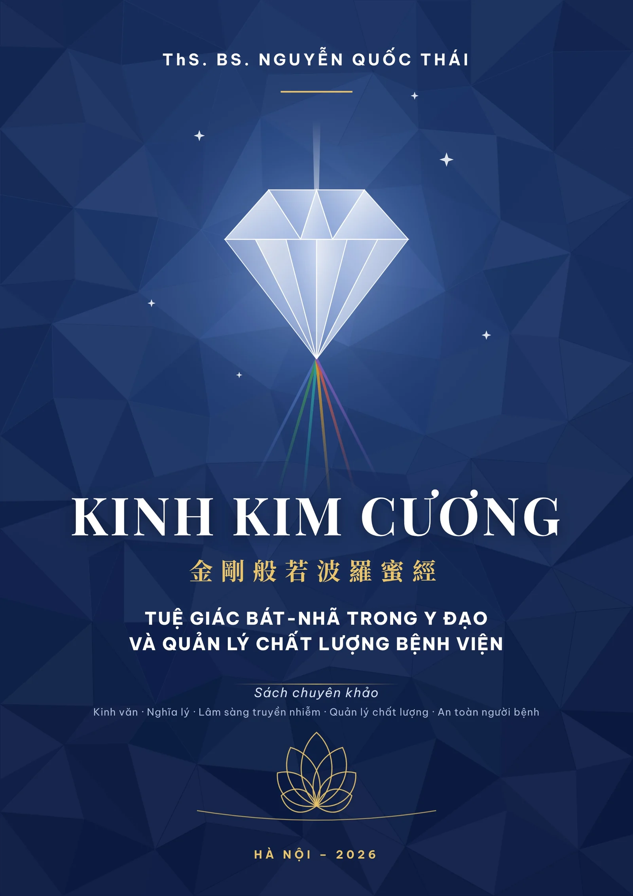
Sách chuyên khảo · Ấn bản điện tử
Kinh Kim Cương
金剛般若波羅蜜經
Tuệ giác Bát-nhã trong Y đạo và Quản lý chất lượng bệnh viện
Cuốn sách dùng Kinh Kim Cương làm la bàn cho cách nghĩ của người thầy thuốc và người quản lý chất lượng, còn khoa học an toàn người bệnh làm bằng chứng. Những sai sót khó nhất trong y khoa thường không nằm ở thiếu kiến thức hay công cụ, mà ở cách tâm con người nhìn và bám chấp – điều kinh gọi là “tướng”.
- 5 phần
- 27 chương
- 32 phân kinh văn
- 3 phụ lục
- 164 tài liệu tham khảo
Mục lục
Mở đầuTrước khi đọc
- 6Khởi duyên và phát vấn (Phân 1–2)
- 7Phá tướng ngoại cảnh và bố thí vô trụ (Phân 3–5)
- 8Phá chấp pháp và ngôn thuyết (Phân 6–8)
- 9Phá chấp quả vị và tịnh độ (Phân 9–10)
- 10Tán thán diệu lực Bát-nhã (Phân 11–13)
- 11Lìa tướng chứng ngộ và nhẫn nhục (Phân 14–16)
- 12Trùng thỉnh và phá nghi vi tế (Phân 17–20)
- 13Phá chấp thuyết pháp và đắc pháp (Phân 21–24)
- 14Vô ngã cứu độ và Pháp thân vô tướng (Phân 25–28)
- 15Tự tính Như Lai và bản thể nhất hợp (Phân 29–31)
- 16Lưu thông: ứng hóa phi chân (Phân 32) và tổng kết 32 phân
- 20Cấp độ 1 – Tính Không và cây bút: từ văn hóa không đổ lỗi đến văn hóa công bằng
- 21Cấp độ 2 – Hạt giống nghiệp: quản trị rủi ro chủ động
- 22Cấp độ 3 – Sự tương lập (duyên khởi): tư duy hệ thống và truy vết lâm sàng
- 23Cấp độ 4 – Bố thí Ba-la-mật: chia sẻ tri thức và xây dựng năng lực đồng bộ
- 24Cấp độ 5 – Nhẫn nhục và tinh tấn: quản trị sự thay đổi và vượt qua sức ì
- 25Cấp độ 6 – Trí tuệ Kim Cương: quản trị lâm sàng bền bỉ
Phụ lục và tài liệuTra cứu nhanh
LỜI NÓI ĐẦU
Cuốn sách này ra đời từ hai dòng chảy song hành trong đời người viết.
Dòng chảy thứ nhất là hơn ba mươi năm nghiên cứu, đọc tụng, chiêm nghiệm và thực hành Kinh Kim Cương – bộ kinh mà người viết đã học qua nhiều bản dịch và chú giải: từ nguyên văn chữ Hán của ngài Cưu-ma-la-thập, lời khẩu quyết của Lục Tổ Huệ Năng, bộ tập chú đời Vĩnh Lạc, bản dịch tiếng Anh của Max Müller, đến các bản giảng nghĩa của cư sĩ Giang Vị Nông, cư sĩ Thiều Chửu, cư sĩ Đoàn Trung Còn, Giáo sư Nam Hoài Cẩn và Đại sư Tinh Vân. Mỗi lần đọc lại là một lần thấy thêm một tầng nghĩa mới – không phải vì kinh thay đổi, mà vì người đọc đã đi thêm một đoạn đường đời.
Dòng chảy thứ hai là hơn hai mươi năm công tác trong chuyên ngành Truyền nhiễm, song hành với công tác quản lý chất lượng bệnh viện và an toàn người bệnh tại một bệnh viện tuyến cuối. Đó là những năm tháng đứng bên giường người bệnh sốt xuất huyết Dengue, nhiễm khuẩn huyết, viêm màng não, HIV/AIDS; là những mùa dịch SARS, cúm A/H5N1, COVID-19; là những buổi phân tích sự cố y khoa căng thẳng, những đợt đánh giá chất lượng, những bước đi đầu tiên trên lộ trình chuẩn quốc tế.
Hai dòng chảy ấy gặp nhau ở một nhận thức ngày càng rõ: những vấn đề khó nhất của y khoa và quản lý chất lượng không nằm ở thiếu kiến thức hay thiếu công cụ, mà nằm ở cách tâm con người nhìn, phản ứng và bám chấp. Một bác sĩ giỏi vẫn có thể bỏ sót một chẩn đoán vì bị “neo” vào nhận định đầu tiên. Một hội đồng phân tích sự cố có đủ công cụ RCA vẫn có thể đi đến kết luận sai vì nhãn “điều dưỡng cẩu thả” đã hiện ra trước mọi dữ kiện. Một bệnh viện đạt chuẩn vẫn có thể mất an toàn ngay khi nghĩ rằng mình “đã về đích”. Kinh Kim Cương gọi những trở ngại ấy là “tướng” và chỉ ra con đường cắt đứt chúng bằng trí tuệ sắc như kim cương. Khoa học an toàn người bệnh hiện đại – từ mô hình pho mát Thụy Sĩ của James Reason, văn hóa công bằng của David Marx, đến Safety-II của Erik Hollnagel – đi đến những kết luận rất gần, bằng một ngôn ngữ khác.
Cuốn sách được biên soạn từ hai tư liệu chính của người viết: chuyên khảo Kim Cương Bát-nhã Ba-la-mật kinh – tâm đắc trong y đạo, lâm sàng truyền nhiễm và quản trị chất lượng bệnh viện, và chuỗi sáu bài giảng Ứng dụng Kinh Kim Cương trong xây dựng, hình thành và trưởng thành bản lĩnh quản lý chất lượng bệnh viện và an toàn người bệnh đã được giảng dạy cho mạng lưới quản lý chất lượng của bệnh viện. Sách gồm năm phần: Phần thứ nhất trình bày đại cương văn bản, huyền nghĩa, cấu trúc và phương pháp biện chứng của Kinh Kim Cương; Phần thứ hai đi qua trọn vẹn ba mươi hai phân kinh với ứng dụng trong y đạo; Phần thứ ba bắc cầu sang khoa học an toàn người bệnh; Phần thứ tư hệ thống hóa sáu cấp độ bản lĩnh quản lý chất lượng; Phần thứ năm đưa ra các thực hành hằng ngày.
Người viết xin nói rõ ba nguyên tắc đã theo trong suốt quá trình biên soạn. Thứ nhất, kinh văn được dùng như la bàn cho cách nghĩ, khoa học được dùng như bằng chứng, còn thực tiễn khoa phòng là nơi kiểm chứng; người đọc không cần chấp nhận bất kỳ diễn giải siêu hình nào để vận dụng được các bài học quản trị. Thứ hai, các tình huống minh họa đều được mô phỏng từ thực tế khám chữa bệnh tại Việt Nam, chi tiết đã được thay đổi để không nhận diện được cá nhân, khoa phòng hay cơ sở y tế cụ thể; các sáng kiến có thật của đơn vị Truyền nhiễm được ghi rõ là sáng kiến thực tế. Thứ ba, mọi khẳng định khoa học đều được trích dẫn theo kiểu Vancouver để người đọc có thể kiểm chứng.
Cuốn sách chắc chắn còn nhiều thiếu sót – cả về hiểu biết kinh điển lẫn về kiến thức chuyên môn. Người viết thành tâm mong nhận được sự chỉ giáo của chư tôn đức, các bậc thức giả, các đồng nghiệp và bạn đọc. Xin chân thành cảm ơn lãnh đạo bệnh viện, các đồng nghiệp trong đơn vị Truyền nhiễm, các đồng nghiệp trong mạng lưới quản lý chất lượng – an toàn người bệnh và các học viên đã cùng người viết đi qua sáu cấp độ của chuỗi bài giảng. Những câu hỏi, những tranh luận và những dòng sổ 6 thời của các anh chị là chất liệu quý nhất của cuốn sách này.
Hà Nội, mùa thu năm 2026
ThS. BS. Nguyễn Quốc Thái
HƯỚNG DẪN SỬ DỤNG SÁCH
Sách có thể đọc theo ba cách. Đọc tuần tự từ Phần thứ nhất đến Phần thứ năm – phù hợp với người muốn nắm hệ thống. Đọc theo nhu cầu: người làm lâm sàng có thể bắt đầu từ Phần thứ hai (ba mươi hai phân) và Chương 18 (bốn tướng và thiên kiến chẩn đoán); người làm quản lý chất lượng có thể bắt đầu từ Phần thứ tư (sáu cấp độ). Dùng như giáo trình: mỗi chương của Phần thứ tư tương ứng với một bài giảng 180 phút, có mục tiêu, tình huống, công cụ, bài tập nhóm, câu hỏi lượng giá và bài thực hành 30 ngày.
Trong sách, người đọc sẽ gặp các khối trình bày có màu sắc thống nhất như sau:
Bảng MĐ.1. Quy ước các khối trình bày trong sách
| Khối | Cách trình bày và nội dung |
|---|---|
| Nguyên văn – Phiên âm – Dịch nghĩa (mục I của mỗi phân kinh) | Ba khối liền nhau, nền màu kem, có vạch màu vàng đồng ở mép trái, mỗi khối có tiêu đề nhỏ riêng: (1) nguyên văn chữ Hán – chữ màu đỏ sẫm, cỡ lớn; (2) phiên âm Hán – Việt – chữ nghiêng màu nâu; (3) dịch nghĩa – chữ thường. Chỗ bản tụng lưu hành khác bản Đại Chánh tạng được ghi chú ở chân trang |
| ◆ TÌNH HUỐNG | Khung nền xanh ngọc nhạt, vạch xanh ngọc đậm ở mép trái: tình huống thực tiễn mô phỏng từ thực tế khám chữa bệnh tại Việt Nam, hoặc sáng kiến có thật của đơn vị Truyền nhiễm (có ghi rõ) |
| ◆ ĐIỂM THEN CHỐT | Khung nền vàng nhạt, vạch vàng đậm: các ý chính cần ghi nhớ |
| ◆ SUY NGẪM | Khung nền tím nhạt, vạch tím: câu hỏi suy ngẫm, câu hỏi lượng giá |
| ◆ KINH VĂN | Khung nền kem, vạch đỏ sẫm: kệ kết, câu kinh để quán chiếu |
| ◆ LƯU Ý · TRÍCH DẪN · THỰC HÀNH · CẢNH BÁO | Khung nền lần lượt xanh dương, xám, cam, hồng nhạt với vạch cùng tông màu: lưu ý học thuật, lời chuyên gia, bài thực hành, cảnh báo hiểu sai |
Kinh văn chữ Hán theo bản tụng lưu hành phổ biến, dựa trên bản dịch của ngài Cưu-ma-la-thập (Đại Chánh tạng, tập 8, số 235). Ở những chỗ bản tụng lưu hành khác với bản Đại Chánh tạng – chủ yếu là một số vế “thị danh…” được bổ sung ở Phân 8, 13, 14 và 25 – sách giữ bản tụng lưu hành và ghi chú ở chân trang để người đọc đối chiếu; đoạn sáu mươi hai chữ ở Phân 21 (có cả trong bản Đại Chánh tạng) vốn được thêm vào bản La-thập từ đời Đường, cũng được ghi chú ở chân trang. Phiên âm Hán – Việt và dịch nghĩa do người viết biên soạn trên cơ sở đối chiếu các bản dịch của Thiều Chửu, Đoàn Trung Còn và các bản Việt dịch khác. Trong phần phiên âm, âm đọc theo Hán – Việt tự điển của Thiều Chửu và thống nhất trong toàn sách: 則 đọc là tắc, 即 là tức; 樂 mang nghĩa “ưa thích” đọc là nhạo; 但 là đãn; 從 là tòng; 實 là thực; 福 là phúc; 正 là chính; 性 là tính; 樹 là thụ; 不 ở cuối câu nghi vấn đọc là phủ; 耶 ở cuối câu nghi vấn đọc là gia. Trong lời văn tiếng Việt, sách dùng thống nhất các âm phúc (phúc đức) và tính (tự tính, tính Không), dùng chính cho các thuật ngữ gắn với tên phân (chính tông, chính tín, chính giáo); riêng tên gọi Đại Chánh tạng và các thuật ngữ đã quen dùng như Vô thượng Chánh đẳng Chánh giác, chánh niệm được giữ nguyên. Khi trích lại kinh văn ở các chương khác, sách giữ đúng chữ và âm đọc của phân kinh tương ứng. Các con số trong ngoặc vuông [ ] là số thứ tự tài liệu tham khảo ở cuối sách.
MỤC LỤC
DANH MỤC CHỮ VIẾT TẮT
| Chữ viết tắt | Nghĩa đầy đủ |
|---|---|
| AAR | Rà soát sau hành động (After Action Review) |
| ADKAR | Nhận thức – Mong muốn – Kiến thức – Khả năng – Củng cố (Awareness, Desire, Knowledge, Ability, Reinforcement) |
| AIDS | Hội chứng suy giảm miễn dịch mắc phải (Acquired Immunodeficiency Syndrome) |
| ARV | Thuốc kháng retrovirus (antiretroviral) |
| ATNB | An toàn người bệnh |
| BARS | Thang đánh giá neo hành vi (Behaviorally Anchored Rating Scales) |
| BEI | Phỏng vấn sự kiện hành vi (Behavioral Event Interview) |
| CD4 | Tế bào lympho T mang dấu ấn CD4 |
| CLSI | Viện Tiêu chuẩn Lâm sàng và Xét nghiệm (Clinical and Laboratory Standards Institute) |
| CNTT | Công nghệ thông tin |
| COVID-19 | Bệnh do virus corona 2019 (Coronavirus Disease 2019) |
| DRESS | Phản ứng thuốc kèm tăng bạch cầu ái toan và triệu chứng toàn thân (Drug Reaction with Eosinophilia and Systemic Symptoms) |
| EMR | Bệnh án điện tử (Electronic Medical Record) |
| ETTO | Đánh đổi hiệu quả – kỹ lưỡng (Efficiency–Thoroughness Trade-Off) |
| FMEA | Phân tích sai hỏng và tác động (Failure Mode and Effects Analysis) |
| FRAM | Phương pháp phân tích cộng hưởng chức năng (Functional Resonance Analysis Method) |
| GLD | Quản trị, lãnh đạo và điều hành (Governance, Leadership, and Direction) – một chương của Bộ tiêu chuẩn JCI |
| HACCP | Phân tích mối nguy và điểm kiểm soát tới hạn (Hazard Analysis and Critical Control Points) |
| HFMEA | Phân tích sai hỏng và tác động trong y tế (Healthcare Failure Mode and Effect Analysis) |
| HIS | Hệ thống thông tin bệnh viện (Hospital Information System) |
| HIV | Virus gây suy giảm miễn dịch ở người (Human Immunodeficiency Virus) |
| HRO | Tổ chức tin cậy cao (High Reliability Organization) |
| I-PASS | Mức độ nặng – Tóm tắt người bệnh – Danh sách việc cần làm – Nhận thức tình huống và dự phòng – Người nhận tóm tắt lại (Illness severity, Patient summary, Action list, Situation awareness and contingency planning, Synthesis by receiver) |
| IHI | Viện Cải tiến Chăm sóc Sức khỏe (Institute for Healthcare Improvement) |
| IPSG | Mục tiêu an toàn người bệnh quốc tế (International Patient Safety Goals) |
| ISBAR | Nhận diện – Tình huống – Bối cảnh – Đánh giá – Đề xuất (Identify, Situation, Background, Assessment, Recommendation) |
| ISMP | Viện Thực hành thuốc an toàn Hoa Kỳ (Institute for Safe Medication Practices) |
| ISO | Tổ chức Tiêu chuẩn hóa Quốc tế (International Organization for Standardization) |
| JCI | Joint Commission International – tổ chức công nhận chất lượng quốc tế |
| K=K | Không phát hiện = Không lây truyền (quốc tế: U=U – Undetectable = Untransmittable) |
| KPI | Chỉ số đo lường hiệu suất chính (Key Performance Indicator) |
| KSNK | Kiểm soát nhiễm khuẩn |
| LASA | Thuốc nhìn giống – đọc giống (Look-Alike, Sound-Alike) |
| MET | Đội cấp cứu nội viện (Medical Emergency Team) |
| MEWS | Thang điểm cảnh báo sớm cải biên (Modified Early Warning Score) |
| MRSA | Tụ cầu vàng kháng methicillin (Methicillin-resistant Staphylococcus aureus) |
| NC0 – NC3 | Các mức độ tổn thương do sự cố y khoa theo Phụ lục I Thông tư 43/2018/TT-BYT: NC0 – chưa xảy ra (mức A); NC1 – nhẹ (B, C, D); NC2 – trung bình (E, F); NC3 – nặng (G, H, I) |
| NCPS | Trung tâm An toàn người bệnh Quốc gia, Bộ Cựu chiến binh Hoa Kỳ (National Center for Patient Safety) |
| NEWS / NEWS2 | Thang điểm cảnh báo sớm quốc gia / phiên bản 2 (National Early Warning Score) |
| NKBV | Nhiễm khuẩn bệnh viện |
| NPSF | Quỹ An toàn người bệnh Quốc gia Hoa Kỳ (National Patient Safety Foundation) |
| PDSA / PDCA | Lập kế hoạch – Thực hiện – Nghiên cứu (Kiểm tra) – Hành động (Plan, Do, Study/Check, Act) |
| QLCL | Quản lý chất lượng |
| QLRR | Quản lý rủi ro |
| RCA / RCA² | Phân tích nguyên nhân gốc / Phân tích nguyên nhân gốc và hành động (Root Cause Analysis and Action) |
| RPN | Chỉ số ưu tiên rủi ro (Risk Priority Number) |
| RRT | Đội phản ứng nhanh (Rapid Response Team) |
| SAC | Mã đánh giá mức độ an toàn (Safety Assessment Code) |
| SARS | Hội chứng hô hấp cấp tính nặng (Severe Acute Respiratory Syndrome) |
| SBAR | Tình huống – Bối cảnh – Đánh giá – Đề xuất (Situation, Background, Assessment, Recommendation) |
| SECI | Xã hội hóa – Ngoại hóa – Kết hợp – Nội hóa (mô hình tri thức của Nonaka) |
| SOP | Quy trình thao tác chuẩn (Standard Operating Procedure) |
| SPIKES | Quy trình sáu bước thông báo tin xấu: Bối cảnh – Nhận thức – Lời mời – Kiến thức – Cảm xúc – Chiến lược và tóm tắt (Setting, Perception, Invitation, Knowledge, Emotions, Strategy and Summary) |
| SSC | Chiến dịch Sống sót sau nhiễm khuẩn huyết (Surviving Sepsis Campaign) |
| STAR | Tình huống – Nhiệm vụ – Hành động – Kết quả (Situation, Task, Action, Result) |
| STOP | Dừng – Thở – Quan sát – Tiếp tục (Stop, Take a breath, Observe, Proceed) |
| T (Taishō) | Đại Chánh Tân Tu Đại Tạng Kinh; ví dụ T08 là tập 8 |
| TAT | Thời gian hoàn thành xét nghiệm (Turnaround Time) |
| ThS. BS. | Thạc sĩ, Bác sĩ |
| TT-BYT | Thông tư của Bộ Y tế |
| VA | Bộ Cựu chiến binh Hoa Kỳ (Department of Veterans Affairs) |
| WAI / WAD | Công việc tưởng tượng / công việc thực tế (Work-as-Imagined / Work-as-Done) |
| WHO | Tổ chức Y tế Thế giới (World Health Organization) |
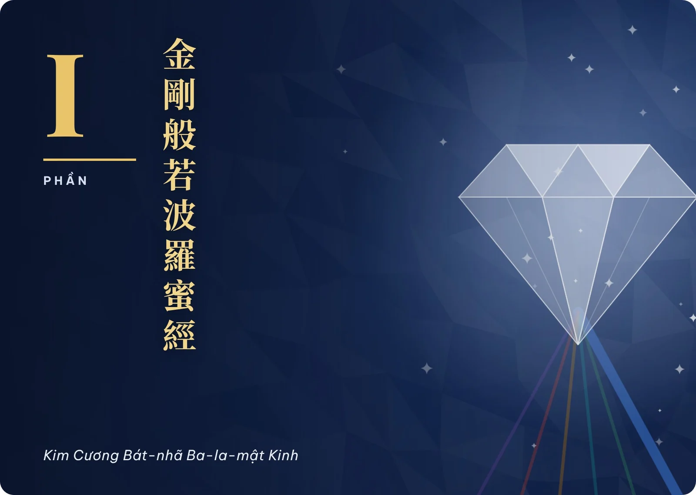
Phần thứ nhất
ĐẠI CƯƠNG KINH KIM CƯƠNG BÁT-NHÃ
Văn bản · truyền thừa · huyền nghĩa · cấu trúc · biện chứng
Phần thứ nhất đặt nền móng văn bản học và triết học cho toàn bộ cuốn sách. Người thầy thuốc quen làm việc với bằng chứng: trước khi bàn về ứng dụng, chúng ta cần biết bộ kinh này ra đời trong bối cảnh nào, được dịch và truyền lại qua những ai, cấu trúc nội tại vận hành ra sao, và cái “logic” đặc thù của nó – biện chứng “A – tức phi A – thị danh A” – khác với tư duy hình thức ở điểm nào. Năm chương của phần này đi từ ngoài vào trong: từ văn bản (Chương 1) đến huyền nghĩa (Chương 2), cấu trúc (Chương 3), phương pháp luận (Chương 4) và sau cùng là mười đoạn kinh văn cốt lõi mà người thực hành nên thuộc lòng (Chương 5).
Chương 1
NGUỒN GỐC, VĂN BẢN VÀ TRUYỀN THỪA KINH KIM CƯƠNG
Tên kinh và ý nghĩa
Tên đầy đủ bằng tiếng Phạn của kinh là Vajracchedikā Prajñāpāramitā Sūtra. Mỗi thành tố của tên gọi đã là một bài học:
- Vajra (金剛 – kim cương): vừa là viên kim cương, vừa là chày sấm sét của thần Đế Thích trong thần thoại Ấn Độ – vật cứng nhất, không gì phá hoại được, mà lại phá hoại được mọi vật.
- Cchedikā (能斷 – năng đoạn): “có năng lực cắt đứt”. Ngài Huyền Trang dịch sát nghĩa thành Năng Đoạn Kim Cương – kim cương có thể cắt đứt [1].
- Prajñā (般若 – bát-nhã): trí tuệ thấy rõ thực tướng của các pháp, khác với trí thức (tri thức tích lũy) và khác với thông minh.
- Pāramitā (波羅蜜 – ba-la-mật): “đến bờ kia” – từ bờ mê sang bờ giác; cũng hiểu là “hoàn thiện, trọn vẹn”.
- Sūtra (經 – kinh): sợi chỉ xâu chuỗi; lời dạy được kết tập.
Ghép lại, tên kinh có nghĩa: bộ kinh về trí tuệ đưa người qua bờ kia, sắc bén như kim cương, có năng lực cắt đứt mọi chấp trước. Truyền thống còn gọi kinh là Tam bách tụng Bát-nhã (Triśatikā) vì độ dài tương đương khoảng ba trăm câu kệ, phân biệt với các bộ Bát-nhã dài hàng nghìn, hàng vạn tụng [2].
LƯU ÝVì sao gọi là “kim cương”?
Các nhà chú giải nêu ba đặc tính của kim cương để ví với trí tuệ Bát-nhã: kiên (cứng – không bị phiền não phá hoại), minh (sáng – soi thấu thực tướng), lợi (sắc – cắt đứt mọi chấp trước) [3,4]. Ở cấp độ 6 của Phần thứ tư, ba đặc tính này được ánh xạ thành ba phẩm chất của một hệ thống y tế bền bỉ: lõi nguyên tắc không thương lượng, trí tuệ thấy xuyên bản chất, và sự minh bạch.
Vị trí của Kinh Kim Cương trong hệ văn học Bát-nhã
Văn học Bát-nhã (Prajñāpāramitā) là dòng kinh điển Đại thừa sớm nhất và đồ sộ nhất, hình thành khoảng từ thế kỷ I trước Công nguyên đến những thế kỷ đầu Công nguyên. Bộ Đại Bát-nhã Ba-la-mật-đa kinh do ngài Huyền Trang dịch gồm 600 quyển, chia làm 16 hội; Kinh Kim Cương tương ứng với hội thứ 9 (quyển 577) của bộ này [1]. Cùng với Bát-nhã Tâm kinh (chỉ hơn hai trăm chữ Hán), Kinh Kim Cương là bộ kinh Bát-nhã được trì tụng rộng rãi nhất ở Đông Á.
Về nội dung, Kinh Kim Cương không trình bày học thuyết theo lối hệ thống, mà theo lối đối thoại sống động giữa Đức Phật và Trưởng lão Tu-bồ-đề (Subhūti) – vị đệ tử được tôn là “Giải Không đệ nhất”. Nền triết học mà kinh tiềm ẩn – tính Không (śūnyatā) và duyên khởi (pratītyasamutpāda) – về sau được Bồ-tát Long Thọ (Nāgārjuna, khoảng thế kỷ II) hệ thống hóa trong Trung luận: “Cái gì duyên khởi, cái đó ta gọi là Không” [5].
Sáu bản dịch Hán văn
Kinh Kim Cương được dịch sang Hán văn ít nhất sáu lần, thường được gọi là “lục dịch”. Bản của ngài Cưu-ma-la-thập (Kumārajīva, 344–413) văn phong trong sáng, cô đọng, là bản phổ biến nhất ở Trung Hoa, Triều Tiên, Nhật Bản và Việt Nam, và là bản được dùng xuyên suốt cuốn sách này [6].
Bảng 1.1. Sáu bản dịch Hán văn Kinh Kim Cương (“lục dịch”)
| Dịch giả | Niên đại | Tên bản dịch | Đại Chánh tạng |
|---|---|---|---|
| Cưu-ma-la-thập (Kumārajīva) | khoảng 402 | Kim Cương Bát-nhã Ba-la-mật kinh 金剛般若波羅蜜經 | T08, số 235 |
| Bồ-đề-lưu-chi (Bodhiruci) | 509 | Kim Cương Bát-nhã Ba-la-mật kinh | T08, số 236 |
| Chân Đế (Paramārtha) | 562 | Kim Cương Bát-nhã Ba-la-mật kinh | T08, số 237 |
| Đạt-ma-cấp-đa (Dharmagupta) | cuối thế kỷ VI | Kim Cương Năng Đoạn Bát-nhã Ba-la-mật kinh | T08, số 238 |
| Huyền Trang | 660–663 | Năng Đoạn Kim Cương phần (Đại Bát-nhã, hội 9) | T07, số 220 |
| Nghĩa Tịnh (Yijing) | 703 | Phật thuyết Năng Đoạn Kim Cương Bát-nhã Ba-la-mật-đa kinh | T08, số 239 |
Về niên đại bản dịch của ngài La-thập, các tư liệu ghi khác nhau trong khoảng 401–404 (đời Diêu Tần, niên hiệu Hoằng Thủy); con số được dẫn phổ biến nhất là năm 402 [6–10]. So sánh các bản dịch là một phương pháp học kinh rất bổ ích: chẳng hạn, bộ bốn tướng mà ngài La-thập dịch là “ngã, nhân, chúng sinh, thọ giả” (我相、人相、眾生相、壽者相) thì ngài Huyền Trang dịch sát chữ saṃjñā của bản Phạn thành 想 (tưởng) và liệt kê đến chín tưởng – ngã tưởng, hữu tình tưởng, mạng giả tưởng, sĩ phu tưởng, bổ-đặc-già-la tưởng, ý sinh tưởng, ma-nạp-bà tưởng, tác giả tưởng, thọ giả tưởng (我想、有情想、命者想、士夫想、補特伽羅想、意生想、摩納婆想、作者想、受者想) [1], trong khi bản Phạn hiện hành do Conze hiệu đính chỉ nêu bốn: ātma-, sattva-, jīva- và pudgala-saṃjñā [2]. Tương tự, bài kệ Lục Dụ sáu hình ảnh (mộng, huyễn, bọt, bóng, sương, điện) ở bản La-thập thì trong bản Huyền Trang thành chín hình ảnh (sao, hoa đốm trước mắt bệnh, đèn, huyễn, sương, bọt, mộng, điện, mây). Sự khác biệt ấy nhắc người học rằng văn tự chỉ là ngón tay chỉ trăng – đúng tinh thần của chính bộ kinh.
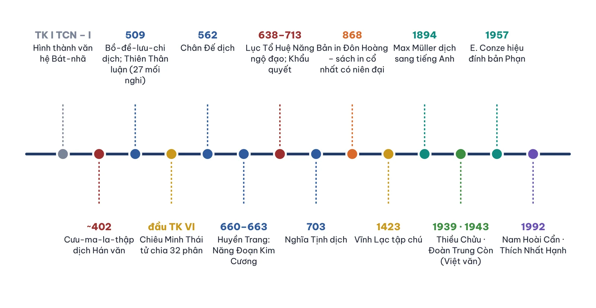
Bản Phạn, bản Tạng và các bản dịch phương Tây
Bản Phạn văn của Kinh Kim Cương được tìm thấy trong nhiều di chỉ, trong đó có các thủ bản Gilgit (Pakistan ngày nay) niên đại khoảng thế kỷ VI–VII. Học giả F. Max Müller công bố bản Phạn và bản dịch tiếng Anh The Vagrakkhedikâ or Diamond-Cutter trong bộ Sacred Books of the East (tập 49, năm 1894) – bản dịch tiếng Anh mà người viết dùng làm tư liệu đối chiếu thường xuyên [11]. Edward Conze công bố bản hiệu đính phê bình năm 1957, đến nay vẫn là chuẩn mực học thuật [2]. Các bản dịch hiện đại có giá trị gồm bản của Red Pine (2001) và bản chú giải của Thiền sư Thích Nhất Hạnh The Diamond That Cuts Through Illusion (1992) [12,13].
Bản in Đôn Hoàng năm 868 – cuốn sách in cổ nhất có ghi niên đại
Năm 1900, trong hang số 17 của quần thể hang Mạc Cao (Đôn Hoàng, Cam Túc), người ta phát hiện một kho văn thư cổ bị niêm phong từ khoảng thế kỷ XI. Trong đó có một cuộn Kinh Kim Cương in khắc gỗ dài khoảng 5 mét, cuối cuộn có dòng ghi rằng bản kinh được một người tên Vương Giới (王玠) cho in vào ngày 15 tháng 4 năm Hàm Thông thứ 9 – tức ngày 11 tháng 5 năm 868 – “để kính cúng cho song thân”. Cuộn kinh được Aurel Stein đưa về Anh năm 1907 và hiện lưu tại Thư viện Anh (ký hiệu Or.8210/P.2), được công nhận là cuốn sách in có ghi niên đại cổ nhất còn tồn tại [14].
Chi tiết nhỏ ấy có ý nghĩa lớn với người làm y tế: một bộ kinh dạy “bố thí không trụ tướng” lại được lưu truyền nhờ lòng hiếu và sự cúng dường âm thầm của một người bình thường. Hơn mười một thế kỷ sau, tên Vương Giới vẫn còn – không phải vì ông muốn lưu danh, mà vì việc ông làm có giá trị cho người khác.
Chiêu Minh Thái tử và hệ thống 32 phân
Bản dịch của ngài La-thập vốn là một văn bản liền mạch, không chia đoạn. Cách chia thành 32 phân với tên gọi bốn chữ (như Pháp hội nhân do phân, Thiện Hiện khởi thỉnh phân…) được truyền thống gán cho Chiêu Minh Thái tử Tiêu Thống (501–531) đời Lương – người nổi tiếng với bộ Văn tuyển. Cách chia này không phải của kinh gốc, có nhiều chỗ cắt ngang mạch văn, nhưng vì tiện cho việc tụng đọc và giảng dạy nên được dùng phổ biến đến nay [15,16]. Cuốn sách này giữ cách chia 32 phân để thống nhất với các bản kinh tụng ở Việt Nam.
Song song với cách chia 32 phân, truyền thống luận giải Ấn Độ – tiêu biểu là bộ Kim Cương Bát-nhã Ba-la-mật kinh luận của Bồ-tát Thiên Thân (Vasubandhu) do ngài Bồ-đề-lưu-chi dịch – lại đọc kinh theo một logic khác: chuỗi 27 mối nghi (nhị thập thất nghi) mà Đức Phật lần lượt đoán trước và giải trừ cho người nghe [17]. Hai cách đọc bổ sung cho nhau: cách chia 32 phân giúp thuộc kinh, cách đọc theo 27 mối nghi giúp hiểu vì sao câu sau nối tiếp câu trước (xem Chương 3).
Lục Tổ Huệ Năng và Kinh Kim Cương
Không bộ kinh nào gắn bó với Thiền tông Trung Hoa sâu đậm như Kinh Kim Cương. Theo Pháp Bảo Đàn Kinh, Huệ Năng (638–713) thuở nhỏ mồ côi cha, đốn củi nuôi mẹ. Một hôm giao củi ở quán trọ, nghe một khách tụng Kinh Kim Cương, tâm liền khai ngộ; hỏi ra mới biết kinh ấy được Ngũ Tổ Hoằng Nhẫn ở núi Hoàng Mai thường khuyên người trì tụng. Về sau, khi Ngũ Tổ giảng Kinh Kim Cương cho Huệ Năng lúc canh ba, đến câu “Ưng vô sở trụ nhi sinh kỳ tâm”, Huệ Năng đại ngộ, thốt lên: “Đâu ngờ tự tính vốn tự thanh tịnh…” [18]. Từ đó, Kinh Kim Cương thay thế kinh Lăng-già trở thành kinh điển truyền tâm của dòng Thiền Nam tông.
Lời giảng Kinh Kim Cương được ghi lại dưới danh Lục Tổ – Kim Cương kinh giải nghĩa và Kim Cương kinh khẩu quyết – mở đầu bằng một câu tổng quát mà người viết xem là chìa khóa của toàn bộ cuốn sách này: “Phù Kim Cương kinh giả, vô tướng vi tông, vô trụ vi thể, diệu hữu vi dụng” – Kinh Kim Cương lấy vô tướng làm tông, vô trụ làm thể, diệu hữu làm dụng [19]. Chương 2 sẽ phân tích câu này.
Các bộ chú giải lớn được dùng trong sách
Qua hơn mười lăm thế kỷ, Kinh Kim Cương có hàng trăm bộ chú sớ. Năm 1423, Minh Thành Tổ (Vĩnh Lạc Hoàng đế) cho tập hợp chú giải của hàng chục nhà thành bộ Kim Cương kinh tập chú, về sau được khắc in với tên Tân san Kim Cương kinh bách gia tập chú đại thành [20]. Thời cận đại, cư sĩ Giang Vị Nông soạn Kim Cương kinh giảng nghĩa năm quyển – một trong những bộ giảng giải công phu nhất, phân tích kinh theo Ngũ trùng huyền nghĩa của tông Thiên Thai [3]. Giáo sư Nam Hoài Cẩn với Kim Cương kinh thuyết thập ma và Đại sư Tinh Vân với Kim Cương kinh giảng thoại đã đưa kinh đến gần đời sống hiện đại [4,21].
Ở Việt Nam, Kinh Kim Cương được trì tụng rộng rãi trong các thiền môn và gia đình Phật tử. Bản Giảng nghĩa Kinh Kim Cương của cư sĩ Thiều Chửu (Nguyễn Hữu Kha) năm 1939, soạn dựa theo giảng lục của Đại sư Thái Hư, và bản Kim-Cang Kinh do cư sĩ Đoàn Trung Còn dịch giải năm 1943 là hai trong những bản Việt văn sớm và có ảnh hưởng nhất [15,16]. Nhiều bản dịch và chú giải tiếng Việt khác của chư tôn đức và học giả hiện được lưu trữ rộng rãi trên các thư viện Phật học trực tuyến như Thư viện Hoa Sen.
Bảng 1.2. Hệ tư liệu kinh văn và chú giải được sử dụng trong sách
| Tư liệu | Tác giả / dịch giả | Vai trò trong sách |
|---|---|---|
| Kim Cương Bát-nhã Ba-la-mật kinh | Cưu-ma-la-thập dịch (~402) | Văn bản gốc, chia 32 phân theo Chiêu Minh Thái tử |
| Năng Đoạn Kim Cương phần | Huyền Trang dịch (660–663) | Đối chiếu nghĩa, tên “năng đoạn” |
| Kim Cương kinh giải nghĩa, Kim Cương kinh khẩu quyết | Lục Tổ Huệ Năng khẩu thuật | Tông chỉ “vô tướng – vô trụ – diệu hữu”; giải nghĩa theo tâm |
| Kim Cương kinh tập chú | Vĩnh Lạc tập chú (1423) | Đối chiếu lời chú của nhiều nhà |
| The Vagrakkhedikâ or Diamond-Cutter | F. Max Müller (1894) | Đối chiếu bản Phạn – Anh |
| Kim Cương kinh giảng nghĩa | Giang Vị Nông | Ngũ trùng huyền nghĩa; “Lý hiển Tam Không, quán dung Nhị Đế” |
| Giảng nghĩa Kinh Kim Cương | Thiều Chửu (1939) | Bản Việt văn, theo giảng lục Thái Hư |
| Kim-Cang Kinh | Đoàn Trung Còn (1943) | Bản Việt văn đối chiếu |
| Kim Cương kinh thuyết thập ma | Nam Hoài Cẩn | Ngũ Bát-nhã; liên hệ đời sống |
| Kim Cương kinh giảng thoại | Tinh Vân | Ứng dụng nhân gian |
ĐIỂM THEN CHỐTĐiểm then chốt của Chương 1
- Tên kinh Vajracchedikā nghĩa là “kim cương có năng lực cắt đứt” – trí tuệ cắt đứt chấp trước mà không bị chấp trước làm mẻ.
- Bản dịch của ngài Cưu-ma-la-thập (~402) là bản chuẩn dùng trong sách; cách chia 32 phân là của Chiêu Minh Thái tử, không thuộc kinh gốc.
- Bản in Đôn Hoàng năm 868 là cuốn sách in có ghi niên đại cổ nhất còn lại của nhân loại.
- Lục Tổ Huệ Năng ngộ đạo nhờ câu “Ưng vô sở trụ nhi sinh kỳ tâm”; lời khẩu quyết của Ngài nêu tông chỉ: vô tướng làm tông, vô trụ làm thể, diệu hữu làm dụng.
Chương 2
HUYỀN NGHĨA: TÔNG – THỂ – DỤNG, TAM KHÔNG NHỊ ĐẾ VÀ NGŨ BÁT-NHÃ
Trước khi đi vào từng phân kinh, người học cần một “bản đồ tổng quát” – giống như người thầy thuốc cần nắm sinh lý bệnh trước khi đọc từng triệu chứng. Truyền thống chú giải Đông Á cung cấp ba tấm bản đồ bổ sung cho nhau: (1) tông chỉ ba chữ của Lục Tổ Huệ Năng; (2) Ngũ trùng huyền nghĩa của tông Thiên Thai mà cư sĩ Giang Vị Nông vận dụng; (3) Ngũ Bát-nhã mà Giáo sư Nam Hoài Cẩn trình bày. Qua nhiều năm đối chiếu nguyên điển chữ Hán, các bản dịch tiếng Việt và bản dịch tiếng Anh của Max Müller, người viết nhận thấy cốt tủy của Kinh Kim Cương được đúc kết trọn vẹn trong ba tấm bản đồ này.
Tông chỉ của Lục Tổ: vô tướng – vô trụ – diệu hữu
Lời tựa Kim Cương kinh giải nghĩa (thường được lưu hành chung với Kim Cương kinh khẩu quyết) mở đầu: “Phù Kim Cương kinh giả, vô tướng vi tông, vô trụ vi thể, diệu hữu vi dụng” – Kinh Kim Cương lấy Vô tướng làm Tông, lấy Vô trụ làm Thể, lấy Diệu hữu làm Dụng [19].
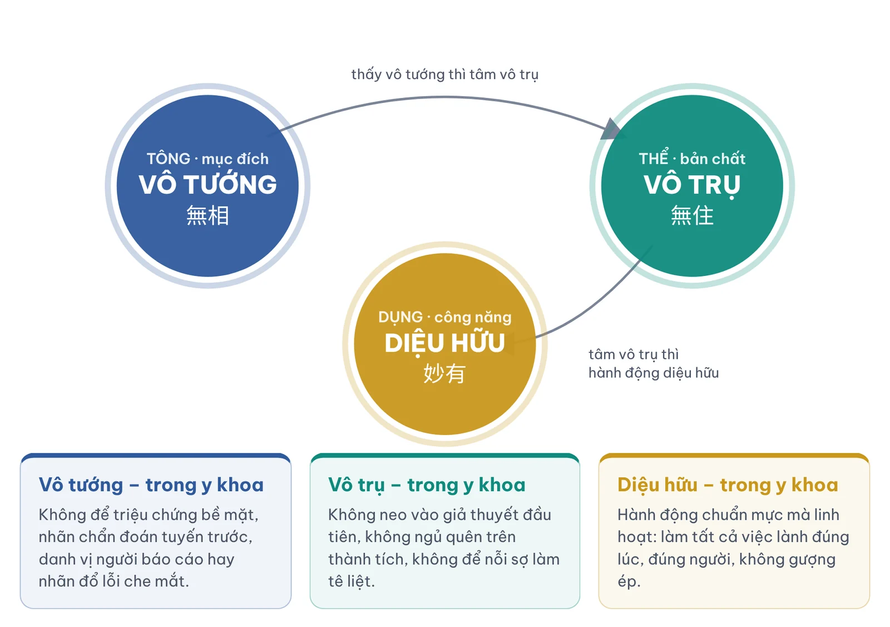
- Vô tướng làm Tông (mục đích, phương hướng tu tập): thấy các tướng không có tự tính cố định – “phàm sở hữu tướng giai thị hư vọng” (Phân 5). Trong y khoa, đây là năng lực không để triệu chứng bề mặt, nhãn chẩn đoán cũ hay danh vị của người báo cáo che mắt mình.
- Vô trụ làm Thể (bản chất của tâm): tâm không dính vào đâu – “ưng vô sở trụ nhi sinh kỳ tâm” (Phân 10). Người thầy thuốc vô trụ không bám vào giả thuyết đầu tiên, không bám vào thành tích, không bám vào nỗi sợ.
- Diệu hữu làm Dụng (công năng): chính vì không trụ nên tâm ứng biến vô cùng – làm tất cả việc lành một cách linh hoạt. “Diệu hữu” là cái “có” mầu nhiệm, khác với cái “có” cứng nhắc của phàm phu và khác với cái “không” trống rỗng của người chấp không.
Ba chữ ấy là một chuỗi nhân quả: thấy vô tướng thì tâm vô trụ; tâm vô trụ thì hành động diệu hữu. Toàn bộ Phần thứ tư của cuốn sách – sáu cấp độ bản lĩnh – thực chất là triển khai chuỗi này trong quản lý chất lượng: cấp độ 1 học “vô tướng” (thấy sự cố không qua nhãn đổ lỗi), cấp độ 6 đạt “diệu hữu” (hành động vô tác, linh hoạt mà không rời nguyên tắc).
Ngũ trùng huyền nghĩa và tám chữ vàng của Giang Vị Nông
Tông Thiên Thai (Trí Khải đại sư, thế kỷ VI) xây dựng phương pháp “Ngũ trùng huyền nghĩa” – năm lớp nghĩa sâu – để khảo sát bất kỳ bộ kinh nào: Thích danh (giải thích tên kinh), Biện thể (xác định bản thể), Minh tông (làm rõ tông chỉ tu tập), Luận dụng (bàn về công dụng) và Phán giáo (xếp loại giáo tướng). Cư sĩ Giang Vị Nông trong Kim Cương kinh giảng nghĩa vận dụng phương pháp này và đúc kết toàn bộ kinh bằng tám chữ: “Lý hiển Tam Không, Quán dung Nhị Đế” – về lý, làm sáng tỏ ba cái Không; về quán, dung thông hai chân lý [3].
Bảng 2.1. Ngũ trùng huyền nghĩa áp dụng cho Kinh Kim Cương (theo Giang Vị Nông)
| Lớp nghĩa | Nội dung | Gợi ý liên hệ trong y đạo và quản trị |
|---|---|---|
| Thích danh | Kim Cương Bát-nhã Ba-la-mật: trí tuệ sắc như kim cương đưa qua bờ kia | Gọi đúng tên vấn đề là bước đầu của mọi can thiệp |
| Biện thể | Thực tướng (thực tướng của các pháp là vô tướng) | Thấy bản chất sinh lý bệnh, không dừng ở triệu chứng |
| Minh tông | Ly nhất thiết tướng, tu nhất thiết thiện – lìa tất cả tướng, làm tất cả việc lành | Làm hết lòng mà không vướng thành tích, danh vị |
| Luận dụng | Phá ngã, diệt tội, thành tựu Như Lai | Phá “cái tôi chuyên môn”, sửa lỗi hệ thống, hoàn thiện con người |
| Phán giáo | Chí viên cực đốn – trọn vẹn và đốn ngộ bậc nhất | Học một câu mà dùng được cả đời hành nghề |
Tam Không: ba tầng buông xả
- Nhân không (ngã không): không có một cái “tôi” cố định, độc lập. Trong phòng họp sự cố, đây là năng lực đặt cái tôi xuống để nhìn sự việc.
- Pháp không: các pháp – kể cả giáo pháp, quy trình, phác đồ – cũng không có tự tính cố định; chúng là phương tiện do duyên mà thành. Đây là nền của dụ “chiếc bè” ở Phân 6.
- Không không: ngay cả cái “Không” cũng không được chấp. Đây là chốt chặn chống lại cách hiểu hư vô: không đổ lỗi không có nghĩa là không trách nhiệm (Phân 27).
Nhị Đế: hai chân lý dung thông
- Tục đế (chân lý quy ước): thế giới của tên gọi, chức danh, quy trình, chỉ số, phác đồ – cần thiết để vận hành và giao tiếp.
- Chân đế (chân lý tối hậu): mọi tên gọi ấy không có tự tính cố định, đều do duyên hợp.
“Quán dung Nhị Đế” nghĩa là sống trọn vẹn trong tục đế – vẫn ghi bệnh án, vẫn tuân thủ quy trình, vẫn đo chỉ số – mà tâm không bị tục đế trói buộc. Cấu trúc “A – tức phi A – thị danh A” (Chương 4) chính là công thức của sự dung thông này: A là tục đế, phi A là chân đế, thị danh A là trung đạo.
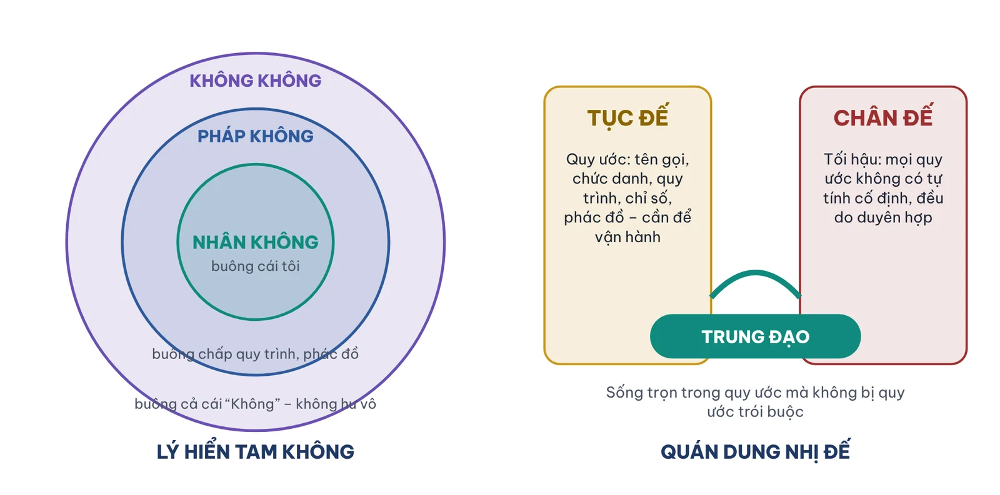
Ngũ Bát-nhã: năm tầng trí tuệ
Truyền thống chú sớ cổ thường nói ba loại Bát-nhã – thực tướng Bát-nhã, quán chiếu Bát-nhã và văn tự Bát-nhã – như trong Kim Cương Bát-nhã kinh sớ tương truyền của Đại sư Trí Khải (Đại Chánh tạng, T33, số 1698); quán chiếu Bát-nhã cũng chính là nền của các bài tập quán chiếu ở Phần thứ hai và Phần thứ năm. Trên nền ấy, Giáo sư Nam Hoài Cẩn triển khai chữ “Bát-nhã” thành năm tầng trí tuệ (Ngũ Bát-nhã) [4]:
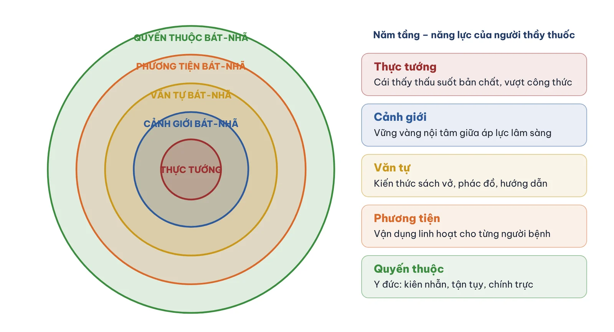
1. Thực tướng Bát-nhã: trí tuệ thấy bản thể chân thật của các pháp – tầng cốt lõi, rốt ráo.
2. Cảnh giới Bát-nhã: trí tuệ biểu hiện thành cảnh giới tâm – sự an định, sáng suốt giữa đời sống.
3. Văn tự Bát-nhã: trí tuệ thể hiện qua ngôn ngữ, kinh điển – lời dạy có thể học, có thể truyền.
4. Phương tiện Bát-nhã: trí tuệ biết dùng phương tiện thiện xảo, phù hợp từng hoàn cảnh, từng người.
5. Quyến thuộc Bát-nhã: các đức hạnh đi kèm trí tuệ – Lục độ vạn hạnh (bố thí, trì giới, nhẫn nhục, tinh tấn, thiền định, trí tuệ).
Nhìn từ góc độ đào tạo y khoa, năm tầng này gợi một lộ trình trưởng thành của người thầy thuốc: từ văn tự (kiến thức sách vở, phác đồ), qua phương tiện (kỹ năng vận dụng linh hoạt cho từng người bệnh), quyến thuộc (phẩm chất y đức – kiên nhẫn, tận tụy, chính trực), cảnh giới (sự vững vàng nội tâm giữa áp lực) và sau cùng là thực tướng (cái thấy thấu suốt bản chất, vượt trên mọi công thức). Mô hình năm bậc thành thạo của Dreyfus, được trình bày ở cấp độ 4, là một tấm gương khoa học khá gần với lộ trình ấy [22].
TÌNH HUỐNGBa tầng nhìn một ca sốt kéo dài (minh họa lâm sàng)
Một người bệnh nam 52 tuổi sốt kéo dài ba tuần, đã dùng hai đợt kháng sinh ở tuyến trước. Văn tự Bát-nhã giúp bác sĩ nội trú liệt kê đúng các nhóm nguyên nhân sốt kéo dài theo sách: nhiễm trùng, ung thư, bệnh tự miễn, nguyên nhân khác. Phương tiện Bát-nhã giúp bác sĩ điều trị chọn thứ tự xét nghiệm hợp lý theo dịch tễ Việt Nam – nghĩ đến lao ngoài phổi, sốt mò, bệnh do Talaromyces nếu có yếu tố nguy cơ HIV, áp xe gan, viêm nội tâm mạc – và theo khả năng chi trả của người bệnh. Thực tướng Bát-nhã là cái thấy không bị “tướng” của hai đợt kháng sinh trước che mắt: không vì người bệnh “đã dùng kháng sinh mạnh” mà kết luận “chắc là virus” (các kháng sinh nhóm beta-lactam như cephalosporin thế hệ ba hay carbapenem không có tác dụng trên vi khuẩn nội bào Orientia tsutsugamushi), không vì giả thuyết đầu tiên mà bỏ qua một vết loét nhỏ ở bẹn – dấu hiệu gợi ý sốt mò (Orientia tsutsugamushi) dễ bị bỏ sót.
Bản đồ tổng hợp: từ huyền nghĩa đến thực hành
Bảng 2.2. Ba tấm bản đồ huyền nghĩa và ứng dụng tương ứng trong cuốn sách
| Bản đồ | Cốt lõi | Nơi được triển khai trong sách |
|---|---|---|
| Tông chỉ Lục Tổ | Vô tướng – Vô trụ – Diệu hữu | Toàn bộ Phần thứ tư (sáu cấp độ, từ “vô tướng” đến “diệu hữu”) |
| Ngũ trùng huyền nghĩa | Lý hiển Tam Không, Quán dung Nhị Đế | Chương 4 (biện chứng Kim Cương); Phần thứ ba (cầu nối khoa học) |
| Ngũ Bát-nhã | Năm tầng trí tuệ | Phần thứ hai (32 phân) và Phần thứ năm (hành trì) |
ĐIỂM THEN CHỐTĐiểm then chốt của Chương 2
- Lục Tổ: “Vô tướng vi tông, vô trụ vi thể, diệu hữu vi dụng” – thấy vô tướng thì tâm vô trụ, tâm vô trụ thì hành động diệu hữu.
- Giang Vị Nông: “Lý hiển Tam Không, Quán dung Nhị Đế” – buông ba tầng chấp (ngã, pháp, cả cái không), sống trọn vẹn trong quy ước mà không bị quy ước trói buộc.
- Nam Hoài Cẩn: Ngũ Bát-nhã – thực tướng, cảnh giới, văn tự, phương tiện, quyến thuộc – gợi một lộ trình trưởng thành của người thầy thuốc.
SUY NGẪMCâu hỏi suy ngẫm
1. Trong tuần qua, một “tướng” nào (nhãn chẩn đoán, danh vị người báo cáo, một con số đẹp) đã suýt che mắt anh/chị?
2. Ở khoa anh/chị, quy trình nào đang bị chấp như “pháp cố định”, và quy trình nào đang bị xem nhẹ như “không cần thiết”? Trung đạo ở đây là gì?
3. Anh/chị đang ở tầng nào của Ngũ Bát-nhã trong chuyên môn của mình? Tầng kế tiếp cần rèn luyện điều gì?
Chương 3
CẤU TRÚC KINH KIM CƯƠNG: HAI CÂU HỎI, BA PHẦN VÀ BA MƯƠI HAI PHÂN
Một người đọc Kinh Kim Cương lần đầu thường có cảm giác kinh “lặp đi lặp lại”: bố thí, phúc đức, thế giới, vi trần, bốn tướng… xuất hiện nhiều lần. Thật ra, sự lặp lại ấy có cấu trúc – giống như các lần thăm khám lặp lại một người bệnh: mỗi lần trở lại, người thầy thuốc đi sâu thêm một tầng. Chương này trình bày ba cách nhìn cấu trúc kinh: trục hai câu hỏi, khoa phán ba phần, và hệ thống 32 phân; kèm theo đó là cách đọc theo chuỗi “mối nghi” của truyền thống luận giải Ấn Độ.
Trục hai câu hỏi
Kinh Kim Cương (Kim Cương Bát-nhã Ba-la-mật kinh) trong bản dịch của ngài Cưu-ma-la-thập vốn là một chỉnh thể liền mạch, không phân đoạn. Toàn bộ kinh văn được tổ chức theo trục vấn đáp giữa Đức Phật và Trưởng lão Tu-bồ-đề, xoay quanh hai câu hỏi nền tảng ở Phân 2: Làm sao an trụ tâm? (Vân hà ưng trụ?) và Làm sao hàng phục tâm? (Vân hà hàng phục kỳ tâm?).
Đức Phật trả lời câu hỏi thứ hai trước (Phân 3: hàng phục tâm bằng cách độ tận chúng sinh mà không thấy có chúng sinh được độ – lìa bốn tướng), rồi trả lời câu hỏi thứ nhất (Phân 4: an trụ bằng cách “vô sở trụ” – bố thí không trụ tướng). Ở Phân 17, Tu-bồ-đề hỏi lại đúng hai câu ấy, và từ đây kinh đi vào tầng vi tế hơn: không chỉ lìa tướng của đối tượng, mà lìa cả ý niệm “có một người đang phát tâm, đang tu, đang đắc”.
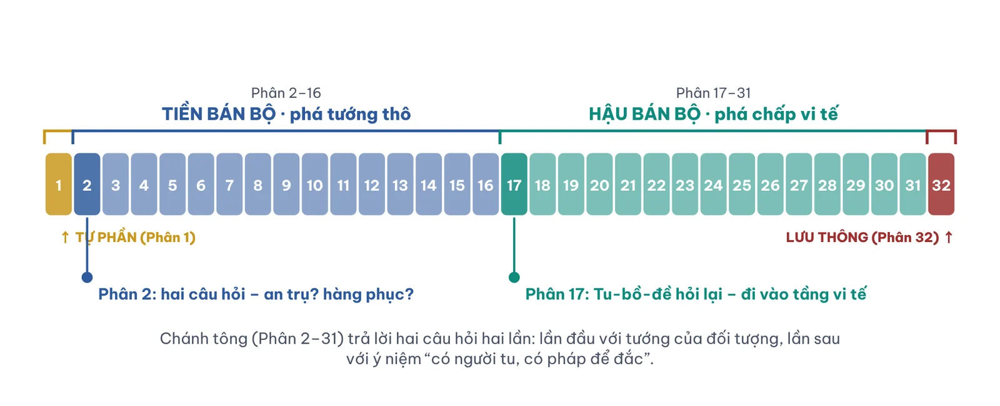
LƯU ÝLiên hệ: hai câu hỏi của mọi nhà quản lý chất lượng
“An trụ tâm ở đâu” và “hàng phục tâm thế nào” không phải câu hỏi riêng của người tu. Mỗi lần nhận tin báo sự cố, người quản lý phải trả lời: tâm mình đang trụ ở đâu – ở cơn giận, ở danh tiếng của khoa, ở nỗi lo bị kiểm tra, hay ở người bệnh và hệ thống? Và làm sao hàng phục phản xạ đổ lỗi, phản xạ che giấu, phản xạ “làm đẹp số liệu”? Cấp độ 1 của Phần thứ tư được xây dựng trực tiếp trên hai câu hỏi này.
Khoa phán ba phần: Tự phần – Chính tông – Lưu thông
Theo cách phân tích kinh điển Đại thừa truyền thống, toàn bộ 32 phân của Kinh Kim Cương được quy nạp thành 3 phần lớn:
1. Tự phần (nhập đề – Phân 1): thiết lập bối cảnh sinh hoạt thường nhật (khất thực, rửa chân, trải tòa ngồi) của Đức Phật tại vườn Kỳ-thụ Cấp Cô Độc, nước Xá-vệ, biểu thị chân lý Bát-nhã không rời đời sống thực tại.
2. Chính tông (nội dung cốt lõi – từ Phân 2 đến Phân 31): diễn trình phá chấp, hiển bày thực tướng tính Không qua hai đại đoạn:
- Tiền bán bộ (Phân 2–16): hướng dẫn hàng phục vọng tâm, phá chấp tướng thô bên ngoài (bố thí vô tướng, độ sinh lìa 4 tướng: ngã, nhân, chúng sinh, thọ giả).
- Hậu bán bộ (Phân 17–31): đi sâu vào đoạn nghi, phá chấp pháp vi tế bên trong (không chấp chứng đắc, không chấp sở đắc Phật quả, tâm bất khả đắc, pháp thân phi tướng).
3. Lưu thông (hồi hướng và truyền thừa – Phân 32): khẳng định tính chất như huyễn của các pháp hữu vi (Kệ Lục Dụ), dặn dò thọ trì, diễn thuyết và sự hoan hỷ phụng hành của đại chúng.
Hệ thống 32 phân theo Chiêu Minh Thái tử
32 phân được sắp xếp lớp lang, chặt chẽ theo tiến trình tu tập và nhận thức:
Bảng 3.1. Hệ thống 32 phân của Kinh Kim Cương theo nhóm chủ đề
| Nhóm chủ đề | Các Phân | Tên phân (phiên âm Hán – Việt) | Nội dung cốt lõi |
|---|---|---|---|
| Khởi duyên và phát vấn | 1 – 2 | 1. Pháp Hội Nhân Do Phân2. Thiện Hiện Khởi Thỉnh Phân | • Phật khất thực, rửa chân, tĩnh tọa.• Tu-bồ-đề đứng dậy đảnh lễ, hỏi cách an trụ và hàng phục tâm Bồ-đề. |
| Phá tướng ngoại cảnh và bố thí vô trụ | 3 – 5 | 3. Đại Thừa Chính Tông Phân4. Diệu Hạnh Vô Trụ Phân5. Như Lý Thực Kiến Phân | • Độ tận chúng sinh mà không thấy có tướng chúng sinh được độ (lìa 4 tướng).• Bố thí không dính mắc 6 trần.• Thấy các tướng đều là hư vọng, lìa tướng thấy Như Lai. |
| Phá chấp pháp và ngôn thuyết | 6 – 8 | 6. Chính Tín Hy Hữu Phân7. Vô Đắc Vô Thuyết Phân8. Y Pháp Xuất Sinh Phân | • Dụ chiếc bè qua sông (pháp còn bỏ, huống là phi pháp).• Không có định pháp để thuyết hay chứng đắc; Thánh hiền sai biệt ở pháp vô vi.• Thọ trì kinh văn công đức vượt trội bố thí 7 báu đầy tam thiên. |
| Phá chấp quả vị và tịnh độ | 9 – 10 | 9. Nhất Tướng Vô Tướng Phân10. Trang Nghiêm Tịnh Độ Phân | • 4 quả vị Thanh văn (Tu-đà-hoàn đến A-la-hán) đều không tự thấy mình đắc quả.• Trang nghiêm Tịnh độ là không chấp vào sự trang nghiêm; sinh tâm thanh tịnh vô trụ (Ưng vô sở trụ nhi sinh kỳ tâm). |
| Tán thán diệu lực Bát-nhã | 11 – 13 | 11. Vô Vi Phúc Thắng Phân12. Tôn Trọng Chính Giáo Phân13. Như Pháp Thọ Trì Phân | • Phúc đức thọ trì 4 câu kệ vượt hơn cát sông Hằng.• Nơi nào có kinh, nơi đó như có Phật và tháp miếu.• Đặt tên kinh là Kim Cương Bát-nhã Ba-la-mật; thế giới vi trần bản chất duyên hợp phi thực. |
| Lìa tướng chứng ngộ và nhẫn nhục | 14 – 16 | 14. Ly Tướng Tịch Diệt Phân15. Trì Kinh Công Đức Phân16. Năng Tịnh Nghiệp Chướng Phân | • Bồ-tát lìa tất cả tướng tức là chư Phật; hạnh nhẫn nhục Ba-la-mật (giai thoại Ca-lợi vương).• Xả bỏ vô số thân mạng không bằng lòng tin thanh tịnh đối với kinh.• Thọ trì kinh giúp chuyển hóa, tiêu trừ túc nghiệp ác đạo trong quá khứ. |
| Trùng thỉnh và phá nghi vi tế | 17 – 20 | 17. Cứu Cánh Vô Ngã Phân18. Nhất Thể Đồng Quán Phân19. Pháp Giới Thông Hóa Phân20. Ly Sắc Ly Tướng Phân | • Tu-bồ-đề hỏi lại việc an trụ tâm; khẳng định thực tế không có pháp nào tên Bồ-đề.• 5 mắt (nhục, thiên, tuệ, pháp, Phật nhãn); ba tâm bất khả đắc (quá khứ, hiện tại, vị lai).• Phúc đức vô sở hữu mới thật là phúc đức lớn.• Như Lai không thể nhìn thấy qua sắc thân cụ túc hay các tướng hảo tròn đầy. |
| Phá chấp thuyết pháp và đắc pháp | 21 – 24 | 21. Phi Thuyết Sở Thuyết Phân22. Vô Pháp Khả Đắc Phân23. Tịnh Tâm Hành Thiện Phân24. Phúc Trí Vô Tỷ Phân | • Ai bảo Như Lai có thuyết pháp là phỉ báng Phật; thật tướng thuyết pháp là không pháp khả thuyết.• Vô thượng giác không mảy may có chút pháp nào đắc được.• Pháp này bình đẳng, không có cao thấp; dùng tâm không ngã tu mọi thiện pháp.• Trì kinh phúc đức vô tỉ so với bảo vật thế gian. |
| Vô ngã cứu độ và pháp thân vô tướng | 25 – 28 | 25. Hóa Vô Sở Hóa Phân26. Pháp Thân Phi Tướng Phân27. Vô Đoạn Vô Diệt Phân28. Bất Thọ Bất Tham Phân | • Không có chúng sinh nào để Như Lai cứu độ; phàm phu tắc phi phàm phu.• Kệ tứ cú: Dùng sắc thấy ta, dùng âm thanh cầu ta là hành tà đạo, không thể thấy Như Lai.• Phá chấp không (đoạn diệt tướng); Bồ-tát không khởi tâm đoạn diệt.• Bồ-tát thấu suốt các pháp vô ngã, thành tựu nhẫn nhục, không tham đắm công đức. |
| Tự tính Như Lai và bản thể nhất hợp | 29 – 31 | 29. Uy Nghi Tịch Tĩnh Phân30. Nhất Hợp Lý Tướng Phân31. Tri Kiến Bất Sinh Phân | • Như Lai nghĩa là không từ đâu đến, cũng chẳng đi về đâu.• Đạo lý “Nhất hợp tướng”: Thế giới và vi trần chẳng phải một, chẳng phải hai, không thể nghĩ bàn.• Người thấy biết chân chính không sinh tâm chấp vào ngã kiến, nhân kiến, chúng sinh kiến, thọ giả kiến. |
| Khuyến thị lưu thông | 32 | 32. Ứng Hóa Phi Chân Phân | • Kệ Lục Dụ: Tất cả pháp hữu vi như mộng ảo, bọt bóng, sương mai, ánh chớp.• Không chấp vào tướng, an nhiên như như bất động; đại chúng hoan hỷ tin nhận phụng hành. |
Đọc kinh theo chuỗi “mối nghi”
Truyền thống luận giải Ấn Độ, tiêu biểu là Kim Cương Bát-nhã Ba-la-mật kinh luận của Bồ-tát Thiên Thân, đọc Kinh Kim Cương như một chuỗi 27 mối nghi được Đức Phật lần lượt đoán trước và giải trừ [17]. Mỗi khi một câu kinh phá một chấp, trong tâm người nghe lại nảy sinh một thắc mắc mới; câu kinh tiếp theo chính là lời giải cho thắc mắc ấy. Cách đọc này giải thích vì sao kinh có vẻ “lặp lại” mà thật ra mỗi lần trở lại là một tầng sâu hơn. Bảng dưới đây là diễn ý của người viết về một số mối nghi tiêu biểu, tham khảo cách đọc của Thiên Thân, nhằm giúp người học thấy mạch nối giữa các phân. Song hành với luận của Thiên Thân là Kim Cương Bát-nhã luận của Bồ-tát Vô Trước (Asaṅga) do ngài Đạt-ma-cấp-đa dịch (Đại Chánh tạng, T25, số 1510), giải kinh theo mười tám trụ xứ (thập bát trụ xứ) – mười tám chặng an trụ của Bồ-tát từ phát tâm đến cứu cánh; Thiền sư Khuê Phong Tông Mật đời Đường đã dung hợp cả hai cách đọc “mười tám trụ xứ” và “hai mươi bảy đoạn nghi” trong bộ Kim Cương Bát-nhã kinh sớ luận toản yếu (T33, số 1701).
Bảng 3.2. Một số “mối nghi” tiêu biểu và lời giải trong kinh (diễn ý của người viết)
| Mối nghi ngầm trong tâm người nghe | Phân | Lời giải của kinh |
|---|---|---|
| Bố thí không trụ tướng, vậy cầu quả Phật có tướng hảo trang nghiêm có mâu thuẫn không? | 5 | Không thể dùng thân tướng thấy Như Lai; thấy các tướng là phi tướng mới thấy Như Lai |
| Giáo lý sâu xa như vậy, đời sau có ai tin nổi? | 6 | Người trì giới, tu phúc sẽ sinh tịnh tín; pháp như chiếc bè |
| Nếu vô tướng, sao Như Lai lại đắc quả, lại thuyết pháp? | 7 | Không có định pháp để đắc, để thuyết; Hiền Thánh sai biệt ở pháp vô vi |
| Bốn quả Thanh văn rõ ràng là có chứng đắc? | 9 | Bậc chứng quả không khởi niệm “ta đắc quả”; khởi niệm là chấp bốn tướng |
| Bồ-tát trang nghiêm cõi Phật – chẳng phải là “có tướng” sao? | 10 | Trang nghiêm tức phi trang nghiêm; ưng vô sở trụ nhi sinh kỳ tâm |
| Đã vô ngã, vậy ai là người phát tâm, ai tu, ai đắc? | 17 | Thực vô hữu pháp phát tâm Bồ-đề; Nhiên Đăng thọ ký chính vì không có pháp để đắc |
| Không thấy chúng sinh, vậy Như Lai biết tâm chúng sinh bằng gì? | 18 | Năm con mắt; ba tâm bất khả đắc |
| Pháp thân vô tướng, vậy ba mươi hai tướng tốt là gì? | 20, 26 | Sắc thân cụ túc tức phi cụ túc; dùng sắc thấy ta là hành tà đạo |
| Nếu không do tướng mà đắc, có phải mọi pháp là đoạn diệt? | 27 | Người phát tâm Bồ-đề không nói tướng đoạn diệt |
| Như Lai có đến có đi, có ngồi có nằm? | 29 | Như Lai không từ đâu đến, cũng không đi về đâu |
Hướng dẫn đọc Phần thứ hai của cuốn sách
Phần thứ hai trình bày đủ 32 phân, chia thành mười một chương theo các nhóm chủ đề trong Bảng 3.1. Mỗi phân được trình bày theo bốn mục cố định – (I) nguyên văn chữ Hán, phiên âm và dịch nghĩa; (II) giải thích nghĩa lý cốt tủy; (III) phương pháp hành trì; (IV) ứng dụng thực tiễn trong y đạo và quản trị chất lượng – và ba hộp bổ sung: tình huống thực tiễn (mô phỏng từ thực tế khám chữa bệnh tại Việt Nam, chi tiết đã được thay đổi), điểm then chốt và câu hỏi suy ngẫm. Người đọc bận rộn có thể đọc theo thứ tự ngược: bắt đầu từ hộp tình huống, rồi quay lại kinh văn.
ĐIỂM THEN CHỐTĐiểm then chốt của Chương 3
- Toàn kinh xoay quanh hai câu hỏi: an trụ tâm thế nào và hàng phục tâm thế nào; Phân 17 hỏi lại để đi vào tầng vi tế.
- Khoa phán ba phần: Tự phần (Phân 1), Chính tông (Phân 2–31, chia tiền bán bộ phá tướng thô và hậu bán bộ phá chấp vi tế), Lưu thông (Phân 32).
- Cách đọc theo chuỗi “mối nghi” giúp thấy mạch nối: mỗi câu kinh vừa phá một chấp vừa giải một nghi mới nảy sinh.
Chương 4
BIỆN CHỨNG KIM CƯƠNG: A – TỨC PHI A – THỊ DANH A
Nếu phải chọn một “công cụ tư duy” duy nhất để mang từ Kinh Kim Cương vào bệnh viện, người viết sẽ chọn cấu trúc ba bước A – tức phi A – thị danh A. Tam đoạn luận Kim Cương (các học giả còn gọi là biện chứng pháp Kim Cương, cú thức Bát-nhã hay Kim Cương tam đoạn) là một cấu trúc luận lý phủ định – siêu việt độc đáo, xuất hiện lặp đi lặp lại khoảng ba mươi lần xuyên suốt 32 phân. Đây không phải là tam đoạn luận diễn dịch hình thức kiểu Aristotle (đại tiền đề → tiểu tiền đề → kết luận), mà là một tiến trình nhận thức giải thoát nhằm tháo gỡ mọi vọng chấp hai đầu và soi rọi bản thể chân thật của vạn pháp [4,6,13].
Công thức nền tảng
Cấu trúc chuẩn mực của một mệnh đề Tam đoạn Kim Cương bao gồm 3 bước:
A → Tức phi A → Thị danh A
- Bước 1 — Khẳng định (A): Nêu danh xưng, hiện tượng ước lệ của thế gian tục đế.
- Bước 2 — Phủ định triệt để (Phi A): Bác bỏ tính thực thể, cố định độc lập của khái niệm đó dưới góc nhìn tính Không / chân đế.
- Bước 3 — Tái lập trên nền tảng siêu việt (Thị danh A): Quay về sử dụng tên gọi ước lệ đó để hành đạo và giao tiếp, nhưng tâm không còn dính mắc hay bị khái niệm trói buộc.
Trong kinh văn, vế thứ hai có khi dùng chữ 即 (tức), có khi dùng chữ 則 (tắc), có khi chỉ có chữ 非 (phi); nghĩa không khác nhau. Chẳng hạn, cùng nói về trang nghiêm cõi Phật, Phân 10 chép 莊嚴佛土者，則非莊嚴 (trang nghiêm Phật độ giả, tắc phi trang nghiêm), còn Phân 17 chép 如來說莊嚴佛土者，即非莊嚴 (Như Lai thuyết trang nghiêm Phật độ giả, tức phi trang nghiêm) – vì thế ở Hình 4.1 và Bảng 4.1, hai chữ được ghi đúng theo từng phân. Sách gọi chung cấu trúc này là “A – tức phi A – thị danh A”, còn khi trích từng câu kinh thì giữ đúng chữ của câu ấy.
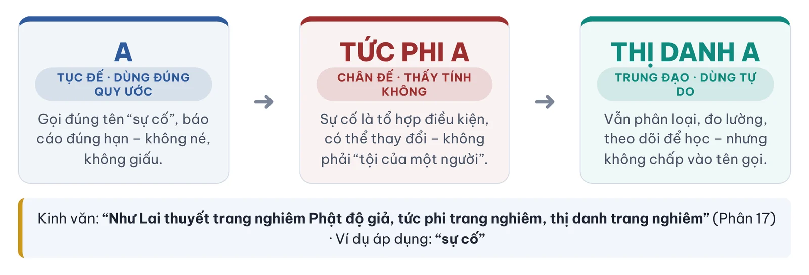
Các ví dụ điển hình trong kinh văn
Bảng 4.1. Các ví dụ điển hình của tam đoạn Kim Cương trong kinh văn
| Phân trong Kinh | Nguyên văn Hán – Việt | Cấu trúc Tam đoạn (A → Phi A → Thị danh A) |
|---|---|---|
| Phân 13: Bát-nhã | Phật thuyết Bát-nhã Ba-la-mật, tức phi Bát-nhã Ba-la-mật, thị danh Bát-nhã Ba-la-mật. | • A: Nói Bát-nhã Ba-la-mật.• Phi A: Vốn không có pháp cố định nào gọi là Bát-nhã.• Thị danh A: Tạm mượn danh từ “Bát-nhã” để dẫn dắt hành giả. |
| Phân 10: Tịnh độ | Trang nghiêm Phật độ giả, tắc phi trang nghiêm, thị danh trang nghiêm. | • A: Trang nghiêm cõi Phật bằng vàng ngọc, công đức.• Phi A: Bản tính thanh tịnh vốn tự đủ, không cần tô vẽ.• Thị danh A: Tạm gọi là việc trang nghiêm tịnh độ. |
| Phân 13: Thế giới | Như Lai thuyết thế giới, phi thế giới, thị danh thế giới. | • A: Có một thế giới to lớn, kiên cố.• Phi A: Thế giới chỉ là duyên hợp của vô số vi trần, vô tự tính.• Thị danh A: Tạm định danh là thế giới để quy ước. |
| Phân 14: Nhẫn nhục | Nhẫn nhục ba-la-mật, Như Lai thuyết phi nhẫn nhục ba-la-mật, thị danh nhẫn nhục ba-la-mật. | • A: Thực hành hạnh nhẫn nhục chịu đựng.• Phi A: Không thấy có “người nhục”, “kẻ làm nhục”, hay “việc phải nhịn”.• Thị danh A: Đó mới chính là chân thật nhẫn nhục. |
Cơ chế triết học: phá bỏ hai bờ cực đoan (chấp thường và chấp đoạn)
Tam đoạn luận này đóng vai trò như chiếc chìa khóa hóa giải cạm bẫy tư duy của tâm thức con người:
1. Phá “chấp thường” (chấp hữu – thấy có thật):
Con người hễ nghe đặt tên một sự vật thì mặc định rằng sự vật đó có một bản thể bất biến, vĩnh hằng (Ngã hoặc Pháp). Khi Phật nói “Phi A”, Ngài lập tức tước đi tính tự thể độc lập ấy, chỉ rõ bản chất vạn vật do duyên sinh sinh diệt mà thành.
2. Phá “chấp đoạn” (chấp không – rơi vào hư vô tiêu cực):
Nếu chỉ dừng ở bước “Phi A”, người học rất dễ rơi vào cạm bẫy hoang mang: Nếu không có gì cả thì tu để làm gì, làm việc thiện làm chi? Lúc này bước thứ ba “Thị danh A” xuất hiện: Chân Không nhưng Diệu Hữu. Bát-nhã không phủ nhận thực tại tương đối, mà khuyên ta ứng xử với danh xưng như một phương tiện thiện xảo (Upāya) — hành thiện mà không vướng tướng thiện.
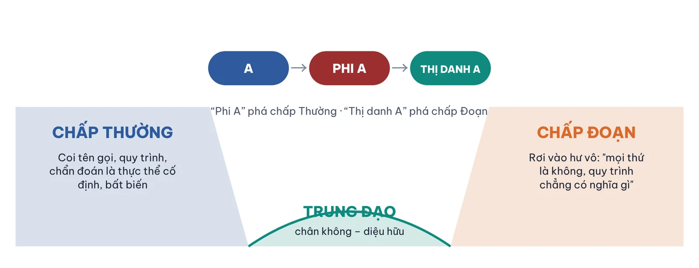
So sánh với biện chứng Hegel
Bảng 4.2. So sánh biện chứng Hegel và biện chứng Kim Cương
| Tiêu chí | Biện chứng Hegel (chính – phản – hợp) | Biện chứng Kim Cương (A – phi A – thị danh A) |
|---|---|---|
| Bản chất | Tiến trình phát triển hữu vi: Nhị nguyên đối kháng triệt tiêu nhau để sinh ra một khái niệm mới cao hơn (Synthesis). | Tiến trình tỉnh thức: Giải trừ sự trói buộc của khái niệm. Không sinh ra một “thực thể mới” nào. |
| Mục đích | Mở rộng hệ thống tri thức, lý giải sự tiến hóa lịch sử và tinh thần. | Phá chấp hiển tính: Đưa tâm thức thoát khỏi mạng lưới định kiến ngôn ngữ, chứng ngộ Thực tướng vô tướng. |
| Cái kết | Ý niệm tuyệt đối (Absolute Idea) mang tính bản thể luận triết học. | Tâm thanh tịnh vô trụ (Ưng vô sở trụ nhi sinh kỳ tâm), tự tại hành trì giữa đời thường. |
Ứng dụng thực tiễn trong công việc và cuộc sống
Hiểu được Tam đoạn Kim Cương giúp người hành giả và nhà quản lý đạt được trạng thái tinh thông chuyên môn nhưng không cố chấp bản ngã:
- Trong chuyên môn y khoa và nghiên cứu:
- Chẩn đoán và phác đồ chuẩn (A): cần thiết lập hướng dẫn, quy trình chặt chẽ để vận hành an toàn.
- Phi phác đồ (Phi A): Thấy rõ mỗi người bệnh là một cá thể sống động, không đóng khung cứng nhắc; sẵn sàng phản biện và cập nhật khi dữ liệu lâm sàng thay đổi.
- Thị danh phác đồ (Thị danh A): Vận dụng phác đồ một cách nhuần nhuyễn, linh hoạt mà tâm không bị giáo điều trói buộc.
- Trong lãnh đạo và quản trị chất lượng:
- Tiêu chuẩn và danh vị (A): nắm giữ chức vụ, triển khai các bộ tiêu chuẩn chất lượng khắt khe.
- Phi danh vị (Phi A): Không vin vào chức tước hay tự mãn thành tích để sinh tâm kiêu mạn, phân biệt đối xử.
- Thị danh danh vị (Thị danh A): Dùng quyền hạn và tiêu chuẩn ấy như phương tiện phụng sự tổ chức, phục vụ người bệnh một cách vô ngã và tận tụy.
Tam đoạn luận Kim Cương tóm gọn trong một câu: Làm tất cả mọi việc tốt đẹp với kỷ luật cao nhất, nhưng tâm rỗng rang không đọng lại bất kỳ sự bám chấp nào.
Bản đồ các tam đoạn trong 32 phân
Để người học thấy tần suất và phạm vi của cấu trúc này, người viết lập bảng các tam đoạn tiêu biểu theo thứ tự xuất hiện trong bản dịch của ngài La-thập. Điều đáng chú ý là đối tượng của tam đoạn bao trùm mọi phạm trù: thân Phật, giáo pháp, cõi Phật, thế giới vật chất, chúng sinh, tâm, thiện pháp, và ngay cả chính Bát-nhã.
Bảng 4.3. Các tam đoạn tiêu biểu trong Kinh Kim Cương (bản Cưu-ma-la-thập)
| Phân | Đối tượng (A) | Câu kinh (phiên âm) |
|---|---|---|
| 5 | Thân tướng | Như Lai sở thuyết thân tướng, tức phi thân tướng |
| 8 | Phúc đức; Phật pháp | Thị phúc đức tức phi phúc đức tính… Sở vị Phật pháp giả, tức phi Phật pháp, thị danh Phật pháp |
| 10 | Trang nghiêm cõi Phật | Trang nghiêm Phật độ giả, tắc phi trang nghiêm, thị danh trang nghiêm |
| 10 | Thân lớn | Phật thuyết phi thân, thị danh đại thân |
| 13 | Bát-nhã Ba-la-mật | Phật thuyết Bát-nhã Ba-la-mật, tức phi Bát-nhã Ba-la-mật, thị danh Bát-nhã Ba-la-mật |
| 13 | Vi trần; thế giới | Chư vi trần, Như Lai thuyết phi vi trần, thị danh vi trần. Như Lai thuyết thế giới, phi thế giới, thị danh thế giới |
| 13 | Ba mươi hai tướng | Như Lai thuyết tam thập nhị tướng, tức thị phi tướng, thị danh tam thập nhị tướng |
| 14 | Thực tướng | Thị thực tướng giả, tắc thị phi tướng, thị cố Như Lai thuyết danh thực tướng |
| 14 | Nhẫn nhục ba-la-mật | Nhẫn nhục ba-la-mật, Như Lai thuyết phi nhẫn nhục ba-la-mật, thị danh nhẫn nhục ba-la-mật |
| 14 | Chúng sinh | Như Lai thuyết nhất thiết chư tướng, tức thị phi tướng; hựu thuyết nhất thiết chúng sinh, tức phi chúng sinh |
| 17 | Nhất thiết pháp; thân lớn; trang nghiêm | Sở ngôn nhất thiết pháp giả, tức phi nhất thiết pháp, thị cố danh nhất thiết pháp. Như Lai thuyết nhân thân trường đại, tắc vi phi đại thân, thị danh đại thân. Như Lai thuyết trang nghiêm Phật độ giả, tức phi trang nghiêm, thị danh trang nghiêm |
| 18 | Tâm | Như Lai thuyết chư tâm, giai vi phi tâm, thị danh vi tâm |
| 20 | Sắc thân cụ túc | Như Lai thuyết cụ túc sắc thân, tức phi cụ túc sắc thân, thị danh cụ túc sắc thân |
| 21 | Thuyết pháp; chúng sinh | Thuyết pháp giả, vô pháp khả thuyết, thị danh thuyết pháp |
| 23 | Thiện pháp | Sở ngôn thiện pháp giả, Như Lai thuyết tức phi thiện pháp, thị danh thiện pháp |
| 25 | Phàm phu | Phàm phu giả, Như Lai thuyết tắc phi phàm phu, thị danh phàm phu |
| 30 | Vi trần; thế giới; nhất hợp tướng | Phật thuyết vi trần chúng, tức phi vi trần chúng, thị danh vi trần chúng… Như Lai thuyết nhất hợp tướng, tắc phi nhất hợp tướng, thị danh nhất hợp tướng |
| 31 | Ngã kiến; pháp tướng | Sở ngôn pháp tướng giả, Như Lai thuyết tức phi pháp tướng, thị danh pháp tướng |
Thực hành: áp tam đoạn vào mười khái niệm của bệnh viện
Cách tốt nhất để thấm cấu trúc này là tự áp nó vào những khái niệm mình dùng hằng ngày. Bảng sau là bài tập mẫu người viết dùng trong các lớp tập huấn.
Bảng 4.4. Tam đoạn Kim Cương áp vào khái niệm quản lý bệnh viện (bài tập mẫu)
| Khái niệm (A) | Bước A – dùng đúng | Bước phi A – thấy tính Không | Bước thị danh A – dùng tự do |
|---|---|---|---|
| Phác đồ | Xây dựng, tuân thủ phác đồ dựa trên bằng chứng | Mỗi người bệnh là một tổ hợp duyên riêng; phác đồ không phải người bệnh | Vận dụng phác đồ linh hoạt, ghi rõ lý do khi điều chỉnh |
| Chỉ số (KPI) | Đo lường minh bạch, có từ điển chỉ số | Con số không phải chất lượng; đo để đạt số thì số mất nghĩa | Dùng chỉ số như ngón tay chỉ trăng, có chỉ số cân bằng |
| Sự cố | Gọi đúng tên, báo cáo đúng hạn | Sự cố là tổ hợp điều kiện, không phải “tội của một người” | Phân loại, phân tích để học, không biến tên gọi thành bản án |
| Chứng nhận JCI | Đạt chuẩn quốc tế, chuẩn hóa hệ thống | Chứng nhận không phải là an toàn; đạt chuẩn chưa phải về đích | Dùng chuẩn như lộ trình cải tiến liên tục |
| Chức danh trưởng khoa | Nhận trách nhiệm, quyền hạn | Chức danh do duyên hợp; không có “cái tôi trưởng khoa” cố định | Dùng chức danh để phục vụ người bệnh và đồng nghiệp |
| Quy trình | Viết, ban hành, đào tạo | Quy trình là chiếc bè; công việc thực tế luôn biến thiên | Cập nhật quy trình cùng người làm thực tế |
| Kinh nghiệm | Tích lũy, truyền lại | Kinh nghiệm có thể thành định kiến (thọ giả tướng) | Dùng kinh nghiệm như giả thuyết, sẵn sàng kiểm chứng |
| Chẩn đoán | Đặt chẩn đoán để điều trị | Chẩn đoán là giả thuyết làm việc, có thể sai | Tái đánh giá chẩn đoán khi diễn biến không như dự kiến |
| Thành tích | Ghi nhận nỗ lực, tạo động lực | Thành tích là duyên hợp của nhiều người | Hoan hỷ mà không kể công, không ngủ quên |
| Người bệnh “khó tính” | Nhận diện để giao tiếp phù hợp | “Khó tính” là tướng; đằng sau là nỗi sợ, nỗi đau | Đáp ứng nỗi lo thật của người bệnh và gia đình |
CẢNH BÁOBa cách hiểu sai thường gặp
1. Dừng ở bước “phi A” – “mọi thứ là không nên quy trình, chỉ số chẳng có nghĩa gì”: đây là chấp đoạn, bị chính Phân 27 bác bỏ.
2. Nhảy thẳng đến “thị danh A” mà bỏ qua “phi A” – nói “tôi linh hoạt” để biện minh cho làm tắt: đây là hành vi rủi ro theo Just Culture, không phải trung đạo.
3. Dùng tam đoạn như trò chơi chữ – “tức phi… thị danh…” thành câu cửa miệng mà không thay đổi cách thấy, cách làm. Tam đoạn chỉ có giá trị khi nó làm thay đổi một quyết định cụ thể.
ĐIỂM THEN CHỐTĐiểm then chốt của Chương 4
- Tam đoạn Kim Cương: A (tục đế, dùng đúng quy ước) → phi A (chân đế, thấy tính Không) → thị danh A (trung đạo, dùng quy ước một cách tự do).
- Cấu trúc này phá đồng thời hai cực đoan: chấp Thường (coi tên gọi là thực thể cố định) và chấp Đoạn (rơi vào hư vô).
- Khác biệt với biện chứng Hegel: không sinh ra một “thực thể mới cao hơn”, mà giải phóng tâm khỏi sự trói buộc của khái niệm.
- Tóm gọn: làm mọi việc tốt với kỷ luật cao nhất, nhưng tâm rỗng rang không đọng lại bám chấp.
Chương 5
MƯỜI KINH VĂN CỐT LÕI
Kinh Kim Cương (Kim Cương Bát-nhã Ba-la-mật kinh, ngài Cưu-ma-la-thập 鳩摩羅什 dịch) gom trọn tinh hoa của văn hệ Đại Bát-nhã và là cốt tủy phá chấp hiển tính của Thiền tông cũng như các tông phái Phật giáo Đại thừa. Trong hơn năm nghìn chữ của bộ kinh, có mười đoạn kinh văn mà người viết đề nghị người học thuộc lòng – không phải để “trang sức” lời nói, mà để khi đứng giữa phòng cấp cứu, giữa phòng họp sự cố hay giữa một cuộc tranh luận về chuyên môn, một câu kinh tự hiện ra đúng lúc như một chiếc la bàn. Mỗi đoạn dưới đây gồm nguyên văn chữ Hán, phiên âm Hán – Việt và nghĩa cốt tủy.
Kinh văn 1: Hàng phục tâm và cứu độ chúng sinh mà không thấy có chúng sinh được diệt độ
(Thuộc Phân 3: Đại Thừa Chính Tông Phân)
- Nguyên văn kinh văn:
「所有一切眾生之類……我皆令入無餘涅槃而滅度之。如是滅度無量無數無邊眾生，實無眾生得滅度者。何以故？須菩提！若菩薩有我相、人相、眾生相、壽者相，即非菩薩。」
- Phiên âm Hán-Việt:
Sở hữu nhất thiết chúng sinh chi loại… ngã giai linh nhập vô dư Niết-bàn nhi diệt độ chi. Như thị diệt độ vô lượng vô số vô biên chúng sinh, thực vô chúng sinh đắc diệt độ giả. Hà dĩ cố? Tu-bồ-đề! Nhược Bồ-tát hữu ngã tướng, nhân tướng, chúng sinh tướng, thọ giả tướng, tức phi Bồ-tát.
- Nghĩa cốt tủy: Bồ-tát mở rộng tâm lượng vô biên độ thoát muôn loài vào vô dư Niết-bàn, nhưng tâm rỗng rang không thấy có “ta” là kẻ ban ơn độ sinh, cũng không thấy có “người/chúng sinh” thọ nhận ơn độ, không vướng chấp thọ mạng dài lâu. Còn dính mắc bốn tướng ấy thì tâm còn năng – sở đối đãi, chưa phải tâm Bồ-tát chân chính.
Kinh văn 2: Hạnh bố thí vô trụ – Trụ nơi không chỗ trụ
(Thuộc Phân 4: Diệu Hạnh Vô Trụ Phân)
- Nguyên văn kinh văn:
「菩薩於法，應無所住，行於布施。所謂不住色布施，不住聲香味觸法布施。須菩提！菩薩應如是布施，不住於相。何以故？若菩薩不住相布施，其福德不可思量。」
- Phiên âm Hán-Việt:
Bồ-tát ư pháp, ưng vô sở trụ, hành ư bố thí. Sở vị bất trụ sắc bố thí, bất trụ thanh, hương, vị, xúc, pháp bố thí. Tu-bồ-đề! Bồ-tát ưng như thị bố thí, bất trụ ư tướng. Hà dĩ cố? Nhược Bồ-tát bất trụ tướng bố thí, kỳ phúc đức bất khả tư lượng.
- Nghĩa cốt tủy: Bố thí và phụng sự mà tâm hoàn toàn rỗng rang lìa sáu trần (sắc, thanh, hương, vị, xúc, pháp). Ba luân thể không: không thấy người thí, không thấy vật thí, không thấy kẻ nhận thí. Làm muôn việc thiện lành mà không đọng lại dấu vết mong cầu đền đáp hay danh vị, phúc đức ấy rộng lớn bao trùm hư không mười phương.
Kinh văn 3: Phá tướng hư vọng để thấy Chân như
(Thuộc Phân 5: Như Lý Thực Kiến Phân)
- Nguyên văn kinh văn:
「凡所有相，皆是虛妄。若見諸相非相，即見如來。」
- Phiên âm Hán-Việt:
Phàm sở hữu tướng, giai thị hư vọng. Nhược kiến chư tướng phi tướng, tức kiến Như Lai.
- Nghĩa cốt tủy: Mọi hiện tượng, sắc tướng, cảm thọ, ranh giới danh tự trên đời đều do duyên hợp giả tạo, luôn biến đổi và không có tự tính độc lập. Người có tuệ nhãn nhìn thấu thực chất “không thực tính” (phi tướng) ẩn sau mọi hình tướng hữu vi, người đó lập tức tương ưng với bản thể thanh tịnh bất sinh bất diệt của Phật (Pháp thân Như Lai).
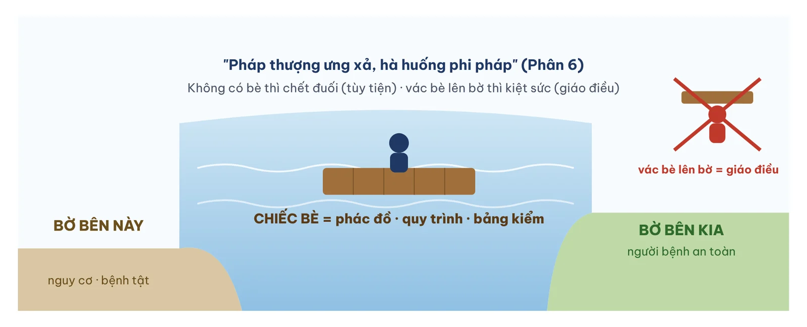
Kinh văn 4: Pháp như chiếc bè qua sông – Xả bỏ cả Pháp lẫn Phi pháp
(Thuộc Phân 6: Chính Tín Hy Hữu Phân)
- Nguyên văn kinh văn:
「汝等比丘，知我說法，如筏喻者；法尚應捨，何況非法。」
- Phiên âm Hán-Việt:
Nhữ đẳng Tỳ-kheo, tri ngã thuyết pháp, như phạt dụ giả; pháp thượng ưng xả, hà huống phi pháp.
- Nghĩa cốt tủy: Giáo pháp của Như Lai, giới luật hay phương tiện tu chứng cũng chỉ là chiếc bè gỗ mượn tạm để vượt dòng sông sinh tử mê mờ. Khi đã sang đến bờ giác, nếu ôm chặt lấy bè thì chiếc bè lại thành gánh nặng trầm luân. Giáo pháp đúng đắn còn phải xả ly tâm chấp thủ, huống hồ là tà kiến, định kiến sai lầm trần tục (phi pháp).
Kinh văn 5: Thánh hiền hiển lộ qua Pháp Vô vi
(Thuộc Phân 7: Vô Đắc Vô Thuyết Phân)
- Nguyên văn kinh văn:
「無有定法名阿耨多羅三藐三菩提，亦無有定法如來可說。何以故？如來所說法，皆不可取、不可說、非法、非非法。所以者何？一切賢聖，皆以無為法而有差別。」
- Phiên âm Hán-Việt:
Vô hữu định pháp danh A-nậu-đa-la Tam-miệu Tam-bồ-đề, diệc vô hữu định pháp Như Lai khả thuyết. Hà dĩ cố? Như Lai sở thuyết pháp, giai bất khả thủ, bất khả thuyết, phi pháp, phi phi pháp. Sở dĩ giả hà? Nhất thiết hiền thánh, giai dĩ vô vi pháp nhi hữu sai biệt.
- Nghĩa cốt tủy: Không hề có một công thức, giáo điều cứng nhắc, bất biến nào đóng khung được quả vị giác ngộ viên mãn hay lời Phật thuyết. Pháp chân thật vượt ngoài ngôn ngữ suy luận đối đãi. Chư vị Hiền Thánh (từ Tu-đà-hoàn đến Thập địa Bồ-tát) sở dĩ có thứ bậc sai khác là do mức độ thâm nhập, tương ưng sâu hay cạn với bản thể rỗng lặng vô vi tự nhiên vốn sẵn.
Kinh văn 6: Sinh tâm thanh tịnh không vướng mắc trần cảnh
(Thuộc Phân 10: Trang Nghiêm Tịnh Độ Phân)
- Nguyên văn kinh văn:
「諸菩薩摩訶薩，應如是生清淨心：不應住色生心，不應住聲香味觸法生心，應無所住而生其心。」
- Phiên âm Hán-Việt:
Chư Bồ-tát Ma-ha-tát, ưng như thị sinh thanh tịnh tâm: bất ưng trụ sắc sinh tâm, bất ưng trụ thanh, hương, vị, xúc, pháp sinh tâm, ưng vô sở trụ nhi sinh kỳ tâm.
- Nghĩa cốt tủy: Đây là câu then chốt khai tâm mở trí cho Lục Tổ Huệ Năng ngộ đạo. Người tu hành muốn nuôi dưỡng tâm thanh tịnh thì tuyệt đối không để tâm trói buộc dính mắc vào sáu trần cảnh trần gian; đối cảnh vẫn hành xử sáng suốt, tích cực làm lành mà tâm gốc luôn tự tại, rỗng rang không chỗ kẹt.
Kinh văn 7: Nhẫn nhục Ba-la-mật và cốt tủy lìa tướng
(Thuộc Phân 14: Ly Tướng Tịch Diệt Phân)
- Nguyên văn kinh văn:
「須菩提！忍辱波羅蜜，如來說非忍辱波羅蜜，是名忍辱波羅蜜。何以故？須菩提！如我昔為歌利王割截身體，我於爾時，無我相、無人相、無眾生相、無壽者相。」
- Phiên âm Hán-Việt:
Tu-bồ-đề! Nhẫn nhục Ba-la-mật, Như Lai thuyết phi nhẫn nhục Ba-la-mật, thị danh nhẫn nhục Ba-la-mật. Hà dĩ cố? Tu-bồ-đề! Như ngã tích vi Ca-lợi vương cát tiệt thân thể, ngã ư nhĩ thời, vô ngã tướng, vô nhân tướng, vô chúng sinh tướng, vô thọ giả tướng.
- Nghĩa cốt tủy: Đỉnh cao của sự nhẫn nhục không phải là cắn răng nén giận hay ức chế cảm xúc, mà là nhờ tuệ giác thấy rõ thân tứ đại vốn duyên sinh vô ngã. Khi bị bạo chúa xẻo từng miếng thịt, Phật không khởi sân hận bởi vì lúc ấy không thấy có “ta bị hại”, không thấy có “người hại”, tâm bình đẳng rỗng rang tựa hư không.
Kinh văn 8: Lìa ba tâm thời gian – Vọng niệm bất khả đắc
(Thuộc Phân 18: Nhất Thể Đồng Quán Phân)
- Nguyên văn kinh văn:
「如來說諸心，皆為非心，是名為心。所以者何？須菩提！過去心不可得，現在心不可得，未來心不可得。」
- Phiên âm Hán-Việt:
Như Lai thuyết chư tâm, giai vi phi tâm, thị danh vi tâm. Sở dĩ giả hà? Tu-bồ-đề! Quá khứ tâm bất khả đắc, hiện tại tâm bất khả đắc, vị lai tâm bất khả đắc.
- Nghĩa cốt tủy: Tâm niệm phân biệt sinh diệt liên tục trong từng sát-na: niệm đã qua không còn nắm giữ được (quá khứ), niệm đang ở đây vừa khởi liền trôi mất (hiện tại), niệm sắp đến chưa từng thực hữu (vị lai). Truy tìm một cái tâm thực thể vững chắc ở ba thời gian là chuyện bất khả thi. Thấu suốt ba tâm đều huyễn hóa thì vọng tưởng tự lắng dứt, chân tâm hiện tiền.
Kinh văn 9: Pháp thân phi sắc tướng – Chớ cầu Phật nơi thanh sắc
(Thuộc Phân 26: Pháp Thân Phi Tướng Phân)
- Nguyên văn kinh văn:
「若以色見我，以音聲求我，是人行邪道，不能見如來。」
- Phiên âm Hán-Việt:
Nhược dĩ sắc kiến ngã,
Dĩ âm thanh cầu ngã,
Thị nhân hành tà đạo,
Bất năng kiến Như Lai.
- Nghĩa cốt tủy: Đem hình tướng hữu vi đo lường bậc Giác ngộ, đem âm thanh khấn vái cầu đảo để tìm Phật, đều là đi vào con đường sai lệch, mê lầm tà đạo. Phật chân thật là Pháp thân thanh tịnh, vô tướng vô ngại, chỉ có thể thấu cảm và chứng ngộ bằng tâm tuệ Bát-nhã không phân biệt.
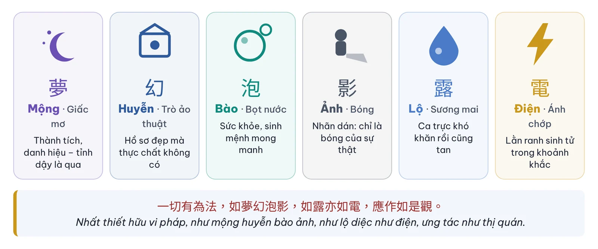
Kinh văn 10: Kệ Lục Dụ – Nhìn pháp hữu vi như mộng ảo, sấm chớp
(Thuộc Phân 32: Ứng Hóa Phi Chân Phân)
- Nguyên văn kinh văn:
「一切有為法，如夢幻泡影，如露亦如電，應作如是觀。」
- Phiên âm Hán-Việt:
Nhất thiết hữu vi pháp,
Như mộng, huyễn, bào, ảnh,
Như lộ, diệc như điện,
Ưng tác như thị quán.
- Nghĩa cốt tủy: Mọi hiện tượng tạo tác hữu vi sinh diệt trong cõi đời (thân thể, bệnh tật, danh lợi, được mất, biến đổi của thế cuộc) đều ngắn ngủi và giả tạm như giấc mộng, trò ảo thuật, bọt nước, bóng nắng, hạt sương mai đầu ngọn cỏ, hay lấp loáng ánh chớp trời đông. Luôn thường trực quán chiếu như thế giúp người tu không bám víu, giữ vững tâm “Bất thủ ư tướng, như như bất động” giữa mọi thăng trầm biến thiên cuộc đời.
Mười câu kinh – mười nguyên tắc hành nghề
Bảng 5.1. Mười kinh văn cốt lõi và mười nguyên tắc hành nghề tương ứng của người thầy thuốc – người quản lý
| TT | Câu kinh (rút gọn) | Nguyên tắc hành nghề |
|---|---|---|
| 1 | Độ tận chúng sinh mà thực vô chúng sinh đắc độ (Phân 3) | Cứu chữa hết lòng mà không mang tâm “ân nhân”; không đặt cái tôi vào giữa người bệnh và hệ thống |
| 2 | Ưng vô sở trụ, hành ư bố thí (Phân 4) | Cống hiến không vì phong bì, danh hiệu, thành tích; làm chất lượng thực chất |
| 3 | Phàm sở hữu tướng giai thị hư vọng (Phân 5) | Không để triệu chứng bề mặt, hồ sơ đẹp, nhãn đổ lỗi che mắt |
| 4 | Pháp thượng ưng xả, hà huống phi pháp (Phân 6) | Phác đồ, quy trình là chiếc bè: tuân thủ có trí tuệ, không giáo điều, không tùy tiện |
| 5 | Nhất thiết hiền thánh giai dĩ vô vi pháp nhi hữu sai biệt (Phân 7) | Không có công thức vạn năng; cá thể hóa điều trị, quản trị thích ứng |
| 6 | Ưng vô sở trụ nhi sinh kỳ tâm (Phân 10) | Tâm không kẹt vào định kiến cũ nên ứng biến kịp thời trong cấp cứu và khủng hoảng |
| 7 | Nhẫn nhục ba-la-mật… vô ngã tướng (Phân 14) | Bình thản trước bức xúc của thân nhân, phản đối của đồng nghiệp; mềm với người, vững với nguyên tắc |
| 8 | Quá khứ tâm, hiện tại tâm, vị lai tâm bất khả đắc (Phân 18) | Có mặt trọn vẹn với ca bệnh trước mặt; buông ca bệnh đã qua để phòng kiệt sức |
| 9 | Nhược dĩ sắc kiến ngã… bất năng kiến Như Lai (Phân 26) | Đánh giá con người và chất lượng bằng thực chất, không bằng hình thức, lời nói |
| 10 | Nhất thiết hữu vi pháp như mộng huyễn bào ảnh (Phân 32) | Điềm tĩnh trước lằn ranh sinh tử; không ngủ quên trên thành tích; xây hệ thống bền bỉ |
THỰC HÀNHThực hành: một câu kinh cho mỗi ca trực
Trong 10 ca trực tới, trước khi nhận ca, hãy chọn một trong mười câu kinh trên và viết nó lên góc sổ tay. Cuối ca, ghi một dòng: câu kinh ấy đã hiện ra ở khoảnh khắc nào trong ca trực, và nó đã làm thay đổi một quyết định nào – dù rất nhỏ? Sau 10 ca, đọc lại cả mười dòng. Phần lớn người thực hành nhận thấy câu kinh “tự tìm đến” những khoảnh khắc căng thẳng nhất – lúc nhận người bệnh nặng, lúc bị thân nhân to tiếng, lúc phát hiện một sai sót của chính mình.
ĐIỂM THEN CHỐTĐiểm then chốt của Chương 5
- Mười kinh văn cốt lõi là “la bàn bỏ túi”: thuộc lòng để dùng đúng lúc, không để trang sức lời nói.
- Ba câu nền tảng nhất cho người làm y tế: “Phàm sở hữu tướng giai thị hư vọng” (cách thấy), “Ưng vô sở trụ nhi sinh kỳ tâm” (cách giữ tâm), “Nhất thiết hữu vi pháp như mộng huyễn bào ảnh” (cách đối diện vô thường).
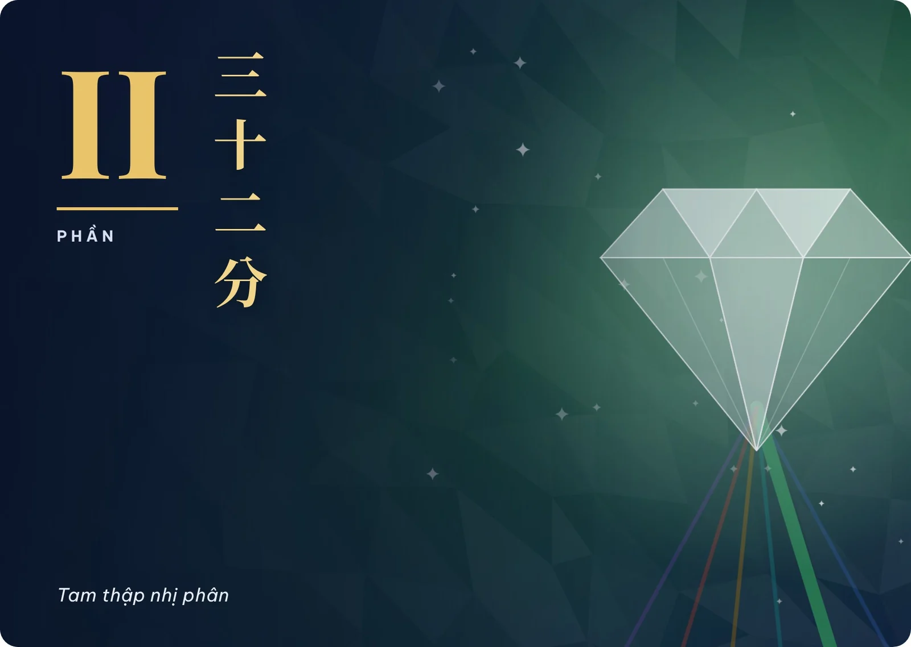
Phần thứ hai
BA MƯƠI HAI PHÂN – KINH VĂN, NGHĨA LÝ VÀ ỨNG DỤNG TRONG Y ĐẠO
Nguyên văn · phiên âm · dịch nghĩa · nghĩa lý · hành trì · ứng dụng · tình huống thực tiễn
Phần thứ hai là phần trọng tâm về kinh văn của cuốn sách. Ba mươi hai phân được trình bày trọn vẹn theo bản dịch của ngài Cưu-ma-la-thập, chia thành mười một chương theo các nhóm chủ đề đã nêu ở Chương 3. Mỗi phân gồm bốn mục cố định: (I) nguyên văn chữ Hán, phiên âm Hán – Việt và dịch nghĩa; (II) giải thích nghĩa lý cốt tủy, đối chiếu lời giảng của Lục Tổ Huệ Năng, Giang Vị Nông, Thiều Chửu, Nam Hoài Cẩn và các nhà chú giải khác; (III) phương pháp hành trì trong đời sống; (IV) ứng dụng thực tiễn trong y đạo, lâm sàng truyền nhiễm và quản trị chất lượng bệnh viện. Cuối mỗi phân là ba hộp bổ sung: một tình huống thực tiễn mô phỏng từ thực tế khám chữa bệnh tại Việt Nam (chi tiết đã được thay đổi để không nhận diện được cá nhân hay khoa phòng), các điểm then chốt và câu hỏi suy ngẫm dành cho người đọc tự thực hành hoặc dùng trong sinh hoạt chuyên đề.
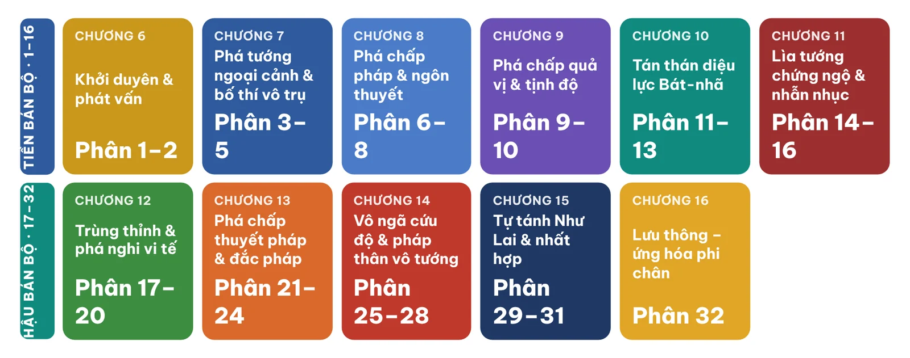
Chương 6
KHỞI DUYÊN VÀ PHÁT VẤN (PHÂN 1–2)
Hai phân mở đầu đặt nền cho toàn bộ bộ kinh theo một cách rất “y khoa”: trước hết là quan sát (Phân 1 – đời sống bình dị của Đức Phật được ghi lại tỉ mỉ, như một bệnh án ghi đúng trình tự), rồi đến câu hỏi lâm sàng (Phân 2 – Tu-bồ-đề nêu hai câu hỏi then chốt: an trụ tâm thế nào, hàng phục tâm thế nào). Người thầy thuốc giỏi cũng vậy: quan sát kỹ trước khi đặt câu hỏi, đặt đúng câu hỏi trước khi tìm lời giải.
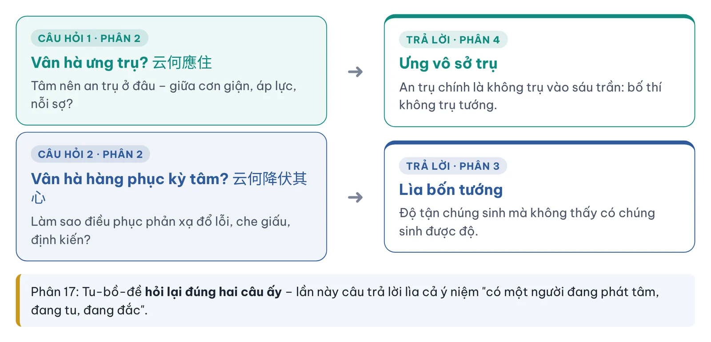
Phân 1 – Pháp hội nhân do phân
法會因由分第一 Nhân duyên khởi pháp hội: Bát-nhã trong đời thường
I. NGUYÊN VĂN CHỮ HÁN, PHIÊN ÂM VÀ DỊCH NGHĨA
1. Nguyên văn chữ Hán
如是我聞。一時佛在舍衛國。祇樹給孤獨園。與大比丘眾千二百五十人俱。爾時世尊。食時著衣持鉢。入舍衛大城乞食。於其城中。次第乞已。還至本處。飯食訖。收衣鉢。洗足已。敷座而坐。
2. Phiên âm Hán-Việt
Như thị ngã văn. Nhất thời Phật tại Xá-vệ quốc, Kỳ-thụ Cấp Cô Độc viên, dữ đại Tỳ-kheo chúng thiên nhị bách ngũ thập nhân câu. Nhĩ thời Thế Tôn, thực thời trước y trì bát, nhập Xá-vệ đại thành khất thực. Ư kỳ thành trung, thứ đệ khất dĩ, hoàn chí bản xứ. Phạn thực ngật, thu y bát, tẩy túc dĩ, phu tọa nhi tọa.
3. Dịch nghĩa
Tôi nghe như vầy: Một thời Đức Phật ở tại tinh xá Kỳ Hoàn, khu vườn của ông Cấp Cô Độc, thuộc nước Xá-vệ, cùng với chúng đại Tỳ-kheo là một nghìn hai trăm năm mươi vị. Bấy giờ gần đến bữa ăn, Đức Thế Tôn đắp y, mang bát, vào đại thành Xá-vệ khất thực. Ở trong thành ấy, theo thứ tự từng nhà khất thực xong, Ngài trở về chỗ ở cũ. Ăn cơm xong, thu dọn y bát, rửa chân rồi, trải tòa mà ngồi.
II. GIẢI THÍCH NGHĨA LÝ CỐT TỦY
Phân mở đầu không có hào quang, không có chư thiên rải hoa như nhiều kinh Đại thừa khác. Kinh chỉ ghi lại một buổi sáng của một vị sa-môn: mặc áo, ôm bát, vào thành khất thực, trở về, thọ trai, cất y bát, rửa chân, trải tòa ngồi. Các nhà chú giải xưa nay đều xem sự giản dị ấy là chủ ý chứ không phải phần “dẫn nhập” cho có [3,4].
1. Sáu điều thành tựu của một pháp hội
Câu mở “Như thị ngã văn: nhất thời Phật tại Xá-vệ quốc…” theo truyền thống chú giải gồm đủ sáu điều thành tựu: tin (như thị), nghe (ngã văn), thời điểm (nhất thời), người chủ thuyết (Phật), nơi chốn (Xá-vệ, Kỳ-thụ Cấp Cô Độc viên) và thính chúng (1.250 vị tỳ-kheo) [3]. Với người thầy thuốc, đó là cấu trúc quen thuộc của một bệnh án tốt: ai, ở đâu, khi nào, trong bối cảnh nào – ghi đúng, ghi đủ, không thêm thắt.
2. Bát-nhã hiện ngay trong sinh hoạt thường nhật
Nam Hoài Cẩn nhấn mạnh rằng toàn bộ tinh thần của bộ kinh đã nằm trọn trong phân này: Phật không thị hiện thần thông, mà làm trọn từng việc nhỏ với tâm không dính mắc [4]. Bát-nhã không phải một cảnh giới ở ngoài đời sống; nó là cách làm chính những việc ai cũng làm. Từ đây kinh mới có chỗ để hỏi – Phân 2 bắt đầu bằng sự ngạc nhiên của Tu-bồ-đề trước chính những việc rất thường này.
3. “Thứ đệ khất dĩ” và “thu y bát, tẩy túc”
Đức Phật đi khất thực theo thứ tự từng nhà, không chọn nhà giàu, không tránh nhà nghèo. Kinh Duy-ma-cật (phẩm Đệ tử) kể cư sĩ Duy-ma-cật lần lượt chỉ ra chỗ còn phân biệt trong cách khất thực của ngài Đại Ca-diếp và ngài Tu-bồ-đề [23]; Kinh Lăng Nghiêm cũng nhắc việc Đức Phật quở hai vị là “tâm không bình đẳng” [24]. Theo các nhà chú giải, ngài Ca-diếp chỉ khất thực nhà nghèo để họ có dịp gieo phúc, còn ngài Tu-bồ-đề chỉ khất thực nhà giàu để khỏi làm phiền người nghèo – cả hai lựa chọn, dù xuất phát từ thiện ý, đều chưa phải tâm bình đẳng trọn vẹn. “Thứ đệ” vì vậy là tâm bình đẳng được thể hiện thành hành vi. Còn “thu y bát, tẩy túc dĩ, phu tọa nhi tọa” là làm xong việc nào trọn việc ấy, rồi buông xuống để tâm trở về tĩnh lặng – điều kiện để pháp hội bắt đầu.
III. PHƯƠNG PHÁP HÀNH TRÌ: LÀM TRỌN TỪNG VIỆC NHỎ
- Một việc, một tâm: chọn ba thao tác lặp lại nhiều nhất trong ca (rửa tay, kiểm tra y lệnh, bàn giao) và làm chúng với sự chú tâm trọn vẹn, như Đức Phật mặc áo, ôm bát.
- Quán bình đẳng: mỗi khi thấy mình ưu tiên một người bệnh vì quen biết, vì địa vị hay vì “dễ chịu”, dừng lại một nhịp và tự hỏi: thứ tự này có theo nhu cầu y khoa không?
- Kết ca trọn vẹn: trước khi rời khoa, tự hỏi việc gì đã xong, việc gì đã bàn giao rõ – rồi buông xuống, không mang ca bệnh về nhà.
IV. ỨNG DỤNG: KỶ LUẬT CỦA NHỮNG VIỆC NHỎ
1. An toàn bắt đầu từ công việc chuẩn hằng ngày
Phần lớn bằng chứng về an toàn người bệnh không đến từ những đề án lớn, mà từ việc làm đúng, làm đều những bước nhỏ. Chương trình giảm nhiễm khuẩn huyết liên quan đến catheter tĩnh mạch trung tâm tại Michigan đạt kết quả nhờ năm thao tác chuẩn được thực hiện nhất quán và một văn hóa cho phép điều dưỡng nhắc bác sĩ khi bỏ sót [25,26]. Vệ sinh tay đúng năm thời điểm cũng vậy [27]. Cảnh “thu y bát, trải tòa” gợi nhớ tinh thần 5S: mỗi thứ một chỗ, làm xong thì sắp xếp lại, để người sau làm đúng một cách dễ dàng [28].
2. Bàn giao và “rửa chân” cuối ca
Kết thúc một việc cho trọn là khép vòng thông tin: bàn giao có cấu trúc giúp giảm sai sót mà không kéo dài thời gian bàn giao [29]. Nhưng “tẩy túc” còn có nghĩa thứ hai: người thầy thuốc cần được rời ca thật sự. Kiệt sức nghề nghiệp làm tăng sai sót và giảm chất lượng chăm sóc; các can thiệp ở cả cấp cá nhân và tổ chức đều có hiệu quả [30]. Một nghi thức kết ca ngắn – kiểm tra việc tồn, bàn giao, rồi chủ động buông – là cách đơn giản để giữ sức bền cho cả người thầy thuốc lẫn hệ thống.
TÌNH HUỐNG“Thứ đệ khất thực” ở phòng khám đông người (mô phỏng từ thực tế)
Bảy giờ sáng, phòng khám ngoại trú bệnh truyền nhiễm đã có hơn tám mươi người chờ. Một người quen của lãnh đạo gọi điện nhờ “khám trước”. Bác sĩ phụ trách phòng khám không từ chối thô cứng, cũng không chen ngang: chị nhờ điều dưỡng phân loại đánh giá lại toàn bộ hàng chờ theo mức độ khẩn cấp. Kết quả, một cụ ông 74 tuổi sốt cao, lơ mơ, ngồi lặng lẽ ở cuối hàng được chuyển ngay vào cấp cứu – sau đó chẩn đoán nhiễm khuẩn huyết. Người quen kia được khám đúng lượt, kèm lời giải thích nhẹ nhàng về nguyên tắc phân loại.
“Thứ đệ” trong kinh không phải là thứ tự máy móc, mà là thứ tự công bằng không chọn lựa theo sang – hèn. Trong y khoa, thứ tự công bằng ấy chính là thứ tự theo nhu cầu y khoa – điều mà mọi hệ thống phân loại cấp cứu đều hướng tới.
ĐIỂM THEN CHỐTĐiểm then chốt
- Bát-nhã không ở đâu xa: ở ngay việc mặc áo, ôm bát, rửa chân – tức là ở công việc chuẩn hằng ngày.
- “Thứ đệ khất thực” là nguyên tắc công bằng: không lựa người bệnh theo giàu nghèo, quen lạ, dễ khó.
- “Thu y bát, tẩy túc” – làm xong việc thì trọn vẹn, gọn gàng, buông xuống: tinh thần 5S và bàn giao rõ ràng cuối ca.
SUY NGẪMCâu hỏi suy ngẫm
1. Ở khoa anh/chị, có “người bệnh cuối hàng” nào thường bị bỏ quên – người già neo đơn, người nghèo, người không biết đòi hỏi?
2. Việc “rửa chân, trải tòa” của anh/chị cuối mỗi ca trực là gì? Anh/chị có mang ca bệnh về nhà không?
Phân 2 – Thiện Hiện khởi thỉnh phân
善現起請分第二 Hai câu hỏi: an trụ tâm và hàng phục tâm
I. NGUYÊN VĂN CHỮ HÁN, PHIÊN ÂM VÀ DỊCH NGHĨA
1. Nguyên văn chữ Hán
時長老須菩提。在大眾中。即從座起。偏袒右肩。右膝著地。合掌恭敬。而白佛言。希有世尊。如來善護念諸菩薩。善付囑諸菩薩。世尊。善男子。善女人。發阿耨多羅三藐三菩提心。云何應住。云何降伏其心。佛言。善哉善哉。須菩提。如汝所說。如來善護念諸菩薩。善付囑諸菩薩。汝今諦聽。當為汝說。善男子。善女人。發阿耨多羅三藐三菩提心。應如是住。如是降伏其心。唯然。世尊。願樂欲聞。
2. Phiên âm Hán-Việt
Thời, Trưởng lão Tu-bồ-đề tại đại chúng trung, tức tòng tọa khởi, thiên đản hữu kiên, hữu tất trước địa, hợp chưởng cung kính nhi bạch Phật ngôn: “Hy hữu Thế Tôn! Như Lai thiện hộ niệm chư Bồ-tát, thiện phó chúc chư Bồ-tát. Thế Tôn! Thiện nam tử, thiện nữ nhân, phát A-nậu-đa-la Tam-miệu Tam-bồ-đề tâm, vân hà ưng trụ? Vân hà hàng phục kỳ tâm?”
Phật ngôn: “Thiện tai! Thiện tai! Tu-bồ-đề! Như nhữ sở thuyết: Như Lai thiện hộ niệm chư Bồ-tát, thiện phó chúc chư Bồ-tát. Nhữ kim đế thính, đương vị nhữ thuyết: Thiện nam tử, thiện nữ nhân, phát A-nậu-đa-la Tam-miệu Tam-bồ-đề tâm, ưng như thị trụ, như thị hàng phục kỳ tâm.”
Duy nhiên, Thế Tôn! Nguyện nhạo dục văn.
3. Dịch nghĩa
Bấy giờ, Trưởng lão Tu-bồ-đề ở trong đại chúng, liền từ chỗ ngồi đứng dậy, trật vai áo bên phải, quỳ gối bên hữu sát đất, chắp tay cung kính bạch Phật rằng: “Thật hiếm có thay, bạch Đức Thế Tôn! Như Lai khéo hộ niệm các vị Bồ-tát, khéo dặn dò giao phó cho các vị Bồ-tát. Bạch Thế Tôn, những người thiện nam, thiện nữ phát tâm cầu quả Vô thượng Chánh đẳng Chánh giác, làm sao để an trụ tâm? Làm sao để hàng phục tâm mình?”
Đức Phật dạy: “Hay thay! Hay thay! Này Tu-bồ-đề, đúng như lời ông nói: Như Lai khéo hộ niệm các vị Bồ-tát, khéo dặn dò giao phó cho các vị Bồ-tát. Nay ông hãy chú ý lắng nghe kỹ, Ta sẽ vì ông mà nói: Người thiện nam, người thiện nữ khi phát tâm Vô thượng Chánh đẳng Chánh giác, nên an trụ tâm như thế này, nên hàng phục tâm như thế này.”
Trưởng lão Tu-bồ-đề bạch: “Kính vâng, bạch Đức Thế Tôn! Con tha thiết mong muốn được nghe.”
II. GIẢI THÍCH NGHĨA LÝ CỐT TỦY
1. “Hy hữu”: nhìn thấy điều phi thường trong điều bình thường
Cả đại chúng cùng đi khất thực, cùng thọ trai với Phật, nhưng chỉ Tu-bồ-đề – vị được tôn là “giải Không đệ nhất”, tên Phạn Subhūti, Hán dịch là Thiện Hiện – đứng dậy thốt lên “Hy hữu, Thế Tôn!”. Điều hiếm có không nằm ở thần thông, mà ở chỗ những việc rất thường của Phân 1 đã là lời dạy trọn vẹn. Lục Tổ giải “thiện hộ niệm” là Phật khéo giữ gìn tâm niệm của hàng đệ tử để không khởi vọng chấp, và “thiện phó chúc” là khéo trao truyền pháp cho người sau tiếp nối [19]. Nghi thức trật vai áo, quỳ gối, chắp tay cho thấy người hỏi đã đặt cái tôi xuống trước khi hỏi.
2. Hai câu hỏi – và câu hỏi thứ ba trong bản Phạn
Bản Cưu-ma-la-thập nêu hai câu hỏi: “Vân hà ưng trụ? Vân hà hàng phục kỳ tâm?” – làm sao an trụ tâm, làm sao hàng phục tâm [6]. Bản Phạn và bản Huyền Trang có ba vế: nên trụ thế nào, nên tu hành thế nào, nên nhiếp phục tâm thế nào [1,2]. Sự khác biệt này cho thấy cách ngài La-thập cô đọng văn kinh: “tu hành” được hàm trong “an trụ”. Thứ tự trả lời cũng đáng lưu ý: Phân 3 trả lời câu hỏi thứ hai (hàng phục tâm), Phân 4 trả lời câu hỏi thứ nhất (an trụ tâm bằng “vô sở trụ”) – như đã trình bày ở Chương 3.
3. “Ưng như thị trụ, như thị hàng phục”
Đức Phật chưa đưa ra lý thuyết; Ngài nói “hãy trụ như thế này, hãy hàng phục như thế này”. Chữ như thị vừa chỉ về sự thị hiện bình dị ở Phân 1, vừa mở đường cho toàn bộ phần khai thị từ Phân 3 trở đi [3]. Lời đáp đầu tiên là một lời mời lắng nghe: “Nhữ kim đế thính” – hãy nghe cho thật kỹ.
III. PHƯƠNG PHÁP HÀNH TRÌ: NHẬN DIỆN TÂM TRƯỚC KHI ĐIỀU PHỤC
- Thấy tâm đang chạy: khi tâm xao động, không vội đè nén; chỉ cần nhận ra mình đang lo, đang vội, đang khó chịu. Nhận ra là bước đầu của hàng phục.
- Đế thính: khi nghe người bệnh, đồng nghiệp hay cấp dưới, tạm gác kết luận đã có sẵn trong đầu cho đến khi họ nói xong.
- Hỏi lại chính mình: trước một quyết định quan trọng, dừng một hơi thở và tự hỏi hai câu của Tu-bồ-đề: tâm mình đang trụ vào đâu? Điều gì trong mình cần được điều phục ngay lúc này?
IV. ỨNG DỤNG: HAI CÂU HỎI CỦA NGƯỜI THẦY THUỐC GIỮA ÁP LỰC
1. An trụ tâm trong cấp cứu
Trong một ca hồi sức, quá tải nhận thức làm người giỏi cũng bỏ sót bước. Những công cụ như bảng kiểm, phân vai rõ ràng, “đọc to – xác nhận” không làm thầy thuốc kém linh hoạt; chúng giải phóng sự chú ý để dành cho phán đoán lâm sàng [31,32]. “An trụ” ở đây là một tâm vững trên nền quy trình đã luyện tập, không bị nỗi sợ cuốn đi.
2. Hàng phục định kiến trong chẩn đoán
Neo vào nhận định đầu tiên, kết luận quá sớm và chỉ tìm bằng chứng xác nhận là những thiên kiến nhận thức gặp nhiều trong các sai sót chẩn đoán [33,34]. Hàng phục tâm trong lâm sàng là thói quen tự phản biện: “Nếu chẩn đoán này sai, nó sai ở đâu? Có bệnh nào nguy hiểm hơn mà mình chưa loại trừ?”. Một “khoảng dừng chẩn đoán” ngắn với bảng kiểm gợi ý chẩn đoán phân biệt là cách cụ thể để thực hành điều này [35].
3. Quyền được “đứng dậy thưa hỏi”
Tu-bồ-đề đứng dậy giữa đại chúng để hỏi. Trong bệnh viện, nhiều sự cố xảy ra khi người ở vị trí thấp hơn đã thấy nguy cơ nhưng không dám nói, hoặc đã nói mà bị gạt đi – hiện tượng “độ dốc thẩm quyền” [36]. An toàn tâm lý của nhóm là điều kiện để mọi người dám lên tiếng và học từ sai sót [37]. Tình huống dưới đây cho thấy vì sao bệnh viện cần quy định rõ tiêu chí gọi khẩn, để điều dưỡng được quyền yêu cầu bác sĩ xem người bệnh ngay mà không phải “xin phép”.
TÌNH HUỐNG“Bác sĩ ơi, em thấy người bệnh không ổn” (mô phỏng từ thực tế)
Ca chiều, một điều dưỡng mới ra trường được hai tháng theo dõi người bệnh sốt xuất huyết Dengue ngày thứ 5, vừa hết sốt. Người bệnh than đau bụng vùng gan tăng dần, nôn hai lần, li bì hơn buổi sáng và tiểu ít; mạch 104 lần/phút, huyết áp 110/70 mmHg (hiệu áp 40 mmHg, chưa kẹt), chi còn ấm. Đó là các dấu hiệu cảnh báo của giai đoạn nguy hiểm [38,39]. Bác sĩ trực đang cấp cứu ở phòng bên trả lời qua điện thoại: “Hết sốt rồi là đỡ, cứ theo dõi.” Điều dưỡng ngập ngừng một hai phút vì sợ “làm phiền”, rồi nhớ lời trưởng khoa dặn, gọi lại ngay theo cấu trúc SBAR và đề nghị rõ: “Em đề nghị bác sĩ xem trực tiếp người bệnh bây giờ và cho làm lại hematocrit.” Bác sĩ đến khám; hematocrit tăng so với nền, tiểu cầu giảm nhanh. Người bệnh được xử trí theo phác đồ có dấu hiệu cảnh báo và theo dõi sát, không chuyển sang sốc.
Nếu cô chờ thêm nửa giờ, người bệnh hoàn toàn có thể đã vào sốc Dengue – mạch nhanh nhỏ, huyết áp kẹt (hiệu áp ≤ 20 mmHg), chi lạnh – khi việc bù dịch phải tiến hành trong từng phút. Khi đó, khoảng ngập ngừng ấy không còn là chuyện tâm lý cá nhân mà là một mắt xích của sự cố chậm trễ cấp cứu. Hai bài học của Phân 2 hiện ra cùng lúc: “hàng phục tâm” – bác sĩ hàng phục định kiến “hết sốt là khỏi”, trong khi giai đoạn hết sốt (thường ngày 3–7) lại chính là giai đoạn nguy hiểm; và “đứng dậy thưa hỏi” – người ở vị trí thấp nhất phải được an toàn và được trao quyền để lên tiếng ngay [36,37].
ĐIỂM THEN CHỐTĐiểm then chốt
- Hai câu hỏi của Tu-bồ-đề – an trụ tâm thế nào, hàng phục tâm thế nào – là hai câu hỏi của mọi người thầy thuốc giữa áp lực.
- Hàng phục tâm trong lâm sàng là năng lực tự phản biện: “Nhận định đầu tiên của mình có thể sai ở đâu?”
- Văn hóa lên tiếng cần được lãnh đạo chủ động xây dựng: không ai tự dám “đứng dậy” nếu từng bị gạt đi.
SUY NGẪMCâu hỏi suy ngẫm
1. Lần gần nhất có người cấp dưới báo “em thấy không ổn”, phản ứng đầu tiên của anh/chị là gì?
2. Định kiến lâm sàng nào (“hết sốt là khỏi”, “người già sốt nhẹ là không sao”) anh/chị cần hàng phục?
Chương 7
PHÁ TƯỚNG NGOẠI CẢNH VÀ BỐ THÍ VÔ TRỤ (PHÂN 3–5)
Ba phân 3, 4, 5 là “trái tim” của tiền bán bộ. Phân 3 trả lời câu hỏi hàng phục tâm: độ tận chúng sinh mà không thấy có chúng sinh được độ – lìa bốn tướng ngã, nhân, chúng sinh, thọ giả. Phân 4 trả lời câu hỏi an trụ tâm: bố thí mà không trụ vào sáu trần. Phân 5 nâng lên tầng nhận thức luận: phàm cái gì có tướng đều là hư vọng. Với người làm y tế, đây là ba bài học về cái tôi (Phân 3), động cơ (Phân 4) và cách thấy (Phân 5) – ba yếu tố quyết định chất lượng của mọi hành vi chuyên môn.
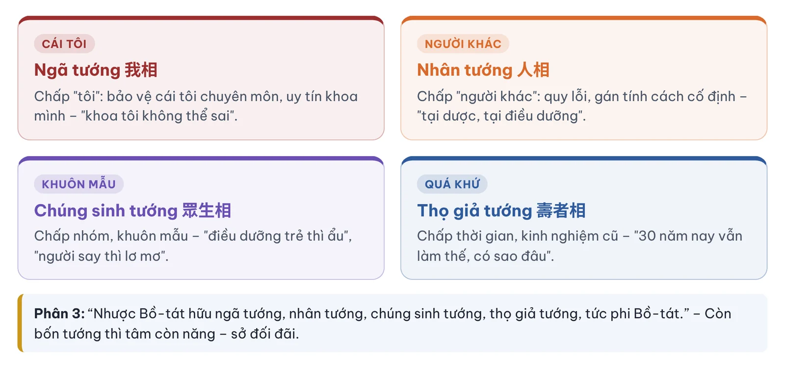
Phân 3 – Đại thừa chính tông phân
大乘正宗分第三 Độ tận chúng sinh mà lìa bốn tướng
I. NGUYÊN VĂN CHỮ HÁN, PHIÊN ÂM VÀ DỊCH NGHĨA
1. Nguyên văn chữ Hán
佛告須菩提。諸菩薩摩訶薩。應如是降伏其心。所有一切眾生之類。若卵生。若胎生。若濕生。若化生。若有色。若無色。若有想。若無想。若非有想非無想。我皆令入無餘涅槃而滅度之。如是滅度無量無數無邊眾生。實無眾生得滅度者。何以故。須菩提。若菩薩有我相。人相。眾生相。壽者相。即非菩薩。
2. Phiên âm Hán-Việt
Phật cáo Tu-bồ-đề: Chư Bồ-tát Ma-ha-tát, ưng như thị hàng phục kỳ tâm: Sở hữu nhất thiết chúng sinh chi loại, nhược noãn sinh, nhược thai sinh, nhược thấp sinh, nhược hóa sinh; nhược hữu sắc, nhược vô sắc; nhược hữu tưởng, nhược vô tưởng, nhược phi hữu tưởng phi vô tưởng, ngã giai linh nhập vô dư Niết-bàn nhi diệt độ chi. Như thị diệt độ vô lượng vô số vô biên chúng sinh, thực vô chúng sinh đắc diệt độ giả. Hà dĩ cố? Tu-bồ-đề! Nhược Bồ-tát hữu ngã tướng, nhân tướng, chúng sinh tướng, thọ giả tướng, tức phi Bồ-tát.
3. Dịch nghĩa
Đức Phật bảo Trưởng lão Tu-bồ-đề: “Các vị Đại Bồ-tát nên hàng phục tâm mình như thế này: Có bao nhiêu loài chúng sinh, hoặc sinh từ trứng (noãn sinh), sinh từ thai (thai sinh), sinh nơi ẩm ướt (thấp sinh), hay do biến hóa mà sinh (hóa sinh); hoặc có hình sắc, hoặc không hình sắc; hoặc có tâm tưởng, hoặc không tâm tưởng, hoặc chẳng phải có tưởng cũng chẳng phải không tưởng; Ta đều dẫn dắt tất cả vào cảnh giới Vô dư Niết-bàn để diệt độ (giải thoát hoàn toàn). Diệt độ vô lượng, vô số, vô biên chúng sinh như thế, nhưng thật ra không có chúng sinh nào được diệt độ cả. Vì cớ sao? Này Tu-bồ-đề! Nếu vị Bồ-tát còn có tướng ngã (ta), tướng nhân (người), tướng chúng sinh, tướng thọ giả (thời gian thọ mạng), thì người ấy không phải là Bồ-tát chân chính.”
II. GIẢI THÍCH NGHĨA LÝ CỐT TỦY
Phân 3 được Chiêu Minh Thái tử đặt tên là “Đại thừa chính tông” – tông chỉ chính của Đại thừa. Đây là lời đáp cho câu hỏi thứ hai của Tu-bồ-đề ở Phân 2: “Vân hà hàng phục kỳ tâm?”. Câu hỏi thứ nhất – an trụ tâm – sẽ được trả lời ở Phân 4.
1. Một nguyện lực không giới hạn
Bồ-tát phát nguyện độ tất cả chín loài chúng sinh: sinh từ trứng, từ thai, từ ẩm thấp, do biến hóa; có hình sắc, không hình sắc; có tưởng, không tưởng, chẳng phải có tưởng chẳng phải không tưởng – và đưa tất cả vào Vô dư Niết-bàn, nơi phiền não dứt sạch không còn dư tàn [3,6]. Phạm vi của lòng từ không bị giới hạn bởi loài, cõi hay mức độ thân sơ.
2. Và một cái thấy không có người đi độ
Ngay sau lời nguyện là câu then chốt: “Thực vô chúng sinh đắc diệt độ giả” – thật ra không có chúng sinh nào được diệt độ. Đây không phủ nhận việc cứu độ, mà phủ nhận cái tôi đứng giữa việc cứu độ. Còn thấy “ta độ người” là còn năng – sở đối đãi; người làm việc thiện khi ấy vô tình biến người được giúp thành đối tượng để khẳng định chính mình [13].
3. Bốn tướng – bốn “tưởng” làm méo cái thấy
Trong bản Phạn, bốn tướng là bốn saṃjñā – bốn tưởng, tức bốn khái niệm do tâm dựng lên về một bản ngã, một con người, một chúng sinh, một sinh mệnh; ngài La-thập dịch là “tướng” (相) [2,12]. Lục Tổ giải rất gần đời sống: cậy tài sản, học vấn, dòng dõi mà khinh người là ngã tướng; tuy làm điều nhân nghĩa nhưng tự cao, không kính người là nhân tướng; điều tốt nhận về mình, điều xấu đổ cho người là chúng sinh tướng; đối cảnh còn lấy bỏ, phân biệt là thọ giả tướng [19]. Kinh kết luận dứt khoát: Bồ-tát còn bốn tướng thì chưa phải là Bồ-tát.
III. PHƯƠNG PHÁP HÀNH TRÌ: HÀNG PHỤC TÂM BẰNG LÌA BỐN TƯỚNG
- Soi bốn tướng trong một ngày làm việc: cuối ngày, nhớ lại một lần mình bảo vệ hình ảnh bản thân (ngã), một lần quy lỗi cho người khác (nhân), một lần nghĩ “nhóm họ vốn thế” (chúng sinh), một lần bám chặt kinh nghiệm cũ (thọ giả).
- Giúp mà không ghi sổ: khi giúp người bệnh hay đồng nghiệp, thôi nhắc lại việc mình đã làm; để kết quả tự nói.
- Xem vọng niệm như chín loài chúng sinh: các nhà chú giải còn đọc “chín loài” như những loại ý niệm khởi lên trong tâm; hàng phục là nhận ra chúng, không nuôi dưỡng cũng không cưỡng ép đè nén [3].
IV. ỨNG DỤNG: BỐN TƯỚNG TRONG LÂM SÀNG VÀ TRONG PHÂN TÍCH SỰ CỐ
1. Cứu chữa mà không mang tướng “ân nhân”
Khi thầy thuốc thấy mình là người ban ơn, người bệnh dễ bị đặt vào vị trí thụ động; thông tin bị giản lược, quyết định được đưa ra thay cho họ. Lìa ngã tướng trong lâm sàng là giải thích đủ để người bệnh cùng quyết định, là chấp nhận ý kiến thứ hai, là cảm ơn người bệnh đã phát hiện một nhầm lẫn của nhân viên.
2. Bốn tướng trong hội đồng phân tích sự cố
Bốn tướng xuất hiện rất rõ trong một cuộc họp sự cố: người trong cuộc phòng thủ (ngã tướng), hội đồng tìm người để quy lỗi (nhân tướng), “khoa ấy lúc nào cũng vậy” (chúng sinh tướng), và “từ trước tới nay vẫn làm thế mà có sao đâu” (thọ giả tướng). Khoa học an toàn gọi tên các hiện tượng tương ứng: cách tiếp cận con người thay cho cách tiếp cận hệ thống [40], thiên kiến nhìn lại khi đã biết kết cục [41], và sự bình thường hóa lệch chuẩn [42]. Lìa bốn tướng là điều kiện để phân tích nguyên nhân gốc đi đến điều kiện hệ thống thay vì dừng ở một cá nhân [43].
3. Lãnh đạo phục vụ trong mùa dịch
Người quản lý lìa ngã tướng không đứng ngoài để kiểm tra, mà đi trước vào nơi khó, bảo đảm phương tiện phòng hộ, đào tạo và chế độ nghỉ cho nhân viên – vì an toàn của nhân viên là điều kiện để chăm sóc người bệnh [44,45]. Tình huống dưới đây minh họa tinh thần ấy.
TÌNH HUỐNGKhu cách ly lúc dịch bùng phát (mô phỏng từ thực tế)
Mùa dịch, khoa tiếp nhận liên tiếp nhiều người bệnh nghi mắc một bệnh truyền nhiễm nhóm A lây qua đường hô hấp. Một số nhân viên trẻ lo sợ, viện lý do để tránh vào khu cách ly. Trưởng khoa không ra lệnh suông: ông là người đầu tiên mặc đầy đủ phương tiện phòng hộ cá nhân vào thăm khám, tổ chức tập huấn mặc – cởi đồ bảo hộ có giám sát, phân lịch luân phiên công bằng, bố trí chỗ nghỉ riêng và đường dây hỗ trợ tâm lý. Ông nói với nhân viên: “Chúng ta không phải người hùng. Chúng ta là thầy thuốc được bảo vệ đúng quy trình để chăm sóc người bệnh.”
Các thế hệ thầy thuốc truyền nhiễm Việt Nam đã đi qua SARS (2003), cúm A/H5N1, COVID-19 với chính tinh thần ấy: độ tận chúng sinh mà không mang tướng ân nhân (lìa ngã tướng), không xem người bệnh là mối đe dọa (lìa nhân tướng), không để nỗi sợ sinh tử làm tê liệt (lìa thọ giả tướng) – nhưng cũng không liều lĩnh, vì an toàn của nhân viên là điều kiện để chăm sóc người bệnh [45,46].
ĐIỂM THEN CHỐTĐiểm then chốt
- Độ tận chúng sinh mà “thực vô chúng sinh đắc diệt độ”: cứu chữa hết lòng mà không đặt cái tôi ân nhân vào giữa.
- Bốn tướng là bốn bộ lọc làm méo cách nhìn: bảo vệ cái tôi, quy lỗi cho người, định kiến nhóm, bám kinh nghiệm cũ.
- Lãnh đạo phục vụ: người đứng đầu đi trước vào nơi khó, và bảo vệ người đi cùng.
SUY NGẪMCâu hỏi suy ngẫm
1. Trong cuộc họp phân tích sự cố gần nhất, tướng nào trong bốn tướng đã xuất hiện ở chính anh/chị?
2. Khi chăm sóc một người bệnh mắc bệnh lây nhiễm, nỗi sợ nào của anh/chị cần được nhìn thẳng – và được hệ thống hỗ trợ?
Phân 4 – Diệu hạnh vô trụ phân
妙行無住分第四 Bố thí không trụ tướng
I. NGUYÊN VĂN CHỮ HÁN, PHIÊN ÂM VÀ DỊCH NGHĨA
1. Nguyên văn chữ Hán
復次。須菩提。菩薩於法。應無所住。行於布施。所謂不住色布施。不住聲香味觸法布施。須菩提。菩薩應如是布施。不住於相。何以故。若菩薩不住相布施。其福德不可思量。須菩提。於意云何。東方虛空。可思量不。不也。世尊。須菩提。南西北方。四維上下虛空。可思量不。不也。世尊。須菩提。菩薩無住相布施。福德亦復如是不可思量。須菩提。菩薩但應如所教住。
2. Phiên âm Hán-Việt
Phục thứ, Tu-bồ-đề! Bồ-tát ư pháp, ưng vô sở trụ, hành ư bố thí. Sở vị bất trụ sắc bố thí, bất trụ thanh, hương, vị, xúc, pháp bố thí. Tu-bồ-đề! Bồ-tát ưng như thị bố thí, bất trụ ư tướng. Hà dĩ cố? Nhược Bồ-tát bất trụ tướng bố thí, kỳ phúc đức bất khả tư lượng.
Tu-bồ-đề! Ư ý vân hà? Đông phương hư không khả tư lượng phủ?
– Bất dã, Thế Tôn!
– Tu-bồ-đề! Nam, Tây, Bắc phương, tứ duy, thượng, hạ hư không khả tư lượng phủ?
– Bất dã, Thế Tôn!
– Tu-bồ-đề! Bồ-tát vô trụ tướng bố thí, phúc đức diệc phục như thị bất khả tư lượng. Tu-bồ-đề! Bồ-tát đãn ưng như sở giáo trụ.
3. Dịch nghĩa
Lại nữa, này Tu-bồ-đề! Bồ-tát đối với các pháp, nên không có chỗ trụ (dính mắc) mà thực hành bố thí. Tức là không dừng trụ nơi sắc mà bố thí, không dừng trụ nơi thanh, hương, vị, xúc, pháp mà bố thí. Này Tu-bồ-đề! Bồ-tát nên bố thí như thế đó, không dừng trụ nơi hình tướng. Vì cớ sao? Nếu Bồ-tát bố thí không dính mắc vào tướng, thì phúc đức ấy không thể nghĩ lường được.
Này Tu-bồ-đề, ý ông nghĩ sao? Hư không ở phương Đông có thể suy lường đo đếm được chăng?
– Bạch Thế Tôn, không thể lường được.
– Này Tu-bồ-đề! Hư không ở các phương Nam, Tây, Bắc, bốn hướng phụ (Đông Bắc, Đông Nam, Tây Bắc, Tây Nam) và phương trên, phương dưới có thể suy lường được chăng?
– Bạch Thế Tôn, không thể lường được.
– Này Tu-bồ-đề! Bồ-tát bố thí không dính mắc vào tướng, phúc đức có được cũng lại rộng lớn không thể nghĩ lường như hư không mười phương vậy. Này Tu-bồ-đề! Bồ-tát chỉ nên an trụ đúng như lời Ta đã chỉ dạy.
II. GIẢI THÍCH NGHĨA LÝ CỐT TỦY
Phân 3 đã trả lời câu hỏi hàng phục tâm. Phân 4 trả lời câu hỏi thứ nhất của Tu-bồ-đề – “Vân hà ưng trụ?” – bằng một nghịch lý: an trụ chính là không trụ vào đâu cả (vô sở trụ).
1. Vì sao trả lời bằng bố thí?
Bố thí đứng đầu sáu ba-la-mật. Truyền thống phân ba loại bố thí: tài thí (của cải, công sức), pháp thí (tri thức, giáo pháp) và vô úy thí (đem lại sự không sợ hãi). Các nhà chú giải nhận xét rằng bố thí theo nghĩa rộng bao hàm cả sáu độ – vì mỗi hạnh lành đều là một sự cho đi, kể cả cho đi cái thấy hẹp hòi của chính mình [3,15]. Chọn bố thí để nói về an trụ là chọn chính nơi tâm dễ “trụ” nhất: khi cho đi, người ta thường mong được nhớ, được khen, được đền đáp.
2. Không trụ sáu trần
“Bất trụ sắc bố thí, bất trụ thanh, hương, vị, xúc, pháp bố thí” – không làm vì hình thức thấy được, không vì lời khen nghe được, không vì sự hưởng thụ, và cả không vì ý niệm “mình đang làm công đức” (pháp). Bố thí như vậy gọi là bất trụ ư tướng. Đó không phải là làm hời hợt, mà là làm hết lòng nhưng không để tâm bám vào kết quả cho riêng mình.
3. Phúc đức như hư không
Đức Phật dùng hình ảnh hư không mười phương để nói phúc đức của bố thí vô trụ “bất khả tư lượng”. Tâm không vẽ ranh giới cho mình thì việc làm cũng không bị giới hạn bởi ranh giới ấy. Lời dặn kết thúc phân – “Bồ-tát đãn ưng như sở giáo trụ”, chỉ nên trụ đúng như lời dạy – cho thấy “vô trụ” không phải là buông lỏng: người thực hành vẫn có chỗ nương là lời dạy, nhưng không dính vào lời dạy như một vật sở hữu [19].
III. PHƯƠNG PHÁP HÀNH TRÌ: BỐ THÍ KHÔNG ĐỂ LẠI DẤU VẾT
- Ba câu hỏi sau khi giúp người: mình có đang chờ lời cảm ơn không? Có đang so mình với người khác không? Có đang ghi nhớ việc này để “đổi” lấy điều gì không?
- Giữ tâm như mặt gương: khen chê đến rồi đi như bóng chim qua gương; không đuổi theo lời khen, không ôm lấy lời chê.
- Bố thí cả kinh nghiệm cũ: sẵn sàng buông một cách làm quen tay khi bằng chứng mới cho thấy có cách an toàn hơn.
IV. ỨNG DỤNG: LÀM CHẤT LƯỢNG KHÔNG VÌ “TƯỚNG”
1. Ba loại bố thí của người thầy thuốc
Công sức chăm sóc là tài thí; truyền đạt kiến thức cho người bệnh và đồng nghiệp là pháp thí; giải thích rõ ràng để người bệnh bớt sợ hãi là vô úy thí. Với người bệnh truyền nhiễm – thường mang thêm nỗi sợ bị kỳ thị – vô úy thí có khi quan trọng ngang với thuốc. Không trụ sáu trần trong y đức nghĩa là không để địa vị, quà cáp hay thái độ dễ chịu – khó chịu của người bệnh làm thay đổi chất lượng chăm sóc.
2. Khi chất lượng bị kéo về phía “tướng”
Đo lường là cần thiết, nhưng khi một chỉ số trở thành mục tiêu để được khen thưởng, nó dễ mất giá trị phản ánh thực tế – hiện tượng được mô tả như “định luật Goodhart” [47]. Số liệu tuân thủ được ghi bù, hồ sơ được làm đẹp trước đợt đánh giá chính là “trụ sắc, trụ thanh”. Bộ tiêu chí chất lượng bệnh viện Việt Nam và các bộ tiêu chuẩn quốc tế đều nhằm cải tiến thực chất, không nhằm tạo hồ sơ [48,49]. Người làm quản lý chất lượng “bố thí vô trụ” là người trân trọng số liệu trung thực, kể cả khi số liệu xấu.
3. “Như sở giáo trụ” – an trụ nơi bằng chứng và quy chuẩn
An trụ đúng như lời dạy, trong y khoa, là an trụ nơi phác đồ dựa trên bằng chứng và các quy chuẩn an toàn đã được thống nhất – đồng thời không biến chúng thành nơi trú ẩn để né tránh trách nhiệm suy nghĩ. Phân 6 sẽ nói rõ hơn mối quan hệ giữa “nương vào pháp” và “không chấp pháp”.
TÌNH HUỐNGHai khoa, hai cách “bố thí” cho đợt đánh giá (mô phỏng từ thực tế)
Trước đợt đánh giá chất lượng bệnh viện cuối năm theo Bộ tiêu chí chất lượng bệnh viện Việt Nam [48], khoa A “hoàn thiện” sổ giám sát vệ sinh tay bằng cách ghi bù số liệu của ba tháng – tỷ lệ tuân thủ 98%. Khoa B nộp số liệu quan sát thực tế: 61%, kèm biểu đồ cải thiện dần từ 45% và kế hoạch PDSA cho quý tới.1 Hội đồng QLCL chọn khen thưởng khoa B, đồng thời trao đổi riêng với khoa A về giá trị của dữ liệu trung thực.
Cùng thời gian ấy, một gia đình người bệnh muốn gửi phong bì cảm ơn bác sĩ điều trị. Bác sĩ từ chối nhẹ nhàng và gợi ý: “Nếu muốn cảm ơn, anh chị viết vài dòng góp ý cho khoa – điều gì làm tốt, điều gì cần sửa – để người bệnh sau được chăm sóc tốt hơn.”
Cả hai câu chuyện là một bài học: bố thí không trụ sắc, thanh, hương, vị, xúc, pháp – làm chất lượng không vì bảng khen, chữa bệnh không vì phong bì.
ĐIỂM THEN CHỐTĐiểm then chốt
- An trụ tâm chính là “vô sở trụ”: không dính vào sáu trần khi cống hiến.
- “Bệnh thành tích” là trụ tướng trong quản trị chất lượng; dữ liệu trung thực là bố thí vô trụ.
- Ba loại bố thí của người thầy thuốc: tài thí (công sức), pháp thí (y thuật), vô úy thí (xua tan sợ hãi cho người bệnh).
SUY NGẪMCâu hỏi suy ngẫm
1. Khoa anh/chị có số liệu nào “đẹp hơn thực tế”? Điều gì khiến người ta làm đẹp số liệu?
2. Nếu không có bảng khen nào cho công việc chất lượng, anh/chị còn làm với cùng một tâm thế không?
Phân 5 – Như lý thực kiến phân
如理實見分第五 Phàm sở hữu tướng giai thị hư vọng
I. NGUYÊN VĂN CHỮ HÁN, PHIÊN ÂM VÀ DỊCH NGHĨA
1. Nguyên văn chữ Hán
須菩提。於意云何。可以身相見如來不。不也。世尊。不可以身相得見如來。何以故。如來所說身相。即非身相。佛告須菩提。凡所有相。皆是虛妄。若見諸相非相。即見如來。
2. Phiên âm Hán-Việt
Tu-bồ-đề! Ư ý vân hà? Khả dĩ thân tướng kiến Như Lai phủ?
– Bất dã, Thế Tôn! Bất khả dĩ thân tướng đắc kiến Như Lai. Hà dĩ cố? Như Lai sở thuyết thân tướng, tức phi thân tướng.
Phật cáo Tu-bồ-đề: Phàm sở hữu tướng, giai thị hư vọng. Nhược kiến chư tướng phi tướng, tức kiến Như Lai.
3. Dịch nghĩa
“Này Tu-bồ-đề! Ý ông nghĩ sao? Có thể dùng thân tướng (32 tướng tốt, 80 vẻ đẹp) mà thấy được Như Lai chăng?”
– “Bạch Thế Tôn, không thể! Không thể dùng thân tướng mà thấy được Như Lai. Vì cớ sao? Thân tướng mà Như Lai đã nói, tức chẳng phải là thân tướng.”
Đức Phật bảo Tu-bồ-đề: “Phàm những gì có hình tướng, đều là hư vọng. Nếu thấy các tướng chẳng phải tướng (thấu rõ tính Không của các tướng), tức liền thấy Như Lai.”
II. GIẢI THÍCH NGHĨA LÝ CỐT TỦY
Sau khi nói về cách cho đi không dính mắc, Đức Phật hỏi Tu-bồ-đề một câu tưởng như đơn giản: có thể dùng thân tướng để thấy Như Lai không? Từ câu hỏi ấy, Phân 5 – “Như lý thật kiến”, thấy đúng như lý – đưa ra bài kệ nền tảng của cả bộ kinh.
1. Thân tướng và Như Lai
Thân tướng là sắc thân với ba mươi hai tướng tốt, sinh ở Lâm-tỳ-ni, nhập diệt ở Câu-thi-na – do duyên hợp nên có sinh diệt. Như Lai là thể tính chân như, không đến không đi. Đồng nhất hai điều ấy là lấy cái biểu hiện thay cho cái bản chất [3,19].
2. Cú thức tam đoạn đầu tiên trong kinh
Tu-bồ-đề đáp: “Như Lai sở thuyết thân tướng, tức phi thân tướng” – thân tướng mà Như Lai nói, tức chẳng phải thân tướng. Đây là lần đầu cấu trúc biện chứng Kim Cương xuất hiện, ở dạng hai vế: A → tức phi A. Thân tướng có đó (A), nhưng không có tự tính độc lập (phi A); vế thứ ba – “thị danh A”, tạm gọi là A – sẽ được kinh dùng đầy đủ từ các phân sau (xem Chương 4).
3. “Phàm sở hữu tướng, giai thị hư vọng”
Bài kệ được Đức Phật nói ngay sau đó: “Phàm sở hữu tướng, giai thị hư vọng; nhược kiến chư tướng phi tướng, tức kiến Như Lai”. “Tướng” (lakṣaṇa) ở đây không chỉ là hình sắc, mà là mọi dấu hiệu tâm dùng để nhận biết và định danh: tên gọi, vai trò, chỉ số, nhãn chẩn đoán [2,12]. “Hư vọng” không có nghĩa là không có, mà là không cố định, không tự đứng một mình. Thấy tướng mà biết nó là phi tướng – thấy đủ các duyên làm nên nó – thì thấy được thực tướng [13].
III. PHƯƠNG PHÁP HÀNH TRÌ: NHÌN XUYÊN QUA NHÃN MÁC
- Đặt dấu hỏi sau mỗi nhãn: khi tâm vừa dán một nhãn (“người bệnh khó tính”, “khoa yếu kém”, “ca sởi”), thêm một câu: “Những duyên nào làm nên điều mình đang thấy?”.
- Khen chê như tướng: trước lời khen hay lời phê bình, nhắc mình rằng đó là một biểu hiện do nhiều duyên tạo thành – không phải toàn bộ con người mình.
- Kính Phật mà không chấp tướng Phật: lễ kính hình tượng để nhớ đến phẩm hạnh giác ngộ, không để nghi thức thay cho sự tu sửa tâm.
IV. ỨNG DỤNG: TƯỚNG TRONG CHẨN ĐOÁN VÀ TƯỚNG TRONG HỒ SƠ
1. Triệu chứng và nhãn chẩn đoán là “tướng”
Phát ban, sốt, hình ảnh X-quang là những dấu hiệu cần được giải thích, không phải bản thân căn bệnh. Giữa mùa dịch, bối cảnh dịch tễ là một “tướng” rất mạnh: nó làm mọi ca phát ban đều trông giống bệnh đang lưu hành – thiên kiến sẵn có (availability) mà Tversky và Kahneman đã mô tả [52]. Nhãn chẩn đoán ghi trên giấy chuyển viện cũng là một “tướng” dễ khiến tuyến sau neo theo [33]. Tình huống phát ban do thuốc dưới đây cho thấy cách thầy thuốc nhìn xuyên qua “tướng mùa dịch” để thấy những duyên riêng của một người bệnh.
2. Hồ sơ đẹp không đồng nghĩa với buồng bệnh an toàn
Quy trình dày, bảng kiểm đầy đủ chữ ký và tỷ lệ tuân thủ 100% trên giấy là “sắc tướng” của chất lượng. Phương pháp truy vết (tracer) – đi theo hành trình của người bệnh, quan sát và hỏi tại chỗ – được thiết kế chính để thấy thực chất phía sau hồ sơ [49,53]. Quan sát trực tiếp vệ sinh tay theo năm thời điểm của WHO cho số liệu đáng tin hơn tự khai báo [27].
3. Giữ vững giữa những “tướng” ồn ào
Khi có sự cố nghiêm trọng hay khủng hoảng truyền thông, tin đồn và áp lực dư luận là những tướng thay đổi từng giờ. Người lãnh đạo thấy chúng là “hư vọng” theo nghĩa của kinh – không cố định, do nhiều duyên tạo thành – sẽ không phản ứng theo cảm xúc, mà kiên trì xác minh sự thật, chăm sóc người bệnh và nhân viên bị ảnh hưởng, rồi mới phân tích hệ thống [43,54].
TÌNH HUỐNGPhát ban giữa mùa sởi (mô phỏng từ thực tế)
Giữa đợt dịch sởi, một phụ nữ 46 tuổi nhập viện vì sốt cao, phát ban toàn thân. Chẩn đoán ban đầu ở tuyến trước: “sởi”. Tại khoa, bác sĩ điều trị nhận thấy ban dát sẩn lan tỏa kèm phù mặt, hạch to nhiều vị trí; người bệnh không có viêm long đường hô hấp, không có hạt Koplik. Khai thác kỹ: bốn tuần trước bắt đầu dùng allopurinol vì tăng acid uric. Xét nghiệm: bạch cầu ái toan tăng, men gan tăng gấp năm lần. Chẩn đoán điều chỉnh: hội chứng phát ban do thuốc kèm tăng bạch cầu ái toan và triệu chứng toàn thân (DRESS). Thuốc được ngừng, người bệnh hồi phục.
“Mùa dịch sởi” là một tướng rất mạnh – nó khiến mọi ca phát ban đều “giống sởi”. Thấy “tướng là phi tướng” là thấy được tổ hợp duyên riêng của người bệnh trước mặt: thuốc đang dùng, thời gian khởi phát, dấu hiệu không khớp. Trong quản lý chất lượng, “tướng” tương tự là bộ hồ sơ đẹp: chỉ phương pháp truy vết tại hiện trường mới thấy được thực chất [53].
ĐIỂM THEN CHỐTĐiểm then chốt
- “Phàm sở hữu tướng giai thị hư vọng”: tướng không phải là không có, mà là không có tự tính cố định, không đứng một mình.
- Trong lâm sàng: triệu chứng, nhãn chẩn đoán tuyến trước, bối cảnh dịch tễ đều là “tướng” cần được kiểm chứng.
- Trong quản trị: hồ sơ, báo cáo, tỷ lệ tuân thủ trên giấy là “tướng”; thực chất nằm ở hành vi tại giường bệnh.
SUY NGẪMCâu hỏi suy ngẫm
1. Chẩn đoán nào anh/chị từng đặt quá nhanh vì “giống” một bệnh đang phổ biến?
2. Chỉ số nào của khoa anh/chị đang đẹp trên giấy nhưng chưa được kiểm chứng tại hiện trường?
Chương 8
PHÁ CHẤP PHÁP VÀ NGÔN THUYẾT (PHÂN 6–8)
Sau khi phá chấp tướng của đối tượng, kinh tiến thêm một bước: phá chấp vào chính giáo pháp. Phân 6 đưa ra dụ ngôn chiếc bè nổi tiếng – pháp còn phải buông, huống chi phi pháp. Phân 7 khẳng định không có “định pháp” để đắc hay để thuyết. Phân 8 so sánh phúc đức của bố thí bảy báu với phúc đức của trí tuệ Bát-nhã. Ba phân này là nền triết học cho mối quan hệ giữa người thầy thuốc và phác đồ, quy trình, tiêu chuẩn: tôn trọng mà không giáo điều, linh hoạt mà không tùy tiện.
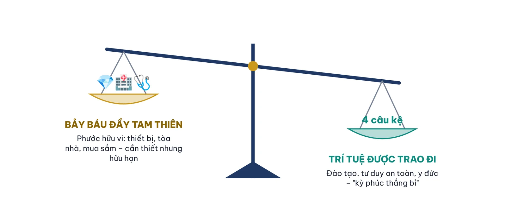
Phân 6 – Chính tín hy hữu phân
正信希有分第六 Lòng tin chân chính và dụ chiếc bè
I. NGUYÊN VĂN CHỮ HÁN, PHIÊN ÂM VÀ DỊCH NGHĨA
1. Nguyên văn chữ Hán
須菩提白佛言。世尊。頗有眾生。得聞如是言說章句。生實信不。
佛告須菩提。莫作是說。如來滅後。後五百歲。有持戒修福者。於此章句。能生信心。以此為實。當知是人。不於一佛二佛三四五佛而種善根。已於無量千萬佛所種諸善根。聞是章句。乃至一念生淨信者。須菩提。如來悉知悉見。是諸眾生。得如是無量福德。何以故。是諸眾生。無復我相。人相。眾生相。壽者相。無法相。亦無非法相。何以故。是諸眾生。若心取相。則為著我人眾生壽者。若取法相。即著我人眾生壽者。何以故。若取非法相。即著我人眾生壽者。是故不應取法。不應取非法。以是義故。如來常說。汝等比丘。知我說法。如筏喻者。法尚應捨。何況非法。
2. Phiên âm Hán-Việt
Tu-bồ-đề bạch Phật ngôn: Thế Tôn! Phả hữu chúng sinh, đắc văn như thị ngôn thuyết chương cú, sinh thực tín phủ?
Phật cáo Tu-bồ-đề: Mạc tác thị thuyết! Như Lai diệt hậu, hậu ngũ bách tuế, hữu trì giới tu phúc giả, ư thử chương cú năng sinh tín tâm, dĩ thử vi thực. Đương tri thị nhân, bất ư nhất Phật, nhị Phật, tam, tứ, ngũ Phật nhi chủng thiện căn, dĩ ư vô lượng thiên vạn Phật sở chủng chư thiện căn. Văn thị chương cú, nãi chí nhất niệm sinh tịnh tín giả; Tu-bồ-đề! Như Lai tất tri tất kiến, thị chư chúng sinh đắc như thị vô lượng phúc đức.
Hà dĩ cố? Thị chư chúng sinh vô phục ngã tướng, nhân tướng, chúng sinh tướng, thọ giả tướng; vô pháp tướng, diệc vô phi pháp tướng. Hà dĩ cố? Thị chư chúng sinh, nhược tâm thủ tướng, tắc vi trước ngã, nhân, chúng sinh, thọ giả. Nhược thủ pháp tướng, tức trước ngã, nhân, chúng sinh, thọ giả. Hà dĩ cố? Nhược thủ phi pháp tướng, tức trước ngã, nhân, chúng sinh, thọ giả. Thị cố bất ưng thủ pháp, bất ưng thủ phi pháp. Dĩ thị nghĩa cố, Như Lai thường thuyết: Nhữ đẳng Tỳ-kheo! Tri ngã thuyết pháp, như phạt dụ giả; pháp thượng ưng xả, hà huống phi pháp.
3. Dịch nghĩa
Trưởng lão Tu-bồ-đề bạch Phật: “Bạch Thế Tôn, liệu có chúng sinh nào khi được nghe những lời lẽ, câu kệ sâu xa như thế này mà sinh lòng tin chân thật chăng?”
Đức Phật bảo: “Này Tu-bồ-đề, chớ nói lời ấy! Sau khi Như Lai diệt độ, vào năm trăm năm sau cùng,2 có người biết giữ giới, biết tu phúc, đối với những câu kinh này có thể sinh lòng tin trong sạch, nhận đây là chân thật. Nên biết người ấy không phải chỉ gieo trồng căn lành ở một đức Phật, hai đức Phật, ba, bốn, năm đức Phật, mà đã vun trồng căn lành ở vô lượng nghìn vạn đức Phật rồi. Nghe câu kinh này, cho đến chỉ khởi một niệm sinh tâm tịnh tín; này Tu-bồ-đề, Như Lai đều thấy biết rõ ràng, các chúng sinh ấy sẽ đắc vô lượng phúc đức như thế.
Vì cớ sao? Vì các chúng sinh ấy không còn ngã tướng, nhân tướng, chúng sinh tướng, thọ giả tướng; không vướng chấp pháp tướng, cũng không vướng chấp phi pháp tướng. Vì cớ sao? Nếu tâm chúng sinh ấy bám chấp vào tướng, tức là dính mắc ngã, nhân, chúng sinh, thọ giả. Nếu bám chấp vào 'pháp tướng', tức là dính mắc ngã, nhân, chúng sinh, thọ giả. Vì cớ sao? Nếu bám chấp vào 'phi pháp tướng', tức là dính mắc ngã, nhân, chúng sinh, thọ giả.
Vì thế, không nên bám giữ pháp, cũng không nên bám giữ phi pháp. Chính vì ý nghĩa ấy, Như Lai thường dạy: 'Này các Tỳ-kheo, hãy biết Ta thuyết pháp giống như người dùng bè qua sông; đến chánh pháp còn phải xả bỏ, huống hồ là phi pháp'.”
II. GIẢI THÍCH NGHĨA LÝ CỐT TỦY
Bài kệ “phàm sở hữu tướng giai thị hư vọng” ở Phân 5 dứt khoát đến mức Tu-bồ-đề lo ngại: đời sau có ai tin nổi những lời như vậy? Phân 6 – “Chính tín hy hữu” – trả lời bằng ba ý.
1. Nền của tín tâm là giới và phúc
Đức Phật dạy: năm trăm năm sau, vẫn có người trì giới, tu phúc sinh được tín tâm thanh tịnh với kinh này, vì họ đã gieo căn lành nơi vô lượng chư Phật [6]. Thứ tự này đáng chú ý: niềm tin vào tuệ giác vô tướng không đến từ học thuộc lý thuyết, mà mọc lên trên nền kỷ luật đạo đức và đời sống biết cho đi. Các nhà chú giải đều nhấn mạnh rằng không có nền ấy thì “tính Không” dễ trở thành cái cớ cho sự buông lung [3,15].
2. Từ bốn tướng đến pháp tướng và phi pháp tướng
Phân 3 phá bốn tướng nơi con người; Phân 6 tiến thêm: không chấp pháp tướng – coi giáo lý, công thức là chân lý cố định để bám giữ – và cũng không chấp phi pháp tướng – phủ nhận mọi quy ước, cho rằng “tất cả là không nên chẳng cần làm gì”. Kinh nói rõ: hễ tâm còn “thủ” (nắm giữ), dù nắm giữ chân lý hay nắm giữ sự phủ định, thì bốn tướng lập tức trở lại.
3. Dụ ngôn chiếc bè
“Tri ngã thuyết pháp như phạt dụ giả; pháp thượng ưng xả, hà huống phi pháp” – biết pháp Ta nói như chiếc bè; pháp còn phải buông, huống chi phi pháp. Hình ảnh này có gốc từ kinh Ví dụ con rắn (Alagaddūpama) trong Trung Bộ: người qua sông nhờ bè, lên bờ rồi không vác bè đi tiếp [56]. Bè không vô giá trị; nó vô giá khi đang qua sông. Điều kinh cảnh tỉnh là biến phương tiện thành gánh nặng.
III. PHƯƠNG PHÁP HÀNH TRÌ: KHÔNG THỦ PHÁP, KHÔNG THỦ PHI PHÁP
- Giữ giới trước khi bàn chuyện vô tướng: bắt đầu từ những cam kết nhỏ được giữ trọn – đúng giờ, đúng quy trình, đúng lời hứa với người bệnh.
- Hỏi “bè này còn chở ai?”: định kỳ nhìn lại một thói quen, một quy định mình đang giữ: nó còn phục vụ mục đích ban đầu không?
- Cảnh giác với “chấp Không”: không dùng ý niệm vô thường, vô ngã để biện minh cho sự cẩu thả hay vô trách nhiệm.
IV. ỨNG DỤNG: PHÁC ĐỒ VÀ QUY TRÌNH NHƯ CHIẾC BÈ
1. Phác đồ trong tay người thầy thuốc
Hướng dẫn điều trị là chiếc bè được đóng từ bằng chứng tốt nhất hiện có. “Thủ pháp tướng” là áp phác đồ máy móc lên một người bệnh có đặc điểm không nằm trong quần thể nghiên cứu; “thủ phi pháp tướng” là bỏ qua phác đồ, điều trị theo cảm tính. Y học dựa trên bằng chứng vốn được định nghĩa là sự kết hợp giữa bằng chứng tốt nhất, kinh nghiệm lâm sàng và giá trị của người bệnh – tức đã hàm ý “không thủ, không bỏ” [57]. Tình huống bù dịch cho người bệnh suy tim dưới đây cho thấy cả hai cực đoan và con đường ở giữa: tuân thủ mục tiêu của phác đồ, điều chỉnh có theo dõi, và ghi rõ lý do vào bệnh án.
2. Quy trình phục vụ người bệnh, không ngược lại
Khi quy trình trở thành mục tiêu tự thân, nhân viên dành thời gian ghi chép đối phó thay cho thời gian bên giường bệnh – đó là “vác bè lên bờ”. Tư duy Lean gọi những bước không tạo giá trị cho người bệnh là lãng phí và khuyến khích loại bỏ chúng [58]. Hệ thống quản lý chất lượng – dù theo Bộ tiêu chí chất lượng bệnh viện Việt Nam, Bộ tiêu chuẩn JCI hay ISO 9001 – đều yêu cầu rà soát, cập nhật tài liệu định kỳ: một quy trình không còn phù hợp phải được sửa hoặc hủy, không được giữ lại “cho đủ hồ sơ” [48,49,59].
3. Giới và phúc của người quản lý
Trong khủng hoảng, điều giữ người quản lý không chao đảo chính là hai nền tảng kinh nhắc: giữ nguyên tắc khoa học và đạo đức (giới), hành động vì lợi ích người bệnh và đồng nghiệp chứ không vì hình ảnh bản thân (phúc).
TÌNH HUỐNGBù dịch theo phác đồ cho một trái tim yếu (mô phỏng từ thực tế)
Người bệnh nam 71 tuổi, suy tim với phân suất tống máu khoảng 25%, nhập viện vì sốc nhiễm khuẩn từ viêm đường mật. Hướng dẫn Surviving Sepsis Campaign 2021 gợi ý bù ít nhất 30 mL/kg dịch tinh thể trong ba giờ đầu cho người bệnh giảm tưới máu do nhiễm khuẩn huyết – nhưng đã hạ mức khuyến cáo này từ “khuyến cáo mạnh” (bản 2016) xuống “khuyến cáo yếu”, đồng thời gợi ý dùng các chỉ số động (như nghiệm pháp nâng chân thụ động kèm đo cung lượng tim) để hướng dẫn bù dịch [60,61]. Chính y học chứng cứ cũng không “trụ” vào một con số. Bác sĩ nội trú A định truyền đủ 2 lít “cho đúng phác đồ” (chấp pháp tướng). Bác sĩ nội trú B cho rằng “suy tim thì không bù dịch”, chỉ dùng vận mạch (chấp phi pháp tướng). Bác sĩ điều trị chọn trung đạo: bù từng liều nhỏ, đánh giá đáp ứng sau mỗi liều bằng siêu âm tại giường và nghiệm pháp nâng chân thụ động, dừng khi có dấu hiệu quá tải; dùng noradrenalin sớm; ghi rõ lý do điều chỉnh vào bệnh án.
Phác đồ là chiếc bè đưa người bệnh qua sông an toàn. Không có bè thì chết đuối; vác bè lên bờ thì kiệt sức. Ghi rõ lý do điều chỉnh vào bệnh án chính là “thị danh phác đồ” – vẫn tôn trọng phác đồ như một chuẩn mực, nhưng dùng nó một cách tự do có trách nhiệm.
ĐIỂM THEN CHỐTĐiểm then chốt
- “Pháp thượng ưng xả, hà huống phi pháp”: không chấp vào phác đồ như giáo điều, càng không coi thường phác đồ.
- Giới và Phúc là nền của tín tâm: kỷ luật chuyên môn và tinh thần phụng sự đi trước mọi sự “linh hoạt”.
- Quy trình sinh ra để phục vụ người bệnh; quy trình lỗi thời phải được tinh gọn, cập nhật.
SUY NGẪMCâu hỏi suy ngẫm
1. Gần đây anh/chị đã điều chỉnh phác đồ cho một người bệnh cụ thể chưa? Lý do có được ghi lại rõ ràng không?
2. Quy trình nào ở khoa đang là “chiếc bè vác trên vai” – tốn thời gian mà không còn phục vụ người bệnh?
Phân 7 – Vô đắc vô thuyết phân
無得無說分第七 Không có định pháp để đắc, để thuyết
I. NGUYÊN VĂN CHỮ HÁN, PHIÊN ÂM VÀ DỊCH NGHĨA
1. Nguyên văn chữ Hán
須菩提。於意云何。如來得阿耨多羅三藐三菩提耶。如來有所說法耶。須菩提言。如我解佛所說義。無有定法名阿耨多羅三藐三菩提。亦無有定法如來可說。何以故。如來所說法。皆不可取。不可說。非法。非非法。所以者何。一切賢聖。皆以無為法而有差別。
2. Phiên âm Hán-Việt
Tu-bồ-đề! Ư ý vân hà? Như Lai đắc A-nậu-đa-la Tam-miệu Tam-bồ-đề gia? Như Lai hữu sở thuyết pháp gia?
Tu-bồ-đề ngôn: Như ngã giải Phật sở thuyết nghĩa, vô hữu định pháp danh A-nậu-đa-la Tam-miệu Tam-bồ-đề, diệc vô hữu định pháp Như Lai khả thuyết. Hà dĩ cố? Như Lai sở thuyết pháp, giai bất khả thủ, bất khả thuyết, phi pháp, phi phi pháp. Sở dĩ giả hà? Nhất thiết hiền thánh giai dĩ vô vi pháp nhi hữu sai biệt.
3. Dịch nghĩa
“Này Tu-bồ-đề! Ý ông nghĩ sao? Như Lai có đắc quả Vô thượng Chánh đẳng Chánh giác chăng? Như Lai có thuyết pháp chăng?”
Trưởng lão Tu-bồ-đề bạch: “Theo như con hiểu nghĩa lý lời Phật dạy, thì không có pháp cố định nào gọi là Vô thượng Chánh đẳng Chánh giác, cũng không có pháp cố định nào mà Như Lai có thể thuyết. Vì cớ sao? Giáo pháp mà Như Lai đã thuyết, thảy đều không thể nắm giữ (bất khả thủ), không thể diễn thuyết trọn vẹn (bất khả thuyết), chẳng phải pháp (phi pháp), cũng chẳng phải phi pháp (phi phi pháp). Vì cớ làm sao? Toàn bộ các bậc Hiền Thánh đều lấy pháp vô vi mà có sự sai biệt.”
II. GIẢI THÍCH NGHĨA LÝ CỐT TỦY
Sau dụ ngôn chiếc bè, Đức Phật hỏi thẳng vào hai điều mà người học dễ chấp nhất: Như Lai có đắc pháp vô thượng không? Như Lai có thuyết pháp không? Câu trả lời của Tu-bồ-đề làm nên tên phân: “Vô đắc vô thuyết”.
1. “Vô hữu định pháp”
Tu-bồ-đề thưa: theo chỗ con hiểu, không có một pháp cố định nào gọi là Vô thượng Chánh đẳng Chánh giác, cũng không có pháp cố định nào Như Lai nói ra. Giác ngộ không phải một vật để cầm lấy; giáo pháp không phải một bộ công thức đóng sẵn. Truyền thống chú giải ví pháp như phương thuốc: tùy bệnh mà cho thuốc, bệnh khỏi thì thuốc cũng không còn để giữ [3,19].
2. Bốn phủ định: bất khả thủ, bất khả thuyết, phi pháp, phi phi pháp
Pháp Như Lai nói không thể nắm bắt bằng tâm phân biệt, không thể nói trọn bằng ngôn ngữ; nó không phải là pháp theo nghĩa một thực thể cố định, nhưng cũng không phải là không có pháp – diệu dụng của nó vẫn hiện hữu. Bốn phủ định này là lối nói của Trung quán: tránh cả hai bờ có và không [5].
3. Hiền Thánh sai khác nhờ pháp vô vi
Câu kết – “Nhất thiết hiền thánh giai dĩ vô vi pháp nhi hữu sai biệt” – nói rằng các bậc hiền thánh khác nhau không vì nắm giữ những pháp khác nhau, mà vì mức độ thể nhập cùng một thực tại vô vi sâu hay cạn [6]. Thứ bậc không nằm ở cái được sở hữu, mà ở độ trong sáng của cái thấy.
III. PHƯƠNG PHÁP HÀNH TRÌ: LINH HOẠT MÀ KHÔNG BUÔNG LỎNG
- Bỏ thói quen tìm “công thức vạn năng”: trước một tình huống mới, hỏi “điều gì ở đây giống và khác những ca mình từng gặp?” thay vì vội áp một khuôn mẫu.
- Nghe lời người khác như ngón tay chỉ trăng: lời nói luôn bị giới hạn bởi góc nhìn của người nói; tìm điều họ muốn chỉ thay vì bắt bẻ câu chữ.
- Làm mà không thấy mình “đắc”: sau một thành công, ghi nhận công của mọi người và những điều kiện may mắn, thay vì gắn nó vào danh tính của mình.
IV. ỨNG DỤNG: KHÔNG CÓ “ĐỊNH PHÁP” CHO MỌI NGƯỜI BỆNH
1. Hướng dẫn điều trị là khung, người bệnh là thực tại
Cùng một chẩn đoán, người bệnh suy giảm miễn dịch, người cao tuổi suy thận hay phụ nữ mang thai đòi hỏi những điều chỉnh khác nhau về thuốc, liều và theo dõi. Hướng dẫn lâm sàng tốt thường đã tính đến điều này bằng các phác đồ thay thế cho từng hoàn cảnh nguồn lực – như hướng dẫn của WHO về bệnh do Cryptococcus ở người nhiễm HIV được phân tích trong tình huống dưới đây [62]. “Vô hữu định pháp” không phải là tùy tiện; đó là năng lực áp dụng đúng nguyên lý vào một con người cụ thể, và ghi lại lý do để đồng nghiệp có thể kiểm chứng.
2. Kinh nghiệm chuyên gia là “pháp vô vi” của nghề
Mô hình phát triển kỹ năng của Dreyfus và nghiên cứu của Benner về điều dưỡng cho thấy người mới học cần quy tắc rõ ràng, còn chuyên gia nhận ra mẫu hình tình huống một cách trực giác và biết khi nào quy tắc không còn phù hợp [22,63]. Sự khác biệt giữa họ – như kinh nói về các bậc hiền thánh – không nằm ở chỗ chuyên gia “sở hữu” nhiều quy tắc hơn, mà ở độ sâu của cái thấy. Đào tạo vì vậy cần cả quy trình chuẩn cho người mới và cơ hội kèm cặp tại giường để chuyển giao cái thấy ấy.
3. Lãnh đạo “vô vi”
Người quản lý không cần can thiệp vào từng chi tiết chuyên môn của cấp dưới. Việc của họ là thiết lập cơ chế, gỡ rào cản và bảo vệ không gian để chuyên gia tuyến đầu phát huy năng lực – rồi đo lường kết quả để học hỏi chung.
TÌNH HUỐNGKhi thuốc khuyến cáo không có sẵn (minh họa lâm sàng)
Điều trị viêm màng não do Cryptococcus ở người nhiễm HIV là ví dụ điển hình của “vô hữu định pháp”. Hướng dẫn của WHO đưa ra phác đồ ưu tiên, đồng thời xây dựng sẵn các phác đồ thay thế cho những nơi không có đủ thuốc như flucytosin hay amphotericin B dạng liposome [62]. Tại khoa lâm sàng, người thầy thuốc còn phải cân nhắc chức năng thận, kali, magie máu, tình trạng thiếu máu, thời điểm bắt đầu thuốc kháng virus (ARV) – thường phải trì hoãn 4–6 tuần sau khi khởi đầu điều trị kháng nấm để giảm nguy cơ hội chứng viêm phục hồi miễn dịch (IRIS), khác với nguyên tắc khởi động ARV càng sớm càng tốt trong các trường hợp thông thường [62] – và việc chọc dịch não tủy nhiều lần để giảm áp lực nội sọ – không có hai người bệnh nào giống nhau hoàn toàn. Cẩn trọng với cặp thuốc LASA amphotericin B deoxycholate và dạng liposome là một phần của sự linh hoạt có kỷ luật (xem sáng kiến “AMPHOTERICIN B AN TOÀN”, Chương 20) [64].
Ở cấp độ hệ thống, “vô hữu định pháp” là tinh thần của an toàn thích ứng (Safety-II): hệ thống an toàn không phải là hệ thống đứng yên không tì vết, mà là hệ thống biết ứng biến khi điều kiện khác với thiết kế [65].
ĐIỂM THEN CHỐTĐiểm then chốt
- Không có định pháp: chân lý không thể đóng khung thành một công thức bất biến.
- Bốn tầng giải trừ: bất khả thủ, bất khả thuyết, phi pháp, phi phi pháp – không chấp có, không chấp không.
- Y học chứng cứ cộng với tinh tế lâm sàng; quy chuẩn cộng với năng lực thích ứng của đội ngũ.
SUY NGẪMCâu hỏi suy ngẫm
1. Khoa anh/chị đã chuẩn bị “phác đồ thay thế” cho những tình huống thiếu thuốc, thiếu người, quá tải chưa?
2. Người lãnh đạo “vô vi mà không gì không làm” ở khoa anh/chị sẽ ngừng can thiệp vào điều gì, và tập trung vào điều gì?
Phân 8 – Y pháp xuất sinh phân
依法出生分第八 Chư Phật đều từ kinh này sinh ra
I. NGUYÊN VĂN CHỮ HÁN, PHIÊN ÂM VÀ DỊCH NGHĨA
1. Nguyên văn chữ Hán
須菩提。於意云何。若人滿三千大千世界七寶。以用布施。是人所得福德。寧為多不。
須菩提言。甚多。世尊。何以故。是福德。即非福德性。是故如來說福德多。
若復有人。於此經中。受持乃至四句偈等。為他人說。其福勝彼。何以故。須菩提。一切諸佛。及諸佛阿耨多羅三藐三菩提法。皆從此經出。須菩提。所謂佛法者。即非佛法。是名佛法。
2. Phiên âm Hán-Việt
Tu-bồ-đề! Ư ý vân hà? Nhược nhân mãn tam thiên đại thiên thế giới thất bảo, dĩ dụng bố thí, thị nhân sở đắc phúc đức, ninh vi đa phủ?
Tu-bồ-đề ngôn: Thậm đa, Thế Tôn! Hà dĩ cố? Thị phúc đức tức phi phúc đức tính, thị cố Như Lai thuyết phúc đức đa.
Nhược phục hữu nhân, ư thử kinh trung, thọ trì nãi chí tứ cú kệ đẳng, vị tha nhân thuyết, kỳ phúc thắng bỉ. Hà dĩ cố? Tu-bồ-đề! Nhất thiết chư Phật, cập chư Phật A-nậu-đa-la Tam-miệu Tam-bồ-đề pháp, giai tòng thử kinh xuất. Tu-bồ-đề! Sở vị Phật pháp giả, tức phi Phật pháp, thị danh Phật pháp.3
3. Dịch nghĩa
“Này Tu-bồ-đề! Ý ông nghĩ sao? Nếu có người đem bảy báu chứa đầy khắp ba nghìn đại thiên thế giới ra dùng để bố thí, người ấy có được nhiều phúc đức chăng?”
Trưởng lão Tu-bồ-đề bạch: “Bạch Thế Tôn, rất nhiều! Vì cớ sao? Phúc đức ấy vốn chẳng phải là phúc đức tính (bản tính phúc đức chân thật rỗng lặng), cho nên Như Lai mới nói là phúc đức nhiều.”
“Nếu lại có người đối với trong kinh này, thọ trì cho đến chỉ bốn câu kệ, rồi vì người khác mà giảng nói, thì phúc đức của người này còn vượt trội hơn người kia gấp bội. Vì cớ sao? Này Tu-bồ-đề! Tất cả chư Phật cùng với pháp Vô thượng Chánh đẳng Chánh giác của chư Phật, thảy đều từ kinh này mà sinh xuất. Này Tu-bồ-đề! Cái gọi là Phật pháp, tức chẳng phải Phật pháp, tạm gọi là Phật pháp.”
II. GIẢI THÍCH NGHĨA LÝ CỐT TỦY
Phân 8 – “Y pháp xuất sinh”, nương pháp mà sinh ra – lần đầu tiên so sánh hai loại phúc đức, một mô-típ sẽ trở lại nhiều lần trong kinh (Phân 11, 13, 15, 19, 24, 28, 32).
1. Phúc đức nhiều và “phúc đức tính”
Đem bảy báu đầy ba nghìn đại thiên thế giới để bố thí, phúc đức có nhiều không? Tu-bồ-đề đáp: rất nhiều – vì phúc đức ấy tức phi phúc đức tính, không phải là tính của phúc đức, nên Như Lai mới nói là “nhiều”. Cái gì đếm được là cái có giới hạn; chỉ cái có giới hạn mới so được nhiều – ít. Phúc đức hữu vi lớn đến đâu vẫn ở trong vòng nhân quả sinh diệt [15,19].
2. Bốn câu kệ và người nghe
“Thọ trì nãi chí tứ cú kệ đẳng, vị tha nhân thuyết, kỳ phúc thắng bỉ” – thọ trì dù chỉ bốn câu kệ và vì người khác giảng nói, phúc ấy hơn hẳn. Cái được trao ở đây không phải vật chất mà là một cách thấy có thể giải phóng người nghe khỏi vô minh. Các nhà chú giải lưu ý rằng “bốn câu kệ” không nhất thiết chỉ một bài kệ cụ thể; bất kỳ đoạn kinh nào đủ ý để khai mở chánh kiến đều là “tứ cú kệ” [3,4].
3. “Sở vị Phật pháp giả, tức phi Phật pháp”
Kinh nói tất cả chư Phật và pháp vô thượng của chư Phật đều từ kinh này mà ra, rồi lập tức phá chỗ có thể chấp: cái gọi là Phật pháp, tức chẳng phải Phật pháp. Bản Đại Chánh tạng dừng ở hai vế (A → tức phi A); các bản tụng lưu hành thêm vế thứ ba “thị danh Phật pháp”, tạo đủ ba vế A → tức phi A → thị danh A (xem chú thích ở phần nguyên văn). Dù theo bản nào, ý kinh vẫn rõ: ngay cả “Phật pháp” cũng không được biến thành một vật sở hữu hay một giáo điều để bám giữ [12,13].
III. PHƯƠNG PHÁP HÀNH TRÌ: THỌ TRÌ VÀ TRAO LẠI
- Thọ và trì: “thọ” là tiếp nhận với tâm cởi mở; “trì” là giữ và áp dụng vào việc làm trong ngày – không dừng ở đọc tụng.
- Vì người khác mà nói: chọn một điều mình đã hiểu rõ và trao lại cho một đồng nghiệp trẻ, bằng ngôn ngữ của người nghe, không mang tâm thế dạy đời.
- Nhận diện phúc tướng: khi làm từ thiện hay được khen thưởng, nhắc mình rằng đó là phúc hữu vi – quý, nhưng không phải nơi để tâm bám vào.
IV. ỨNG DỤNG: ĐẦU TƯ VÀO TRI THỨC VÀ CON NGƯỜI
1. Thiết bị là “bảy báu”, năng lực là “bốn câu kệ”
Trang thiết bị hiện đại là cần thiết, nhưng chỉ phát huy giá trị khi con người được đào tạo để dùng đúng và có thói quen an toàn. Các chương trình phòng ngừa nhiễm khuẩn thành công đều dựa trên gói can thiệp kết hợp đào tạo, giám sát và phản hồi dữ liệu – không phải chỉ thay thiết bị [45,66]. Tình huống máy thở dưới đây là một minh họa: đầu tư lớn vào thiết bị không làm giảm viêm phổi liên quan thở máy cho đến khi nhân viên được đào tạo đồng bộ về gói dự phòng.
2. Tiêu chuẩn chất lượng: “tức phi tiêu chuẩn”
Bộ tiêu chí chất lượng bệnh viện Việt Nam, Bộ tiêu chuẩn JCI hay ISO 9001 là những “pháp” quý: chúng gói lại kinh nghiệm của nhiều hệ thống để giúp bệnh viện kiểm soát rủi ro [48,49,59]. Nhưng khi tiêu chuẩn bị biến thành mục tiêu tự thân – làm cho đủ hồ sơ – nó mất đi chức năng là ngón tay chỉ trăng. Áp dụng tiêu chuẩn theo tinh thần “thị danh” nghĩa là dùng nó như ngôn ngữ chung để cải tiến, chứ không như giáo điều.
3. Phúc của người dạy
Trong mỗi khoa, người có kinh nghiệm truyền lại cho người mới một kỹ năng an toàn – cách nhận diện người bệnh, cách gọi bác sĩ theo SBAR, cách đọc một biểu đồ theo dõi – là đang làm việc “vì người khác mà nói bốn câu kệ”. Tổ chức cần ghi nhận vai trò này trong đánh giá năng lực và phân bổ thời gian cho kèm cặp (xem Chương 23).
TÌNH HUỐNGMáy thở mới và gói dự phòng viêm phổi (mô phỏng từ thực tế)
Một đơn vị hồi sức được trang bị hệ thống máy thở thế hệ mới – khoản đầu tư lớn được đưa tin rộng rãi. Sáu tháng sau, tỷ lệ viêm phổi liên quan thở máy không giảm mà còn nhích lên. Rà soát cho thấy nhân viên chưa được đào tạo đồng bộ về gói dự phòng: nâng đầu giường 30–45 độ, vệ sinh răng miệng định kỳ, đánh giá khả năng cai máy hằng ngày, quản lý bóng chèn. Khoa tổ chức đào tạo ngắn tại giường, bảng kiểm mỗi ca và phản hồi dữ liệu hằng tuần; sau ba tháng chỉ số bắt đầu cải thiện.
“Bảy báu đầy tam thiên đại thiên thế giới” là thiết bị, tòa nhà; “bốn câu kệ vì người khác mà nói” là tri thức và thói quen an toàn được trao đúng người, đúng lúc. Thiết bị chỉ phát huy giá trị khi được đặt trong tay những con người có năng lực và văn hóa an toàn [45].
ĐIỂM THEN CHỐTĐiểm then chốt
- Phúc đức hữu vi (bố thí bảy báu) có giới hạn; phúc đức của trí tuệ (thọ trì, giảng nói bốn câu kệ) vô lượng.
- “Phật pháp tức phi Phật pháp”: tiêu chuẩn chất lượng là ngón tay chỉ trăng, không phải giáo điều.
- Đầu tư vào con người – đào tạo, tư duy an toàn, y đức – là đầu tư có “phúc thắng bỉ”.
SUY NGẪMCâu hỏi suy ngẫm
1. Trong ngân sách năm tới của khoa, tỷ lệ dành cho đào tạo so với mua sắm thiết bị là bao nhiêu?
2. “Bốn câu kệ” anh/chị muốn trao cho đồng nghiệp trẻ năm nay là gì?
Chương 9
PHÁ CHẤP QUẢ VỊ VÀ TỊNH ĐỘ (PHÂN 9–10)
Phân 9 đi qua bốn quả vị Thanh văn – Tu-đà-hoàn, Tư-đà-hàm, A-na-hàm, A-la-hán – để chỉ ra một điều nghịch lý: người thật sự chứng quả thì không khởi niệm “ta đã chứng quả”. Phân 10 chuyển sang hạnh Bồ-tát: trang nghiêm cõi Phật mà không chấp vào sự trang nghiêm, và kết tinh bằng câu kinh nổi tiếng nhất: “Ưng vô sở trụ nhi sinh kỳ tâm”. Trong quản trị bệnh viện, hai phân này cảnh báo về sự tự mãn sau thành tích và về “bệnh hình thức” trong các phong trào thi đua, đồng thời trao cho người thầy thuốc một trạng thái tâm lý lý tưởng cho cấp cứu: tâm không kẹt mà vẫn sống động.
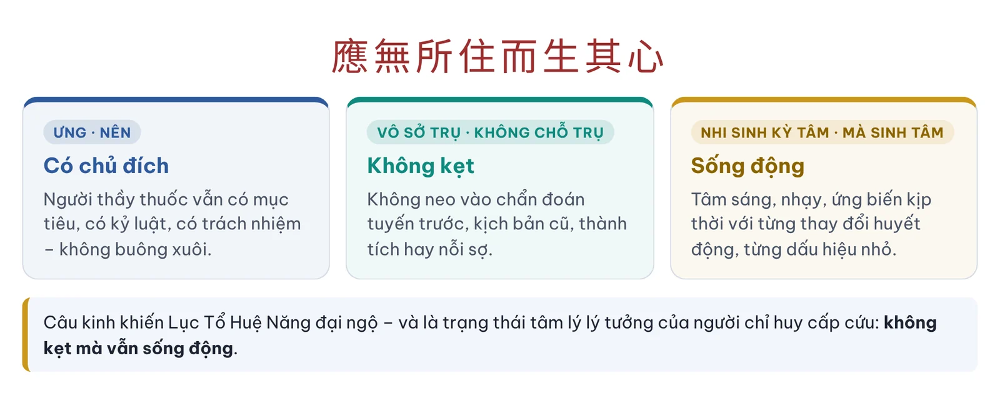
Phân 9 – Nhất tướng vô tướng phân
一相無相分第九 Bốn quả Thanh văn không tự thấy mình đắc quả
I. NGUYÊN VĂN CHỮ HÁN, PHIÊN ÂM VÀ DỊCH NGHĨA
1. Nguyên văn chữ Hán
須菩提。於意云何。須陀洹能作是念。我得須陀洹果不。須菩提言。不也。世尊。何以故。須陀洹名為入流。而無所入。不入色聲香味觸法。是名須陀洹。
須菩提。於意云何。斯陀含能作是念。我得斯陀含果不。須菩提言。不也。世尊。何以故。斯陀含名一往來。而實無往來。是名斯陀含。
須菩提。於意云何。阿那含能作是念。我得阿那含果不。須菩提言。不也。世尊。何以故。阿那含名為不來。而實無不來。是故名阿那含。
須菩提。於意云何。阿羅漢能作是念。我得阿羅漢道不。須菩提言。不也。世尊。何以故。實無有法名阿羅漢。世尊。若阿羅漢作是念。我得阿羅漢道。即為著我人眾生壽者。
世尊。佛說我得無諍三昧。人中最為第一。是第一離欲阿羅漢。世尊。我不作是念。我是離欲阿羅漢。世尊。我若作是念。我得阿羅漢道。世尊則不說須菩提是樂阿蘭那行者。以須菩提實無所行。而名須菩提是樂阿蘭那行。
2. Phiên âm Hán-Việt
Tu-bồ-đề! Ư ý vân hà? Tu-đà-hoàn năng tác thị niệm: “Ngã đắc Tu-đà-hoàn quả” phủ?
Tu-bồ-đề ngôn: Bất dã, Thế Tôn! Hà dĩ cố? Tu-đà-hoàn danh vi Nhập lưu nhi vô sở nhập, bất nhập sắc, thanh, hương, vị, xúc, pháp, thị danh Tu-đà-hoàn.
Tu-bồ-đề! Ư ý vân hà? Tư-đà-hàm năng tác thị niệm: “Ngã đắc Tư-đà-hàm quả” phủ?
Tu-bồ-đề ngôn: Bất dã, Thế Tôn! Hà dĩ cố? Tư-đà-hàm danh Nhất vãng lai nhi thực vô vãng lai, thị danh Tư-đà-hàm.
Tu-bồ-đề! Ư ý vân hà? A-na-hàm năng tác thị niệm: “Ngã đắc A-na-hàm quả” phủ?
Tu-bồ-đề ngôn: Bất dã, Thế Tôn! Hà dĩ cố? A-na-hàm danh vi Bất lai nhi thực vô bất lai, thị cố danh A-na-hàm.
Tu-bồ-đề! Ư ý vân hà? A-la-hán năng tác thị niệm: “Ngã đắc A-la-hán đạo” phủ?
Tu-bồ-đề ngôn: Bất dã, Thế Tôn! Hà dĩ cố? Thực vô hữu pháp danh A-la-hán. Thế Tôn! Nhược A-la-hán tác thị niệm: “Ngã đắc A-la-hán đạo”, tức vi trước ngã, nhân, chúng sinh, thọ giả.
Thế Tôn! Phật thuyết ngã đắc Vô tranh tam-muội, nhân trung tối vi đệ nhất, thị đệ nhất ly dục A-la-hán. Thế Tôn! Ngã bất tác thị niệm: “Ngã thị ly dục A-la-hán”. Thế Tôn! Ngã nhược tác thị niệm: “Ngã đắc A-la-hán đạo”, Thế Tôn tắc bất thuyết Tu-bồ-đề thị nhạo A-lan-na hạnh giả. Dĩ Tu-bồ-đề thực vô sở hành, nhi danh Tu-bồ-đề thị nhạo A-lan-na hạnh.
3. Dịch nghĩa
“Này Tu-bồ-đề! Ý ông nghĩ sao? Bậc Tu-đà-hoàn có thể khởi niệm rằng: 'Ta đã chứng được quả Tu-đà-hoàn' chăng?”
Trưởng lão Tu-bồ-đề bạch: “Bạch Thế Tôn, không! Vì cớ sao? Tu-đà-hoàn gọi là Nhập lưu (bước vào dòng Thánh), nhưng thật ra không có chỗ nào để nhập; chẳng dính mắc vào sắc, thanh, hương, vị, xúc, pháp, nên tạm gọi là Tu-đà-hoàn.
– Này Tu-bồ-đề! Bậc Tư-đà-hàm có thể khởi niệm rằng: 'Ta đã chứng được quả Tư-đà-hàm' chăng?
– Bạch Thế Tôn, không! Vì cớ sao? Tư-đà-hàm gọi là Nhất vãng lai (còn trở lại cõi này một lần nữa), nhưng thật ra chẳng có đi hay lại, nên tạm gọi là Tư-đà-hàm.
– Này Tu-bồ-đề! Bậc A-na-hàm có thể khởi niệm rằng: 'Ta đã chứng được quả A-na-hàm' chăng?
– Bạch Thế Tôn, không! Vì cớ sao? A-na-hàm gọi là Bất lai (không còn trở lại dục giới), nhưng thật ra chẳng có gì là không trở lại, cho nên tạm gọi là A-na-hàm.
– Này Tu-bồ-đề! Bậc A-la-hán có thể khởi niệm rằng: 'Ta đã chứng được đạo A-la-hán' chăng?
– Bạch Thế Tôn, không! Vì cớ sao? Thật chẳng có pháp cố định nào gọi là A-la-hán. Bạch Thế Tôn, nếu bậc A-la-hán khởi niệm rằng: 'Ta đã đắc đạo A-la-hán', tức là liền mắc kẹt vào ngã, nhân, chúng sinh, thọ giả.
Bạch Thế Tôn! Phật khen con chứng được Vô tranh tam-muội (chánh định không tranh chấp), trong loài người là bậc nhất, là vị A-la-hán ly dục hàng đầu. Bạch Thế Tôn, nhưng con không hề khởi niệm rằng: 'Tôi là vị A-la-hán ly dục'. Bạch Thế Tôn, nếu con khởi niệm rằng con đã đắc đạo A-la-hán, thì Đức Thế Tôn đã chẳng khen ngợi Tu-bồ-đề là người ưa thích hạnh tịch tịnh A-lan-na. Chính vì Tu-bồ-đề thật sự không có chỗ chấp vào chỗ thực hành của mình, nên mới được gọi là ưa hạnh A-lan-na.”
II. GIẢI THÍCH NGHĨA LÝ CỐT TỦY
Phân 9 – “Nhất tướng vô tướng” – dùng bốn quả vị Thanh văn để phá một kiểu chấp tinh vi: chấp vào chính thành tựu tu tập của mình.
1. Bốn quả và bốn lần “thực vô”
Đức Phật lần lượt hỏi: bậc Tu-đà-hoàn (srotāpanna, nhập lưu) có nghĩ “ta đắc quả Tu-đà-hoàn” không? Tu-bồ-đề đáp không – vì “nhập lưu” mà thật không nhập vào đâu, không nhập sắc, thanh, hương, vị, xúc, pháp. Tương tự với Tư-đà-hàm (nhất vãng lai) mà thật không có qua lại, A-na-hàm (bất lai) mà thật không có “không trở lại”, và A-la-hán mà thật không có pháp nào gọi là A-la-hán [6]. Mỗi tên gọi chỉ một mức độ đoạn trừ phiền não, không phải một danh hiệu để sở hữu.
2. Khởi niệm “ta đắc” là bốn tướng trở lại
Tu-bồ-đề nói: nếu A-la-hán nghĩ “ta đắc đạo A-la-hán”, tức là còn chấp ngã, nhân, chúng sinh, thọ giả. Chỗ tinh tế của phân này là: chính sự tiến bộ thật trên đường tu cũng có thể trở thành điểm tựa mới cho bản ngã. Thiền sư Suzuki gọi phẩm chất ngược lại là “tâm người mới bắt đầu” – rộng mở vì không coi mình đã biết [67].
3. Vô tranh tam-muội và hạnh A-lan-na
Tu-bồ-đề lấy chính mình làm ví dụ: Phật khen ngài đắc vô tranh tam-muội (araṇā-samādhi), là bậc ly dục đệ nhất, nhưng ngài không nghĩ “ta là A-la-hán ly dục”. Chính vì ngài không thấy mình có gì để giữ, Phật mới gọi ngài là người “ưa hạnh A-lan-na” – hạnh tịch tĩnh, không tranh chấp [2,3]. Không tranh với người, cũng không tranh với chính hình ảnh của mình.
III. PHƯƠNG PHÁP HÀNH TRÌ: QUÉT SẠCH TÂM CHỨNG ĐẮC
- Nhận ra “cái tôi tâm linh”: khi thấy mình bình tĩnh hơn, kỷ luật hơn trước, để ý xem có ý nghĩ “mình hơn người” đi kèm không.
- Thực hành vô tranh: trong một cuộc tranh luận chuyên môn, chỉ trình bày dữ kiện và lập luận; không cố thắng để giữ thể diện.
- Làm xong thì để yên: sau một việc tốt, không kể lại để được ghi nhận.
IV. ỨNG DỤNG: KHI THÀNH TỰU TRỞ THÀNH RỦI RO
1. “Quả vị” chuyên môn và tâm thế người mới
Thâm niên, học vị và những ca khó đã cứu được là thành tựu thật. Nhưng khi chúng trở thành danh tính, người thầy thuốc dễ bỏ qua nhận xét của điều dưỡng, của người bệnh, hay dữ kiện không khớp với kinh nghiệm. Sự tự tin quá mức vào nhận định của mình là một yếu tố được ghi nhận trong sai sót chẩn đoán [33,68]. Giữ tâm thế người mới là chủ động tìm phản hồi về chẩn đoán của chính mình – biết ca nào mình đúng, ca nào mình sai.
2. Sau đợt đánh giá: an toàn không có “về đích”
Đạt một mức chứng nhận cao là dấu mốc, không phải đích đến. Các tổ chức tin cậy cao được mô tả là luôn “bận tâm với thất bại” và cảnh giác với sự tự mãn ngay cả khi đang thành công [69]. Những hàng rào an toàn như nhận diện người bệnh bằng hai thông tin hay kiểm tra kép thuốc nguy cơ cao dễ bị nới lỏng khi tổ chức nghĩ rằng mình đã an toàn [42,70]. Tình huống dưới đây cho thấy điều đó diễn ra nhanh thế nào.
3. Lãnh đạo vô tranh
Người lãnh đạo không tranh hơn thua với cấp dưới tạo ra không khí để mọi người nói thật về sai sót và nguy cơ. Khi xảy ra một sự cố suýt xảy ra, câu hỏi đầu tiên không phải “ai sai?” mà là “điều gì giúp chúng ta phát hiện kịp, và lỗ hổng nào cần bịt?” [37,71].
TÌNH HUỐNGSau khi “về đích” (mô phỏng từ thực tế)
Một bệnh viện vừa đạt mức chất lượng cao trong đợt đánh giá. Ba tháng sau, giám sát ngẫu nhiên cho thấy tỷ lệ nhận diện người bệnh bằng hai thông tin trước khi lấy máu giảm từ 95% xuống 78%. Một sự cố lấy nhầm mẫu máu của hai người bệnh cùng họ tên xảy ra và chỉ được phát hiện nhờ kết quả nhóm máu bất thường. Trong buổi giao ban, giám đốc nói: “Chúng ta đã nghĩ mình về đích. Đó là lúc an toàn bắt đầu rời đi.”
Tổ chức tin cậy cao luôn bận tâm với thất bại ngay cả khi đang thành công [69]. Bậc A-la-hán chân chính không khởi niệm “ta đã đắc quả”; một bệnh viện an toàn không khởi niệm “ta đã an toàn”.
ĐIỂM THEN CHỐTĐiểm then chốt
- Bốn quả Thanh văn đều không tự thấy mình đắc quả; khởi niệm “ta đắc” là chấp bốn tướng.
- “Cái tôi chuyên môn” là dạng chấp quả vị của người thầy thuốc; tâm thế “người mới bắt đầu” là thuốc giải [67].
- Vô tranh tam-muội: lãnh đạo không tranh hơn thua tạo nên an toàn tâm lý cho cả tập thể.
SUY NGẪMCâu hỏi suy ngẫm
1. Sau một thành tích lớn gần đây, khoa anh/chị đã “nới lỏng” điều gì mà không nhận ra?
2. Lần cuối anh/chị học được điều quan trọng từ một điều dưỡng trẻ hay một người bệnh là khi nào?
Phân 10 – Trang nghiêm tịnh độ phân
莊嚴淨土分第十 Ưng vô sở trụ nhi sinh kỳ tâm
I. NGUYÊN VĂN CHỮ HÁN, PHIÊN ÂM VÀ DỊCH NGHĨA
1. Nguyên văn chữ Hán
佛告須菩提。於意云何。如來昔在然燈佛所。於法有所得不。
不也。世尊。如來在然燈佛所。於法實無所得。
須菩提。於意云何。菩薩莊嚴佛土不。
不也。世尊。何以故。莊嚴佛土者。則非莊嚴。是名莊嚴。
是故須菩提。諸菩薩摩訶薩。應如是生清淨心。不應住色生心。不應住聲香味觸法生心。應無所住而生其心。
須菩提。譬如有人。身如須彌山王。於意云何。是身為大不。
須菩提言。甚大。世尊。何以故。佛說非身。是名大身。
2. Phiên âm Hán-Việt
Phật cáo Tu-bồ-đề: Ư ý vân hà? Như Lai tích tại Nhiên Đăng Phật sở, ư pháp hữu sở đắc phủ?
– Bất dã, Thế Tôn! Như Lai tại Nhiên Đăng Phật sở, ư pháp thực vô sở đắc.
– Tu-bồ-đề! Ư ý vân hà? Bồ-tát trang nghiêm Phật độ phủ?
– Bất dã, Thế Tôn! Hà dĩ cố? Trang nghiêm Phật độ giả, tắc phi trang nghiêm, thị danh trang nghiêm.
– Thị cố Tu-bồ-đề, chư Bồ-tát Ma-ha-tát ưng như thị sinh thanh tịnh tâm: bất ưng trụ sắc sinh tâm, bất ưng trụ thanh, hương, vị, xúc, pháp sinh tâm, ưng vô sở trụ nhi sinh kỳ tâm. Tu-bồ-đề! Thí như hữu nhân, thân như Tu-di sơn vương. Ư ý vân hà? Thị thân vi đại phủ?
Tu-bồ-đề ngôn: Thậm đại, Thế Tôn! Hà dĩ cố? Phật thuyết phi thân, thị danh đại thân.
3. Dịch nghĩa
Đức Phật bảo Tu-bồ-đề: “Ý ông nghĩ sao? Thuở xưa, khi Như Lai ở chỗ Đức Phật Nhiên Đăng, đối với pháp có chỗ chứng đắc nào chăng?”
– Bạch Thế Tôn, không! Như Lai ở chỗ Đức Phật Nhiên Đăng, đối với pháp thật không có chỗ chứng đắc.
– Này Tu-bồ-đề, ý ông nghĩ sao? Bồ-tát có trang nghiêm cõi Phật chăng?
– Bạch Thế Tôn, không! Vì sao? Trang nghiêm cõi Phật thì chẳng phải trang nghiêm, ấy gọi là trang nghiêm.
– Vì thế, này Tu-bồ-đề, các vị Bồ-tát Ma-ha-tát nên sinh tâm thanh tịnh như thế này: không nên trụ nơi sắc mà sinh tâm, không nên trụ nơi thanh, hương, vị, xúc, pháp mà sinh tâm; nên không trụ vào đâu cả mà sinh tâm ấy. Này Tu-bồ-đề, ví như có người thân như núi chúa Tu-di. Ý ông nghĩ sao, thân ấy có lớn chăng?
– Rất lớn, bạch Thế Tôn! Vì sao? Phật nói chẳng phải thân, ấy gọi là thân lớn.
II. GIẢI THÍCH NGHĨA LÝ CỐT TỦY
Phân 10 chứa câu kinh nổi tiếng nhất của bộ kinh – “Ưng vô sở trụ nhi sinh kỳ tâm”. Theo Pháp Bảo Đàn Kinh, Lục Tổ Huệ Năng khi còn là người kiếm củi nghe một vị khách tụng Kinh Kim Cương thì tâm liền khai ngộ; về sau, nghe Ngũ Tổ giảng đến câu này, ngài đại ngộ [18].
1. “Ư pháp thực vô sở đắc”
Đức Phật hỏi: thuở xưa ở chỗ Phật Nhiên Đăng, Như Lai có đắc pháp gì không? Tu-bồ-đề đáp: thật không có gì để đắc. Giác ngộ không phải một vật được trao tay từ thầy sang trò; nó là sự nhận ra điều vốn có khi các chấp trước rơi rụng [19]. Ý này chuẩn bị cho Phân 17, nơi chuyện thọ ký ở chỗ Phật Nhiên Đăng được nói rõ hơn.
2. “Trang nghiêm Phật độ, tắc phi trang nghiêm, thị danh trang nghiêm”
Đây là cú thức ba vế đầy đủ đầu tiên trong kinh: A → tức phi A → thị danh A. Bồ-tát vẫn làm đẹp cõi Phật – giáo hóa, xây dựng, phụng sự (A); nhưng nếu còn thấy mình có công làm đẹp, thấy cõi này tịnh cõi kia uế, thì đó chưa phải trang nghiêm thật (phi A); trang nghiêm thật là tâm thanh tịnh, từ đó mọi việc làm đẹp mới đúng nghĩa (thị danh A). Các nhà chú giải nhấn mạnh: “tâm tịnh thì cõi Phật tịnh” [3,15].
3. “Ưng vô sở trụ nhi sinh kỳ tâm”
Câu kinh có hai vế không tách rời. Vô sở trụ: không để tâm dính vào sắc, thanh, hương, vị, xúc, pháp. Nhi sinh kỳ tâm: nhưng tâm vẫn sinh khởi – sáng suốt, nhạy bén, có lòng từ – chứ không rơi vào vô cảm. Thích Nhất Hạnh diễn giải đây là tâm tự do, không bị điều kiện hóa, nên có thể đáp ứng trọn vẹn với tình huống trước mặt [13].
4. Thân lớn như núi Tu-di
Thân lớn đến đâu cũng là do duyên hợp, có giới hạn – “phi thân”; nên chỉ tạm gọi là “thân lớn”. Bản Phạn nói rõ hơn: thân ấy được gọi là lớn vì nó “không phải là một hiện hữu” (abhāva) theo nghĩa tự tính [2,12].
III. PHƯƠNG PHÁP HÀNH TRÌ: THẤY CHỖ TÂM ĐANG TRỤ
- Tìm điểm trụ: khi bực bội, tự ái hay lo âu, hỏi: tâm mình đang bám vào hình ảnh nào, lời nói nào, lợi ích nào?
- Không trụ mà vẫn sinh tâm: buông sự dính mắc không có nghĩa là bớt quan tâm; ngược lại, tâm không bị kẹt mới có chỗ cho sự chú ý trọn vẹn đến người trước mặt.
- Làm hết lòng, buông kết quả: nỗ lực cao nhất trong việc của mình, rồi để kết quả tự đến theo nhân duyên.
IV. ỨNG DỤNG: TÂM KHÔNG KẸT TRONG PHÒNG CẤP CỨU VÀ TRONG MÔI TRƯỜNG BỆNH VIỆN
1. Không trụ vào nhãn chẩn đoán có sẵn
Chẩn đoán của tuyến trước, kết quả xét nghiệm đầu tiên hay ấn tượng ban đầu là những “trần” mà tâm dễ trụ vào – hiện tượng neo nhận định đã được mô tả rõ trong y văn về sai sót chẩn đoán [33,72]. “Vô sở trụ” ở đây không phải là bỏ qua thông tin tuyến trước, mà là giữ nó như một giả thuyết cần kiểm chứng. “Sinh kỳ tâm” là sự chú ý tỉnh táo để thấy dấu hiệu nhỏ không khớp – như trong tình huống viêm màng não do Streptococcus suis dưới đây.
2. “Trang nghiêm” môi trường bệnh viện
5S và môi trường sạch, gọn là nền tảng của kiểm soát nhiễm khuẩn và an toàn [28,45]. Nhưng nếu chỉ dọn dẹp khi có đoàn kiểm tra, đó là “trang nghiêm” theo tướng. Một khoa trang nghiêm thật là nơi mỗi vật dụng được sắp đặt để người làm việc dễ làm đúng – xe cấp cứu đủ thuốc vào lúc 3 giờ sáng chứ không chỉ vào ngày đánh giá.
3. Người lãnh đạo và “thân Tu-di”
Chức vụ, quy mô đơn vị, danh tiếng là những “thân lớn” dễ khiến người quản lý đồng nhất mình với chúng. “Phật thuyết phi thân” nhắc rằng uy tín thật nằm ở năng lực kết nối và nâng đỡ người khác làm việc an toàn, không nằm ở kích thước của vị trí.
TÌNH HUỐNGChẩn đoán tuyến trước và một dấu hiệu nhỏ (mô phỏng từ thực tế)
Một người bệnh nam 55 tuổi được chuyển từ tuyến dưới với chẩn đoán “viêm phổi”, sốt 39,5°C, lơ mơ. Bác sĩ cấp cứu không trụ vào chẩn đoán tuyến trước: khám thấy cổ hơi cứng, người bệnh nghe kém một bên tai; khai thác người nhà biết ông ăn tiết canh lợn bốn ngày trước. Chọc dịch não tủy: dịch đục, bạch cầu tăng cao chủ yếu là đa nhân trung tính, protein tăng, glucose giảm rõ; nhuộm Gram thấy cầu khuẩn Gram dương đứng đôi hoặc chuỗi ngắn. Kháng sinh được dùng ngay sau khi lấy dịch não tủy, không chờ kết quả cấy. Cấy dịch não tủy sau đó mọc Streptococcus suis – căn nguyên viêm màng não mủ quen thuộc ở người trưởng thành tại Việt Nam, thường liên quan đến tiếp xúc hoặc ăn sản phẩm từ lợn chưa nấu chín và hay để lại di chứng điếc.
“Ưng vô sở trụ nhi sinh kỳ tâm” trong phòng cấp cứu: không trụ vào nhãn có sẵn, nên tâm sáng để thấy dấu hiệu nhỏ. Cũng chính Phân 10 cảnh báo về “trang nghiêm” hình thức: một khoa cấp cứu sạch đẹp khi có đoàn kiểm tra chưa phải là khoa an toàn; khoa an toàn là nơi tâm người thầy thuốc luôn tỉnh.
ĐIỂM THEN CHỐTĐiểm then chốt
- “Trang nghiêm Phật độ, tức phi trang nghiêm”: trang nghiêm thật là sự thanh tịnh bên trong, không phải hình thức bên ngoài.
- “Ưng vô sở trụ nhi sinh kỳ tâm” – câu kinh khiến Lục Tổ đại ngộ – là tâm không kẹt mà vẫn sống động, ứng biến.
- Thân to như núi Tu-di vẫn là “phi thân”: danh vị lớn đến đâu cũng do duyên hợp.
SUY NGẪMCâu hỏi suy ngẫm
1. Một chẩn đoán “có sẵn” nào từng khiến anh/chị suýt bỏ qua dấu hiệu quan trọng?
2. 5S của khoa anh/chị đang là “trang nghiêm” để xem hay “trang nghiêm” để làm việc an toàn?
Chương 10
TÁN THÁN DIỆU LỰC BÁT-NHÃ (PHÂN 11–13)
Ba phân 11, 12, 13 tán thán công năng của kinh: phúc đức thọ trì bốn câu kệ vượt hơn bố thí bảy báu đầy cát sông Hằng (Phân 11); nơi nào có kinh, nơi đó như có Phật (Phân 12); và Phân 13 – nơi Đức Phật đặt tên cho bộ kinh, đồng thời ngay lập tức phá chấp vào chính cái tên ấy: “Bát-nhã Ba-la-mật tức phi Bát-nhã Ba-la-mật”. Phân 13 cũng là nơi hình ảnh vi trần – thế giới xuất hiện lần đầu, báo trước Phân 30. Bài học cho người làm chất lượng: tôn trọng nguyên tắc cốt lõi, giá trị của đào tạo, và không chấp vào danh xưng chứng nhận.
Phân 11 – Vô vi phúc thắng phân
無為福勝分第十一 Phúc vô vi hơn phúc hữu vi
I. NGUYÊN VĂN CHỮ HÁN, PHIÊN ÂM VÀ DỊCH NGHĨA
1. Nguyên văn chữ Hán
須菩提。如恆河中所有沙數。如是沙等恆河。於意云何。是諸恆河沙。寧為多不。
須菩提言。甚多。世尊。但諸恆河尚多無數。何況其沙。
須菩提。我今實言告汝。若有善男子。善女人。以七寶滿爾所恆河沙數三千大千世界。以用布施。得福多不。
須菩提言。甚多。世尊。
佛告須菩提。若善男子。善女人。於此經中。乃至受持四句偈等。為他人說。而此福德。勝前福德。
2. Phiên âm Hán-Việt
Tu-bồ-đề! Như Hằng hà trung sở hữu sa số, như thị sa đẳng Hằng hà. Ư ý vân hà? Thị chư Hằng hà sa ninh vi đa phủ?
Tu-bồ-đề ngôn: Thậm đa, Thế Tôn! Đãn chư Hằng hà thượng đa vô số, hà huống kỳ sa!
Tu-bồ-đề! Ngã kim thực ngôn cáo nhữ: Nhược hữu thiện nam tử, thiện nữ nhân, dĩ thất bảo mãn nhĩ sở Hằng hà sa số tam thiên đại thiên thế giới, dĩ dụng bố thí, đắc phúc đa phủ?
Tu-bồ-đề ngôn: Thậm đa, Thế Tôn!
Phật cáo Tu-bồ-đề: Nhược thiện nam tử, thiện nữ nhân, ư thử kinh trung nãi chí thọ trì tứ cú kệ đẳng, vị tha nhân thuyết, nhi thử phúc đức thắng tiền phúc đức.
3. Dịch nghĩa
“Này Tu-bồ-đề! Như số cát có trong sông Hằng, lại có số lượng sông Hằng nhiều như số hạt cát ấy. Ý ông nghĩ sao? Số cát trong ngần ấy con sông Hằng có nhiều chăng?”
Trưởng lão Tu-bồ-đề bạch: “Bạch Thế Tôn, rất nhiều! Chỉ riêng số lượng các con sông Hằng ấy thôi đã nhiều vô số kể rồi, huống chi là cát trong những con sông ấy!”
“Này Tu-bồ-đề! Nay Ta lấy lời chân thật bảo cho ông biết: Nếu có người thiện nam, người thiện nữ đem bảy báu chứa đầy khắp số ba nghìn đại thiên thế giới nhiều như số cát của tất cả các con sông Hằng ấy ra để bố thí, người ấy được phúc nhiều chăng?”
Trưởng lão Tu-bồ-đề bạch: “Bạch Thế Tôn, rất nhiều!”
Đức Phật bảo Tu-bồ-đề: “Nếu có người thiện nam, người thiện nữ ở trong kinh này, cho đến chỉ thọ trì một bài kệ bốn câu, rồi vì người khác mà giảng nói, thì phúc đức này vượt trội hơn phúc đức trước kia gấp bội phần.”
II. GIẢI THÍCH NGHĨA LÝ CỐT TỦY
1. Một phép so sánh vượt mọi con số
Đức Phật dựng một hình ảnh có tính toán học: lấy mỗi hạt cát sông Hằng làm thành một sông Hằng, rồi đếm tổng số cát của tất cả những sông Hằng ấy; đem bảy báu đầy chừng ấy thế giới mà bố thí. Tu-bồ-đề đáp: phúc ấy rất nhiều. Phật nói: nếu có người thọ trì dù chỉ bốn câu kệ trong kinh này và vì người khác giảng nói, phúc ấy còn hơn [6]. Phép so sánh phóng đại có chủ ý: một con số lớn đến đâu vẫn là con số; còn cái thấy giải thoát thì không thuộc phạm trù đếm được.
2. Vì sao “vô vi phúc thắng”
Tên phân – “Vô vi phúc thắng” – nói gọn ý chính: phúc vô vi hơn phúc hữu vi. Phúc hữu vi nuôi thân mạng trong một thời gian, rồi theo luật vô thường mà cạn. Phúc của trí tuệ – thấy được tính Không của các pháp, không còn bị bốn tướng dẫn dắt – tác động vào gốc rễ của khổ đau là vô minh [3,19]. Đây là lần so sánh thứ hai sau Phân 8, và lần này đối tượng so sánh lớn hơn rất nhiều – như thể kinh muốn nói: dù ta tăng quy mô vật chất đến đâu, kết luận vẫn không đổi.
3. Bốn câu kệ là gì?
Kinh không chỉ định bốn câu nào. Truyền thống thường nêu những bài kệ quen thuộc như “Phàm sở hữu tướng…” (Phân 5) hay “Nhất thiết hữu vi pháp…” (Phân 32), nhưng tinh thần của kinh là: bất kỳ đoạn nào giúp người nghe phá được một chấp trước đều có giá trị như “bốn câu kệ” [4].
III. PHƯƠNG PHÁP HÀNH TRÌ: TRAO ĐI ĐIỀU KHÔNG ĐẾM ĐƯỢC
- Chọn một “câu kệ” cho tuần này: một nguyên tắc đơn giản mà mình thật sự sống được, và chia sẻ nó với một người đang cần.
- Cho vật chất kèm cho hiểu biết: khi giúp người khó khăn, kết hợp hỗ trợ vật chất với thông tin, kỹ năng giúp họ tự đứng vững.
- Nhận diện giới hạn của cái đếm được: nhìn lại thời gian trong ngày dành cho những thứ “đo được” và những thứ không đo được như lắng nghe, tĩnh lặng.
IV. ỨNG DỤNG: GIÁ TRỊ KHÔNG GHI ĐƯỢC VÀO BẢNG KÊ
1. Vô úy thí cho người bệnh truyền nhiễm mạn tính
Với người nhiễm HIV, viêm gan virus mạn hay lao kháng thuốc, thuốc là điều kiện cần nhưng chưa đủ. Nỗi sợ, mặc cảm và kỳ thị ảnh hưởng trực tiếp đến việc tuân thủ điều trị lâu dài. Thông tin đúng, được truyền đạt với sự thấu cảm – chẳng hạn về khả năng sống khỏe mạnh khi điều trị ARV hiệu quả – là một phần của điều trị, không phải phần phụ thêm. Tình huống dưới đây cho thấy hai mươi phút tư vấn có thể quyết định sự gắn bó điều trị suốt đời.
2. Đào tạo y khoa liên tục là “vì người khác mà nói”
Kinh nghiệm lâm sàng – kể cả những bài học từ sai lầm – chỉ thành phúc chung khi được truyền lại. Hoạt động đào tạo y khoa liên tục, hội chẩn, sinh hoạt chuyên đề và kèm cặp tại giường là kênh để một người thầy thuốc bảo vệ những người bệnh mà mình sẽ không bao giờ trực tiếp gặp. Để đào tạo tạo ra thay đổi thật, cần đo đến cấp độ hành vi và kết quả, không dừng ở số giờ tham dự [73].
3. Cân bằng giữa đầu tư vật chất và đầu tư năng lực
Ngân sách cho thiết bị và cơ sở vật chất dễ được nhìn thấy và ghi nhận; ngân sách cho đào tạo, thời gian tư vấn, thời gian kèm cặp thì khó thấy hơn. Phân 11 nhắc người quản lý nhìn cả hai – và bảo vệ những khoản “vô vi” ấy trong kế hoạch hằng năm.
TÌNH HUỐNGHai mươi phút cho một người vừa biết mình nhiễm HIV (mô phỏng từ thực tế)
Một nam thanh niên 24 tuổi nhận kết quả khẳng định nhiễm HIV. Anh ngồi lặng, rồi hỏi: “Em còn sống được bao lâu? Em có được lấy vợ không?” Bác sĩ phòng khám ngoại trú dành hai mươi phút – dài hơn nhiều so với định mức – để giải thích: điều trị ARV sớm và tuân thủ giúp người nhiễm HIV có tuổi thọ gần như người không nhiễm; khi tải lượng virus được ức chế bền vững – dưới 200 bản sao/mL, ngưỡng dùng trong các nghiên cứu làm cơ sở cho thông điệp này – HIV không lây truyền qua đường tình dục (thông điệp K=K: “Không phát hiện = Không lây truyền”, quốc tế gọi là U=U) [74]. Sáu tháng sau, anh quay lại tái khám với tải lượng virus dưới ngưỡng phát hiện và nụ cười khác hẳn.
Thuốc ARV là “tài thí”; kiến thức là “pháp thí”; hai mươi phút xua tan nỗi sợ là “vô úy thí” – phúc đức vô vi không ghi được vào bảng kê dịch vụ, nhưng quyết định sự tuân thủ điều trị suốt đời của người bệnh.
ĐIỂM THEN CHỐTĐiểm then chốt
- Phúc vô vi (trí tuệ, an lạc nội tâm) thù thắng hơn phúc hữu vi (của cải bố thí đầy cát sông Hằng).
- Với người bệnh mạn tính, chuyển hóa nỗi sợ là một phần của điều trị.
- Đào tạo y khoa liên tục là trao “bốn câu kệ” cho đồng nghiệp – phúc đức lan rộng không thể đo lường.
SUY NGẪMCâu hỏi suy ngẫm
1. Người bệnh nào gần đây cần anh/chị “vô úy thí” hơn là thêm một xét nghiệm?
2. Hệ thống của khoa có ghi nhận và bảo vệ thời gian tư vấn cho người bệnh không?
Phân 12 – Tôn trọng chính giáo phân
尊重正教分第十二 Nơi có kinh là nơi có Phật
I. NGUYÊN VĂN CHỮ HÁN, PHIÊN ÂM VÀ DỊCH NGHĨA
1. Nguyên văn chữ Hán
復次。須菩提。隨說是經。乃至四句偈等。當知此處。一切世間天人阿修羅。皆應供養。如佛塔廟。何況有人。盡能受持讀誦。須菩提。當知是人。成就最上第一希有之法。若是經典所在之處。則為有佛。若尊重弟子。
2. Phiên âm Hán-Việt
Phục thứ, Tu-bồ-đề! Tùy thuyết thị kinh, nãi chí tứ cú kệ đẳng, đương tri thử xứ, nhất thiết thế gian thiên, nhân, a-tu-la, giai ưng cúng dường, như Phật tháp miếu. Hà huống hữu nhân tận năng thọ trì độc tụng!
Tu-bồ-đề! Đương tri thị nhân, thành tựu tối thượng đệ nhất hy hữu chi pháp. Nhược thị kinh điển sở tại chi xứ, tắc vi hữu Phật, nhược tôn trọng đệ tử.
3. Dịch nghĩa
“Lại nữa, này Tu-bồ-đề! Tùy theo nơi chốn mà giảng nói kinh này, cho đến chỉ một bài kệ bốn câu, nên biết nơi chốn ấy, tất cả thế gian cõi trời, cõi người, cõi a-tu-la đều nên đến cúng dường, cung kính như bảo tháp, chùa miếu của Phật. Huống chi có người lại có thể thọ trì, đọc tụng trọn vẹn kinh này!
Này Tu-bồ-đề! Nên biết người ấy đã thành tựu pháp mầu tối thượng, bậc nhất, hiếm có nhất. Nếu nơi nào có kinh điển này hiện diện, tức là nơi ấy có Phật, hoặc có các đệ tử được tôn kính của Phật.”
II. GIẢI THÍCH NGHĨA LÝ CỐT TỦY
Phân 12 – “Tôn trọng chính giáo” – chuyển từ so sánh phúc đức sang một khẳng định về không gian và con người: nơi nào kinh được giảng nói và thực hành, nơi ấy đáng tôn kính.
1. “Tùy thuyết thị kinh”
“Tùy thuyết thị kinh, nãi chí tứ cú kệ đẳng, đương tri thử xứ, nhất thiết thế gian thiên nhân a-tu-la giai ưng cúng dường như Phật tháp miếu” – bất cứ nơi nào giảng nói kinh này, dù chỉ bốn câu kệ, nơi ấy trời, người, a-tu-la đều nên cúng dường như tháp miếu của Phật [6]. Chữ “tùy” cho thấy sự tôn nghiêm không đến từ địa điểm được dựng sẵn, mà đến từ việc tuệ giác đang được trao truyền ở đó.
2. Người thọ trì
Kinh nói tiếp: huống chi người thọ trì đọc tụng trọn vẹn, người ấy thành tựu pháp tối thượng, hy hữu bậc nhất. Lục Tổ giải “thọ trì” không phải chỉ là cầm kinh tụng đọc, mà là tâm hành theo đúng nghĩa kinh [19]. Điều được tôn trọng không phải là cuốn kinh như một vật thể, mà là con người đang sống theo nó.
3. “Kinh điển sở tại chi xứ, tắc vi hữu Phật”
Nơi có kinh điển tức là có Phật, và có những đệ tử đáng kính. Câu này nối với ý Pháp thân ở Phân 5: Phật không chỉ là sắc thân lịch sử đã nhập diệt, mà là tuệ giác còn hiện diện ở nơi tuệ giác được thực hành [3].
III. PHƯƠNG PHÁP HÀNH TRÌ: TỪ ĐỌC TỤNG ĐẾN THỌ TRÌ
- Đọc tụng: dành vài phút mỗi ngày đọc chậm một đoạn kinh, để tâm lắng xuống theo từng câu chữ.
- Thọ: chọn một câu và hiểu nó trong hoàn cảnh của mình hôm nay.
- Trì: khi gặp một tình huống thử thách – một lời chê, một cám dỗ – nhớ lại câu ấy và hành xử theo nó. Không gian làm việc của mình trở thành “đạo tràng” ngay lúc đó.
IV. ỨNG DỤNG: NƠI NGUYÊN TẮC ĐƯỢC SỐNG CÙNG
1. Buồng bệnh là không gian cần được tôn trọng
Kinh nói nơi có kinh đáng được tôn kính như tháp miếu. Trong y khoa, buồng bệnh, phòng mổ, đơn vị hồi sức là nơi sự sống được gìn giữ. Tôn trọng không gian ấy được thể hiện bằng những điều rất cụ thể: giữ yên tĩnh, bảo vệ sự riêng tư của người bệnh, tuân thủ vô khuẩn, giữ trật tự cho thiết bị cấp cứu.
2. Nguyên tắc an toàn cốt lõi – “chính giáo” của nghề
Mỗi bệnh viện cần xác định một số nguyên tắc an toàn không thương lượng – chẳng hạn nhận diện người bệnh bằng ít nhất hai thông tin, kiểm tra kép thuốc nguy cơ cao, vệ sinh tay, xác nhận vị trí phẫu thuật. Các nguyên tắc này có mặt trong Mục tiêu an toàn người bệnh quốc tế và trong Bộ tiêu chí chất lượng bệnh viện Việt Nam [48,70]. “Tôn trọng chính giáo” là không đi tắt các bước ấy vì vội, vì quá tải hay vì tự tin vào kinh nghiệm.
3. Người dẫn đầu là “nơi có kinh”
Văn hóa an toàn lan truyền qua hành vi của người có uy tín hơn là qua khẩu hiệu. Hướng dẫn vệ sinh tay của WHO xếp sự làm gương của nhân viên cấp cao vào nhóm yếu tố ảnh hưởng đến tuân thủ, bên cạnh cơ sở vật chất, đào tạo và phản hồi dữ liệu [27]. Tình huống dưới đây kể về hai khoa có cùng điều kiện cơ sở vật chất nhưng khác nhau ở bàn tay của người trưởng khoa.
TÌNH HUỐNGBàn tay của trưởng khoa (mô phỏng từ thực tế)
Trong một đợt giám sát, khoa Kiểm soát nhiễm khuẩn nhận thấy tỷ lệ tuân thủ vệ sinh tay ở hai khoa nội có cùng điều kiện cơ sở vật chất chênh nhau gần 30 điểm phần trăm. Quan sát kỹ buổi đi buồng: ở khoa có tỷ lệ cao, trưởng khoa luôn sát khuẩn tay trước và sau khi chạm vào người bệnh – lặng lẽ, không cần nhắc; cả đoàn bác sĩ trẻ làm theo. Ở khoa còn lại, trưởng khoa thường “quên” – và cả đoàn cũng quên.
“Tùy thuyết thị kinh… đương tri thử xứ, nhất thiết thế gian thiên nhân a-tu-la giai ưng cúng dường như Phật tháp miếu” – nơi nào có kinh được thực hành, nơi đó đáng tôn kính. Nơi nào nguyên tắc an toàn cốt lõi được người đứng đầu sống cùng, nơi đó văn hóa an toàn tự lan tỏa [27,66].
ĐIỂM THEN CHỐTĐiểm then chốt
- Tôn trọng chính giáo: nơi có kinh là nơi có Phật – nơi có nguyên tắc an toàn được thực hành là nơi an toàn.
- Môi trường chăm sóc là “nơi linh thiêng” của sự sống: sạch sẽ, trật tự, tôn trọng.
- Người dẫn đầu truyền lửa bằng hành vi, không bằng khẩu hiệu.
SUY NGẪMCâu hỏi suy ngẫm
1. Nhân viên trẻ của khoa đang học theo hành vi nào của anh/chị – kể cả những hành vi anh/chị không muốn họ học?
2. Ba nguyên tắc an toàn “không thương lượng” của khoa anh/chị là gì?
Phân 13 – Như pháp thọ trì phân
如法受持分第十三 Tên kinh và cách thọ trì đúng pháp
I. NGUYÊN VĂN CHỮ HÁN, PHIÊN ÂM VÀ DỊCH NGHĨA
1. Nguyên văn chữ Hán
爾時須菩提白佛言。世尊。當何名此經。我等云何奉持。
佛告須菩提。是經名為金剛般若波羅蜜。以是名字。汝當奉持。所以者何。須菩提。佛說般若波羅蜜。即非般若波羅蜜。是名般若波羅蜜。
須菩提。於意云何。如來有所說法不。須菩提白佛言。世尊。如來無所說。
須菩提。於意云何。三千大千世界所有微塵。是為多不。須菩提言。甚多。世尊。
須菩提。諸微塵。如來說非微塵。是名微塵。如來說世界。非世界。是名世界。
須菩提。於意云何。可以三十二相見如來不。不也。世尊。不可以三十二相得見如來。何以故。如來說三十二相。即是非相。是名三十二相。
須菩提。若有善男子。善女人。以恆河沙等身命布施。若復有人。於此經中。乃至受持四句偈等。為他人說。其福甚多。
2. Phiên âm Hán-Việt
Nhĩ thời, Tu-bồ-đề bạch Phật ngôn: Thế Tôn! Đương hà danh thử kinh? Ngã đẳng vân hà phụng trì?
Phật cáo Tu-bồ-đề: Thị kinh danh vi “Kim Cương Bát-nhã Ba-la-mật”, dĩ thị danh tự, nhữ đương phụng trì. Sở dĩ giả hà? Tu-bồ-đề! Phật thuyết Bát-nhã Ba-la-mật, tức phi Bát-nhã Ba-la-mật, thị danh Bát-nhã Ba-la-mật.4
Tu-bồ-đề! Ư ý vân hà? Như Lai hữu sở thuyết pháp phủ?
Tu-bồ-đề bạch Phật ngôn: Thế Tôn! Như Lai vô sở thuyết.
Tu-bồ-đề! Ư ý vân hà? Tam thiên đại thiên thế giới sở hữu vi trần, thị vi đa phủ?
Tu-bồ-đề ngôn: Thậm đa, Thế Tôn!
Tu-bồ-đề! Chư vi trần, Như Lai thuyết phi vi trần, thị danh vi trần. Như Lai thuyết thế giới, phi thế giới, thị danh thế giới.
Tu-bồ-đề! Ư ý vân hà? Khả dĩ tam thập nhị tướng kiến Như Lai phủ?
– Bất dã, Thế Tôn! Bất khả dĩ tam thập nhị tướng đắc kiến Như Lai. Hà dĩ cố? Như Lai thuyết tam thập nhị tướng, tức thị phi tướng, thị danh tam thập nhị tướng.
Tu-bồ-đề! Nhược hữu thiện nam tử, thiện nữ nhân, dĩ Hằng hà sa đẳng thân mạng bố thí; nhược phục hữu nhân, ư thử kinh trung, nãi chí thọ trì tứ cú kệ đẳng, vị tha nhân thuyết, kỳ phúc thậm đa.
3. Dịch nghĩa
Bấy giờ, Trưởng lão Tu-bồ-đề bạch Phật rằng: “Bạch Thế Tôn, kinh này nên gọi tên là gì? Chúng con phải vâng giữ kinh này như thế nào?”
Đức Phật bảo Tu-bồ-đề: “Kinh này tên là Kim Cương Bát-nhã Ba-la-mật, các ông hãy dùng tên ấy mà vâng giữ thọ trì. Vì cớ làm sao? Này Tu-bồ-đề, Phật nói Bát-nhã Ba-la-mật, tức chẳng phải Bát-nhã Ba-la-mật, tạm gọi là Bát-nhã Ba-la-mật.
Này Tu-bồ-đề, ý ông nghĩ sao? Như Lai có thuyết pháp chăng?”
Tu-bồ-đề bạch Phật: “Bạch Thế Tôn, Như Lai không có pháp gì để thuyết.”
“Này Tu-bồ-đề, ý ông nghĩ sao? Tất cả hạt bụi nhỏ (vi trần) trong cõi ba nghìn đại thiên thế giới có nhiều chăng?”
Tu-bồ-đề bạch: “Bạch Thế Tôn, rất nhiều!”
“Này Tu-bồ-đề, các vi trần ấy, Như Lai nói chẳng phải vi trần, tạm gọi là vi trần. Như Lai nói thế giới, chẳng phải thế giới, tạm gọi là thế giới.
Này Tu-bồ-đề, ý ông nghĩ sao? Có thể dùng ba mươi hai tướng tốt mà thấy được Như Lai chăng?”
– “Bạch Thế Tôn, không thể! Không thể dùng ba mươi hai tướng tốt mà thấy được Như Lai. Vì cớ sao? Như Lai nói ba mươi hai tướng, tức là phi tướng, tạm gọi là ba mươi hai tướng.”
“Này Tu-bồ-đề, nếu có người thiện nam, người thiện nữ đem thân mạng nhiều như số cát sông Hằng ra để bố thí; nếu lại có người đối với kinh này, cho đến chỉ thọ trì một bài kệ bốn câu rồi vì người khác mà giảng nói, thì phúc đức của người này còn nhiều hơn gấp bội.”
II. GIẢI THÍCH NGHĨA LÝ CỐT TỦY
Phân 13 – “Như pháp thọ trì” – là nơi Tu-bồ-đề hỏi tên kinh và cách thọ trì. Câu trả lời vừa đặt tên cho bộ kinh, vừa lập tức phá chỗ có thể chấp vào cái tên ấy.
1. Tên kinh
Đức Phật dạy: kinh này tên là Kim Cương Bát-nhã Ba-la-mật; hãy theo tên ấy mà phụng trì [6]. Kim cương (vajra) – cứng chắc, sắc bén, trong suốt – là ẩn dụ cho trí tuệ cắt đứt chấp trước mà tự nó không bị gì phá hoại; Bát-nhã (prajñā) là trí tuệ thấy thực tướng; Ba-la-mật (pāramitā) là đến bờ bên kia (xem Chương 1).
2. Một chuỗi cú thức tam đoạn
Ngay sau khi đặt tên, kinh dùng liên tiếp cấu trúc A → tức phi A → thị danh A:
- “Phật thuyết Bát-nhã Ba-la-mật, tức phi Bát-nhã Ba-la-mật” – ngay cả trí tuệ cũng không được biến thành một vật để giữ (bản tụng lưu hành thêm vế “thị danh Bát-nhã Ba-la-mật”; xem chú thích ở phần nguyên văn).
- Như Lai có thuyết pháp không? Tu-bồ-đề đáp: Như Lai không có pháp gì để thuyết.
- Vi trần trong ba nghìn đại thiên thế giới có nhiều không? Rất nhiều; nhưng vi trần, Như Lai nói không phải vi trần, gọi là vi trần; thế giới, không phải thế giới, gọi là thế giới.
- Có thể dùng ba mươi hai tướng để thấy Như Lai không? Không thể, vì ba mươi hai tướng tức phi tướng, gọi là ba mươi hai tướng.
Từ cái nhỏ nhất (vi trần) đến cái lớn nhất (thế giới), từ giáo pháp đến thân tướng, không có gì có tự tính độc lập; tất cả là duyên hợp, được gọi tên để dùng [3,13]. Hình ảnh vi trần – thế giới sẽ được triển khai đầy đủ ở Phân 30.
3. Xả thân mạng và bốn câu kệ
Phân kết bằng lần so sánh phúc đức thứ ba, lần này lấy chính thân mạng làm vật bố thí: dù có người đem thân mạng nhiều như cát sông Hằng mà bố thí, phúc ấy vẫn không bằng thọ trì và giảng nói bốn câu kệ của kinh này. Ngay cả hy sinh lớn nhất của thế gian vẫn thuộc về hữu vi.
III. PHƯƠNG PHÁP HÀNH TRÌ: THỌ TRÌ ĐÚNG VỚI TINH THẦN, KHÔNG CHỈ ĐÚNG VỚI CHỮ
- Áp cú thức vào danh xưng của mình: khi một chức danh, học vị hay lời đánh giá làm mình dao động, nhắc: “danh xưng này, tức phi danh xưng, thị danh danh xưng”.
- Tôn trọng vi trần: chú ý đến những việc nhỏ và những người ít được nhìn thấy trong tập thể – họ cũng là “vi trần” làm nên “thế giới”.
- Hy sinh có trí tuệ: cống hiến hết lòng nhưng không để sự hy sinh biến thành đòi hỏi được ghi nhận.
IV. ỨNG DỤNG: VI TRẦN, THẾ GIỚI VÀ BẢNG KIỂM
1. Một sự cố là một “thế giới” của nhiều vi trần
Mô hình pho mát Thụy Sĩ của Reason mô tả sự cố nghiêm trọng như kết quả của nhiều lỗ hổng nhỏ ở nhiều lớp phòng vệ cùng thẳng hàng – điều kiện tiềm ẩn ở cấp tổ chức gặp lỗi hoạt động ở tuyến đầu [40,75]. Nhìn sự cố như “thế giới, phi thế giới” là thấy nó không có một nguyên nhân duy nhất, và vì thế không thể giải quyết bằng cách kỷ luật một cá nhân. Chương 17 trình bày chi tiết mối liên hệ này.
2. Bảng kiểm “như pháp” và bảng kiểm “đọc vẹt”
Bảng kiểm an toàn phẫu thuật do WHO ban hành [76] đã được chứng minh làm giảm tử vong và biến chứng trong nghiên cứu tại tám bệnh viện ở tám quốc gia, khi được thực hành như một cuộc trao đổi thật của ê-kíp [31]. Khi bị đọc lướt cho đủ ô, nó chỉ còn là danh xưng. Bosk và cộng sự đã cảnh báo rằng bảng kiểm không phải “phép màu kỹ thuật”: hiệu quả của nó phụ thuộc vào văn hóa và sự tham gia của ê-kíp [77]. “Như pháp thọ trì” một bảng kiểm là dừng lại thật, nhìn nhau và hỏi thật – như tình huống dưới đây.
3. Danh xưng chứng nhận
Đạt một chứng nhận chất lượng là “A”; chứng nhận không có nghĩa là hết sai sót – “phi A”; dùng chứng nhận như ngôn ngữ chung và động lực để tiếp tục cải tiến hằng ngày – “thị danh A”. Chu trình cải tiến liên tục (PDSA) là cách đưa “thị danh” vào vận hành [51].
TÌNH HUỐNGHai ê-kíp, một bảng kiểm (mô phỏng từ thực tế)
Hai ê-kíp phẫu thuật cùng sử dụng Bảng kiểm an toàn phẫu thuật của WHO [76]. Ê-kíp thứ nhất đọc thật nhanh, đánh dấu đủ các ô trong chưa đầy 30 giây. Ê-kíp thứ hai dừng thật sự: phẫu thuật viên nhìn từng người, hỏi “người bệnh có dị ứng gì không?”, “đã dự trù máu chưa?”. Câu hỏi thứ hai phát hiện người bệnh có nguy cơ mất máu lớn nhưng chưa có máu dự trù; ca mổ được hoãn 40 phút để chuẩn bị – và hôm đó người bệnh thực sự cần truyền hai đơn vị máu.
“Như pháp thọ trì” là thọ trì đúng với tinh thần của pháp, không chỉ đúng với chữ. Một bảng kiểm “đọc vẹt” là danh xưng không có thực chất; một bảng kiểm được thực hành như một cuộc trò chuyện của ê-kíp là “thị danh bảng kiểm” đúng nghĩa [77].
ĐIỂM THEN CHỐTĐiểm then chốt
- Tên kinh “Kim Cương Bát-nhã Ba-la-mật” là phương tiện để thọ trì, nhưng Bát-nhã “tức phi Bát-nhã”.
- Vi trần và thế giới: hệ thống lớn được tạo nên từ những thao tác nhỏ – mô hình pho mát Thụy Sĩ.
- Danh xưng chứng nhận (đạt chuẩn, xuất sắc) không thay thế được thực hành đúng pháp mỗi ngày.
SUY NGẪMCâu hỏi suy ngẫm
1. Bảng kiểm nào ở khoa anh/chị đang được “đọc vẹt”? Làm sao để nó trở lại là một cuộc trò chuyện?
2. Thọ trì “đúng pháp” một quy trình nghĩa là gì đối với chính anh/chị?
Chương 11
LÌA TƯỚNG CHỨNG NGỘ VÀ NHẪN NHỤC (PHÂN 14–16)
Phân 14 là phân dài và cảm động nhất của tiền bán bộ: Tu-bồ-đề nghe kinh mà rơi lệ; Đức Phật kể lại tiền thân bị vua Ca-lợi cắt xẻ thân thể mà không sinh sân hận vì không có bốn tướng. Phân 15 tán thán công đức trì kinh và cảnh báo người “ưa pháp nhỏ”. Phân 16 nêu một nghịch lý: bị người khinh chê lại là cơ hội tiêu trừ nghiệp chướng. Ba phân này là nền của nhẫn nhục ba-la-mật – phẩm chất được khai triển thành cấp độ 5 (quản trị sự thay đổi) ở Phần thứ tư.
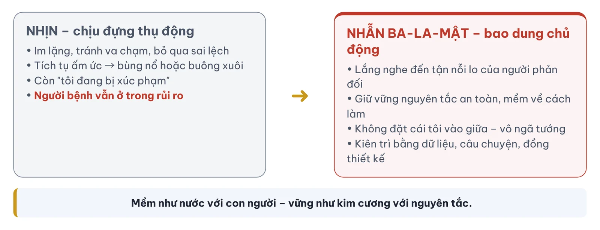
Phân 14 – Ly tướng tịch diệt phân
離相寂滅分第十四 Lìa tướng, nhẫn nhục ba-la-mật
I. NGUYÊN VĂN CHỮ HÁN, PHIÊN ÂM VÀ DỊCH NGHĨA
1. Nguyên văn chữ Hán
爾時須菩提聞說是經。深解義趣。涕淚悲泣。而白佛言。希有世尊。佛說如是甚深經典。我從昔來所得慧眼。未曾得聞如是之經。
世尊。若復有人得聞是經。信心清淨。則生實相。當知是人成就第一希有功德。世尊。是實相者。則是非相。是故如來說名實相。
世尊。我今得聞如是經典。信解受持不足為難。若當來世後五百歲。其有眾生得聞是經。信解受持。是人則為第一希有。何以故。此人無我相。無人相。無眾生相。無壽者相。所以者何。我相即是非相。人相眾生相壽者相即是非相。何以故。離一切諸相。則名諸佛。
佛告須菩提。如是如是。若復有人得聞是經。不驚不怖不畏。當知是人甚為希有。何以故。須菩提。如來說第一波羅蜜。即非第一波羅蜜。是名第一波羅蜜。
須菩提。忍辱波羅蜜。如來說非忍辱波羅蜜。是名忍辱波羅蜜。何以故。須菩提。如我昔為歌利王割截身體。我於爾時。無我相。無人相。無眾生相。無壽者相。何以故。我於往昔節節支解時。若有我相人相眾生相壽者相。應生瞋恨。
須菩提。又念過去於五百世作忍辱仙人。於爾所世。無我相。無人相。無眾生相。無壽者相。是故須菩提。菩薩應離一切相。發阿耨多羅三藐三菩提心。不應住色生心。不應住聲香味觸法生心。應生無所住心。若心有住。則為非住。是故佛說菩薩心不應住色布施。須菩提。菩薩為利益一切眾生。應如是布施。如來說一切諸相。即是非相。又說一切眾生。即非眾生。
須菩提。如來是真語者。實語者。如語者。不誑語者。不異語者。須菩提。如來所得法。此法無實無虛。
須菩提。若菩薩心住於法而行布施。如人入闇。則無所見。若菩薩心不住法而行布施。如人有目。日光明照。見種種色。
須菩提。當來之世。若有善男子善女人。能於此經受持讀誦。則為如來以佛智慧。悉知是人。悉見是人。皆得成就無量無邊功德。
2. Phiên âm Hán-Việt
Nhĩ thời, Tu-bồ-đề văn thuyết thị kinh, thâm giải nghĩa thú, thế lệ bi khấp, nhi bạch Phật ngôn: “Hy hữu Thế Tôn! Phật thuyết như thị thậm thâm kinh điển, ngã tòng tích lai sở đắc tuệ nhãn, vị tằng đắc văn như thị chi kinh.
Thế Tôn! Nhược phục hữu nhân đắc văn thị kinh, tín tâm thanh tịnh, tắc sinh thực tướng, đương tri thị nhân thành tựu đệ nhất hy hữu công đức. Thế Tôn! Thị thực tướng giả, tắc thị phi tướng, thị cố Như Lai thuyết danh thực tướng.
Thế Tôn! Ngã kim đắc văn như thị kinh điển, tín giải thọ trì bất túc vi nan. Nhược đương lai thế, hậu ngũ bách tuế, kỳ hữu chúng sinh đắc văn thị kinh, tín giải thọ trì, thị nhân tắc vi đệ nhất hy hữu. Hà dĩ cố? Thử nhân vô ngã tướng, vô nhân tướng, vô chúng sinh tướng, vô thọ giả tướng. Sở dĩ giả hà? Ngã tướng tức thị phi tướng; nhân tướng, chúng sinh tướng, thọ giả tướng tức thị phi tướng. Hà dĩ cố? Ly nhất thiết chư tướng, tắc danh chư Phật.”
Phật cáo Tu-bồ-đề: “Như thị, như thị! Nhược phục hữu nhân đắc văn thị kinh, bất kinh, bất bố, bất úy, đương tri thị nhân thậm vi hy hữu. Hà dĩ cố? Tu-bồ-đề! Như Lai thuyết đệ nhất ba-la-mật, tức phi đệ nhất ba-la-mật, thị danh đệ nhất ba-la-mật.5
Tu-bồ-đề! Nhẫn nhục ba-la-mật, Như Lai thuyết phi nhẫn nhục ba-la-mật, thị danh nhẫn nhục ba-la-mật. Hà dĩ cố? Tu-bồ-đề! Như ngã tích vi Ca-lợi vương cát tiệt thân thể, ngã ư nhĩ thời, vô ngã tướng, vô nhân tướng, vô chúng sinh tướng, vô thọ giả tướng. Hà dĩ cố? Ngã ư vãng tích tiết tiết chi giải thời, nhược hữu ngã tướng, nhân tướng, chúng sinh tướng, thọ giả tướng, ưng sinh sân hận.
Tu-bồ-đề! Hựu niệm quá khứ ư ngũ bách thế tác nhẫn nhục tiên nhân, ư nhĩ sở thế, vô ngã tướng, vô nhân tướng, vô chúng sinh tướng, vô thọ giả tướng. Thị cố Tu-bồ-đề! Bồ-tát ưng ly nhất thiết tướng, phát A-nậu-đa-la Tam-miệu Tam-bồ-đề tâm; bất ưng trụ sắc sinh tâm, bất ưng trụ thanh, hương, vị, xúc, pháp sinh tâm, ưng sinh vô sở trụ tâm. Nhược tâm hữu trụ, tắc vi phi trụ. Thị cố Phật thuyết: Bồ-tát tâm bất ưng trụ sắc bố thí. Tu-bồ-đề! Bồ-tát vị lợi ích nhất thiết chúng sinh, ưng như thị bố thí. Như Lai thuyết nhất thiết chư tướng, tức thị phi tướng; hựu thuyết nhất thiết chúng sinh, tức phi chúng sinh.
Tu-bồ-đề! Như Lai thị chân ngữ giả, thực ngữ giả, như ngữ giả, bất cuống ngữ giả, bất dị ngữ giả. Tu-bồ-đề! Như Lai sở đắc pháp, thử pháp vô thực vô hư.
Tu-bồ-đề! Nhược Bồ-tát tâm trụ ư pháp nhi hành bố thí, như nhân nhập ám, tắc vô sở kiến. Nhược Bồ-tát tâm bất trụ pháp nhi hành bố thí, như nhân hữu mục, nhật quang minh chiếu, kiến chủng chủng sắc.
Tu-bồ-đề! Đương lai chi thế, nhược hữu thiện nam tử, thiện nữ nhân, năng ư thử kinh thọ trì độc tụng, tắc vi Như Lai dĩ Phật trí tuệ, tất tri thị nhân, tất kiến thị nhân, giai đắc thành tựu vô lượng vô biên công đức.”
3. Dịch nghĩa
Bấy giờ, Tu-bồ-đề nghe nói kinh này, hiểu sâu nghĩa thú, cảm động rơi lệ, bạch Phật rằng: “Thật hiếm có, bạch Thế Tôn! Phật nói kinh điển thâm sâu như thế này; từ trước đến nay, với tuệ nhãn con đã đạt được, con chưa từng được nghe kinh nào như vậy.
Bạch Thế Tôn! Nếu lại có người được nghe kinh này mà tín tâm thanh tịnh, liền sinh thực tướng, nên biết người ấy thành tựu công đức hiếm có bậc nhất. Bạch Thế Tôn! Thực tướng ấy tức chẳng phải tướng, cho nên Như Lai nói gọi là thực tướng.
Bạch Thế Tôn! Nay con được nghe kinh điển như thế này, tin hiểu, thọ trì không lấy gì làm khó. Nếu vào đời sau, trong năm trăm năm sau cùng, có chúng sinh được nghe kinh này mà tin hiểu, thọ trì, người ấy thật là hiếm có bậc nhất. Vì sao? Vì người ấy không có tướng ngã, không có tướng nhân, không có tướng chúng sinh, không có tướng thọ giả. Vì cớ gì? Tướng ngã tức chẳng phải tướng; tướng nhân, tướng chúng sinh, tướng thọ giả tức chẳng phải tướng. Vì sao? Lìa tất cả các tướng thì gọi là chư Phật.”
Đức Phật bảo Tu-bồ-đề: “Đúng vậy, đúng vậy! Nếu lại có người được nghe kinh này mà không kinh hãi, không sợ sệt, không khiếp đảm, nên biết người ấy rất là hiếm có. Vì sao? Này Tu-bồ-đề! Như Lai nói đệ nhất ba-la-mật, tức chẳng phải đệ nhất ba-la-mật, ấy gọi là đệ nhất ba-la-mật.
Này Tu-bồ-đề! Nhẫn nhục ba-la-mật, Như Lai nói chẳng phải nhẫn nhục ba-la-mật, ấy gọi là nhẫn nhục ba-la-mật. Vì sao? Này Tu-bồ-đề! Như thuở xưa Ta bị vua Ca-lợi cắt xẻo thân thể, lúc ấy Ta không có tướng ngã, không có tướng nhân, không có tướng chúng sinh, không có tướng thọ giả. Vì sao? Vào thuở xưa khi Ta bị cắt rời từng đốt, từng chi, nếu Ta còn tướng ngã, tướng nhân, tướng chúng sinh, tướng thọ giả thì ắt đã sinh lòng giận hờn.
Này Tu-bồ-đề! Ta lại nhớ trong năm trăm đời quá khứ làm vị tiên nhẫn nhục, trong những đời ấy Ta không có tướng ngã, không có tướng nhân, không có tướng chúng sinh, không có tướng thọ giả. Vì thế, này Tu-bồ-đề, Bồ-tát nên lìa tất cả các tướng mà phát tâm Vô thượng Chánh đẳng Chánh giác: không nên trụ nơi sắc mà sinh tâm, không nên trụ nơi thanh, hương, vị, xúc, pháp mà sinh tâm; nên sinh tâm không trụ vào đâu cả. Nếu tâm có chỗ trụ, tức là không phải chỗ trụ đúng. Cho nên Phật nói: tâm Bồ-tát không nên trụ nơi sắc mà bố thí. Này Tu-bồ-đề! Bồ-tát vì lợi ích tất cả chúng sinh nên bố thí như thế. Như Lai nói tất cả các tướng tức chẳng phải tướng; lại nói tất cả chúng sinh tức chẳng phải chúng sinh.
Này Tu-bồ-đề! Như Lai là người nói lời chân, người nói lời thật, người nói lời như thực, người không nói lời dối, người không nói lời sai khác. Này Tu-bồ-đề! Pháp mà Như Lai chứng được, pháp ấy không thật cũng không hư.
Này Tu-bồ-đề! Nếu Bồ-tát tâm trụ nơi pháp mà làm việc bố thí, thì như người vào chỗ tối, không thấy gì cả. Nếu Bồ-tát tâm không trụ nơi pháp mà làm việc bố thí, thì như người có mắt, dưới ánh mặt trời chiếu sáng, thấy đủ mọi hình sắc.
Này Tu-bồ-đề! Ở đời vị lai, nếu có thiện nam, thiện nữ nào có thể thọ trì, đọc tụng kinh này, thì Như Lai dùng trí tuệ của Phật biết rõ người ấy, thấy rõ người ấy, đều thành tựu công đức vô lượng vô biên.”
II. GIẢI THÍCH NGHĨA LÝ CỐT TỦY
Phân 14 là phân dài nhất của tiền bán bộ và là nơi duy nhất trong kinh kể lại giọt nước mắt của Tu-bồ-đề. Tên phân – “Ly tướng tịch diệt” – tóm lại ý chính: lìa tướng thì tâm trở về tịch lặng.
1. Giọt nước mắt của bậc “giải Không đệ nhất”
Tu-bồ-đề vốn đã chứng quả A-la-hán, vậy mà nghe kinh vẫn khóc. Các nhà chú giải giải thích đó là giọt nước mắt của người thấy được chỗ sâu hơn những gì mình từng hiểu – hiếm có vì vượt khỏi cả cái “tuệ nhãn” đã đạt [3,19]. Ngài nói người tin hiểu kinh này “liền sinh thực tướng”, và thực tướng ấy “tức thị phi tướng”: không phải một hình tướng mới để nắm, mà là sự thấy rõ khi mọi tướng được buông.
2. “Bất kinh, bất bố, bất úy”
Nghe rằng không có ngã, không có pháp cố định để bám, nhiều người sợ hãi – như mất chỗ tựa. Đức Phật nói người nghe mà không kinh hãi là người hiếm có. Nỗi sợ ấy chính là dấu hiệu của sự bám chấp; khi thấy vô ngã không phải là mất mát mà là giải phóng, nỗi sợ tự lắng xuống [13].
3. Nhẫn nhục ba-la-mật và chuyện vua Ca-lợi
Đức Phật kể lại tiền thân làm vị tiên nhẫn nhục bị vua Ca-lợi (Kali-rāja) cắt xẻo thân thể mà không sinh sân hận, vì lúc ấy không có bốn tướng. Câu chuyện tương ứng với Khantivādī Jātaka trong văn học Pāli [78]. Điều kinh nhấn mạnh không phải là sức chịu đựng phi thường, mà là lý do tâm không sinh sân: không có cái tôi bị xúc phạm. Nhẫn nhục vì thế “tức phi nhẫn nhục” – không phải sự kìm nén cơn giận, mà là cơn giận không có chỗ để bám vào. Tịch Thiên trong Nhập Bồ-tát hạnh cũng dành cả một chương để phân tích nhẫn nhục theo hướng này [79].
4. Năm lời chân thật và hình ảnh người vào chỗ tối
Như Lai là người nói lời chân, thật, như thực, không dối, không sai khác; pháp Như Lai chứng được “không thật không hư” – không phải một vật có thật để nắm, nhưng cũng không phải hư vô. Kinh kết bằng một hình ảnh rõ ràng: bố thí với tâm trụ vào pháp như người vào chỗ tối, không thấy gì; tâm không trụ như người có mắt dưới ánh mặt trời, thấy đủ mọi hình sắc.
III. PHƯƠNG PHÁP HÀNH TRÌ: NHẪN TỪ TUỆ GIÁC, KHÔNG TỪ KÌM NÉN
- Hỏi “cái gì đang bị xúc phạm?”: khi bị nói nặng, dừng ba giây và tự hỏi: điều đang bị chạm vào là sự thật, hay là hình ảnh mình muốn người khác thấy?
- Thấy nỗi sợ sau cơn giận của người khác: người đang quát mắng thường đang sợ – sợ mất người thân, sợ không được quan tâm. Thấy được nỗi sợ ấy, mình không còn đứng ở thế đối đầu.
- Nhẫn mà không thấy mình đang nhẫn: tránh ý nghĩ “mình đang phải chịu thiệt”; ý nghĩ ấy nuôi lại chính cái tôi mà nhẫn nhục cần buông.
IV. ỨNG DỤNG: NHẪN NHỤC TRONG CẤP CỨU VÀ TRONG PHÂN TÍCH SỰ CỐ
1. Đối diện với sự bức xúc của người bệnh và người nhà
Nhân viên y tế thường xuyên chịu áp lực từ sự lo âu của người nhà người bệnh, có khi dưới dạng lời lẽ gay gắt. Đáp lại bằng sự bình tĩnh không phải là nhượng bộ, mà là giữ được năng lực xử trí chuyên môn và mở đường cho giao tiếp. Chương trình giao tiếp chánh niệm của Krasner cho thấy có thể huấn luyện để thầy thuốc giảm kiệt sức và tăng khả năng thấu cảm [80]. Đồng thời, bệnh viện có trách nhiệm bảo vệ nhân viên khỏi bạo lực nơi làm việc – nhẫn nhục của cá nhân không thay thế cho cơ chế an ninh và hỗ trợ của tổ chức.
2. Phân tích sự việc, không phân tích con người
Trong hội đồng xem xét sự cố, “nhẫn” là không để cảm xúc – giận dữ, xấu hổ, muốn tìm người chịu trách nhiệm – dẫn dắt kết luận. Văn hóa công bằng phân biệt sai sót của con người, hành vi có rủi ro và hành vi liều lĩnh để có phản ứng tương xứng [71,81]. Người trong cuộc của một sự cố cũng là “nạn nhân thứ hai” cần được hỗ trợ [54,82].
3. “Lời chân thật” là chuẩn mực của dữ liệu
Năm lời chân thật của Như Lai – chân, thật, như, không dối, không sai khác – có thể đọc như năm phẩm chất của dữ liệu chất lượng: đúng sự việc, đầy đủ, phản ánh đúng như thực tế, không bị làm đẹp, nhất quán giữa các nguồn. Một từ điển chỉ số rõ ràng là điều kiện để dữ liệu “không sai khác” (xem Chương 22).
TÌNH HUỐNGHai giờ sáng ở khoa cấp cứu (mô phỏng từ thực tế)
Hai giờ sáng, con trai một người bệnh nặng quát lớn vào mặt bác sĩ trực vì cho rằng bố mình phải chờ quá lâu. Bác sĩ trẻ đã trực liên tục mười tám giờ, cảm thấy máu dồn lên mặt. Anh dừng lại ba giây, thở chậm, rồi nói: “Anh đang rất lo cho bác. Em hiểu. Em sẽ nói rõ cho anh tình trạng hiện tại và việc tiếp theo chúng em làm.” Mười phút sau, người con ngồi xuống. Sáng hôm sau, anh ta tìm đến xin lỗi.
Cùng tuần đó, trong buổi phân tích một sự cố, trưởng khoa nhắc cả nhóm: “Chúng ta phân tích sự việc, không phân tích con người.” Nhẫn nhục ba-la-mật không phải là nuốt giận, mà là không đặt cái tôi vào giữa cơn giận của người khác – nên thấy được nỗi sợ đằng sau tiếng quát, và thấy được hệ thống đằng sau sai sót [80].
ĐIỂM THEN CHỐTĐiểm then chốt
- Lìa tất cả tướng gọi là chư Phật; nhẫn nhục chân thật đến từ vô ngã tướng, không đến từ kìm nén.
- Tâm trụ vào pháp mà bố thí như người vào chỗ tối; không trụ thì như người có mắt dưới ánh mặt trời.
- Năm lời chân thật của Như Lai: chân, thật, như, không dối, không khác – chuẩn mực của dữ liệu chất lượng.
SUY NGẪMCâu hỏi suy ngẫm
1. Lần gần nhất anh/chị bị người bệnh hoặc thân nhân xúc phạm, điều gì giúp (hoặc đã có thể giúp) anh/chị giữ được bình tĩnh?
2. Báo cáo sự cố của khoa anh/chị có còn những từ ngữ “phân tích con người” không?
Phân 15 – Trì kinh công đức phân
持經功德分第十五 Công đức thọ trì, gánh vác Như Lai
I. NGUYÊN VĂN CHỮ HÁN, PHIÊN ÂM VÀ DỊCH NGHĨA
1. Nguyên văn chữ Hán
須菩提。若有善男子。善女人。初日分。以恆河沙等身布施。中日分。復以恆河沙等身布施。後日分。亦以恆河沙等身布施。如是無量百千萬億劫。以身布施。若復有人。聞此經典。信心不逆。其福勝彼。何況書寫受持讀誦。為人解說。
須菩提。以要言之。是經有不可思議。不可稱量。無邊功德。如來為發大乘者說。為發最上乘者說。若有人能受持讀誦。廣為人說。如來悉知是人。悉見是人。皆得成就不可量。不可稱。無有邊。不可思議功德。如是人等。即為荷擔如來阿耨多羅三藐三菩提。
何以故。須菩提。若樂小法者。著我見人見眾生見壽者見。則於此經。不能聽受讀誦。為人解說。須菩提。在在處處。若有此經。一切世間天人阿修羅所應供養。當知此處。則為是塔。皆應恭敬。作禮圍繞。以諸華香而散其處。
2. Phiên âm Hán-Việt
Tu-bồ-đề! Nhược hữu thiện nam tử, thiện nữ nhân, sơ nhật phân dĩ Hằng hà sa đẳng thân bố thí; trung nhật phân phục dĩ Hằng hà sa đẳng thân bố thí; hậu nhật phân diệc dĩ Hằng hà sa đẳng thân bố thí; như thị vô lượng bách thiên vạn ức kiếp dĩ thân bố thí. Nhược phục hữu nhân, văn thử kinh điển, tín tâm bất nghịch, kỳ phúc thắng bỉ; hà huống thư tả, thọ trì, độc tụng, vị nhân giải thuyết!
Tu-bồ-đề! Dĩ yếu ngôn chi, thị kinh hữu bất khả tư nghị, bất khả xưng lượng, vô biên công đức. Như Lai vị phát Đại thừa giả thuyết, vị phát Tối thượng thừa giả thuyết. Nhược hữu nhân năng thọ trì độc tụng, quảng vị nhân thuyết, Như Lai tất tri thị nhân, tất kiến thị nhân, giai đắc thành tựu bất khả lượng, bất khả xưng, vô hữu biên, bất khả tư nghị công đức. Như thị nhân đẳng, tức vi hà đảm Như Lai A-nậu-đa-la Tam-miệu Tam-bồ-đề.
Hà dĩ cố? Tu-bồ-đề! Nhược nhạo tiểu pháp giả, trước ngã kiến, nhân kiến, chúng sinh kiến, thọ giả kiến, tắc ư thử kinh bất năng thính thọ độc tụng, vị nhân giải thuyết. Tu-bồ-đề! Tại tại xứ xứ, nhược hữu thử kinh, nhất thiết thế gian thiên, nhân, a-tu-la sở ưng cúng dường. Đương tri thử xứ, tắc vi thị tháp, giai ưng cung kính, tác lễ vi nhiễu, dĩ chư hoa hương nhi tán kỳ xứ.
3. Dịch nghĩa
“Này Tu-bồ-đề! Nếu có người thiện nam, người thiện nữ, vào buổi sáng đem thân mạng nhiều như số cát sông Hằng ra bố thí; buổi trưa lại đem thân mạng nhiều như số cát sông Hằng ra bố thí; buổi chiều cũng đem thân mạng nhiều như số cát sông Hằng ra bố thí; trải qua vô lượng trăm nghìn muôn ức kiếp đem thân mạng ra bố thí như thế. Nếu lại có người nghe kinh điển này mà khởi lòng tin thanh tịnh, không chống trái nghịch lại, thì phúc đức của người này đã vượt trội hơn người kia gấp bội; huống chi là người có thể tự tay biên chép, thọ trì, đọc tụng và vì người khác mà giảng giải nghĩa lý!
Này Tu-bồ-đề! Tóm lại mà nói, kinh này có công đức không thể nghĩ bàn, không thể cân lường, rộng lớn vô biên. Như Lai vì những người phát tâm Đại thừa mà nói, vì những người phát tâm Tối thượng thừa mà nói. Nếu có người có thể thọ trì, đọc tụng, vì người khác mà rộng tuyên giảng giải, thì Như Lai đều biết rõ người ấy, đều thấy rõ người ấy, thảy đều sẽ thành tựu công đức vô lượng, vô biên, không thể nghĩ bàn. Những người như thế chính là đang gánh vác sứ mệnh Vô thượng Chánh đẳng Chánh giác của Như Lai.
Vì cớ làm sao? Này Tu-bồ-đề! Nếu là người ưa thích pháp nhỏ hẹp (tiểu pháp), còn dính mắc nơi ngã kiến, nhân kiến, chúng sinh kiến, thọ giả kiến, thì đối với kinh này không thể lắng nghe, tiếp nhận, đọc tụng hay giảng giải cho người khác được. Này Tu-bồ-đề! Bất cứ nơi nào có kinh này hiện diện, tất cả thế gian cõi trời, cõi người, cõi a-tu-la đều nên đến cúng dường. Phải biết nơi chốn ấy chính là ngôi bảo tháp của Phật, thảy đều nên cung kính đảnh lễ, đi nhiễu quanh và đem các thứ hoa hương rải lên nơi ấy.”
II. GIẢI THÍCH NGHĨA LÝ CỐT TỦY
Phân 15 – “Trì kinh công đức” – đẩy phép so sánh phúc đức đến cực điểm về thời gian, rồi nói rõ kinh này dành cho ai và người thọ trì gánh vác điều gì.
1. Xả thân ba thời trong vô lượng kiếp
Buổi sáng (sơ nhật phân), buổi trưa (trung nhật phân), buổi chiều (hậu nhật phân) đều đem thân mạng nhiều như cát sông Hằng ra bố thí, liên tục trăm nghìn vạn ức kiếp – đó là sự hy sinh lớn nhất mà trí tưởng tượng có thể dựng lên. Vậy mà người nghe kinh này tín tâm bất nghịch – lòng tin không trái nghịch – phúc còn hơn [6]. Chỗ khác nhau nằm ở đối tượng được buông: người xả thân buông cái vỏ thân thể; người tin hiểu Bát-nhã buông chính sự bám chấp vào cái tôi [19].
2. Kinh này nói cho ai?
Đức Phật nói: kinh này vì người phát tâm Đại thừa, vì người phát tâm Tối thượng thừa mà nói. Người nhạo tiểu pháp – ưa pháp nhỏ, còn chấp ngã kiến, nhân kiến, chúng sinh kiến, thọ giả kiến – thì không thể nghe nhận, đọc tụng, giải nói kinh này. Đáng chú ý là ở đây kinh dùng chữ kiến (見) thay cho tướng (相) – trong bản Phạn cũng vậy, các từ ātma-dṛṣṭi, sattva-dṛṣṭi, jīva-dṛṣṭi, pudgala-dṛṣṭi (kiến: lập trường, quan điểm) thay cho saṃjñā (tưởng: nhãn nhận thức) ở các phân trước [2]: từ chỗ phá những hình tướng thô ở các phân trước, kinh chuyển sang phá những quan điểm, những cách thấy tinh tế hơn – một bước chuyển chuẩn bị cho hậu bán bộ, nơi chính những ý niệm vi tế về pháp và về giác ngộ sẽ được buông [3].
3. “Hà đảm Như Lai”
Người thọ trì, đọc tụng, rộng vì người khác giảng nói kinh này là người hà đảm – ghé vai gánh vác – Vô thượng Chánh đẳng Chánh giác của Như Lai. Nơi nào có kinh này, nơi ấy như tháp miếu, nên đem hoa hương mà rải quanh. Thọ trì không phải là một ân huệ riêng tư; đó là nhận lấy một trách nhiệm.
III. PHƯƠNG PHÁP HÀNH TRÌ: MỞ RỘNG TÂM LƯỢNG
- Nhận ra “tiểu pháp” trong mình: những lúc chỉ nghĩ đến phần việc, thành tích, sự an toàn của riêng mình hay riêng khoa mình.
- Tin mà không trái nghịch: khi gặp một ý tưởng làm lung lay thói quen cũ, không vội bác bỏ; cho nó thời gian để được hiểu.
- Gánh một phần việc chung: mỗi tháng nhận một việc chung không ai giao – một lần hướng dẫn, một lần rà soát quy trình – như cách “ghé vai” của người thọ trì.
IV. ỨNG DỤNG: TÂM LỚN CHO NHỮNG VIỆC NHỎ
1. “Nhạo tiểu pháp” trong bệnh viện có hai dạng
Dạng thứ nhất là tâm hẹp: chỉ lo phần việc của khoa mình, coi an toàn người bệnh là việc của phòng quản lý chất lượng. Dạng thứ hai, khó nhận ra hơn, là chỉ ưa kỹ thuật lớn mà xem nhẹ việc nhỏ – trong khi phần lớn tổn hại có thể phòng ngừa lại liên quan đến những chăm sóc cơ bản như dùng thuốc, phòng nhiễm khuẩn, phòng loét tì đè, phòng té ngã [83,84]. Tình huống loét tì đè trong một khoa hồi sức dưới đây minh họa dạng thứ hai.
2. Gánh vác an toàn người bệnh là việc của mọi người
Kế hoạch hành động toàn cầu về an toàn người bệnh của WHO nhấn mạnh rằng an toàn cần được thiết kế vào mọi quy trình và là trách nhiệm của mọi người trong hệ thống, từ lãnh đạo đến nhân viên tuyến đầu và cả người bệnh [85]. “Hà đảm Như Lai” trong bối cảnh này là chấp nhận rằng mỗi người đều đang gánh một phần của an toàn – kể cả hộ lý, kỹ thuật viên, nhân viên vận chuyển.
3. Ghi nhận những việc nhỏ làm đúng
Một hệ thống chỉ ghi nhận thành tích lớn sẽ vô tình dạy nhân viên xem nhẹ việc nhỏ. Ghi nhận công khai những ca trực không có sự cố, những người phát hiện kịp một sai sót, những khoa duy trì đều đặn một gói chăm sóc là cách nuôi dưỡng văn hóa an toàn bền vững [86].
TÌNH HUỐNG“Việc nhỏ” bị xem nhẹ (mô phỏng từ thực tế)
Một khoa hồi sức tự hào với các kỹ thuật cao: lọc máu liên tục, thở máy xâm nhập, theo dõi huyết động xâm lấn. Nhưng trong quý, ba người bệnh nằm lâu xuất hiện loét tì đè độ 3. Rà soát cho thấy việc thay đổi tư thế mỗi hai giờ và đánh giá nguy cơ loét theo thang điểm bị xem là “việc của hộ lý”, không được giao ban, không được giám sát. Khoa đưa đánh giá nguy cơ loét vào bàn giao ca, gắn đồng hồ xoay tư thế tại giường, ghi nhận công khai những ca trực không có loét mới.
Phân 15 cảnh báo người “nhạo tiểu pháp” – ưa pháp nhỏ hẹp, dính chấp ngã kiến – không thể thọ trì kinh lớn. Trong bệnh viện, “nhạo tiểu pháp” còn có một dạng ngược lại: chỉ ưa kỹ thuật lớn mà xem thường việc nhỏ. An toàn người bệnh được gánh vác bằng những việc nhỏ làm đúng mỗi ngày.
ĐIỂM THEN CHỐTĐiểm then chốt
- Thọ trì, đọc tụng, vì người giảng nói kinh là “gánh vác vô thượng Bồ-đề” – trách nhiệm với tuệ mạng và sinh mạng.
- Tâm hẹp hòi, chấp ngã không thể tiếp nhận pháp lớn; người làm an toàn cần tâm rộng mở.
- Tôn vinh việc nhỏ làm đúng là cách nuôi văn hóa an toàn bền vững.
SUY NGẪMCâu hỏi suy ngẫm
1. “Việc nhỏ” nào ở khoa anh/chị đang bị xem là “không phải việc của mình”?
2. Anh/chị đã bao giờ công khai cảm ơn một hộ lý, một kỹ thuật viên vì một việc nhỏ làm đúng chưa?
Phân 16 – Năng tịnh nghiệp chướng phân
能淨業障分第十六 Bị khinh chê mà tiêu nghiệp
I. NGUYÊN VĂN CHỮ HÁN, PHIÊN ÂM VÀ DỊCH NGHĨA
1. Nguyên văn chữ Hán
復次須菩提。善男子善女人。受持讀誦此經。若為人輕賤。是人先世罪業。應墮惡道。以今世人輕賤故。先世罪業則為消滅。當得阿耨多羅三藐三菩提。
須菩提。我念過去無量阿僧祇劫。於然燈佛前。得值八百四千萬億那由他諸佛。悉皆供養承事。無空過者。若復有人。於後末世。能受持讀誦此經。所得功德。於我所供養諸佛功德。百分不及一。千萬億分。乃至算數譬喻所不能及。
須菩提。若善男子善女人。於後末世。有受持讀誦此經。所得功德。我若具說者。或有人聞。心則狂亂。狐疑不信。須菩提。當知是經義不可思議。果報亦不可思議。
2. Phiên âm Hán-Việt
Phục thứ, Tu-bồ-đề! Thiện nam tử, thiện nữ nhân, thọ trì độc tụng thử kinh, nhược vi nhân khinh tiện, thị nhân tiên thế tội nghiệp, ưng đọa ác đạo; dĩ kim thế nhân khinh tiện cố, tiên thế tội nghiệp tắc vi tiêu diệt, đương đắc A-nậu-đa-la Tam-miệu Tam-bồ-đề.
Tu-bồ-đề! Ngã niệm quá khứ vô lượng a-tăng-kỳ kiếp, ư Nhiên Đăng Phật tiền, đắc trị bát bách tứ thiên vạn ức na-do-tha chư Phật, tất giai cúng dường thừa sự, vô không quá giả. Nhược phục hữu nhân, ư hậu mạt thế, năng thọ trì độc tụng thử kinh, sở đắc công đức, ư ngã sở cúng dường chư Phật công đức, bách phần bất cập nhất, thiên vạn ức phần, nãi chí toán số thí dụ sở bất năng cập.
Tu-bồ-đề! Nhược thiện nam tử, thiện nữ nhân, ư hậu mạt thế, hữu thọ trì độc tụng thử kinh, sở đắc công đức, ngã nhược cụ thuyết giả, hoặc hữu nhân văn, tâm tắc cuồng loạn, hồ nghi bất tín. Tu-bồ-đề! Đương tri thị kinh nghĩa bất khả tư nghị, quả báo diệc bất khả tư nghị.
3. Dịch nghĩa
“Lại nữa, này Tu-bồ-đề! Nếu thiện nam, thiện nữ thọ trì, đọc tụng kinh này mà bị người khinh chê, thì người ấy do tội nghiệp đời trước lẽ ra phải đọa vào đường ác; nhưng vì đời này bị người khinh chê, nên tội nghiệp đời trước liền được tiêu diệt, và sẽ được quả Vô thượng Chánh đẳng Chánh giác.
Này Tu-bồ-đề! Ta nhớ vô lượng a-tăng-kỳ kiếp về trước, trước Đức Phật Nhiên Đăng, Ta đã gặp tám trăm bốn nghìn vạn ức na-do-tha chư Phật, đều cúng dường, phụng sự hết thảy, không bỏ qua một vị nào. Nếu lại có người ở đời mạt thế về sau có thể thọ trì, đọc tụng kinh này, thì công đức người ấy có được, so với công đức Ta cúng dường chư Phật, công đức của Ta không bằng một phần trăm, một phần nghìn vạn ức, cho đến không thể dùng toán số hay thí dụ nào để so sánh được.
Này Tu-bồ-đề! Nếu thiện nam, thiện nữ ở đời mạt thế về sau thọ trì, đọc tụng kinh này, công đức có được, nếu Ta nói đầy đủ, hoặc có người nghe sẽ tâm cuồng loạn, nghi ngờ không tin. Này Tu-bồ-đề! Nên biết nghĩa của kinh này không thể nghĩ bàn, quả báo cũng không thể nghĩ bàn.”
II. GIẢI THÍCH NGHĨA LÝ CỐT TỦY
Phân 16 khép lại tiền bán bộ (Phân 1–16). Sau khi phá các tướng thô, kinh trả lời một nỗi băn khoăn rất đời thường: người thọ trì kinh mà vẫn bị khinh chê, vẫn gặp nghịch cảnh – vậy công đức ở đâu?
1. “Năng tịnh nghiệp chướng” – nghiệp nặng, quả nhẹ
Kinh nói: người thọ trì kinh mà bị khinh chê, đó là do tội nghiệp đời trước; nhờ bị khinh chê ở đời này mà tội nghiệp ấy tiêu diệt. Truyền thống Phật giáo Trung Hoa gọi đó là trọng tội khinh báo – nghiệp nặng trổ thành quả nhẹ. Lục Tổ giải theo hướng nội tâm: “đời trước” là niệm mê trước đó, “đời này” là niệm giác sau; khi niệm giác khởi lên thì niệm mê không còn chỗ đứng [19]. Nghiệp không phải một khối vật chất cố định; nó là dấu ấn của tâm chấp, và tan dần khi tâm không còn chấp.
2. Nghịch cảnh như một phép thử của bản ngã
Bị khinh chê là chỗ bản ngã dễ bị tổn thương nhất. Người thọ trì Bát-nhã – vừa đi qua bài học nhẫn nhục ở Phân 14 – có thể đón nhận lời chê như một duyên để thấy rõ cái tôi của mình, thay vì như một bất công cần chống trả [13].
3. Cúng dường vô số chư Phật vẫn không bằng thọ trì kinh
Đức Phật kể Ngài đã cúng dường tám trăm bốn nghìn vạn ức na-do-tha chư Phật – một phúc đức lớn không thể hình dung – nhưng công đức ấy không bằng công đức thọ trì kinh này ở đời mạt thế. Lý do không nằm ở số lượng, mà ở chỗ phúc cúng dường vẫn còn trong vòng hữu vi, còn thọ trì Bát-nhã là đi vào gốc của giải thoát. Câu kết – “nghĩa kinh không thể nghĩ bàn, quả báo cũng không thể nghĩ bàn” – nhắc rằng điều ấy không đo được bằng thước đo thông thường.
III. PHƯƠNG PHÁP HÀNH TRÌ: CHUYỂN HÓA NGHỊCH DUYÊN
- Đón lời chê như một dữ liệu: khi bị chê, tách hai phần: phần nào là sự thật cần sửa, phần nào là cảm xúc của người nói. Sửa phần thứ nhất, buông phần thứ hai.
- Giữ sơ tâm khi không được ghi nhận: làm việc tốt mà bị nghi ngờ động cơ, nhớ lại vì sao mình bắt đầu, và tiếp tục.
- Soi lại một ngày: mỗi tối vài phút nhớ lại những lúc tâm tham, sân, kiêu mạn khởi lên – không để tự trách, mà để thấy rõ và buông.
IV. ỨNG DỤNG: “KHINH BÁO” TRONG AN TOÀN NGƯỜI BỆNH
1. Near-miss là một “khinh báo”
Sự cố suýt xảy ra – sai sót đã xảy ra nhưng được phát hiện kịp trước khi gây hại – là hình ảnh rất gần với “nghiệp nặng trổ thành quả nhẹ”. Nó cho thấy lỗ hổng của hệ thống với cái giá thấp nhất. Mô hình tảng băng của Heinrich, dù chỉ nên dùng như một ẩn dụ, gợi ý rằng phía dưới mỗi sự cố nghiêm trọng có nhiều sự cố nhẹ và near-miss [87]. Thông tư 43/2018/TT-BYT khuyến khích báo cáo tự nguyện các sự cố, kể cả sự cố chưa gây hại, và yêu cầu bảo mật thông tin người báo cáo [88]. Một hệ thống học từ “khinh báo” sẽ ít phải trả giá bằng “trọng báo”.
2. Lời chê của người bệnh là dữ liệu miễn phí
Khiếu nại, phản hồi tiêu cực, kể cả trên mạng xã hội, thường chứa thông tin thật về điểm nghẽn của hệ thống. Tình huống dưới đây cho thấy cách một bệnh viện chuyển lời chê thành một dự án cải tiến có đo lường. Phản ứng phòng thủ – phủ nhận, tìm người tung tin – là “tâm cuồng loạn, hồ nghi” mà kinh nhắc.
3. Người thầy thuốc trước những phán xét bất công
Dù làm hết sức, có những người bệnh không qua khỏi, và gia đình có thể bất bình. Đó là một trong những áp lực nặng nề nhất của nghề. Tổ chức cần có cơ chế hỗ trợ nhân viên sau biến cố, giải thích cởi mở với gia đình và phân tích ca bệnh một cách khách quan [82,89]. Về phía cá nhân, tinh thần Phân 16 giúp người thầy thuốc không để sự phán xét làm nguội lòng cứu người.
TÌNH HUỐNGLời chê trên mạng xã hội (mô phỏng từ thực tế)
Một bài đăng trên mạng xã hội chỉ trích gay gắt thời gian chờ khám ở một bệnh viện, thu hút hàng nghìn bình luận. Phản xạ đầu tiên của nhiều người là phản bác. Phòng QLCL chọn cách khác: lấy dữ liệu thời gian chờ từ hệ thống thông tin bệnh viện, vẽ bản đồ dòng chảy người bệnh, phát hiện điểm nghẽn ở khâu chờ kết quả xét nghiệm buổi sáng. Sau ba tháng điều chỉnh lịch lấy mẫu và trả kết quả, thời gian chờ trung vị giảm rõ rệt; bệnh viện công khai kết quả và cảm ơn người đã góp ý.
“Trọng tội khinh báo” áp vào tổ chức: lời chê là dữ liệu miễn phí về điểm yếu của hệ thống. Tương tự, một sự cố suýt xảy ra (near-miss) được báo cáo là “khinh báo” – quả báo nhẹ – nhắc ta sửa trước khi “trọng báo” xảy ra.
ĐIỂM THEN CHỐTĐiểm then chốt
- Bị khinh chê mà tâm không sân, nghiệp chướng (điểm yếu) được tịnh hóa.
- Sự cố suýt xảy ra là “khinh báo”: cơ hội quý để sửa hệ thống trước khi có tổn hại thật.
- Kiên định trên con đường cải tiến dù bị hiểu lầm – công đức không thể nghĩ bàn.
SUY NGẪMCâu hỏi suy ngẫm
1. Lời chê nào gần đây về khoa anh/chị chứa đựng một sự thật cần nghe?
2. Khoa anh/chị xử lý sự cố suýt xảy ra như một “khinh báo” quý giá hay như một rắc rối cần giấu?
Chương 12
TRÙNG THỈNH VÀ PHÁ NGHI VI TẾ (PHÂN 17–20)
Phân 17 mở đầu hậu bán bộ bằng việc Tu-bồ-đề hỏi lại đúng hai câu hỏi của Phân 2. Nhưng lần này, câu trả lời đi sâu hơn: không chỉ lìa tướng của đối tượng, mà lìa cả ý niệm “có một người đang phát tâm” – “thực vô hữu pháp phát A-nậu-đa-la Tam-miệu Tam-bồ-đề tâm”. Phân 18 trình bày năm con mắt và ba tâm bất khả đắc; Phân 19 nói về phúc đức “vô sở hữu”; Phân 20 khẳng định không thể thấy Như Lai qua sắc thân đầy đủ. Đây là nhóm phân giàu ứng dụng nhất cho sức khỏe tinh thần của nhân viên y tế (tâm lý đấng cứu thế, kiệt sức) và cho nhận thức lâm sàng (năm tầng nhìn, định kiến bề ngoài).
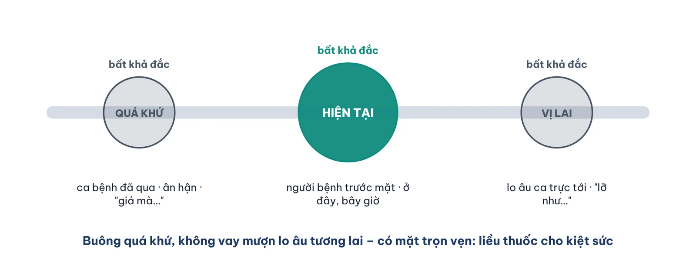
Phân 17 – Cứu cánh vô ngã phân
究竟無我分第十七 Rốt ráo vô ngã, không pháp phát tâm
I. NGUYÊN VĂN CHỮ HÁN, PHIÊN ÂM VÀ DỊCH NGHĨA
1. Nguyên văn chữ Hán
爾時須菩提白佛言。世尊。善男子。善女人。發阿耨多羅三藐三菩提心。云何應住。云何降伏其心。
佛告須菩提。善男子。善女人。發阿耨多羅三藐三菩提心者。當生如是心。我應滅度一切眾生。滅度一切眾生已。而無有一眾生實滅度者。何以故。須菩提。若菩薩有我相人相眾生相壽者相。則非菩薩。所以者何。須菩提。實無有法發阿耨多羅三藐三菩提心者。
須菩提。於意云何。如來於然燈佛所。有法得阿耨多羅三藐三菩提不。
不也。世尊。如我解佛所說義。佛於然燈佛所。無有法得阿耨多羅三藐三菩提。
佛言。如是如是。須菩提。實無有法如來得阿耨多羅三藐三菩提。須菩提。若有法如來得阿耨多羅三藐三菩提者。然燈佛則不與我授記。汝於來世當得作佛。號釋迦牟尼。以實無有法得阿耨多羅三藐三菩提。是故然燈佛與我授記。作是言。汝於來世當得作佛。號釋迦牟尼。
何以故。如來者。即諸法如義。若有人言。如來得阿耨多羅三藐三菩提。須菩提。實無有法佛得阿耨多羅三藐三菩提。須菩提。如來所得阿耨多羅三藐三菩提。於是中無實無虛。是故如來說一切法皆是佛法。須菩提。所言一切法者。即非一切法。是故名一切法。
須菩提。譬如人身長大。須菩提言。世尊。如來說人身長大。則為非大身。是名大身。
須菩提。菩薩亦如是。若作是言。我當滅度無量眾生。則不名菩薩。何以故。須菩提。實無有法名為菩薩。是故佛說一切法無我無人無眾生無壽者。須菩提。若菩薩作是言。我當莊嚴佛土。是不名菩薩。何以故。如來說莊嚴佛土者。即非莊嚴。是名莊嚴。須菩提。若菩薩通達無我法者。如來說名真是菩薩。
2. Phiên âm Hán-Việt
Nhĩ thời, Tu-bồ-đề bạch Phật ngôn: Thế Tôn! Thiện nam tử, thiện nữ nhân, phát A-nậu-đa-la Tam-miệu Tam-bồ-đề tâm, vân hà ưng trụ? Vân hà hàng phục kỳ tâm?
Phật cáo Tu-bồ-đề: Thiện nam tử, thiện nữ nhân, phát A-nậu-đa-la Tam-miệu Tam-bồ-đề tâm giả, đương sinh như thị tâm: Ngã ưng diệt độ nhất thiết chúng sinh; diệt độ nhất thiết chúng sinh dĩ, nhi vô hữu nhất chúng sinh thực diệt độ giả. Hà dĩ cố? Tu-bồ-đề! Nhược Bồ-tát hữu ngã tướng, nhân tướng, chúng sinh tướng, thọ giả tướng, tắc phi Bồ-tát. Sở dĩ giả hà? Tu-bồ-đề! Thực vô hữu pháp phát A-nậu-đa-la Tam-miệu Tam-bồ-đề tâm giả.
Tu-bồ-đề! Ư ý vân hà? Như Lai ư Nhiên Đăng Phật sở, hữu pháp đắc A-nậu-đa-la Tam-miệu Tam-bồ-đề phủ?
Bất dã, Thế Tôn! Như ngã giải Phật sở thuyết nghĩa, Phật ư Nhiên Đăng Phật sở, vô hữu pháp đắc A-nậu-đa-la Tam-miệu Tam-bồ-đề.
Phật ngôn: Như thị! Như thị! Tu-bồ-đề! Thực vô hữu pháp Như Lai đắc A-nậu-đa-la Tam-miệu Tam-bồ-đề. Tu-bồ-đề! Nhược hữu pháp Như Lai đắc A-nậu-đa-la Tam-miệu Tam-bồ-đề giả, Nhiên Đăng Phật tắc bất dữ ngã thọ ký: “Nhữ ư lai thế đương đắc tác Phật, hiệu Thích-ca Mâu-ni”. Dĩ thực vô hữu pháp đắc A-nậu-đa-la Tam-miệu Tam-bồ-đề, thị cố Nhiên Đăng Phật dữ ngã thọ ký, tác thị ngôn: “Nhữ ư lai thế đương đắc tác Phật, hiệu Thích-ca Mâu-ni”.
Hà dĩ cố? Như Lai giả, tức chư pháp như nghĩa. Nhược hữu nhân ngôn: Như Lai đắc A-nậu-đa-la Tam-miệu Tam-bồ-đề. Tu-bồ-đề! Thực vô hữu pháp Phật đắc A-nậu-đa-la Tam-miệu Tam-bồ-đề. Tu-bồ-đề! Như Lai sở đắc A-nậu-đa-la Tam-miệu Tam-bồ-đề, ư thị trung vô thực vô hư. Thị cố Như Lai thuyết nhất thiết pháp giai thị Phật pháp. Tu-bồ-đề! Sở ngôn nhất thiết pháp giả, tức phi nhất thiết pháp, thị cố danh nhất thiết pháp.
Tu-bồ-đề! Thí như nhân thân trường đại. Tu-bồ-đề ngôn: Thế Tôn! Như Lai thuyết nhân thân trường đại, tắc vi phi đại thân, thị danh đại thân.
Tu-bồ-đề! Bồ-tát diệc như thị. Nhược tác thị ngôn: “Ngã đương diệt độ vô lượng chúng sinh”, tắc bất danh Bồ-tát. Hà dĩ cố? Tu-bồ-đề! Thực vô hữu pháp danh vi Bồ-tát. Thị cố Phật thuyết nhất thiết pháp vô ngã, vô nhân, vô chúng sinh, vô thọ giả. Tu-bồ-đề! Nhược Bồ-tát tác thị ngôn: “Ngã đương trang nghiêm Phật độ”, thị bất danh Bồ-tát. Hà dĩ cố? Như Lai thuyết trang nghiêm Phật độ giả, tức phi trang nghiêm, thị danh trang nghiêm. Tu-bồ-đề! Nhược Bồ-tát thông đạt vô ngã pháp giả, Như Lai thuyết danh chân thị Bồ-tát.
3. Dịch nghĩa
Bấy giờ, Trưởng lão Tu-bồ-đề bạch Phật rằng: “Bạch Thế Tôn! Người thiện nam, người thiện nữ khi phát tâm cầu quả Vô thượng Chánh đẳng Chánh giác, làm sao để an trụ tâm? Làm sao để hàng phục tâm mình?”
Đức Phật bảo Tu-bồ-đề: “Người thiện nam, người thiện nữ phát tâm Vô thượng Chánh đẳng Chánh giác nên khởi tâm như thế này: Ta phải độ thoát tất cả chúng sinh; độ thoát tất cả chúng sinh xong rồi, mà thật ra không có một chúng sinh nào được độ thoát cả. Vì cớ sao? Này Tu-bồ-đề! Nếu Bồ-tát còn có ngã tướng, nhân tướng, chúng sinh tướng, thọ giả tướng thì không phải là Bồ-tát. Vì cớ làm sao? Này Tu-bồ-đề! Thật không có pháp nào cố định gọi là kẻ phát tâm Vô thượng Chánh đẳng Chánh giác cả.
Này Tu-bồ-đề, ý ông nghĩ sao? Thuở trước ở nơi Đức Phật Nhiên Đăng, Như Lai có đắc pháp nào gọi là Vô thượng Chánh đẳng Chánh giác chăng?”
– “Bạch Thế Tôn, không! Theo như con hiểu nghĩa lý Phật dạy, Phật ở nơi Đức Phật Nhiên Đăng thật không có pháp nào đắc được quả Vô thượng Chánh đẳng Chánh giác.”
Đức Phật dạy: “Đúng thế, đúng thế! Này Tu-bồ-đề, thật không có pháp nào Như Lai đắc Vô thượng Chánh đẳng Chánh giác. Này Tu-bồ-đề! Nếu có pháp Như Lai đắc được Vô thượng Chánh đẳng Chánh giác, thì Đức Phật Nhiên Đăng đã không thọ ký cho Ta: 'Đời sau ông sẽ được thành Phật, hiệu là Thích-ca Mâu-ni'. Chính vì thực tế không có pháp nào đắc được quả vị ấy, nên Đức Phật Nhiên Đăng mới thọ ký cho Ta rằng: 'Đời sau ông sẽ thành Phật, hiệu là Thích-ca Mâu-ni'.
Vì cớ sao? Như Lai chính là nghĩa Chân như của các pháp. Nếu có người bảo rằng: 'Như Lai đắc quả Vô thượng Chánh đẳng Chánh giác', này Tu-bồ-đề, thật không có pháp nào Phật đắc Vô thượng Chánh đẳng Chánh giác cả. Này Tu-bồ-đề, quả Vô thượng Chánh đẳng Chánh giác mà Như Lai chứng đắc, ở trong đó chẳng thật chẳng hư (vô thực vô hư). Cho nên Như Lai nói: Tất cả các pháp thảy đều là Phật pháp. Này Tu-bồ-đề, cái gọi là tất cả pháp, tức chẳng phải tất cả pháp, cho nên tạm gọi là tất cả pháp.
Này Tu-bồ-đề, ví như thân người cao lớn…”
Tu-bồ-đề bạch: “Bạch Thế Tôn, thân người cao lớn mà Như Lai đã nói, tức không phải là thân lớn, tạm gọi là thân lớn.”
“Này Tu-bồ-đề! Bồ-tát cũng lại như thế. Nếu khởi lời nói rằng: 'Ta sẽ độ thoát vô lượng chúng sinh', thì chẳng được gọi là Bồ-tát. Vì cớ sao? Này Tu-bồ-đề, thật không có pháp nào cố định gọi là Bồ-tát cả. Cho nên Phật dạy: Tất cả các pháp đều vô ngã, vô nhân, vô chúng sinh, vô thọ giả. Này Tu-bồ-đề! Nếu Bồ-tát nói rằng: 'Ta sẽ trang nghiêm cõi Phật', người ấy chẳng được gọi là Bồ-tát. Vì cớ sao? Như Lai nói trang nghiêm cõi Phật, tức chẳng phải trang nghiêm, tạm gọi là trang nghiêm. Này Tu-bồ-đề! Nếu vị Bồ-tát thông đạt trọn vẹn pháp Vô ngã, Như Lai nói người ấy mới thật sự là bậc chân Bồ-tát.”
II. GIẢI THÍCH NGHĨA LÝ CỐT TỦY
Phân 17 – “Cứu cánh vô ngã” – mở đầu hậu bán bộ. Tu-bồ-đề lặp lại gần như nguyên văn câu hỏi ở Phân 2: người phát tâm Vô thượng Bồ-đề nên trụ thế nào, hàng phục tâm thế nào? Sự lặp lại này có chủ ý. Theo phân tích của Thiên Thân, toàn bộ kinh là một chuỗi giải trừ những mối nghi nối tiếp nhau; hậu bán bộ giải những mối nghi vi tế hơn, nảy sinh chính từ những gì đã học ở tiền bán bộ [3,17].
1. Từ chấp tướng bên ngoài đến chấp tâm bên trong
Ở tiền bán bộ, kinh phá chấp vào hình tướng, của cải, quả vị. Ở hậu bán bộ, chỗ chấp tinh tế hơn: chấp rằng “tôi là người phát tâm Bồ-đề”, “có một pháp gọi là phát tâm”, “có một quả để đắc”. Đức Phật trả lời: người phát tâm nên nghĩ “ta sẽ độ tất cả chúng sinh, độ xong mà không có chúng sinh nào thật được độ” – rồi thêm một câu mới: “Thực vô hữu pháp phát A-nậu-đa-la Tam-miệu Tam-bồ-đề tâm giả” – thật không có pháp nào gọi là phát tâm Vô thượng Bồ-đề [6].
2. Thọ ký ở chỗ Phật Nhiên Đăng
Đức Phật nhắc lại chuyện Ngài được Phật Nhiên Đăng thọ ký (đã gợi ở Phân 10): chính vì thật không có pháp nào để đắc nên Ngài mới được thọ ký; nếu có pháp để đắc, Phật Nhiên Đăng đã không thọ ký. Nghịch lý này nói rằng sự công nhận đến khi không còn ai đứng ra đòi được công nhận.
3. “Như Lai giả, tức chư pháp như nghĩa”
Đây là một trong những định nghĩa quan trọng nhất của kinh: Như Lai là nghĩa “như” của các pháp – tức chân như (tathatā), thực tại như nó là [2,12]. Từ đó kinh nói pháp Như Lai chứng được “vô thực vô hư” (nhắc lại Phân 14) và “nhất thiết pháp giai thị Phật pháp” – tất cả các pháp đều là Phật pháp – rồi lập tức thêm: “tức phi nhất thiết pháp, thị cố danh nhất thiết pháp”.
4. Chân Bồ-tát là người thông đạt vô ngã pháp
Ví dụ “thân người cao lớn” được nhắc lại, rồi kinh kết: Bồ-tát nói “ta sẽ độ chúng sinh”, “ta sẽ trang nghiêm cõi Phật” thì không gọi là Bồ-tát; “Nhược Bồ-tát thông đạt vô ngã pháp giả, Như Lai thuyết danh chân thị Bồ-tát” – Bồ-tát thông đạt pháp vô ngã, Như Lai gọi là Bồ-tát thật. Ở đây, vô ngã không chỉ là không có cái tôi của con người (nhân vô ngã) mà còn là các pháp không có tự tính (pháp vô ngã) [5].
III. PHƯƠNG PHÁP HÀNH TRÌ: BUÔNG CÁI TÔI “ĐANG TU”
- Nghe giọng nói thầm “nếu không có mình…”: khi gánh một việc chung, để ý ý nghĩ “nếu không có mình thì hỏng” – đó là ngã tướng mặc áo trách nhiệm.
- Làm mà không tích lũy hình ảnh: sau mỗi giai đoạn công việc, ghi lại bài học thay vì ghi lại công lao.
- Thấy “vô thực vô hư” nơi danh hiệu: trân trọng trách nhiệm đi kèm danh xưng (vô hư), nhưng không đồng nhất mình với nó (vô thực).
IV. ỨNG DỤNG: KHÔNG CÓ “ĐẤNG CỨU THẾ” TRONG BỆNH VIỆN
1. Kết quả điều trị là sản phẩm của nhiều duyên
Sự hồi phục của một người bệnh nặng là kết quả của nhiều yếu tố: diễn tiến bệnh, sức đề kháng, điều trị đúng và kịp thời, chăm sóc của điều dưỡng, xét nghiệm chính xác, sự hợp tác của người bệnh và gia đình. Thấy rõ điều này giúp người thầy thuốc tránh cả hai cực: tự cao khi người bệnh qua khỏi và tự hành hạ khi đã làm hết sức mà người bệnh không qua khỏi. Tình huống dưới đây kể về một bác sĩ trẻ sau ca tử vong đầu tiên – và vai trò của người trưởng khoa trong việc giúp cô đứng dậy.
2. “Tất cả các pháp đều là Phật pháp” trong học hỏi từ sự cố
Nếu “tất cả các pháp đều là Phật pháp”, thì cả sự cố, khiếu nại, lời phàn nàn của người bệnh cũng là chất liệu để học. Bình bệnh tử vong và phân tích sự cố có giá trị khi được tiến hành để học, không để định tội; tập trung vào chuỗi sự kiện và điều kiện hệ thống, không vào phẩm chất cá nhân [43,90].
3. Lãnh đạo không xây tượng đài cá nhân
Người quản lý nói “tôi đã xây dựng khoa này”, “tôi đã đưa bệnh viện đạt chuẩn” là đang nói như Bồ-tát “trang nghiêm cõi Phật” ở Phân 17. Người quản lý thông đạt “vô ngã pháp” xây dựng hệ thống vận hành được khi mình vắng mặt: quy trình rõ, người kế cận được đào tạo, dữ liệu minh bạch.
TÌNH HUỐNGBác sĩ trẻ sau một ca tử vong (mô phỏng từ thực tế)
Một bác sĩ nội trú năm hai trực đêm tiếp nhận người bệnh sốc nhiễm khuẩn nặng. Mọi bước điều trị đều đúng và kịp thời, nhưng người bệnh vẫn tử vong lúc rạng sáng. Những ngày sau, cô mất ngủ, liên tục tự hỏi “giá mà mình…”, và bắt đầu né tránh nhận người bệnh nặng. Trưởng khoa nhận ra dấu hiệu “nạn nhân thứ hai” [54,89]. Ông ngồi với cô, cùng rà lại diễn biến theo dòng thời gian, rồi đưa ca bệnh vào buổi bình bệnh tử vong của khoa với nguyên tắc không đổ lỗi. Ông nói: “Chúng ta làm hết khả năng của y học. Nhưng chúng ta không phải người quyết định sự sống.”
“Thực vô hữu pháp phát A-nậu-đa-la Tam-miệu Tam-bồ-đề tâm” – rốt ráo không có một cái tôi đang cứu độ. Buông tâm lý “đấng cứu thế” không làm người thầy thuốc bớt tận tâm; nó giúp họ đi được đường dài. Collins gọi phẩm chất lãnh đạo cao nhất là sự kết hợp giữa khiêm nhường cá nhân và ý chí nghề nghiệp mãnh liệt – “lãnh đạo bậc 5” [91].
ĐIỂM THEN CHỐTĐiểm then chốt
- Phân 17 là lần hỏi lại thứ hai: lìa cả ý niệm “có người phát tâm, có pháp để đắc”.
- Nhiên Đăng thọ ký chính vì “không có pháp để đắc” – trí tuệ không phải chiến lợi phẩm.
- Buông “cái tôi người giải cứu” là phòng ngừa kiệt sức và mở đường cho học hỏi không đổ lỗi.
SUY NGẪMCâu hỏi suy ngẫm
1. Khoa anh/chị có cơ chế nào để nhận ra và hỗ trợ “nạn nhân thứ hai” sau một ca tử vong?
2. Anh/chị phân biệt thế nào giữa “trách nhiệm học hỏi” và “tự trừng phạt”?
Phân 18 – Nhất thể đồng quán phân
一體同觀分第十八 Năm con mắt và ba tâm bất khả đắc
I. NGUYÊN VĂN CHỮ HÁN, PHIÊN ÂM VÀ DỊCH NGHĨA
1. Nguyên văn chữ Hán
須菩提。於意云何。如來有肉眼不。如是。世尊。如來有肉眼。
須菩提。於意云何。如來有天眼不。如是。世尊。如來有天眼。
須菩提。於意云何。如來有慧眼不。如是。世尊。如來有慧眼。
須菩提。於意云何。如來有法眼不。如是。世尊。如來有法眼。
須菩提。於意云何。如來有佛眼不。如是。世尊。如來有佛眼。
須菩提。於意云何。如恆河中所有沙。佛說是沙不。如是。世尊。如來說是沙。
須菩提。於意云何。如一恆河中所有沙。有如是等恆河。是諸恆河所有沙數。佛世界如是。寧為多不。甚多。世尊。
佛告須菩提。爾所國土中。所有眾生。若干種心。如來悉知。何以故。如來說諸心。皆為非心。是名為心。所以者何。須菩提。過去心不可得。現在心不可得。未來心不可得。
2. Phiên âm Hán-Việt
Tu-bồ-đề! Ư ý vân hà? Như Lai hữu nhục nhãn phủ?
– Như thị, Thế Tôn! Như Lai hữu nhục nhãn.
– Tu-bồ-đề! Ư ý vân hà? Như Lai hữu thiên nhãn phủ?
– Như thị, Thế Tôn! Như Lai hữu thiên nhãn.
– Tu-bồ-đề! Ư ý vân hà? Như Lai hữu tuệ nhãn phủ?
– Như thị, Thế Tôn! Như Lai hữu tuệ nhãn.
– Tu-bồ-đề! Ư ý vân hà? Như Lai hữu pháp nhãn phủ?
– Như thị, Thế Tôn! Như Lai hữu pháp nhãn.
– Tu-bồ-đề! Ư ý vân hà? Như Lai hữu Phật nhãn phủ?
– Như thị, Thế Tôn! Như Lai hữu Phật nhãn.
– Tu-bồ-đề! Ư ý vân hà? Như Hằng hà trung sở hữu sa, Phật thuyết thị sa phủ?
– Như thị, Thế Tôn! Như Lai thuyết thị sa.
– Tu-bồ-đề! Ư ý vân hà? Như nhất Hằng hà trung sở hữu sa, hữu như thị đẳng Hằng hà, thị chư Hằng hà sở hữu sa số Phật thế giới như thị, ninh vi đa phủ?
– Thậm đa, Thế Tôn!
Phật cáo Tu-bồ-đề: Nhĩ sở quốc độ trung, sở hữu chúng sinh, nhược can chủng tâm, Như Lai tất tri. Hà dĩ cố? Như Lai thuyết chư tâm giai vi phi tâm, thị danh vi tâm. Sở dĩ giả hà? Tu-bồ-đề! Quá khứ tâm bất khả đắc, hiện tại tâm bất khả đắc, vị lai tâm bất khả đắc.
3. Dịch nghĩa
“Này Tu-bồ-đề! Ý ông nghĩ sao? Như Lai có nhục nhãn (mắt thịt) chăng?”
– “Bạch Thế Tôn, đúng thế, Như Lai có nhục nhãn.”
– “Này Tu-bồ-đề! Ý ông nghĩ sao? Như Lai có thiên nhãn (mắt trời) chăng?”
– “Bạch Thế Tôn, đúng thế, Như Lai có thiên nhãn.”
– “Này Tu-bồ-đề! Ý ông nghĩ sao? Như Lai có tuệ nhãn (mắt trí tuệ) chăng?”
– “Bạch Thế Tôn, đúng thế, Như Lai có tuệ nhãn.”
– “Này Tu-bồ-đề! Ý ông nghĩ sao? Như Lai có pháp nhãn (mắt thấy rõ các pháp) chăng?”
– “Bạch Thế Tôn, đúng thế, Như Lai có pháp nhãn.”
– “Này Tu-bồ-đề! Ý ông nghĩ sao? Như Lai có Phật nhãn (mắt Phật toàn giác) chăng?”
– “Bạch Thế Tôn, đúng thế, Như Lai có Phật nhãn.”
– “Này Tu-bồ-đề! Ý ông nghĩ sao? Như số cát trong sông Hằng, Phật có nói đó là cát chăng?”
– “Bạch Thế Tôn, đúng thế, Như Lai nói đó là cát.”
– “Này Tu-bồ-đề! Ý ông nghĩ sao? Như số cát trong một con sông Hằng, lại có số lượng sông Hằng nhiều như số hạt cát ấy, rồi số cõi Phật nhiều bằng số cát của tất cả các sông Hằng ấy, như thế có nhiều chăng?”
– “Bạch Thế Tôn, rất nhiều!”
Đức Phật bảo Tu-bồ-đề: “Trong ngần ấy cõi nước, có bao nhiêu loài chúng sinh với muôn nghìn tâm niệm sai khác, Như Lai thảy đều biết rõ. Vì cớ sao? Như Lai nói các tâm ấy thảy đều chẳng phải là tâm (phi tâm), tạm gọi là tâm. Vì cớ làm sao? Này Tu-bồ-đề! Tâm quá khứ không thể nắm bắt được, tâm hiện tại không thể nắm bắt được, tâm vị lai không thể nắm bắt được.”
II. GIẢI THÍCH NGHĨA LÝ CỐT TỦY
Phân 18 – “Nhất thể đồng quán” – chuyển từ “cái được thấy” sang “cái thấy”: năm loại mắt của Như Lai, rồi đến tâm của chúng sinh và câu kinh nổi tiếng “ba tâm bất khả đắc”.
1. Ngũ nhãn – năm tầng của cái thấy
Đức Phật hỏi Tu-bồ-đề lần lượt: Như Lai có nhục nhãn không? có thiên nhãn, tuệ nhãn, pháp nhãn, Phật nhãn không? Tu-bồ-đề đều đáp có [6]. Theo cách giải truyền thống: nhục nhãn thấy hình sắc thô; thiên nhãn thấy xa, thấy tế, xuyên qua chướng ngại; tuệ nhãn thấy tính Không của các pháp; pháp nhãn thấy sự sai biệt của các pháp theo duyên khởi để biết phương tiện độ sinh; Phật nhãn viên dung tất cả [3,15]. Điều đáng chú ý là Phật không bỏ nhục nhãn: cái thấy cao nhất bao hàm chứ không loại trừ cái thấy bình thường.
2. Hằng hà sa thế giới và vô số tâm chúng sinh
Kinh dùng hình ảnh hạt cát sông Hằng một lần nữa: mỗi hạt cát là một sông Hằng, mỗi hạt cát của những sông ấy là một thế giới; chúng sinh trong chừng ấy thế giới có bao nhiêu thứ tâm, Như Lai đều biết. Vì sao? “Như Lai thuyết chư tâm, giai vi phi tâm, thị danh vi tâm” – các tâm ấy đều không phải tâm, chỉ gọi là tâm. Biết được vì thấy chúng là dòng sinh diệt theo duyên, không có một thực thể cố định.
3. “Quá khứ tâm bất khả đắc, hiện tại tâm bất khả đắc, vị lai tâm bất khả đắc”
Tâm quá khứ đã qua, không nắm được; tâm hiện tại không dừng lại, vừa gọi tên đã thành quá khứ; tâm vị lai chưa đến. Thiền tông lưu truyền giai thoại thiền sư Đức Sơn, người từng nổi tiếng giảng Kinh Kim Cương, bị một bà cụ bán bánh hỏi: “Ba tâm bất khả đắc, vậy thầy điểm tâm nào?” – và không trả lời được [4]. Câu chuyện cho thấy hiểu kinh bằng chữ khác với thấy kinh bằng chính tâm mình.
III. PHƯƠNG PHÁP HÀNH TRÌ: TRỞ VỀ HIỆN TIỀN
- Với quá khứ: khi tâm bị kéo về một ca bệnh đã mất, một lời nói đã gây tổn thương, nhận ra “đó là niệm về quá khứ” – học bài học, rồi đặt xuống.
- Với vị lai: khi lo âu về điều chưa đến, chuyển nỗi lo thành một việc chuẩn bị cụ thể có thể làm ngay; phần còn lại để cho tương lai.
- Với hiện tại: có mặt trọn vẹn với người trước mặt, không bám giữ cả cảm giác dễ chịu của khoảnh khắc ấy.
IV. ỨNG DỤNG: NĂM CON MẮT CỦA NGƯỜI ĐÁNH GIÁ VÀ BA TÂM CỦA NGƯỜI LÀM NGHỀ
1. Ngũ nhãn trong đánh giá chất lượng
Người đánh giá chất lượng mới vào nghề thường chỉ dùng “nhục nhãn”: thấy lỗi tại chỗ. Người trưởng thành dùng thêm “thiên nhãn” (dữ liệu, xu hướng toàn viện), “tuệ nhãn” (thấy điều kiện hệ thống phía sau một lỗi), “pháp nhãn” (chọn công cụ cải tiến phù hợp) và “Phật nhãn” (nhìn cả người bệnh lẫn nhân viên bằng lòng từ). Phương pháp truy vết kết hợp được nhiều tầng nhìn này: quan sát tại hiện trường, đối chiếu dữ liệu và trò chuyện với người làm việc [53]. Chương 22 trình bày chi tiết.
2. Ba tâm bất khả đắc và kiệt sức nghề nghiệp
Kiệt sức ở nhân viên y tế gồm cạn kiệt cảm xúc, thái độ xa cách với người bệnh và cảm giác giảm thành tựu; nó liên quan đến sai sót và chất lượng chăm sóc [30,92]. Hai nguồn tiêu hao quen thuộc là day dứt về những ca đã qua và lo âu về những ca sắp đến. Chương trình giáo dục chánh niệm cho thầy thuốc đã ghi nhận giảm kiệt sức và tăng thấu cảm [80]. Tuy vậy, các tổng quan cho thấy can thiệp ở cấp tổ chức – khối lượng công việc, lịch trực, sự hỗ trợ của lãnh đạo – cũng quan trọng không kém [93]. Tình huống dưới đây mô tả một chương trình nhỏ kết hợp cả hai.
3. Quản lý dựa trên dữ liệu “hiện tại”
Báo cáo tổng kết tháng trước là “quá khứ tâm”; kế hoạch trên giấy là “vị lai tâm”. Quản lý chất lượng cần cả hai, nhưng điều quyết định an toàn của người bệnh hôm nay là những gì đang diễn ra tại buồng bệnh. Đi hiện trường đều đặn và theo dõi chỉ số cảnh báo sớm theo thời gian gần thực là cách đưa người quản lý về “hiện tại” [94,95].
TÌNH HUỐNGBa tâm bất khả đắc sau mùa dịch (mô phỏng từ thực tế)
Sau một mùa dịch kéo dài, nhiều điều dưỡng hồi sức có biểu hiện kiệt sức: mệt mỏi kéo dài, dễ cáu gắt, cảm giác công việc vô nghĩa. Khoa thử một chương trình nhỏ: khoảng dừng ba phút giữa ca (ba hơi thở, uống nước, nhìn ra cửa sổ); nghi thức kết ca – mỗi người nói một điều đã làm được và “để lại” ca bệnh ở bệnh viện; và một giờ sinh hoạt chánh niệm mỗi tháng. Sau sáu tháng, khảo sát nội bộ ghi nhận cảm nhận kiệt sức giảm. Các tổng quan hệ thống cho thấy những can thiệp cá nhân và tổ chức như vậy có hiệu quả thực sự [30,80].
“Quá khứ tâm bất khả đắc” – ca bệnh đã qua không cần mang theo; “vị lai tâm bất khả đắc” – nỗi lo về ca trực tới chưa xảy ra; “hiện tại tâm bất khả đắc” – chỉ có người bệnh trước mặt, ở đây và bây giờ. Năm con mắt của Phân 18 cũng là năm tầng nhìn của người thầy thuốc: từ nhục nhãn (khám tại giường) đến Phật nhãn (thấy người bệnh trong toàn bộ đời sống của họ).
ĐIỂM THEN CHỐTĐiểm then chốt
- Năm con mắt: nhục, thiên, tuệ, pháp, Phật nhãn – năm tầng nhìn của người chẩn đoán và người quản lý.
- Ba tâm bất khả đắc: liều thuốc cho kiệt sức – có mặt trọn vẹn với hiện tại.
- Quản trị dựa trên dữ liệu thời gian thực: nhìn “hiện tại” của hệ thống, không chỉ báo cáo quá khứ.
SUY NGẪMCâu hỏi suy ngẫm
1. Ca bệnh nào trong quá khứ anh/chị vẫn còn “mang theo”? Điều gì giúp anh/chị đặt nó xuống?
2. Khoa anh/chị đang nhìn hệ thống bằng “con mắt” nào nhiều nhất, và thiếu con mắt nào?
Phân 19 – Pháp giới thông hóa phân
法界通化分第十九 Phúc đức vô sở hữu mới là phúc lớn
I. NGUYÊN VĂN CHỮ HÁN, PHIÊN ÂM VÀ DỊCH NGHĨA
1. Nguyên văn chữ Hán
須菩提。於意云何。若有人滿三千大千世界七寶。以用布施。是人以是因緣。得福多不。
如是。世尊。此人以是因緣。得福甚多。
須菩提。若福德有實。如來不說得福德多。以福德無故。如來說得福德多。
2. Phiên âm Hán-Việt
Tu-bồ-đề! Ư ý vân hà? Nhược hữu nhân mãn tam thiên đại thiên thế giới thất bảo, dĩ dụng bố thí, thị nhân dĩ thị nhân duyên, đắc phúc đa phủ?
– Như thị, Thế Tôn! Thử nhân dĩ thị nhân duyên, đắc phúc thậm đa.
– Tu-bồ-đề! Nhược phúc đức hữu thực, Như Lai bất thuyết đắc phúc đức đa; dĩ phúc đức vô cố, Như Lai thuyết đắc phúc đức đa.
3. Dịch nghĩa
“Này Tu-bồ-đề! Ý ông nghĩ sao? Nếu có người đem bảy báu chứa đầy khắp ba nghìn đại thiên thế giới ra để bố thí, người ấy nương nơi nhân duyên bố thí đó, được phúc có nhiều chăng?”
Trưởng lão Tu-bồ-đề bạch: “Bạch Thế Tôn, đúng thế! Người ấy do nơi nhân duyên ấy được phúc rất nhiều.”
Đức Phật dạy: “Này Tu-bồ-đề! Nếu phúc đức là có tự thể thực sự, thì Như Lai đã không nói là được phúc đức nhiều; chính vì phúc đức là rỗng không (không có tự tính cố định), cho nên Như Lai mới nói là được phúc đức nhiều.”
II. GIẢI THÍCH NGHĨA LÝ CỐT TỦY
Phân 19 – “Pháp giới thông hóa” – rất ngắn, nhưng chứa một nghịch lý về phúc đức mà các phân trước mới chỉ gợi ra.
1. Lần so sánh quen thuộc với một kết luận mới
Đức Phật hỏi: nếu có người đem bảy báu đầy ba nghìn đại thiên thế giới để bố thí, người ấy nhờ nhân duyên đó được phúc nhiều không? Tu-bồ-đề đáp: rất nhiều. Đến đây, kinh không so với bốn câu kệ như ở Phân 8, 11, 13, mà đi thẳng vào bản chất của phúc đức.
2. “Nhược phúc đức hữu thực, Như Lai bất thuyết đắc phúc đức đa”
“Nếu phúc đức có thật, Như Lai không nói được phúc đức nhiều; vì phúc đức không (có tự tính), nên Như Lai nói được phúc đức nhiều” [6]. Cái có thật theo nghĩa cố định, độc lập thì có biên giới, và cái có biên giới thì không thể “nhiều” theo nghĩa vô lượng. Chính vì phúc đức không có tự tính – không bị đóng khung bởi người cho, vật cho, người nhận – nên nó có thể thông suốt khắp pháp giới. Chữ “vô” ở đây là tính Không theo nghĩa Trung quán, không phải hư vô [5,13].
3. Ý nghĩa tên phân
“Pháp giới” (dharmadhātu) là toàn thể thực tại; “thông hóa” là thông suốt, chuyển hóa không ngăn ngại. Phúc đức lìa ngã chấp không bị giới hạn bởi ranh giới của cái tôi, nên có thể lan khắp pháp giới – ý này gặp lại hình ảnh lưới ngọc Đế Thích của Hoa Nghiêm tông, nơi mỗi điểm phản chiếu mọi điểm [96].
III. PHƯƠNG PHÁP HÀNH TRÌ: PHƯỚC ĐỨC KHÔNG SỞ HỮU
- Không coi phúc đức là tài khoản tiết kiệm: làm việc tốt vì nó cần được làm, không vì “tích lũy” cho mình.
- Làm lành mà không lưu dấu: sau một việc tốt, để nó trôi qua như mọi duyên khác.
- Trân trọng những việc lành rất nhỏ: vì phúc đức không đo bằng kích thước, một lời hỏi han đúng lúc có thể có giá trị lớn với người nhận.
IV. ỨNG DỤNG: GIÁ TRỊ CỦA “KHÔNG CÓ GÌ XẢY RA”
1. Nghịch lý của phòng ngừa
Khi hệ thống phòng ngừa vận hành tốt, kết quả là “không có chuyện gì xảy ra”: không có nhiễm khuẩn huyết liên quan catheter, không có nhầm thuốc, không có té ngã. Sự vắng mặt của tai biến rất khó được nhìn thấy, và vì thế dễ bị xem là không cần đầu tư. Hollnagel nhận xét rằng an toàn theo nghĩa Safety-I được định nghĩa qua những gì không xảy ra – và chính vì vậy khó đo, khó ghi nhận [65]. Tình huống dưới đây cho thấy cái giá của việc cắt giảm một chương trình phòng ngừa “đã thành công”.
2. Đo lường để thấy “phúc đức không tướng”
Để giá trị của phòng ngừa được nhìn thấy, cần theo dõi chỉ số theo thời gian bằng biểu đồ chạy hoặc biểu đồ kiểm soát, ghi nhận số ngày liên tiếp không có biến cố, và công khai những kết quả ấy [25,97]. Đo lường không nhằm khoe thành tích, mà để tổ chức nhớ rằng thành công là kết quả của một hệ thống đang được duy trì.
3. Phúc đức của thầy thuốc không nằm ở thù lao
Những giờ ở lại thêm với người bệnh nặng, những lần tư vấn cho người bệnh nghèo không ai trả thêm, những lần nhận ca khó – đó là phúc đức “không tướng”. Tổ chức không thể và không nên “định giá” chúng; nhưng tổ chức có thể bảo vệ điều kiện để chúng tiếp tục: khối lượng công việc hợp lý, sự ghi nhận chân thành và không gian an toàn để làm nghề [93].
TÌNH HUỐNGThành công không ai nhìn thấy (mô phỏng từ thực tế)
Sau hai năm triển khai gói dự phòng nhiễm khuẩn huyết liên quan đến catheter tĩnh mạch trung tâm, một khoa hồi sức gần như không còn ca mắc mới. Năm sau, khi rà soát ngân sách, một ý kiến đề xuất cắt chi phí cho bộ dụng cụ đặt catheter chuẩn và giờ đào tạo vì “khoa không còn vấn đề này nữa”. Sáu tháng sau khi cắt giảm, các ca mắc mới quay trở lại.
Đây là nghịch lý của phòng ngừa: thành công lớn nhất của an toàn người bệnh là những sự cố không xảy ra – thứ không ai nhìn thấy, không ai đếm được, không ai khen thưởng. Chương trình Keystone ở Michigan đã cho thấy kết quả bền vững chỉ đến từ sự duy trì kiên trì của cả hệ thống [25,26]. “Phúc đức vô sở hữu” – phúc đức không có hình tướng để nắm giữ – mới là phúc đức lớn.
ĐIỂM THEN CHỐTĐiểm then chốt
- Phúc đức có thật thì Như Lai không nói phúc đức nhiều; vì phúc đức “vô” nên nói là nhiều.
- Giá trị lớn nhất của hệ thống phòng ngừa là vô hình – cần được đo bằng dữ liệu và được bảo vệ bằng chính sách.
- Cống hiến không vì bảng thành tích thi đua.
SUY NGẪMCâu hỏi suy ngẫm
1. Khoa anh/chị có “thành công vô hình” nào đang có nguy cơ bị cắt giảm vì không ai nhìn thấy?
2. Làm sao để kể câu chuyện về những sự cố đã không xảy ra?
Phân 20 – Ly sắc ly tướng phân
離色離相分第二十 Không thể thấy Như Lai qua sắc thân cụ túc
I. NGUYÊN VĂN CHỮ HÁN, PHIÊN ÂM VÀ DỊCH NGHĨA
1. Nguyên văn chữ Hán
須菩提。於意云何。佛可以具足色身見不。
不也。世尊。如來不應以具足色身見。何以故。如來說具足色身。即非具足色身。是名具足色身。
須菩提。於意云何。如來可以具足諸相見不。
不也。世尊。如來不應以具足諸相見。何以故。如來說諸相具足。即非具足。是名諸相具足。
2. Phiên âm Hán-Việt
Tu-bồ-đề! Ư ý vân hà? Phật khả dĩ cụ túc sắc thân kiến phủ?
– Bất dã, Thế Tôn! Như Lai bất ưng dĩ cụ túc sắc thân kiến. Hà dĩ cố? Như Lai thuyết cụ túc sắc thân, tức phi cụ túc sắc thân, thị danh cụ túc sắc thân.
– Tu-bồ-đề! Ư ý vân hà? Như Lai khả dĩ cụ túc chư tướng kiến phủ?
– Bất dã, Thế Tôn! Như Lai bất ưng dĩ cụ túc chư tướng kiến. Hà dĩ cố? Như Lai thuyết chư tướng cụ túc, tức phi cụ túc, thị danh chư tướng cụ túc.
3. Dịch nghĩa
“Này Tu-bồ-đề! Ý ông nghĩ sao? Có thể dùng sắc thân đầy đủ viên mãn mà thấy Phật chăng?”
Trưởng lão Tu-bồ-đề bạch: “Bạch Thế Tôn, không thể! Không nên dùng sắc thân đầy đủ viên mãn mà thấy Như Lai. Vì cớ sao? Như Lai nói sắc thân đầy đủ viên mãn, tức chẳng phải sắc thân đầy đủ viên mãn, tạm gọi là sắc thân đầy đủ viên mãn.”
“Này Tu-bồ-đề! Ý ông nghĩ sao? Như Lai có thể dùng các tướng hảo đầy đủ mà thấy chăng?”
– “Bạch Thế Tôn, không thể! Không nên dùng các tướng hảo đầy đủ mà thấy Như Lai. Vì cớ sao? Như Lai nói các tướng đầy đủ, tức chẳng phải đầy đủ, tạm gọi là các tướng đầy đủ.”
II. GIẢI THÍCH NGHĨA LÝ CỐT TỦY
Phân 20 – “Ly sắc ly tướng” – trở lại câu hỏi của Phân 5 về việc thấy Như Lai qua hình tướng, nhưng phân tích kỹ hơn.
1. “Cụ túc sắc thân” và “cụ túc chư tướng”
Đức Phật hỏi hai câu: có thể dùng sắc thân đầy đủ (cụ túc sắc thân) để thấy Phật không? Có thể dùng các tướng đầy đủ (cụ túc chư tướng) để thấy Như Lai không? Truyền thống chú giải phân biệt: câu thứ nhất nói về toàn thể thân tướng trang nghiêm; câu thứ hai nói về ba mươi hai tướng tốt và tám mươi vẻ đẹp cụ thể [3,19]. Tu-bồ-đề đều trả lời: không nên.
2. Cú thức tam đoạn về “sự đầy đủ”
Lời giải thích của Tu-bồ-đề có đủ ba vế: “Như Lai thuyết cụ túc sắc thân, tức phi cụ túc sắc thân, thị danh cụ túc sắc thân” – áp công thức A → tức phi A → thị danh A:
- A – cụ túc: thân tướng viên mãn, kết quả của vô lượng công hạnh.
- Tức phi A: sự viên mãn ấy do duyên hợp, không có tự tính, nên không phải là “Như Lai” theo nghĩa chân như.
- Thị danh A: vẫn gọi là thân tướng đầy đủ, vẫn có thể thị hiện để giáo hóa, nhưng không bị lấy làm nơi để chấp.
Điều kinh phá là định kiến rằng sự hoàn hảo bề ngoài là dấu hiệu của chân lý.
3. Liên hệ với Phân 5 và Phân 26
Ba phân 5, 20 và 26 tạo thành một mạch: Phân 5 phá chấp thân tướng nói chung; Phân 20 phá chấp sự “đầy đủ” của thân tướng; Phân 26 sẽ đưa ra bài kệ “nhược dĩ sắc kiến ngã” như lời kết luận [17].
III. PHƯƠNG PHÁP HÀNH TRÌ: BUÔNG THÓI QUEN ĐÁNH GIÁ QUA VẺ NGOÀI
- Nhận ra cầu toàn hình thức: để ý những lúc mình chăm chút hình ảnh hơn thực chất – một bản báo cáo đẹp hơn công việc thật.
- Không đánh giá người qua tướng mạo: trước một người ăn mặc sang hay nghèo, nói giỏi hay vụng, tạm gác ấn tượng đầu để nhìn hành vi và kết quả.
- Quán thân duyên sinh: chăm sóc thân thể như phương tiện để làm việc lành, không như vật để khoe hay để lo âu.
IV. ỨNG DỤNG: KHI VẺ NGOÀI ĐÁNH LỪA
1. Định kiến qua diện mạo trong cấp cứu
Vẻ ngoài của người bệnh – quần áo, mùi rượu, hoàn cảnh xã hội – dễ kích hoạt những định kiến khiến thầy thuốc dừng đánh giá quá sớm. Y văn về sai sót chẩn đoán gọi đây là các thiên kiến liên quan đến đặc điểm người bệnh, góp phần vào kết luận sớm và bỏ sót bệnh nguy hiểm [33,68]. Quy trình đánh giá chuẩn – đo đường huyết mao mạch, khám thần kinh, tìm dấu hiệu chấn thương – là “hàng rào” bảo vệ người bệnh khỏi định kiến của chính chúng ta, như tình huống dưới đây.
2. “Bệnh viện năm sao” và an toàn người bệnh
Sảnh đón tiếp đẹp, phòng bệnh tiện nghi là “cụ túc sắc thân” của bệnh viện – có giá trị với trải nghiệm người bệnh, nhưng không thay thế cho an toàn. Một phòng cách ly áp lực âm bị hở, một quy trình khử khuẩn dụng cụ lỏng lẻo không hiện ra trong ảnh chụp sảnh. Mô hình Donabedian nhắc rằng cấu trúc (cơ sở vật chất) chỉ có ý nghĩa khi dẫn đến quá trình đúng và kết quả tốt [98].
3. Đánh giá năng lực qua hành vi, không qua lời trình bày
Trong đánh giá nhân sự, người trình bày giỏi chưa chắc là người làm giỏi. Các phương pháp đánh giá dựa trên hành vi quan sát được – phỏng vấn sự kiện hành vi, thang đánh giá neo hành vi – giúp giảm ảnh hưởng của ấn tượng bề ngoài [99,100].
TÌNH HUỐNG“Chắc lại say rượu” (mô phỏng từ thực tế)
Một người đàn ông trung niên, quần áo bẩn, có mùi rượu, được người đi đường đưa vào cấp cứu vì nằm lơ mơ bên vỉa hè. Nhân viên tiếp nhận nói nhỏ: “Chắc lại say rượu, để nằm theo dõi.” Bác sĩ cấp cứu vẫn làm đủ quy trình: đo đường huyết mao mạch – 2,1 mmol/L; khám thấy vết bầm sau tai phải. Người bệnh được truyền glucose, chụp cắt lớp sọ não phát hiện máu tụ dưới màng cứng, được chuyển phẫu thuật kịp thời.
“Bất ưng dĩ cụ túc sắc thân kiến” – không thể thấy Như Lai qua sắc thân đầy đủ; cũng không thể thấy người bệnh qua bộ quần áo và mùi rượu. Định kiến bề ngoài là một trong những nguồn sai sót chẩn đoán nguy hiểm nhất, vì nó khiến ta dừng suy nghĩ sớm [33,34]. Ở cấp quản trị, “hội chứng bệnh viện 5 sao” – sảnh đẹp, biển hiệu đẹp – cũng là một dạng sắc tướng.
ĐIỂM THEN CHỐTĐiểm then chốt
- Như Lai không thể thấy qua sắc thân cụ túc hay các tướng hảo: thực chất không nằm ở hình thức.
- Định kiến về ngoại hình, hoàn cảnh xã hội của người bệnh là “sắc tướng” gây sai sót chẩn đoán.
- Đánh giá năng lực nhân viên và chất lượng khoa phòng bằng thực chất, không bằng hình tướng báo cáo.
SUY NGẪMCâu hỏi suy ngẫm
1. Nhóm người bệnh nào dễ bị “đánh giá qua vẻ ngoài” ở khoa anh/chị?
2. Quy trình nào giúp bảo vệ người bệnh khỏi định kiến của chính chúng ta (ví dụ: đo đường huyết cho mọi người bệnh rối loạn ý thức)?
Chương 13
PHÁ CHẤP THUYẾT PHÁP VÀ ĐẮC PHÁP (PHÂN 21–24)
Bốn phân 21–24 xoay quanh hai động từ “thuyết” và “đắc”. Phân 21: ai nói Như Lai có thuyết pháp là phỉ báng Phật. Phân 22: vô thượng chánh giác không có mảy may pháp nào để đắc. Phân 23: pháp này bình đẳng, không có cao thấp; dùng tâm vô ngã mà tu mọi việc thiện. Phân 24: phúc của trí tuệ không gì sánh được. Với người làm đào tạo và quản lý chất lượng, đây là nhóm phân về cách dạy (huấn luyện thay vì rót kiến thức), cách đo (chất lượng là tiến trình, không phải chiến lợi phẩm) và cách xử lý công bằng (văn hóa công bằng không phân cao thấp).
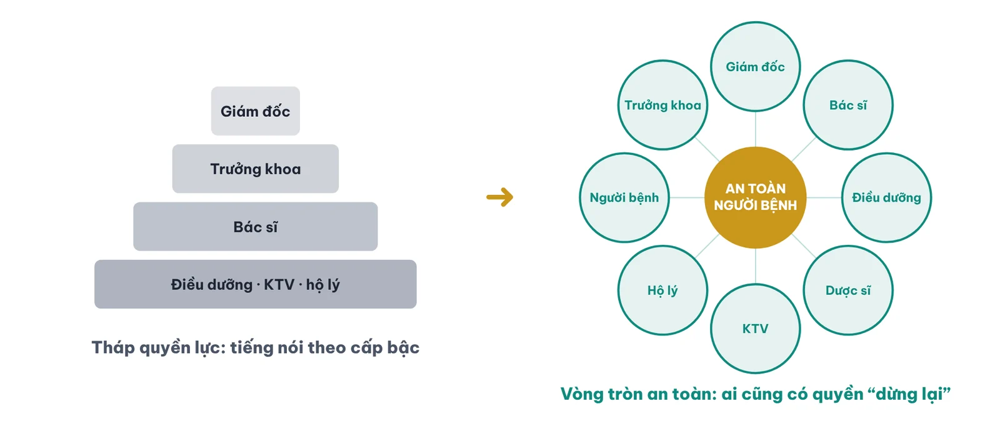
Phân 21 – Phi thuyết sở thuyết phân
非說所說分第二十一 Thuyết pháp mà không pháp để thuyết
I. NGUYÊN VĂN CHỮ HÁN, PHIÊN ÂM VÀ DỊCH NGHĨA
1. Nguyên văn chữ Hán
須菩提。汝勿謂如來作是念。我當有所說法。莫作是念。何以故。若人言如來有所說法。即為謗佛。不能解我所說故。須菩提。說法者。無法可說。是名說法。
爾時慧命須菩提白佛言。世尊。頗有眾生。於未來世。聞說是法。生信心不。
佛言。須菩提。彼非眾生。非不眾生。何以故。須菩提。眾生眾生者。如來說非眾生。是名眾生。
2. Phiên âm Hán-Việt
Tu-bồ-đề! Nhữ vật vị Như Lai tác thị niệm: “Ngã đương hữu sở thuyết pháp”. Mạc tác thị niệm! Hà dĩ cố? Nhược nhân ngôn Như Lai hữu sở thuyết pháp, tức vi báng Phật, bất năng giải ngã sở thuyết cố. Tu-bồ-đề! Thuyết pháp giả, vô pháp khả thuyết, thị danh thuyết pháp.
Nhĩ thời, Huệ Mạng Tu-bồ-đề bạch Phật ngôn: Thế Tôn! Phả hữu chúng sinh, ư vị lai thế, văn thuyết thị pháp, sinh tín tâm phủ?
Phật ngôn: Tu-bồ-đề! Bỉ phi chúng sinh, phi bất chúng sinh. Hà dĩ cố? Tu-bồ-đề! Chúng sinh chúng sinh giả, Như Lai thuyết phi chúng sinh, thị danh chúng sinh.6
3. Dịch nghĩa
“Này Tu-bồ-đề! Ông chớ bảo rằng Như Lai khởi niệm như vầy: 'Ta có thuyết pháp'. Chớ khởi niệm ấy! Vì cớ sao? Nếu có người nói Như Lai có thuyết pháp, tức là phỉ báng Phật, chẳng hiểu được lời Ta dạy. Này Tu-bồ-đề! Thuyết pháp chính là không có pháp gì có thể thuyết, tạm gọi là thuyết pháp.”
Bấy giờ, bậc Huệ Mạng Tu-bồ-đề bạch Phật rằng: “Bạch Thế Tôn, liệu có chúng sinh nào ở đời vị lai, khi nghe thuyết pháp này, có thể sinh khởi lòng tin chăng?”
Đức Phật dạy: “Này Tu-bồ-đề, họ chẳng phải là chúng sinh, cũng chẳng phải không phải chúng sinh. Vì cớ sao? Này Tu-bồ-đề, cái gọi là chúng sinh, chúng sinh ấy, Như Lai nói chẳng phải chúng sinh, tạm gọi là chúng sinh.”
II. GIẢI THÍCH NGHĨA LÝ CỐT TỦY
Phân 21 – “Phi thuyết sở thuyết” – phá chấp vào chính việc thuyết pháp, rồi nói về người nghe pháp ở đời sau.
1. Nói “Như Lai có thuyết pháp” là phỉ báng Phật
Đức Phật dặn: chớ cho rằng Như Lai nghĩ “Ta có pháp để nói”. Nếu ai nói Như Lai có thuyết pháp, người ấy phỉ báng Phật, vì không hiểu được điều Ta nói – “bất năng giải ngã sở thuyết cố”. “Thuyết pháp giả, vô pháp khả thuyết, thị danh thuyết pháp” – người thuyết pháp, không có pháp nào để nói, ấy gọi là thuyết pháp [6]. Đây lại là cấu trúc ba vế: thuyết pháp → vô pháp khả thuyết → thị danh thuyết pháp. Lời dạy không phải là một vật được trao từ tay người nói sang tay người nghe; nó là phương tiện để người nghe tự thấy. Chân lý vượt ngoài ngôn ngữ – “ngôn ngữ đạo đoạn” – nên ngôn ngữ chỉ là ngón tay chỉ trăng [19].
2. “Huệ mạng Tu-bồ-đề” và đoạn văn sáu mươi hai chữ
Đoạn tiếp theo bắt đầu bằng danh xưng “Huệ mạng Tu-bồ-đề” (慧命須菩提) – lần duy nhất trong bản La-thập dùng danh xưng này. Theo truyền thống, đoạn sáu mươi hai chữ này được thêm vào đời Đường, căn cứ bản dịch của Bồ-đề-lưu-chi, nơi danh xưng “huệ mạng” (dịch chữ āyuṣmat, “vị có thọ mạng”, một kính ngữ) được dùng thường xuyên [7,12]. Hầu hết các bản tụng hiện nay đều có đoạn này.
3. “Bỉ phi chúng sinh, phi bất chúng sinh”
Huệ mạng Tu-bồ-đề hỏi: đời sau có chúng sinh nào nghe pháp này mà sinh lòng tin không? Phật đáp: họ chẳng phải chúng sinh, chẳng phải không phải chúng sinh. Vì sao? Chúng sinh, Như Lai nói chẳng phải chúng sinh, gọi là chúng sinh. Về chân đế, không có một “chúng sinh” với tự tính cố định; về tục đế, vẫn có những con người đang mê lầm và đau khổ. Thấy cả hai mặt, Bồ-tát vừa không coi thường ai, vừa không bỏ rơi ai [5,13].
III. PHƯƠNG PHÁP HÀNH TRÌ: NÓI MÀ KHÔNG CHẤP LỜI
- Nghe ý, không bắt chữ: trong trao đổi, tìm điều người kia muốn chỉ ra thay vì bắt lỗi câu chữ.
- Dạy như cùng học: khi hướng dẫn người khác, nhắc mình rằng lời mình nói chỉ là một cách diễn đạt; người học có thể thấy điều mình chưa thấy.
- Không dán nhãn cố định cho ai: trước một đồng nghiệp hay người bệnh “khó”, nhớ “phi chúng sinh, phi bất chúng sinh” – họ đang bị hoàn cảnh chi phối, không phải bản chất cố định.
IV. ỨNG DỤNG: TRUYỀN ĐẠT PHÁC ĐỒ VÀ LẮNG NGHE TUYẾN ĐẦU
1. Phổ biến hướng dẫn điều trị: “vô pháp khả thuyết”
Một hướng dẫn điều trị mới chỉ có giá trị khi được hiểu và áp dụng tại giường bệnh. Đọc slide cho đủ buổi tập huấn là “chấp có pháp để nói”. Các nghiên cứu về đào tạo cho thấy học qua tình huống thật, có thực hành và phản hồi, tạo thay đổi hành vi tốt hơn nghe giảng thụ động [32,73]. Tình huống dưới đây so sánh hai cách phổ biến cùng một hướng dẫn.
2. Văn bản từ trên xuống và tiếng nói từ dưới lên
Người làm quản lý chất lượng không thể “thuyết pháp” chỉ bằng văn bản ban hành từ phòng làm việc. Đi hiện trường, hỏi người làm việc trực tiếp về điểm nghẽn, mời họ cùng thiết kế quy trình là cách để lời nói trở thành thực hành [94,101]. Khoảng cách giữa công việc như được tưởng tượng và công việc như được làm thực tế chỉ thu hẹp khi có lắng nghe (xem Chương 25) [102].
3. Nhìn sai sót của nhân viên qua lăng kính hệ thống
“Người này năng lực kém”, “khoa ấy lúc nào cũng sai” là những nhãn cố định. Tinh thần “phi chúng sinh, thị danh chúng sinh” gợi người quản lý nhìn sai sót như mắt xích cuối của nhiều điều kiện hệ thống, rồi hỗ trợ, đào tạo và sửa điều kiện làm việc trước khi kết luận về con người [40,71].
TÌNH HUỐNGPhổ biến phác đồ mới: đọc slide hay mô phỏng? (mô phỏng từ thực tế)
Khi hướng dẫn chẩn đoán, điều trị mới được ban hành, khoa A tổ chức một buổi đọc slide 90 phút cho toàn khoa; ba tháng sau, kiểm tra hồ sơ cho thấy nhiều điểm mới chưa được áp dụng. Khoa B làm khác: chia nhỏ thành năm buổi 20 phút tại giao ban, mỗi buổi một tình huống lâm sàng thật của khoa; bác sĩ trẻ tự tìm câu trả lời trong hướng dẫn, người hướng dẫn chỉ đặt câu hỏi. Mức độ áp dụng ở khoa B cao hơn hẳn.
“Thuyết pháp giả, vô pháp khả thuyết, thị danh thuyết pháp” – người dạy giỏi không “rót” phác đồ vào đầu người học, mà tạo điều kiện để người học tự thấy. Cùng tinh thần ấy, lắng nghe nhân viên tuyến đầu – những người biết rõ nhất công việc thực tế – là nguồn cải tiến quy trình quý giá nhất [103].
ĐIỂM THEN CHỐTĐiểm then chốt
- Ai nói Như Lai có thuyết pháp là phỉ báng Phật: pháp thật không thể đóng gói thành lời.
- Đào tạo hiệu quả là huấn luyện bằng câu hỏi và tình huống, không phải đọc chép.
- Đánh giá nhân sự “phi chúng sinh”: không đóng khung con người vào một nhãn cố định.
SUY NGẪMCâu hỏi suy ngẫm
1. Buổi đào tạo gần nhất của khoa có bao nhiêu phần trăm thời gian người học được tự suy nghĩ, thực hành?
2. Ý kiến nào của nhân viên tuyến đầu gần đây đã làm thay đổi một quy trình của khoa?
Phân 22 – Vô pháp khả đắc phân
無法可得分第二十二 Không mảy may pháp nào có thể đắc
I. NGUYÊN VĂN CHỮ HÁN, PHIÊN ÂM VÀ DỊCH NGHĨA
1. Nguyên văn chữ Hán
須菩提白佛言。世尊。佛得阿耨多羅三藐三菩提。為無所得耶。
佛言。如是如是。須菩提。我於阿耨多羅三藐三菩提。乃至無有少法可得。是名阿耨多羅三藐三菩提。
2. Phiên âm Hán-Việt
Tu-bồ-đề bạch Phật ngôn: Thế Tôn! Phật đắc A-nậu-đa-la Tam-miệu Tam-bồ-đề, vi vô sở đắc gia?
Phật ngôn: Như thị! Như thị! Tu-bồ-đề! Ngã ư A-nậu-đa-la Tam-miệu Tam-bồ-đề, nãi chí vô hữu thiểu pháp khả đắc, thị danh A-nậu-đa-la Tam-miệu Tam-bồ-đề.
3. Dịch nghĩa
Trưởng lão Tu-bồ-đề bạch Phật rằng: “Bạch Thế Tôn, Đức Phật đắc quả Vô thượng Chánh đẳng Chánh giác, thật sự là không có chỗ nào đắc được hay sao?”
Đức Phật dạy: “Đúng thế, đúng thế! Này Tu-bồ-đề, Ta đối với quả Vô thượng Chánh đẳng Chánh giác, cho đến không có một chút pháp nhỏ nào có thể đắc được, ấy mới tạm gọi là Vô thượng Chánh đẳng Chánh giác.”
II. GIẢI THÍCH NGHĨA LÝ CỐT TỦY
Phân 22 – “Vô pháp khả đắc” – là một trong những phân ngắn nhất, nhưng là lời xác nhận trực tiếp nhất của Đức Phật về bản chất của giác ngộ.
1. Lời hỏi và lời ấn chứng
Tu-bồ-đề thưa: Phật đắc Vô thượng Chánh đẳng Chánh giác, là không có chỗ đắc chăng? Phật đáp: “Như thị, như thị!” – đúng vậy, đúng vậy. Ta đối với Vô thượng Chánh đẳng Chánh giác, cho đến không có một chút pháp nào có thể đắc – “nãi chí vô hữu thiểu pháp khả đắc” – ấy gọi là Vô thượng Chánh đẳng Chánh giác [6]. Các phân trước (7, 10, 17) đã nhiều lần nói “thật vô sở đắc”; ở đây chính Đức Phật xác nhận bằng kinh nghiệm của mình.
2. Vì sao “không có chút pháp nào”?
Nếu còn một pháp nhỏ để đắc, sẽ còn người đắc và vật được đắc – tức còn năng và sở, còn bốn tướng. Giác ngộ theo nghĩa của kinh không phải là thêm vào một điều gì, mà là thấy rõ điều vốn có khi những chấp trước được buông [4,19]. Vì không có gì được thêm vào, nên mới tạm gọi bằng một cái tên lớn nhất – “Vô thượng Chánh đẳng Chánh giác”.
3. Học bằng phép trừ
Truyền thống thiền thường diễn đạt ý này bằng hình ảnh chén trà phải được đổ bớt mới rót thêm được. Tu tập Bát-nhã giống phép trừ hơn phép cộng: bớt đi định kiến, bớt đi nhu cầu khẳng định mình, cho đến khi “không có chút pháp nào” còn được nắm giữ [67].
III. PHƯƠNG PHÁP HÀNH TRÌ: KHÔNG GIỮ LẠI CẢ TRẢI NGHIỆM TỐT
- Không bám vào trạng thái an lạc: khi ngồi yên thấy tâm lắng, không biến trạng thái ấy thành điều phải giữ hay phải đạt lại.
- Học như người trừ bớt: sau mỗi lần học, hỏi “mình đã bỏ được định kiến nào?” bên cạnh “mình đã biết thêm điều gì?”.
- Làm hết mình, không sở hữu kết quả: thành công hay thất bại của một dự án không phải là định nghĩa về con người mình.
IV. ỨNG DỤNG: KHÔNG CÓ ĐIỂM “ĐẮC” TRONG AN TOÀN NGƯỜI BỆNH
1. Kiến thức y khoa không phải vật sở hữu
Y học thay đổi liên tục; một khuyến cáo đúng hôm nay có thể được điều chỉnh khi có bằng chứng mới. Người thầy thuốc coi kiến thức của mình là “đã đắc” sẽ chậm cập nhật và khó chấp nhận ý kiến khác. Tâm thế “vô pháp khả đắc” là học suốt đời – không phải vì thiếu tự tin, mà vì tôn trọng sự phức tạp của người bệnh và của khoa học.
2. Chứng nhận chất lượng không phải là “chiến lợi phẩm”
Coi một chứng nhận là điểm kết thúc là coi chất lượng như một vật đã đắc. Bộ tiêu chuẩn JCI, Bộ tiêu chí chất lượng bệnh viện Việt Nam và ISO 9001 đều đặt cải tiến liên tục ở trung tâm, với các chu trình đo lường – phân tích – hành động lặp lại [48,49,59]. Deming đã cảnh báo về việc quản lý bằng mục tiêu số và khẩu hiệu thay cho cải tiến hệ thống [104].
3. Chỉ số chỉ là ngón tay chỉ trăng
Một chỉ số đẹp – tỷ lệ hài lòng 98%, tỷ lệ tuân thủ 100% – có thể chỉ phản ánh cách đo, không phản ánh thực tế. Tình huống dưới đây cho thấy khi thay đổi phương pháp khảo sát cho khách quan hơn, con số giảm nhưng giá trị thông tin tăng lên. Khi chỉ số trở thành mục tiêu để được khen thưởng, nó dễ mất giá trị phản ánh [47,105].
TÌNH HUỐNGTỷ lệ hài lòng 98% (mô phỏng từ thực tế)
Một khoa báo cáo tỷ lệ người bệnh hài lòng 98% liên tục nhiều quý. Rà soát phương pháp cho thấy phiếu khảo sát do chính điều dưỡng của khoa phát và thu tại giường, ngay trước khi người bệnh nhận giấy ra viện. Khi chuyển sang khảo sát độc lập qua điện thoại sau ra viện một tuần do phòng QLCL thực hiện, tỷ lệ hài lòng còn 82% – nhưng kèm theo đó là hàng chục góp ý cụ thể về thời gian chờ, cách giải thích thuốc, tiếng ồn ban đêm. Khoa có trong tay dữ liệu thật để cải tiến.
“Vô hữu thiểu pháp khả đắc” – không mảy may pháp nào có thể nắm giữ. Chất lượng không phải chiến lợi phẩm để đạt rồi cất vào tủ, mà là một tiến trình. Khi một thước đo trở thành mục tiêu, nó không còn là thước đo tốt [47].
ĐIỂM THEN CHỐTĐiểm then chốt
- Vô thượng chánh giác không có chút pháp nào để đắc: không có “điểm về đích” của chất lượng.
- Cái tôi “bác sĩ toàn năng” là một dạng chấp sở đắc; y học luôn có giới hạn.
- KPI phải đo giá trị thực; phương pháp thu thập dữ liệu quyết định độ trung thực của chỉ số.
SUY NGẪMCâu hỏi suy ngẫm
1. Chỉ số nào của khoa anh/chị “quá đẹp để là thật”? Phương pháp thu thập của nó có độc lập không?
2. Anh/chị chấp nhận thế nào khi dữ liệu thật xấu hơn dữ liệu cũ?
Phân 23 – Tịnh tâm hành thiện phân
淨心行善分第二十三 Pháp bình đẳng, không có cao thấp
I. NGUYÊN VĂN CHỮ HÁN, PHIÊN ÂM VÀ DỊCH NGHĨA
1. Nguyên văn chữ Hán
復次。須菩提。是法平等。無有高下。是名阿耨多羅三藐三菩提。以無我無人無眾生無壽者。修一切善法。即得阿耨多羅三藐三菩提。須菩提。所言善法者。如來說即非善法。是名善法。
2. Phiên âm Hán-Việt
Phục thứ, Tu-bồ-đề! Thị pháp bình đẳng, vô hữu cao hạ, thị danh A-nậu-đa-la Tam-miệu Tam-bồ-đề. Dĩ vô ngã, vô nhân, vô chúng sinh, vô thọ giả, tu nhất thiết thiện pháp, tức đắc A-nậu-đa-la Tam-miệu Tam-bồ-đề. Tu-bồ-đề! Sở ngôn thiện pháp giả, Như Lai thuyết tức phi thiện pháp, thị danh thiện pháp.
3. Dịch nghĩa
“Lại nữa, này Tu-bồ-đề! Pháp này bình đẳng, không có cao thấp, ấy gọi là Vô thượng Chánh đẳng Chánh giác. Lấy tâm không ngã, không nhân, không chúng sinh, không thọ giả mà tu tất cả các pháp lành, thì liền đắc quả Vô thượng Chánh đẳng Chánh giác. Này Tu-bồ-đề! Cái gọi là pháp lành ấy, Như Lai nói tức chẳng phải pháp lành, tạm gọi là pháp lành.”
II. GIẢI THÍCH NGHĨA LÝ CỐT TỦY
Phân 23 – “Tịnh tâm hành thiện” – nối liền với Phân 22. Sau khi nói “không có chút pháp nào để đắc”, kinh lập tức chặn trước một hiểu lầm: vậy thì khỏi cần làm điều thiện?
1. “Thị pháp bình đẳng, vô hữu cao hạ”
Pháp ấy bình đẳng, không có cao thấp, nên gọi là Vô thượng Chánh đẳng Chánh giác [6]. Giác ngộ không phải một nấc thang để đứng cao hơn người khác; tính giác nơi chư Phật không thêm, nơi chúng sinh không bớt. Hiểu như vậy, người tu không tự ti (“mình không thể”) cũng không tự cao (“mình hơn người”).
2. Lìa bốn tướng mà tu tất cả thiện pháp
“Dĩ vô ngã, vô nhân, vô chúng sinh, vô thọ giả, tu nhất thiết thiện pháp, tức đắc A-nậu-đa-la Tam-miệu Tam-bồ-đề” – lấy tâm không ngã, không nhân, không chúng sinh, không thọ giả mà tu tất cả pháp lành, liền đắc Vô thượng Bồ-đề. Đây là chỗ Bát-nhã và từ bi gặp nhau: thấy không mà không bỏ việc thiện; làm thiện mà không dính vào cái tôi làm thiện. Chỉ có một trong hai đều lệch: chấp không thì thành tiêu cực, vô trách nhiệm; làm thiện mà chấp ngã thì việc thiện trở thành phương tiện nuôi bản ngã [13,79].
3. Cú thức tam đoạn về pháp lành
Kinh kết: “Sở ngôn thiện pháp giả, Như Lai thuyết tức phi thiện pháp, thị danh thiện pháp” – áp công thức A → tức phi A → thị danh A:
- Thiện pháp (A): việc lành cụ thể – chăm sóc, giúp đỡ, giữ giới.
- Tức phi thiện pháp: việc lành không có tự tính cố định, không phải một “khối công đức” để tích trữ.
- Thị danh thiện pháp: vì thấy như vậy, người tu làm việc lành một cách tự do, không mệt mỏi vì không mang theo gánh nặng của sự ghi công.
III. PHƯƠNG PHÁP HÀNH TRÌ: LÀM LÀNH VỚI TÂM BÌNH ĐẲNG
- Một việc lành không ai biết mỗi ngày: làm và không kể lại.
- Đối xử bình đẳng: chào hỏi, cảm ơn người lao công với cùng sự trân trọng như với cấp trên.
- Cảnh giác “ngụy biện tính Không”: không dùng ý “không có gì để đắc” để biện minh cho sự thờ ơ hay cẩu thả.
IV. ỨNG DỤNG: BÌNH ĐẲNG TRONG CHĂM SÓC VÀ TRONG XỬ LÝ SỰ CỐ
1. Mọi người bệnh có giá trị như nhau
Người bệnh nhiễm HIV, người nghiện chất, người vô gia cư, người mắc bệnh truyền nhiễm bị kỳ thị đều có quyền được chăm sóc như mọi người bệnh khác. Luật Khám bệnh, chữa bệnh năm 2023 quy định nguyên tắc bình đẳng, không kỳ thị, phân biệt đối xử với người bệnh [106]. “Vô hữu cao hạ” trong y đức là chất lượng chăm sóc không thay đổi theo địa vị hay chẩn đoán của người bệnh.
2. Văn hóa công bằng không phân biệt chức danh
Nếu cùng một hành vi đi tắt nhưng người có chức danh cao chỉ bị nhắc nhở miệng còn người ở vị trí thấp bị kỷ luật, văn hóa báo cáo sẽ sụp đổ. Văn hóa công bằng đánh giá hành vi theo bản chất của nó – sai sót, hành vi có rủi ro hay hành vi liều lĩnh – không theo chức danh của người thực hiện [71,81]. Tình huống dưới đây cho thấy hậu quả của sự thiếu nhất quán ấy.
3. Thiện pháp không cần ghi công
Những sáng kiến cải tiến, những lần kèm cặp, những ca trực thay đồng nghiệp là “thiện pháp” của một tập thể. Ghi nhận công khai và đúng người – không gom về người đứng đầu – vừa là công bằng, vừa nuôi động lực nội tại của nhân viên [107].
TÌNH HUỐNGHai sự cố, hai cách xử lý (mô phỏng từ thực tế)
Trong cùng một tháng, một bác sĩ cao cấp bỏ qua bước Time-out – tạm dừng để cả ê-kíp cùng xác nhận người bệnh, vị trí mổ và phương pháp mổ ngay trước khi rạch da – vì “mổ gấp”, và một điều dưỡng bỏ qua bước kiểm tra kép insulin vì “thiếu người”. Cả hai đều không gây tổn hại. Bác sĩ được “nhắc nhở miệng”; điều dưỡng phải viết kiểm điểm và bị trừ thi đua. Tin lan nhanh trong bệnh viện; số báo cáo sự cố của điều dưỡng tháng sau giảm rõ. Hội đồng QLCL quyết định áp dụng thống nhất thuật toán văn hóa công bằng cho mọi sự cố: phân loại hành vi (sai sót, hành vi rủi ro, hành vi liều lĩnh) trước, chức danh không phải là biến số [71,81].
“Thị pháp bình đẳng, vô hữu cao hạ” – pháp này bình đẳng, không có cao thấp. Văn hóa công bằng chỉ tồn tại khi nó công bằng với mọi người, ở mọi cấp. Cũng Phân 23 dạy “tu nhất thiết thiện pháp”: mọi ý tưởng cải tiến – từ giáo sư đến hộ lý – đều đáng được lắng nghe.
ĐIỂM THEN CHỐTĐiểm then chốt
- Pháp bình đẳng không cao thấp là nền của văn hóa lên tiếng và văn hóa công bằng.
- Dùng tâm không ngã, không nhân mà làm mọi việc thiện: cải tiến liên tục (Kaizen, PDSA) từ mọi người.
- Một quyết định xử lý thiếu nhất quán có thể phá hủy văn hóa báo cáo của cả bệnh viện.
SUY NGẪMCâu hỏi suy ngẫm
1. Ở bệnh viện của anh/chị, chức danh có làm thay đổi cách xử lý một sự cố tương tự không?
2. Ý tưởng cải tiến gần nhất đến từ một người ở vị trí “thấp” là gì?
Phân 24 – Phúc trí vô tỷ phân
福智無比分第二十四 Phúc trí không gì sánh được
I. NGUYÊN VĂN CHỮ HÁN, PHIÊN ÂM VÀ DỊCH NGHĨA
1. Nguyên văn chữ Hán
須菩提。若三千大千世界中。所有諸須彌山王。如是等七寶聚。有人持用布施。若人以此般若波羅蜜經。乃至四句偈等。受持讀誦。為他人說。於前福德。百分不及一。百千萬億分。乃至算數譬喻所不能及。
2. Phiên âm Hán-Việt
Tu-bồ-đề! Nhược tam thiên đại thiên thế giới trung, sở hữu chư Tu-di sơn vương, như thị đẳng thất bảo tụ, hữu nhân trì dụng bố thí. Nhược nhân dĩ thử Bát-nhã Ba-la-mật kinh, nãi chí tứ cú kệ đẳng, thọ trì độc tụng, vị tha nhân thuyết; ư tiền phúc đức, bách phần bất cập nhất, bách thiên vạn ức phần, nãi chí toán số thí dụ sở bất năng cập.
3. Dịch nghĩa
“Này Tu-bồ-đề! Nếu trong cõi ba nghìn đại thiên thế giới có bao nhiêu ngọn núi chúa Tu-di, có người gom góp các khối bảy báu to lớn bằng ngần ấy ngọn núi Tu-di đem ra dùng để bố thí. Lại nếu có người đem kinh Bát-nhã Ba-la-mật này, cho đến chỉ một bài kệ bốn câu, thọ trì, đọc tụng và vì người khác mà giảng nói; thì đem so với phúc đức trước, phúc đức ấy không bằng một phần trăm, một phần trăm nghìn muôn ức, cho đến dùng toán số hay thí dụ cũng không thể nào sánh kịp.”
II. GIẢI THÍCH NGHĨA LÝ CỐT TỦY
Phân 24 – “Phúc trí vô tỷ”, phúc và trí không thể so sánh – là lần so sánh phúc đức thứ sáu trong kinh, với vật bố thí lớn nhất từ trước đến nay.
1. Bảy báu chất cao bằng các núi chúa Tu-di
Trong vũ trụ quan Phật giáo, mỗi tiểu thế giới có một núi Tu-di ở trung tâm; một tam thiên đại thiên thế giới gồm một tỷ tiểu thế giới. Kinh nói: gom bảy báu thành khối cao bằng tất cả các núi chúa Tu-di trong ba nghìn đại thiên thế giới mà bố thí, phúc ấy không bằng một phần trăm, một phần trăm nghìn vạn ức – cho đến không thể dùng toán số, thí dụ mà so sánh – với phúc của người thọ trì, đọc tụng và vì người khác giảng nói dù chỉ bốn câu kệ của kinh này [6].
2. Vì sao “vô tỷ”?
So sánh chỉ có nghĩa giữa những thứ cùng loại. Phúc hữu vi, dù lớn đến đâu, vẫn nằm trong phạm trù đo đếm được; trí tuệ thấy tính Không thuộc một chiều khác – nó thay đổi chính người nhận và người cho [3,19]. Vì vậy “vô tỷ” không chỉ có nghĩa là “lớn hơn nhiều”, mà là “không cùng thước đo”.
3. Phúc và trí song tu
Đọc phân này không nên hiểu là coi nhẹ bố thí vật chất. Truyền thống Đại thừa nói về “phúc trí nhị nghiêm” – trang nghiêm bằng cả phúc và trí. Điều kinh nhấn mạnh là thứ tự ưu tiên và chiều sâu: phúc không có trí dễ thành nơi nuôi bản ngã; trí đi cùng phúc mới làm phúc trở nên thanh tịnh.
III. PHƯƠNG PHÁP HÀNH TRÌ: PHƯỚC TRÍ SONG TU
- Một “câu kệ” cho mỗi ngày: chọn một câu kinh ngắn và để nó dẫn dắt cách mình ứng xử trong ngày.
- Cho kèm với trao hiểu biết: khi giúp đỡ ai, cân nhắc điều gì giúp họ tự đứng vững lâu dài.
- Giảng nói bằng cách sống: đôi khi cách truyền đạt tốt nhất là phong thái điềm tĩnh và công bằng của chính mình trong một tình huống khó.
IV. ỨNG DỤNG: KHI LỜI NÓI CŨNG LÀ ĐIỀU TRỊ
1. Truyền đạt tin xấu là một năng lực lâm sàng
Thông báo một chẩn đoán nặng là một trong những thời điểm người bệnh nhớ mãi. Cách nói – ở đâu, với ai, bằng ngôn ngữ nào, cho thời gian để hỏi – ảnh hưởng đến khả năng người bệnh hiểu, chấp nhận và tham gia điều trị. Quy trình sáu bước SPIKES là một khung được dùng rộng rãi để huấn luyện kỹ năng này [108]. Tình huống dưới đây kể về một người mẹ trẻ nhiễm HIV nhận chẩn đoán u lympho – và sự khác biệt giữa thông báo ở hành lang và thông báo trong phòng riêng.
2. Đào tạo an toàn là “bốn câu kệ” của bệnh viện
Mỗi buổi hướng dẫn nhận diện người bệnh, mỗi lần mô phỏng xử trí phản vệ, mỗi bài học rút ra từ một sự cố là một lần “vì người khác giảng nói”. Giá trị của chúng không thể so với giá trị của thiết bị theo cùng thước đo, vì chúng thay đổi hành vi của những người sẽ dùng thiết bị ấy. Đào tạo mô phỏng có cấu trúc, có phản hồi là phương pháp được WHO khuyến khích trong giáo dục an toàn người bệnh [32].
3. Cân nhắc khi phân bổ ngân sách
Kế hoạch đầu tư hằng năm thường dễ ghi nhận thiết bị hơn là thời gian đào tạo và kèm cặp. Phân 24 gợi một câu hỏi cho người quản lý: trong mỗi khoản đầu tư thiết bị, đã có khoản tương ứng cho việc con người học cách dùng nó an toàn chưa?
TÌNH HUỐNGThông báo một tin xấu (mô phỏng từ thực tế)
Một người phụ nữ 38 tuổi, mẹ của hai con nhỏ, được chẩn đoán u lympho trên nền nhiễm HIV giai đoạn muộn. Bác sĩ trẻ định thông báo nhanh tại hành lang giữa giờ đi buồng. Bác sĩ hướng dẫn ngăn lại, mời người bệnh và chồng vào phòng riêng, tắt điện thoại, ngồi ngang tầm mắt. Bà dùng trình tự sáu bước SPIKES: chuẩn bị bối cảnh, tìm hiểu người bệnh đã biết gì, hỏi họ muốn biết đến mức nào, cung cấp thông tin từng phần, đón nhận cảm xúc, rồi cùng lập kế hoạch tiếp theo [108]. Cuộc nói chuyện kéo dài 35 phút; người bệnh khóc, rồi hỏi về điều trị cho con mình.
Bố thí bảy báu khắp tam thiên đại thiên thế giới là chữa phần thân; một cuộc trò chuyện đúng cách là “trí tuệ” giúp người bệnh đi qua nỗi sợ – phúc trí không gì sánh được.
ĐIỂM THEN CHỐTĐiểm then chốt
- Phúc của trí tuệ Bát-nhã vượt xa phúc của của cải: đầu tư vào năng lực tư duy và giao tiếp.
- Cứu độ trọn vẹn là chữa thân kết hợp nâng đỡ tâm; giao tiếp là một kỹ năng lâm sàng phải được đào tạo.
- Người làm đào tạo và QLCL gieo “phúc trí” khi trao kỹ năng mềm có cấu trúc.
SUY NGẪMCâu hỏi suy ngẫm
1. Ở khoa anh/chị, tin xấu thường được thông báo ở đâu, bởi ai, trong bao lâu?
2. Kỹ năng giao tiếp nào anh/chị muốn được đào tạo bài bản hơn?
Chương 14
VÔ NGÃ CỨU ĐỘ VÀ PHÁP THÂN VÔ TƯỚNG (PHÂN 25–28)
Phân 25 khẳng định Như Lai không thấy có chúng sinh nào được Ngài độ, và “phàm phu tắc phi phàm phu”. Phân 26 chứa bài kệ bốn câu nổi tiếng: “Nhược dĩ sắc kiến ngã, dĩ âm thanh cầu ngã, thị nhân hành tà đạo, bất năng kiến Như Lai.” Phân 27 chặn trước cách hiểu hư vô: người phát tâm Bồ-đề không nói tướng đoạn diệt. Phân 28 dạy Bồ-tát không thọ, không tham phúc đức. Bốn phân này là nền cho mối quan hệ thầy thuốc – người bệnh như hai đối tác, cho việc đánh giá chất lượng bằng thực chất, và cho văn hóa công bằng có trách nhiệm.
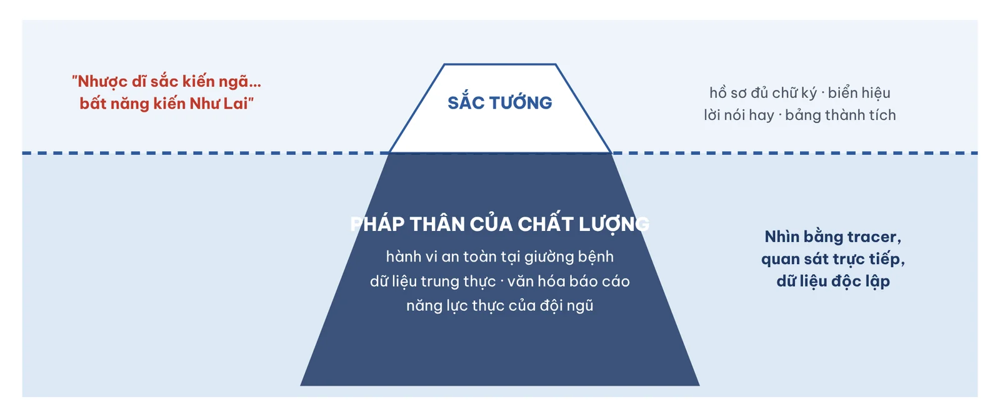
Phân 25 – Hóa vô sở hóa phân
化無所化分第二十五 Giáo hóa mà không thấy người được hóa
I. NGUYÊN VĂN CHỮ HÁN, PHIÊN ÂM VÀ DỊCH NGHĨA
1. Nguyên văn chữ Hán
須菩提。於意云何。汝等勿謂如來作是念。我當度眾生。須菩提。莫作是念。何以故。實無有眾生如來度者。若有眾生如來度者。如來則有我人眾生壽者。須菩提。如來說有我者。則非有我。而凡夫之人。以為有我。須菩提。凡夫者。如來說則非凡夫。是名凡夫。
2. Phiên âm Hán-Việt
Tu-bồ-đề! Ư ý vân hà? Nhữ đẳng vật vị Như Lai tác thị niệm: “Ngã đương độ chúng sinh”. Tu-bồ-đề! Mạc tác thị niệm! Hà dĩ cố? Thực vô hữu chúng sinh Như Lai độ giả. Nhược hữu chúng sinh Như Lai độ giả, Như Lai tắc hữu ngã, nhân, chúng sinh, thọ giả. Tu-bồ-đề! Như Lai thuyết hữu ngã giả, tắc phi hữu ngã, nhi phàm phu chi nhân dĩ vi hữu ngã. Tu-bồ-đề! Phàm phu giả, Như Lai thuyết tắc phi phàm phu, thị danh phàm phu.7
3. Dịch nghĩa
“Này Tu-bồ-đề! Ý ông nghĩ sao? Các ông chớ bảo rằng Như Lai khởi niệm như vầy: 'Ta sẽ cứu độ chúng sinh'. Này Tu-bồ-đề, chớ khởi niệm ấy! Vì cớ sao? Thật không có chúng sinh nào mà Như Lai cứu độ cả. Nếu có chúng sinh mà Như Lai độ, thì Như Lai ắt có ngã, nhân, chúng sinh, thọ giả. Này Tu-bồ-đề! Như Lai nói 'có ta', tức chẳng phải có ta, mà kẻ phàm phu lại cho là có ta. Này Tu-bồ-đề! Kẻ phàm phu, Như Lai nói tức chẳng phải phàm phu, tạm gọi là phàm phu.”
II. GIẢI THÍCH NGHĨA LÝ CỐT TỦY
Phân 25 – “Hóa vô sở hóa”, giáo hóa mà không có ai được giáo hóa – trở lại chủ đề của Phân 3 ở một tầng sâu hơn: lần này nói về chính Như Lai.
1. “Thực vô hữu chúng sinh Như Lai độ giả”
Đức Phật dặn: chớ cho rằng Như Lai nghĩ “Ta sẽ độ chúng sinh”. Vì sao? Thật không có chúng sinh nào được Như Lai độ. Nếu có chúng sinh được Như Lai độ, thì Như Lai có ngã, nhân, chúng sinh, thọ giả [6]. Ở Phân 3, lời dạy dành cho Bồ-tát; ở đây, chính Đức Phật áp dụng cho mình – không có ngoại lệ. Sự giải thoát rốt ráo là việc mỗi người tự thấy; người dẫn đường chỉ là duyên [19].
2. “Hữu ngã giả, tắc phi hữu ngã”
Như Lai nói “có ngã” – tức không phải có ngã – nhưng phàm phu cho là có ngã. Đức Phật vẫn xưng “Ta” trong lời nói, như mọi người, nhưng chữ “Ta” ấy chỉ là quy ước để giao tiếp, không phải sự khẳng định một bản ngã cố định [3].
3. Cú thức tam đoạn về phàm phu
“Phàm phu giả, Như Lai thuyết tắc phi phàm phu, thị danh phàm phu” (vế cuối có trong bản tụng lưu hành; xem chú thích ở phần nguyên văn) – áp công thức A → tức phi A → thị danh A:
- Phàm phu (A): con người đang bị vô minh, tham sân che lấp.
- Tắc phi phàm phu: không có ai là phàm phu theo nghĩa cố định, vĩnh viễn; tính giác nơi phàm phu không khác nơi Phật.
- Thị danh phàm phu: vẫn dùng tên gọi để chỉ một trạng thái có thể thay đổi, để có con đường tu học.
Ngay cả nhãn “phàm phu” cũng không được biến thành một bản án.
III. PHƯƠNG PHÁP HÀNH TRÌ: BUÔNG VAI “NGƯỜI GIẢI CỨU”
- Giúp như hai người cùng đi: khi hướng dẫn hay chăm sóc ai, thay ý nghĩ “tôi giúp anh” bằng “chúng ta cùng làm điều này”.
- Không đóng khung người khác: nhãn “người kém”, “người khó bảo” chỉ mô tả một lúc, không mô tả một con người.
- Dùng danh xưng như công cụ: chức danh giúp phối hợp công việc; không để nó trở thành định nghĩa về giá trị của mình.
IV. ỨNG DỤNG: NGƯỜI BỆNH LÀ CHỦ THỂ, KHÔNG PHẢI ĐỐI TƯỢNG ĐƯỢC CỨU
1. Từ “người được cứu” đến “người cùng tham gia”
“Thực vô chúng sinh Như Lai độ” trong y khoa có thể đọc là: người bệnh không phải là đối tượng thụ động được nhân viên y tế “cứu”, mà là người cùng tham gia vào sự an toàn và hồi phục của mình. WHO đặt sự tham gia của người bệnh và gia đình là một trong bảy mục tiêu chiến lược của Kế hoạch hành động toàn cầu về an toàn người bệnh 2021–2030 [85]. Tình huống dưới đây – mời người bệnh hỏi nhân viên đã sát khuẩn tay chưa – là một cách thực hành cụ thể.
2. Gỡ bỏ “mặc cảm người cứu thế”
Thầy thuốc ở những chuyên khoa thường xuyên đối diện ca nặng dễ mang gánh nặng “mình phải cứu bằng được”. Khi người bệnh qua khỏi, gánh nặng ấy nuôi sự tự cao; khi không qua khỏi, nó trở thành dằn vặt. Thấy rõ sự hồi phục là kết quả của nhiều duyên giúp người thầy thuốc vẫn tận tâm mà không bị nghiền nát, đồng thời mở lòng với sự đóng góp của điều dưỡng, của gia đình và của chính người bệnh [109].
3. Không dán nhãn vĩnh viễn trong quản lý nhân sự
Một nhân viên từng gây sai sót, một khoa từng có chỉ số kém không phải là “phàm phu” cố định. Hỗ trợ, đào tạo và thiết kế lại điều kiện làm việc thường mang lại kết quả tốt hơn việc gắn nhãn và cô lập [81].
TÌNH HUỐNG“Hãy hỏi tôi đã rửa tay chưa” (mô phỏng từ thực tế)
Một khoa thí điểm chương trình mời người bệnh và người nhà tham gia an toàn người bệnh: tấm thẻ nhỏ đầu giường ghi “Anh/chị có quyền hỏi nhân viên y tế: Anh/chị đã sát khuẩn tay chưa?”; người bệnh được hướng dẫn đọc tên thuốc, đối chiếu vòng tay nhận diện. Ban đầu nhiều nhân viên ngại; sau vài tuần, chính họ thấy được nhắc nhở một cách thân thiện là điều tốt. Phong trào “Người bệnh vì an toàn người bệnh” của WHO đặt người bệnh vào vị trí đối tác, không phải đối tượng thụ động [85].
“Thực vô hữu chúng sinh Như Lai độ giả” – Như Lai không thấy có chúng sinh nào được Ngài độ. Thầy thuốc buông mặc cảm đấng cứu thế thì người bệnh trở thành chủ thể của an toàn; nhân viên tuyến đầu trở thành chủ thể của cải tiến. “Phàm phu tắc phi phàm phu”: không ai là “chỉ” người bệnh, “chỉ” hộ lý.
ĐIỂM THEN CHỐTĐiểm then chốt
- Giáo hóa mà không thấy người được giáo hóa: buông vai “người cứu”, trao quyền cho người được giúp.
- Người bệnh và gia đình là đối tác trong an toàn người bệnh.
- “Phàm phu tắc phi phàm phu”: không đóng khung ai vào một vai trò thấp kém cố định.
SUY NGẪMCâu hỏi suy ngẫm
1. Người bệnh ở khoa anh/chị có thực sự được mời tham gia vào an toàn của chính họ không?
2. Anh/chị cảm thấy thế nào khi một người bệnh nhắc anh/chị rửa tay?
Phân 26 – Pháp thân phi tướng phân
法身非相分第二十六 Dùng sắc thấy ta là hành tà đạo
I. NGUYÊN VĂN CHỮ HÁN, PHIÊN ÂM VÀ DỊCH NGHĨA
1. Nguyên văn chữ Hán
須菩提。於意云何。可以三十二相觀如來不。
須菩提言。如是如是。以三十二相觀如來。
佛言。須菩提。若以三十二相觀如來者。轉輪聖王。則是如來。
須菩提白佛言。世尊。如我解佛所說義。不應以三十二相觀如來。
爾時世尊而說偈言。
若以色見我。以音聲求我。
是人行邪道。不能見如來。
2. Phiên âm Hán-Việt
Tu-bồ-đề! Ư ý vân hà? Khả dĩ tam thập nhị tướng quán Như Lai phủ?
Tu-bồ-đề ngôn: Như thị! Như thị! Dĩ tam thập nhị tướng quán Như Lai.
Phật ngôn: Tu-bồ-đề! Nhược dĩ tam thập nhị tướng quán Như Lai giả, Chuyển luân Thánh vương tắc thị Như Lai.
Tu-bồ-đề bạch Phật ngôn: Thế Tôn! Như ngã giải Phật sở thuyết nghĩa, bất ưng dĩ tam thập nhị tướng quán Như Lai.
Nhĩ thời Thế Tôn nhi thuyết kệ ngôn:
Nhược dĩ sắc kiến ngã,
Dĩ âm thanh cầu ngã,
Thị nhân hành tà đạo,
Bất năng kiến Như Lai.
3. Dịch nghĩa
“Này Tu-bồ-đề! Ý ông nghĩ sao? Có thể dùng ba mươi hai tướng tốt mà quán sát thấy Như Lai chăng?”
Trưởng lão Tu-bồ-đề bạch: “Đúng thế! Đúng thế! Dùng ba mươi hai tướng tốt để quán thấy Như Lai.”
Đức Phật dạy: “Này Tu-bồ-đề! Nếu dùng ba mươi hai tướng tốt để quán thấy Như Lai, thì Chuyển luân Thánh vương chính là Như Lai rồi sao?”
Trưởng lão Tu-bồ-đề bạch Phật rằng: “Bạch Thế Tôn, theo như con hiểu nghĩa lý lời Phật dạy, chẳng nên dùng ba mươi hai tướng tốt mà quán thấy Như Lai.”
Bấy giờ, Đức Thế Tôn liền nói bài kệ rằng:
Nếu dùng sắc thấy Ta,
Dùng âm thanh cầu Ta,
Người ấy hành đạo tà,
Không thể thấy Như Lai.
II. GIẢI THÍCH NGHĨA LÝ CỐT TỦY
Phân 26 – “Pháp thân phi tướng” – chứa bài kệ bốn câu được nhắc đến nhiều nhất của kinh, chỉ sau kệ Lục Dụ ở Phân 32. Điều đáng chú ý là bài kệ xuất hiện ngay sau một câu trả lời “trượt” của Tu-bồ-đề.
1. Một câu trả lời theo quán tính
Ở Phân 5, Phân 13 và Phân 20, Tu-bồ-đề đều khẳng định không thể dùng thân tướng hay tướng hảo để thấy Như Lai. Ở đây, khi Đức Phật hỏi có thể dùng ba mươi hai tướng để quán Như Lai chăng, Tu-bồ-đề lại đáp: “Như thị, như thị”. Đức Phật không bác bỏ trực tiếp mà nêu một hệ quả: nếu vậy thì Chuyển luân Thánh vương – vị vua cũng có đủ ba mươi hai tướng – chính là Như Lai. Tu-bồ-đề lập tức nhận ra và tự điều chỉnh [6]. Có thể đọc đoạn này như một cách dạy: để người học tự thấy chỗ hổng trong lập luận của mình, thay vì chỉ nghe một lời phủ định.
2. Kệ “Nhược dĩ sắc kiến ngã”
Nhược dĩ sắc kiến ngã / Dĩ âm thanh cầu ngã / Thị nhân hành tà đạo / Bất năng kiến Như Lai. “Sắc” là hình tướng thấy được; “âm thanh” là những gì nghe được – kể cả lời kinh và lời cầu nguyện. “Tà đạo” ở đây nên hiểu là con đường lệch hướng hơn là theo nghĩa đạo đức: tìm cái vô tướng bằng phương tiện của giác quan thì không thể gặp.
Bản dịch của Bồ-đề-lưu-chi, bản Huyền Trang và bản Phạn còn có bài kệ thứ hai: chư Phật cần được thấy qua Pháp, vì thân của bậc Đạo sư là Pháp thân, mà pháp tính thì không phải đối tượng của thức phân biệt [1,2,7]. Bản Cưu-ma-la-thập chỉ giữ bài kệ đầu, nhưng ý của bài kệ thứ hai đã nằm sẵn trong tên phân: Pháp thân phi tướng.
3. Không phủ nhận hình tướng
Kệ này không có nghĩa là bỏ tượng Phật hay bỏ tụng kinh. Hình tướng và âm thanh là phương tiện nhắc nhở; điều kinh cảnh báo là lấy phương tiện làm đích đến. Ngay sau đó, Phân 27 sẽ chặn trước hiểu lầm ngược lại – cho rằng tướng là vô dụng.
III. PHƯƠNG PHÁP HÀNH TRÌ: NHÌN QUA HÌNH THỨC
- Lễ Phật để nhớ, không để cầu: mỗi lần thắp hương hay lạy Phật, tự hỏi điều này đang nhắc mình sống theo phẩm hạnh nào.
- Không bám vào trải nghiệm đặc biệt: hình ảnh, âm thanh hay cảm giác lạ khi ngồi thiền không phải dấu hiệu chứng đắc; ghi nhận và để chúng qua đi.
- Nghe lời khen như nghe một âm thanh: khen hay chê đều là “âm thanh”; giá trị của việc làm nằm ở kết quả thật, không ở phản hồi.
IV. ỨNG DỤNG: KHI VẺ NGOÀI CÓ THỂ ĐÁNH LỪA
1. “Tướng lâm sàng” có thể đánh lừa
Trong sốt xuất huyết Dengue, giai đoạn nguy hiểm thường đến khi người bệnh đã hết sốt và trông “khá hơn”; huyết áp tâm thu có thể còn bình thường trong khi hiệu áp hẹp dần và hematocrit tăng – biểu hiện của sốc còn bù [38,39]. Ở người cao tuổi, nhiễm khuẩn huyết có thể không sốt, chỉ biểu hiện bằng lơ mơ hay mệt lả. Các thang điểm cảnh báo sớm như NEWS2 được xây dựng để giảm sự phụ thuộc vào “ấn tượng chung” của người khám [95]. “Không dùng ba mươi hai tướng để quán Như Lai”, trong lâm sàng, là không kết luận người bệnh ổn chỉ vì trông ổn.
2. Hồ sơ đẹp chưa phải chất lượng
Một hồ sơ đầy đủ chữ ký, một bộ quy trình đóng bìa cẩn thận là “sắc tướng” của chất lượng. Phương pháp truy vết (tracer) ra đời chính là để vượt qua sắc tướng ấy: đi theo hành trình thật của một người bệnh, quan sát thao tác thật và trò chuyện với người làm việc thật [53]. Tình huống dưới đây – bệnh án điện tử có chỉ số sinh tồn giống hệt nhau suốt chín ngày – cho thấy một hồ sơ có thể “đầy đủ” mà không phản ánh người bệnh.
3. Đánh giá con người qua hành vi, không qua ấn tượng
Bằng cấp, phong thái tự tin hay lời trình bày trôi chảy là “sắc” và “thanh” trong tuyển dụng và đánh giá nhân sự. Từ đầu thập niên 1970, McClelland đã đề xuất đánh giá năng lực dựa trên hành vi thực tế thay vì các chỉ báo gián tiếp; phỏng vấn sự kiện hành vi – yêu cầu người được phỏng vấn kể lại cụ thể mình đã làm gì trong một tình huống có thật – là một ứng dụng của hướng tiếp cận này [99,110].
TÌNH HUỐNGBệnh án “hoàn hảo” trên hệ thống điện tử (mô phỏng từ thực tế)
Trong một đợt truy vết hồ sơ bệnh án điện tử, đoàn đánh giá nhận thấy phần theo dõi của một người bệnh nằm viện 12 ngày có mạch, nhiệt độ, huyết áp, nhịp thở giống hệt nhau từ ngày thứ 2 đến ngày thứ 10 – dấu hiệu của sao chép – dán. Trong khi đó, ghi chép điều dưỡng giấy ghi nhận người bệnh sốt lại vào ngày thứ 7. Hồ sơ điện tử “đẹp” và “đầy đủ”, nhưng không phản ánh người bệnh thật. Bệnh viện điều chỉnh phần mềm: cảnh báo khi nội dung trùng lặp, bắt buộc nhập lại các chỉ số sinh tồn mỗi lần – đúng tinh thần hồ sơ bệnh án điện tử phải phản ánh trung thực quá trình chăm sóc [111].
“Nhược dĩ sắc kiến ngã, dĩ âm thanh cầu ngã, thị nhân hành tà đạo, bất năng kiến Như Lai.” Dùng hình thức của hồ sơ để thấy chất lượng là đi đường sai. Pháp thân của chất lượng không nằm ở sắc tướng của văn bản.
ĐIỂM THEN CHỐTĐiểm then chốt
- Không thể dùng ba mươi hai tướng để quán Như Lai; Chuyển luân Thánh vương cũng có đủ ba mươi hai tướng.
- “Tướng lâm sàng” có thể đánh lừa; “ảo ảnh hồ sơ chuẩn” có thể che lấp rủi ro thật.
- Đánh giá nhân sự vượt qua “sắc” (vẻ ngoài) và “thanh” (lời nói hay).
SUY NGẪMCâu hỏi suy ngẫm
1. Ở khoa anh/chị, phần nào của hồ sơ đang được “điền cho đủ” thay vì ghi cho đúng?
2. Hệ thống có giúp người ghi chép trung thực dễ dàng hơn người ghi chép hình thức không?
Phân 27 – Vô đoạn vô diệt phân
無斷無滅分第二十七 Không rơi vào đoạn diệt
I. NGUYÊN VĂN CHỮ HÁN, PHIÊN ÂM VÀ DỊCH NGHĨA
1. Nguyên văn chữ Hán
須菩提。汝若作是念。如來不以具足相故。得阿耨多羅三藐三菩提。須菩提。莫作是念。如來不以具足相故。得阿耨多羅三藐三菩提。
須菩提。汝若作是念。發阿耨多羅三藐三菩提心者。說諸法斷滅。莫作是念。何以故。發阿耨多羅三藐三菩提心者。於法不說斷滅相。
2. Phiên âm Hán-Việt
Tu-bồ-đề! Nhữ nhược tác thị niệm: Như Lai bất dĩ cụ túc tướng cố, đắc A-nậu-đa-la Tam-miệu Tam-bồ-đề. Tu-bồ-đề! Mạc tác thị niệm: Như Lai bất dĩ cụ túc tướng cố, đắc A-nậu-đa-la Tam-miệu Tam-bồ-đề.
Tu-bồ-đề! Nhữ nhược tác thị niệm: Phát A-nậu-đa-la Tam-miệu Tam-bồ-đề tâm giả, thuyết chư pháp đoạn diệt. Mạc tác thị niệm! Hà dĩ cố? Phát A-nậu-đa-la Tam-miệu Tam-bồ-đề tâm giả, ư pháp bất thuyết đoạn diệt tướng.
3. Dịch nghĩa
“Này Tu-bồ-đề! Nếu ông nghĩ rằng: 'Như Lai không do đầy đủ các tướng mà đắc Vô thượng Chánh đẳng Chánh giác' – thì này Tu-bồ-đề, chớ nghĩ như vậy: 'Như Lai không do đầy đủ các tướng mà đắc Vô thượng Chánh đẳng Chánh giác.'
Này Tu-bồ-đề! Nếu ông nghĩ rằng: 'Người phát tâm Vô thượng Chánh đẳng Chánh giác thì nói các pháp là đoạn diệt' – chớ nghĩ như vậy! Vì sao? Người phát tâm Vô thượng Chánh đẳng Chánh giác, đối với các pháp, không nói tướng đoạn diệt.”
II. GIẢI THÍCH NGHĨA LÝ CỐT TỦY
Phân 27 – “Vô đoạn vô diệt” – là chiếc phanh của toàn bộ kinh. Phân 26 vừa nói không thể dùng ba mươi hai tướng để thấy Như Lai; người nghe rất dễ trượt sang cực đoan ngược lại: vậy tướng là vô nghĩa, công hạnh là vô nghĩa.
1. Hai lần “chớ nghĩ như vậy”
Đức Phật hai lần nói “mạc tác thị niệm”. Lần thứ nhất: chớ cho rằng Như Lai đắc Vô thượng Bồ-đề mà không liên quan gì đến sự viên mãn của các tướng – ba mươi hai tướng là kết quả của vô lượng kiếp tu phúc, không thể xem là thừa. Lần thứ hai: chớ cho rằng người phát tâm Bồ-đề thì chủ trương các pháp là đoạn diệt [6]. Không chấp tướng không có nghĩa là phủ nhận tướng.
2. Thường kiến và đoạn kiến
Phật giáo gọi tên hai cực đoan: thường kiến – cho rằng có một bản thể cố định, bất biến – và đoạn kiến – cho rằng rốt cùng mọi thứ là hư vô, nhân quả không còn ý nghĩa. Các phân trước chủ yếu phá thường kiến; Phân 27 chặn đoạn kiến. Kinh Bảo Tích có câu: thà khởi ngã kiến chất cao như núi Tu-di, còn hơn vì chấp không mà sinh tăng thượng mạn [112]. Người chấp có ít ra còn dè dặt trước nhân quả; người hiểu lệch về “không” thì không còn gì để dè dặt.
3. Tính Không chính là duyên khởi
Ngài Long Thọ viết: những gì do duyên sinh, ta nói đó là không; đó cũng là giả danh, cũng là nghĩa trung đạo [5]. Tính Không không phải “không có gì”, mà là “không có tự tính tách rời các điều kiện”. Chính vì các pháp không có tự tính cố định nên nhân quả mới vận hành được – hạt giống nảy mầm được vì nó không phải một thực thể bất biến. Hiểu như vậy, “không” và “có” không loại trừ nhau; đó là trung đạo.
III. PHƯƠNG PHÁP HÀNH TRÌ: GIỮ TRUNG ĐẠO GIỮA CÓ VÀ KHÔNG
- Nhận diện “ngụy biện tính Không”: khi thấy mình dùng những câu như “rồi cũng vô thường”, “tất cả là không” để né một việc cần làm, dừng lại và gọi tên điều mình đang né.
- Tôn trọng nhân quả trong việc nhỏ: một lời hứa, một dòng ghi chép, một lần bàn giao – không có gì là “hình thức vô nghĩa” nếu nó bảo vệ một người khác.
- Buông bên trong, chu đáo bên ngoài: không bám vào kết quả không có nghĩa là làm qua loa; làm hết sức rồi để kết quả tự đến.
IV. ỨNG DỤNG: KHÔNG ĐỔ LỖI KHÔNG CÓ NGHĨA LÀ KHÔNG CÓ CHUẨN MỰC
1. Linh hoạt lâm sàng không xóa bỏ nguyên tắc
Phân 7 dạy “vô hữu định pháp”; Phân 27 chỉ ra giới hạn của sự linh hoạt ấy. Người thầy thuốc giàu kinh nghiệm được điều chỉnh phác đồ theo từng người bệnh, nhưng không được bỏ qua các nền tảng: theo dõi dấu hiệu sinh tồn, đối chiếu định danh, ghi lại lý do khi đi lệch khỏi khuyến cáo. Sự trôi dạt khỏi chuẩn mực thường diễn ra từ từ, qua những lần “bỏ qua một chút mà không sao”, cho đến khi điều bất thường được coi là bình thường [113].
2. Văn hóa công bằng là trung đạo
Một hệ thống an toàn có thể rơi vào một trong hai cực. Cực thứ nhất là văn hóa trừng phạt – mọi sai sót đều quy cho cá nhân – khiến nhân viên che giấu sự cố. Cực thứ hai là hiểu “không đổ lỗi” thành “không ai chịu trách nhiệm”. Reason mô tả văn hóa công bằng như một vùng ở giữa, nơi ranh giới giữa hành vi chấp nhận được và không chấp nhận được được thống nhất rõ ràng [75]; Dekker bổ sung hướng tiếp cận phục hồi, chú trọng việc sửa chữa tổn hại và học hỏi hơn là trừng phạt [81]. Tình huống dưới đây cho thấy điều gì xảy ra khi một khoa trượt sang cực thứ hai.
3. Tinh giản giấy tờ, giữ các hàng rào an toàn
Khi nghe “đừng chấp hình thức”, có người kết luận rằng bảng kiểm và biểu mẫu đều thừa. Thực tế có hai loại giấy tờ: loại chỉ phục vụ báo cáo và loại là hàng rào an toàn. Bảng kiểm an toàn phẫu thuật của WHO đã được chứng minh làm giảm biến chứng và tử vong khi được thực hiện thực chất [31]. Tinh giản loại thứ nhất và bảo vệ loại thứ hai là cách áp dụng trung đạo trong quản trị.
TÌNH HUỐNGHiểu sai “không đổ lỗi” (mô phỏng từ thực tế)
Sau khi bệnh viện tuyên bố áp dụng văn hóa “không đổ lỗi”, một khoa diễn giải rằng “không ai bị xử lý nữa”. Trong vài tháng, tỷ lệ tuân thủ nhận diện người bệnh và kiểm tra kép thuốc nguy cơ cao giảm; một số nhân viên bỏ qua quy trình mà không có lý do. Phòng QLCL tổ chức buổi sinh hoạt làm rõ: văn hóa công bằng không xóa bỏ trách nhiệm; nó phân biệt sai sót vô ý (an ủi, sửa hệ thống), hành vi rủi ro (huấn luyện) và hành vi liều lĩnh (xử lý công bằng) [71].
“Phát A-nậu-đa-la Tam-miệu Tam-bồ-đề tâm giả, ư pháp bất thuyết đoạn diệt tướng” – người phát tâm Bồ-đề không nói tướng đoạn diệt. Tính Không không phải “không có gì”; không đổ lỗi không phải “không có chuẩn mực”.
ĐIỂM THEN CHỐTĐiểm then chốt
- Phân 27 phá chấp “không”: không vì vô tướng mà rơi vào đoạn diệt, hư vô.
- Không “đoạn diệt” các nguyên tắc nền tảng của y khoa và an toàn người bệnh.
- Bản lĩnh lãnh đạo là kiến tạo giá trị thật, không phá bỏ cấu trúc nhân danh “linh hoạt”.
SUY NGẪMCâu hỏi suy ngẫm
1. Nhân viên khoa anh/chị hiểu “không đổ lỗi” như thế nào? Có ai hiểu thành “không trách nhiệm” không?
2. Ranh giới giữa “linh hoạt có trí tuệ” và “tùy tiện” ở khoa anh/chị được xác định ra sao?
Phân 28 – Bất thọ bất tham phân
不受不貪分第二十八 Không nhận, không tham đắm phúc đức
I. NGUYÊN VĂN CHỮ HÁN, PHIÊN ÂM VÀ DỊCH NGHĨA
1. Nguyên văn chữ Hán
須菩提。若菩薩以滿恆河沙等世界七寶。持用布施。若復有人。知一切法無我。得成於忍。此菩薩勝前菩薩所得功德。何以故。須菩提。以諸菩薩不受福德故。
須菩提白佛言。世尊。云何菩薩不受福德。
須菩提。菩薩所作福德。不應貪著。是故說不受福德。
2. Phiên âm Hán-Việt
Tu-bồ-đề! Nhược Bồ-tát dĩ mãn Hằng hà sa đẳng thế giới thất bảo, trì dụng bố thí. Nhược phục hữu nhân, tri nhất thiết pháp vô ngã, đắc thành ư nhẫn, thử Bồ-tát thắng tiền Bồ-tát sở đắc công đức. Hà dĩ cố? Tu-bồ-đề! Dĩ chư Bồ-tát bất thọ phúc đức cố.
Tu-bồ-đề bạch Phật ngôn: Thế Tôn! Vân hà Bồ-tát bất thọ phúc đức?
– Tu-bồ-đề! Bồ-tát sở tác phúc đức, bất ưng tham trước, thị cố thuyết bất thọ phúc đức.
3. Dịch nghĩa
“Này Tu-bồ-đề! Nếu có vị Bồ-tát đem bảy báu chứa đầy thế giới nhiều như số cát sông Hằng ra dùng để bố thí. Lại nếu có người biết tất cả các pháp đều là vô ngã, thành tựu được pháp Nhẫn (Nhẫn nhục Ba-la-mật), thì công đức của vị Bồ-tát này vượt trội hơn công đức mà vị Bồ-tát trước kia đã đạt được. Vì cớ sao? Này Tu-bồ-đề! Vì các vị Bồ-tát không nhận thọ phúc đức.”
Trưởng lão Tu-bồ-đề bạch Phật: “Bạch Thế Tôn, làm sao gọi là Bồ-tát không nhận thọ phúc đức?”
Đức Phật dạy: “Này Tu-bồ-đề! Bồ-tát đối với phúc đức mình đã làm, không nên tham đắm dính mắc, cho nên mới nói là không nhận thọ phúc đức.”
II. GIẢI THÍCH NGHĨA LÝ CỐT TỦY
Phân 28 – “Bất thọ bất tham” – nối tiếp Phân 27: sau khi khẳng định không được phủ nhận công hạnh, kinh chỉ ra cách mang công hạnh ấy cho đúng – làm mà không nhận về mình.
1. Lần so sánh cuối cùng về bố thí
Một Bồ-tát đem bảy báu đầy các thế giới nhiều như cát sông Hằng để bố thí; một người khác biết tất cả các pháp là vô ngã và “đắc thành ư nhẫn”. Công đức của người sau hơn người trước [6]. Lần này, vế được đề cao không phải là việc thọ trì kinh, mà là một phẩm chất nội tâm: thấy vô ngã và an trú vững vàng trong cái thấy ấy.
2. “Đắc thành ư nhẫn”
Chữ “nhẫn” ở đây được các nhà chú giải hiểu là pháp nhẫn – sự chấp nhận và an trú trong chân lý vô ngã – hơn là sự chịu đựng thông thường; mức cao nhất được truyền thống Đại thừa gọi là vô sinh pháp nhẫn [12]. Nhẫn theo nghĩa này không phải cắn răng chịu đựng, mà là không còn chỗ cho sự phản kháng của bản ngã, vì không thấy có một bản ngã nào bị xúc phạm. Phân 14 đã kể chuyện tiên nhân Nhẫn Nhục; Phân 28 nói đến gốc rễ của sự nhẫn ấy.
3. “Bồ-tát bất thọ phúc đức”
Tu-bồ-đề hỏi: vì sao Bồ-tát không nhận phúc đức? Phật đáp: phúc đức Bồ-tát làm ra, không nên tham trước, vì vậy nói là không nhận [6]. “Không nhận” không có nghĩa là phúc đức biến mất, mà là không có ai đứng ra sở hữu nó. Phân 4 dạy bố thí không trụ tướng; Phân 28 hoàn tất ý ấy: không trụ khi cho, và cũng không trụ khi kết quả của việc cho quay trở lại.
III. PHƯƠNG PHÁP HÀNH TRÌ: LÀM XONG LÀ BUÔNG
- Không giữ “sổ công đức”: sau khi giúp ai, không nhắc lại, không chờ được đáp lễ.
- Thực tập nhẫn trước khen chê: khi bị phủ nhận công sức, quan sát cảm giác bị tổn thương mà không hành động theo nó; khi được khen, nhận lời cảm ơn mà không xây thêm hình ảnh về mình.
- Chia công trước khi nói về mình: khi một việc thành công, nêu tên những người đã góp phần trước.
IV. ỨNG DỤNG: CẢI TIẾN VÌ NGƯỜI BỆNH, KHÔNG VÌ DANH HIỆU
1. Không đặt ý nghĩa công việc vào sự biết ơn
Người làm nghề y thường mong được người bệnh và gia đình ghi nhận; khi không được ghi nhận – hoặc gặp phản ứng tiêu cực sau khi đã tận lực – sự thất vọng tích tụ trở thành một nguồn gây kiệt sức nghề nghiệp. Kiệt sức liên quan đến giảm chất lượng chăm sóc và tăng sai sót [92,93]. “Bất thọ” không phải là thờ ơ với cảm xúc của mình, mà là không treo ý nghĩa nghề nghiệp vào phản ứng của người khác. Sự điều chỉnh nội tâm này chỉ có hiệu quả khi đi cùng các can thiệp ở cấp tổ chức như giảm tải hành chính và hỗ trợ đồng nghiệp [30].
2. Chứng nhận là kết quả, không phải phần thưởng để hưởng
Một bệnh viện đạt chứng nhận rồi giảm cường độ giám sát là đang “thọ” phúc đức của lần đánh giá trước. Bộ tiêu chí chất lượng bệnh viện Việt Nam và bộ tiêu chuẩn JCI đều đánh giá lại theo chu kỳ, và đều đặt cải tiến liên tục giữa các kỳ đánh giá vào trung tâm [48,49]. Cách duy trì bền vững nhất là để hoạt động chất lượng gắn với công việc hằng ngày thay vì dồn vào thời điểm có đoàn.
3. Lãnh đạo “cửa sổ và tấm gương”
Collins mô tả những nhà lãnh đạo “cấp độ 5”: khi thành công, họ nhìn ra cửa sổ để ghi nhận người khác; khi thất bại, họ nhìn vào gương để nhận trách nhiệm về mình [91]. Đó gần như là một mô tả thế tục của “bất thọ phúc đức”. Tình huống dưới đây cho thấy chỉ một quyết định về việc ai đứng tên sáng kiến có thể làm tắt – hoặc nhân lên – tinh thần đổi mới của cả một khoa.
TÌNH HUỐNGAi đứng tên sáng kiến? (mô phỏng từ thực tế)
Một nhóm điều dưỡng trẻ thiết kế bảng theo dõi dịch vào – ra tại giường cho người bệnh sốt xuất huyết, giúp phát hiện sớm quá tải dịch. Khi sáng kiến được chọn báo cáo tại hội nghị, tên người trình bày lại là trưởng khoa; nhóm điều dưỡng chỉ được nhắc lướt. Nhóm mất động lực, không đề xuất thêm ý tưởng nào. Ở một khoa khác, trưởng khoa để chính điều dưỡng trẻ đứng tên và trình bày poster sáng kiến tại Hội thi poster ATNB của bệnh viện, còn mình ngồi hàng ghế khán giả. Năm sau, khoa này có bốn sáng kiến mới.
“Bồ-tát bất thọ phúc đức” – Bồ-tát không nhận, không tham đắm phúc đức. Người lãnh đạo không tranh công là người nhân lên số người sáng tạo trong tổ chức.
ĐIỂM THEN CHỐTĐiểm then chốt
- Bồ-tát biết các pháp vô ngã, thành tựu nhẫn, không tham trước phúc đức mình làm.
- Cải tiến vì thực chất, không vì danh hiệu.
- Ghi nhận đúng người, đúng việc là “vô úy thí” và “pháp thí” cho đội ngũ.
SUY NGẪMCâu hỏi suy ngẫm
1. Lần gần nhất anh/chị nhường “ánh đèn sân khấu” cho người khác là khi nào?
2. Cơ chế ghi nhận sáng kiến của khoa có công bằng với người trực tiếp làm ra nó không?
Chương 15
TỰ TÍNH NHƯ LAI VÀ BẢN THỂ NHẤT HỢP (PHÂN 29–31)
Ba phân gần cuối đưa người học đến tầng sâu nhất của kinh. Phân 29: Như Lai không từ đâu đến, không đi về đâu – sự vững chãi không phụ thuộc hoàn cảnh. Phân 30: vi trần và thế giới, “nhất hợp tướng” – nền triết học của tư duy hệ thống mà Chương 17 sẽ đối chiếu với mô hình pho mát Thụy Sĩ. Phân 31: không sinh pháp tướng – ngay cả cái thấy đúng cũng không được biến thành định kiến. Đây là nhóm phân của người lãnh đạo trong khủng hoảng, của tư duy hệ thống, và của chẩn đoán không định kiến.
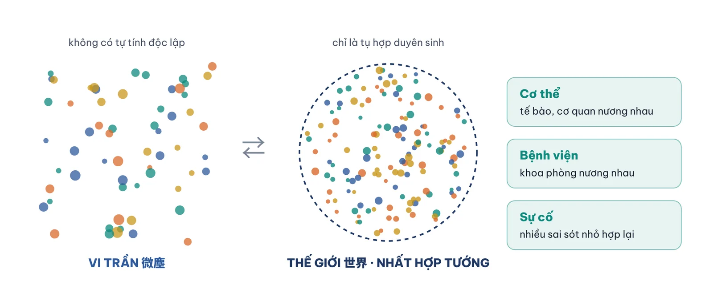
Phân 29 – Uy nghi tịch tĩnh phân
威儀寂靜分第二十九 Như Lai không từ đâu đến, không đi về đâu
I. NGUYÊN VĂN CHỮ HÁN, PHIÊN ÂM VÀ DỊCH NGHĨA
1. Nguyên văn chữ Hán
須菩提。若有人言。如來若來若去。若坐若臥。是人不解我所說義。何以故。如來者。無所從來。亦無所去。故名如來。
2. Phiên âm Hán-Việt
Tu-bồ-đề! Nhược hữu nhân ngôn: Như Lai nhược lai, nhược khứ, nhược tọa, nhược ngọa; thị nhân bất giải ngã sở thuyết nghĩa. Hà dĩ cố? Như Lai giả, vô sở tòng lai, diệc vô sở khứ, cố danh Như Lai.
3. Dịch nghĩa
“Này Tu-bồ-đề! Nếu có người nói rằng: Như Lai hoặc có đến, hoặc có đi, hoặc có ngồi, hoặc có nằm; người ấy chẳng hiểu được ý nghĩa lời Ta nói. Vì cớ sao? Bậc Như Lai là không từ đâu đến, cũng chẳng đi về đâu, cho nên gọi là Như Lai.”
II. GIẢI THÍCH NGHĨA LÝ CỐT TỦY
Phân 29 – “Uy nghi tịch tĩnh” – định nghĩa lại danh hiệu Như Lai. Kinh nói: nếu có người bảo Như Lai hoặc đến, hoặc đi, hoặc ngồi, hoặc nằm, người ấy không hiểu nghĩa Ta nói. Vì sao? Như Lai không từ đâu đến, cũng không đi về đâu, nên gọi là Như Lai [6].
1. Ý nghĩa danh hiệu “Như Lai”
Chữ Phạn Tathāgata thường được phân tích theo hai cách: tathā-gata, “người đã đi như thế”, hoặc tathā-āgata, “người đã đến như thế”; chữ Hán dịch là 如來 – “như mà đến”. Phân 29 dùng chính tên gọi ấy để chỉ ra rằng “như” – chân như – không có chỗ đến và chỗ đi. Đến, đi, ngồi, nằm là bốn uy nghi của thân ứng hóa; Pháp thân không di chuyển, vì không có nơi nào nằm ngoài nó [19].
2. Động mà vẫn tĩnh
Tên phân ghép hai vế tưởng như trái nhau: “uy nghi” là đi, đứng, ngồi, nằm – thế giới của chuyển động; “tịch tĩnh” là vắng lặng. Ý kinh không phải là ngừng hoạt động để được tĩnh, mà là ngay trong hoạt động, tâm không bị cuốn đi. Phân 1 đã cho thấy hình ảnh ấy: Đức Phật đắp y, ôm bát, khất thực, rửa chân, trải tòa ngồi – những việc bình thường được làm trọn vẹn và an tĩnh.
3. Sóng và nước
Một hình ảnh quen thuộc trong truyền thống thiền là sóng và nước: sóng nổi lên rồi lặn xuống, nhưng nước không từ đâu đến và không đi về đâu. Cảm xúc, hoàn cảnh, thăng trầm cũng như sóng; cái biết đang nhìn chúng thì không đến không đi. Thấy được điều đó, người tu không cần đè nén con sóng mà cũng không bị nó cuốn trôi.
III. PHƯƠNG PHÁP HÀNH TRÌ: TĨNH TRONG BỐN OAI NGHI
- Đi biết mình đang đi: chọn một đoạn đường cố định mỗi ngày – chẳng hạn hành lang từ khoa ra thang máy – để đi trong chánh niệm.
- Nhìn cảm xúc đến và đi: khi cơn giận hay nỗi lo khởi lên, quan sát nó như một đợt sóng – có lúc dâng, có lúc lặng – không cần đẩy đi cũng không cần nắm giữ.
- Ba hơi thở trước giờ cao điểm: trước khi bước vào một tình huống căng thẳng, vài hơi thở chậm giúp lấy lại sự chủ động.
IV. ỨNG DỤNG: SỰ ĐIỀM TĨNH ĐƯỢC HUẤN LUYỆN
1. Bình tĩnh trong cấp cứu là kỹ năng, không chỉ là tính cách
Trong hồi sinh tim phổi hay xử trí sốc, âm thanh báo động và chuyển động dồn dập dễ làm ê-kíp rối loạn. Các chương trình quản lý nguồn lực trong khủng hoảng, phát triển từ ngành gây mê và hàng không, huấn luyện những kỹ năng cụ thể: xác định người chỉ huy, phân vai rõ ràng, giao tiếp vòng kín (nói – nhắc lại – xác nhận) và gọi hỗ trợ sớm [114]. Tình huống dưới đây cho thấy sự điềm tĩnh của người chỉ huy lan sang cả ê-kíp. “Uy nghi tịch tĩnh” trong cấp cứu là thân làm nhanh mà tâm không loạn.
2. An toàn nằm trong những việc thường ngày
Nhiều sai sót không xảy ra trong ca mổ lớn mà trong các việc lặp lại hằng ngày: giao ban, đi buồng, bàn giao ca, chuẩn bị thuốc. Một chương trình bàn giao có cấu trúc triển khai tại chín bệnh viện nhi đã giảm 23% sai sót y khoa và 30% biến cố có hại có thể phòng ngừa [29]. “Uy nghi” của một bệnh viện là sự nghiêm cẩn ổn định trong những việc nhỏ – không chỉ khi có đoàn đánh giá.
3. Năng lực phục hồi của hệ thống
Phân 29 nói về sự vững chãi không phụ thuộc vào hoàn cảnh. Ở cấp hệ thống, khái niệm tương ứng là năng lực phục hồi (resilience): khả năng điều chỉnh hoạt động để duy trì chức năng khi gặp biến động bất ngờ. Cách tiếp cận Safety-II đề nghị học không chỉ từ sự cố mà còn từ cách hệ thống vẫn vận hành tốt trong những điều kiện khó khăn hằng ngày [102,115]. Một hệ thống như vậy không hoảng loạn khi khủng hoảng đến và không chủ quan khi khủng hoảng qua đi.
TÌNH HUỐNGBáo động đỏ (mô phỏng từ thực tế)
Chuông báo động ngừng tuần hoàn vang lên ở buồng bệnh. Trong vài giây, sáu người có mặt. Bác sĩ trưởng nhóm hồi sinh tim phổi không hét, không chạy vòng quanh. Anh đứng ở đầu giường, giọng chậm và rõ: “Tôi chỉ huy. Hùng ép tim. Lan bóp bóng. Mai lấy đường truyền, chuẩn bị adrenalin. Minh ghi thời gian.” Mỗi y lệnh đều được nhắc lại và xác nhận. Hai chu kỳ sau, người bệnh có mạch trở lại. Điều dưỡng trẻ kể lại: “Chỉ cần nghe giọng anh ấy là em hết run.”
“Như Lai giả, vô sở tòng lai, diệc vô sở khứ” – Như Lai không từ đâu đến, cũng không đi về đâu. Sự hiện diện tĩnh lặng của người dẫn đầu là một “lớp phòng vệ” vô hình trong khủng hoảng. Tĩnh lặng ấy không tự nhiên mà có: nó được nuôi bằng diễn tập định kỳ, phân vai rõ ràng và giao tiếp vòng kín [69].
ĐIỂM THEN CHỐTĐiểm then chốt
- Như Lai không đến không đi: uy nghi tịch tĩnh là sự vững chãi không phụ thuộc hoàn cảnh.
- Bình tĩnh chủ động trong cấp cứu là kỹ năng được rèn bằng diễn tập và giao tiếp vòng kín.
- Ổn định hệ thống (quy trình, vai trò rõ ràng) là nền để đội ngũ ứng phó với bất định.
SUY NGẪMCâu hỏi suy ngẫm
1. Khoa anh/chị diễn tập báo động đỏ bao lâu một lần? Lần gần nhất học được gì?
2. Trong khủng hoảng, giọng nói và dáng đứng của anh/chị đang truyền đi điều gì cho đồng đội?
Phân 30 – Nhất hợp lý tướng phân
一合理相分第三十8 Vi trần, thế giới và nhất hợp tướng
I. NGUYÊN VĂN CHỮ HÁN, PHIÊN ÂM VÀ DỊCH NGHĨA
1. Nguyên văn chữ Hán
須菩提。若善男子。善女人。以三千大千世界。碎為微塵。於意云何。是微塵眾。寧為多不。
須菩提言。甚多。世尊。何以故。若是微塵眾實有者。佛則不說是微塵眾。所以者何。佛說微塵眾。即非微塵眾。是名微塵眾。世尊。如來所說三千大千世界。則非世界。是名世界。何以故。若世界實有者。則是一合相。如來說一合相。則非一合相。是名一合相。
須菩提。一合相者。則是不可說。但凡夫之人。貪著其事。
2. Phiên âm Hán-Việt
Tu-bồ-đề! Nhược thiện nam tử, thiện nữ nhân, dĩ tam thiên đại thiên thế giới, toái vi vi trần. Ư ý vân hà? Thị vi trần chúng ninh vi đa phủ?
Tu-bồ-đề ngôn: Thậm đa, Thế Tôn! Hà dĩ cố? Nhược thị vi trần chúng thực hữu giả, Phật tắc bất thuyết thị vi trần chúng. Sở dĩ giả hà? Phật thuyết vi trần chúng, tức phi vi trần chúng, thị danh vi trần chúng. Thế Tôn! Như Lai sở thuyết tam thiên đại thiên thế giới, tắc phi thế giới, thị danh thế giới. Hà dĩ cố? Nhược thế giới thực hữu giả, tắc thị nhất hợp tướng. Như Lai thuyết nhất hợp tướng, tắc phi nhất hợp tướng, thị danh nhất hợp tướng.
Tu-bồ-đề! Nhất hợp tướng giả, tắc thị bất khả thuyết, đãn phàm phu chi nhân tham trước kỳ sự.
3. Dịch nghĩa
“Này Tu-bồ-đề! Nếu có người thiện nam, người thiện nữ đem cõi ba nghìn đại thiên thế giới nghiền nát thành những hạt bụi nhỏ (vi trần). Ý ông nghĩ sao? Số lượng hạt bụi nhỏ ấy có nhiều chăng?”
Trưởng lão Tu-bồ-đề bạch: “Bạch Thế Tôn, rất nhiều! Vì cớ sao? Nếu những hạt bụi nhỏ ấy là có tự tính thực sự, thì Phật đã chẳng nói là các hạt bụi nhỏ. Vì cớ làm sao? Phật nói các hạt bụi nhỏ, tức chẳng phải hạt bụi nhỏ, tạm gọi là các hạt bụi nhỏ. Bạch Thế Tôn! Cõi ba nghìn đại thiên thế giới mà Như Lai nói, thì chẳng phải thế giới, tạm gọi là thế giới. Vì cớ sao? Nếu thế giới là có thực, thì đó chính là một khối kết hợp (nhất hợp tướng). Như Lai nói khối kết hợp, thì chẳng phải khối kết hợp, tạm gọi là khối kết hợp.”
Đức Phật dạy: “Này Tu-bồ-đề! Khối kết hợp (nhất hợp tướng) vốn là điều không thể nghĩ bàn, chẳng thể nói ra được; duy chỉ có kẻ phàm phu vì vô minh mà tham đắm, bám chấp vào sự tướng ấy.”
II. GIẢI THÍCH NGHĨA LÝ CỐT TỦY
Phân 30 – “Nhất hợp lý tướng” – trở lại hình ảnh vi trần và thế giới đã gặp ở Phân 13, nhưng đặt thêm một câu hỏi: cái “khối” được ghép từ các phần có thật là một khối không?
1. Vi trần và thế giới
Đức Phật hỏi: đem ba nghìn đại thiên thế giới nghiền thành vi trần, số vi trần ấy có nhiều không? Tu-bồ-đề đáp: rất nhiều; nhưng nếu các vi trần ấy thật có, Phật đã không gọi là vi trần – Phật nói vi trần tức phi vi trần, thị danh vi trần. Thế giới cũng vậy: tắc phi thế giới, thị danh thế giới [6]. Chia nhỏ đến đâu cũng không gặp một đơn vị có tự tính độc lập; gom lại lớn đến đâu cũng không thành một thực thể tách rời các phần.
2. Cú thức tam đoạn về “nhất hợp tướng”
Tu-bồ-đề nói tiếp: nếu thế giới thật có, thì đó là một “nhất hợp tướng” – một tướng hợp nhất; nhưng Như Lai nói nhất hợp tướng thì không phải nhất hợp tướng, ấy gọi là nhất hợp tướng – áp công thức A → tức phi A → thị danh A:
- Nhất hợp tướng (A): một tổng thể được nhận thức như một khối – cơ thể, gia đình, tổ chức.
- Tắc phi nhất hợp tướng: khối ấy không có tự tính tách rời các thành phần và các mối quan hệ giữa chúng; tháo rời các điều kiện thì “khối” không còn.
- Thị danh nhất hợp tướng: vẫn dùng tên gọi để vận hành và chăm sóc tổng thể ấy, nhưng không đóng băng nó thành một vật cố định.
3. “Tắc thị bất khả thuyết, đãn phàm phu chi nhân tham trước kỳ sự”
Đức Phật kết: nhất hợp tướng là điều không thể nói, chỉ có phàm phu tham đắm vào sự việc ấy [6]. Ý niệm về một khối riêng biệt, bất biến là gốc của sự chiếm hữu: “cơ thể của tôi”, “khoa của tôi”, “bệnh viện của chúng tôi” được bảo vệ như những pháo đài. Tư tưởng Hoa Nghiêm về sự tương tức tương nhập – mỗi phần vừa chứa đựng vừa nương vào toàn thể – về sau phát triển ý này thành một hệ thống triết học hoàn chỉnh [96].
III. PHƯƠNG PHÁP HÀNH TRÌ: THẤY TOÀN THỂ TRONG TỪNG PHẦN
- Quán thân duyên hợp: nhìn cơ thể mình như sự gặp gỡ của thức ăn, không khí, nước và công sức của nhiều người – không phải một khối riêng biệt.
- Khi có xung đột, tách nhỏ vấn đề: thay vì kết luận “khoa ấy luôn gây khó dễ”, tìm những điều kiện cụ thể đang tạo ra xung đột.
- Gắn bó mà không chiếm hữu: tận tâm xây dựng đơn vị mình, nhưng nhớ rằng đơn vị là một dòng chảy của những con người và điều kiện luôn thay đổi.
IV. ỨNG DỤNG: CHẤT LƯỢNG NẰM Ở MỐI NỐI
1. Người bệnh là một tổng thể
Nhiễm khuẩn huyết là ví dụ rõ: đó là rối loạn đáp ứng của toàn cơ thể với nhiễm trùng, dẫn đến suy chức năng nhiều cơ quan. Hướng dẫn quốc tế nhấn mạnh xử trí đồng thời – kháng sinh sớm, kiểm soát ổ nhiễm, hồi sức dịch, hỗ trợ cơ quan – thay vì xử lý từng cơ quan riêng lẻ [61]. Hội chẩn đa chuyên khoa là cách đưa “nhất hợp tướng” của người bệnh vào quy trình làm việc.
2. Sự cố là một “nhất hợp” của nhiều điều kiện
Mô hình “pho mát Thụy Sĩ” của Reason mô tả sự cố nghiêm trọng như kết quả của nhiều lỗ hổng nhỏ ở các lớp phòng vệ khác nhau tình cờ thẳng hàng [40]. Một sự cố nhầm thuốc có thể gồm: y lệnh khó đọc, hai loại thuốc có tên hoặc hình thức giống nhau, điều dưỡng quá tải trong ca đêm, bước đối chiếu định danh bị bỏ qua. Không “vi trần” nào đủ gây hại một mình; tổng hợp của chúng thì có. Phương pháp phân tích sai hỏng và tác động trong y tế (HFMEA) được dùng để nhận diện và cắt đứt những chuỗi như vậy trước khi chúng xảy ra [116].
3. Phá bỏ tư duy “lô cốt”
Khi mỗi khoa chỉ chịu trách nhiệm phần việc của mình, các mối nối giữa các khoa trở thành vùng không ai sở hữu. Báo cáo kết quả xét nghiệm nguy hiểm là ví dụ điển hình: phòng xét nghiệm phát hiện, khoa lâm sàng xử trí, nhưng mắt xích “người nhận” thường là chỗ đứt. Ở phía phòng xét nghiệm, ISO 15189 yêu cầu có quy trình thông báo kết quả nguy hiểm và lưu hồ sơ việc thông báo; ở phía bệnh viện, mục tiêu an toàn người bệnh quốc tế của JCI yêu cầu xác định rõ thời hạn và người chịu trách nhiệm nhận, xử trí các kết quả này [70,117]. Senge gọi khả năng nhìn thấy các mối quan hệ thay vì từng sự vật riêng lẻ là “nguyên tắc thứ năm” của tổ chức học tập [118]. Tình huống dưới đây cho thấy mỗi bộ phận đều “làm đúng” mà người bệnh vẫn bị hại.
TÌNH HUỐNGGiá trị nguy hiểm không có người nhận (mô phỏng từ thực tế)
Mười một giờ đêm, phòng xét nghiệm phát hiện kali máu 6,8 mmol/L của một người bệnh suy thận. Kỹ thuật viên gọi điện đến khoa ba lần nhưng không ai nhấc máy – điều dưỡng đang cấp cứu ở buồng khác, điện thoại để ở phòng hành chính. Kết quả nằm trên hệ thống; bác sĩ trực chỉ thấy khi đi buồng lúc một giờ sáng. Người bệnh đã có rối loạn nhịp. Phân tích cho thấy mỗi bộ phận đều “làm đúng quy định của mình”; lỗ hổng nằm ở mối nối. Giải pháp liên khoa: danh sách giá trị nguy hiểm thống nhất, báo qua điện thoại di động của bác sĩ trực, quy trình leo thang sau 15 phút, bắt buộc đọc lại – xác nhận, và chỉ số theo dõi thời gian từ khi có kết quả đến khi bác sĩ nhận thông tin [49].
Bệnh viện là một nhất hợp tướng: không có khoa xét nghiệm hay khoa lâm sàng tồn tại tách rời. Chất lượng nằm ở mối nối (xem Chương 17).
ĐIỂM THEN CHỐTĐiểm then chốt
- Vi trần tức phi vi trần, thế giới tắc phi thế giới: bộ phận và toàn thể nương nhau mà có.
- Tư duy hệ thống trong sinh lý bệnh và trong quản trị: không cơ quan, không khoa nào đứng một mình.
- Phá “lô cốt”: an toàn được tạo ra ở giao diện giữa các bộ phận.
SUY NGẪMCâu hỏi suy ngẫm
1. Giao diện nào giữa khoa anh/chị và một khoa khác đang “không ai sở hữu”?
2. Nếu vẽ hành trình của một mẫu xét nghiệm khẩn ban đêm, anh/chị thấy bao nhiêu mối nối?
Phân 31 – Tri kiến bất sinh phân
知見不生分第三十一 Không sinh pháp tướng
I. NGUYÊN VĂN CHỮ HÁN, PHIÊN ÂM VÀ DỊCH NGHĨA
1. Nguyên văn chữ Hán
須菩提。若人言。佛說我見人見眾生見壽者見。須菩提。於意云何。是人解我所說義不。
不也。世尊。是人不解如來所說義。何以故。世尊說我見人見眾生見壽者見。即非我見人見眾生見壽者見。是名我見人見眾生見壽者見。
須菩提。發阿耨多羅三藐三菩提心者。於一切法。應如是知。如是見。如是信解。不生法相。須菩提。所言法相者。如來說即非法相。是名法相。
2. Phiên âm Hán-Việt
Tu-bồ-đề! Nhược nhân ngôn: Phật thuyết ngã kiến, nhân kiến, chúng sinh kiến, thọ giả kiến. Tu-bồ-đề! Ư ý vân hà? Thị nhân giải ngã sở thuyết nghĩa phủ?
– Bất dã, Thế Tôn! Thị nhân bất giải Như Lai sở thuyết nghĩa. Hà dĩ cố? Thế Tôn thuyết ngã kiến, nhân kiến, chúng sinh kiến, thọ giả kiến, tức phi ngã kiến, nhân kiến, chúng sinh kiến, thọ giả kiến, thị danh ngã kiến, nhân kiến, chúng sinh kiến, thọ giả kiến.
Tu-bồ-đề! Phát A-nậu-đa-la Tam-miệu Tam-bồ-đề tâm giả, ư nhất thiết pháp, ưng như thị tri, như thị kiến, như thị tín giải, bất sinh pháp tướng. Tu-bồ-đề! Sở ngôn pháp tướng giả, Như Lai thuyết tức phi pháp tướng, thị danh pháp tướng.
3. Dịch nghĩa
“Này Tu-bồ-đề! Nếu có người nói rằng: Phật có nói về ngã kiến, nhân kiến, chúng sinh kiến, thọ giả kiến. Này Tu-bồ-đề! Ý ông nghĩ sao? Người ấy có hiểu được ý nghĩa lời Ta dạy chăng?”
Trưởng lão Tu-bồ-đề bạch: “Bạch Thế Tôn, không! Người ấy không hiểu được ý nghĩa lời Như Lai dạy. Vì cớ sao? Thế Tôn nói ngã kiến, nhân kiến, chúng sinh kiến, thọ giả kiến, tức chẳng phải ngã kiến, nhân kiến, chúng sinh kiến, thọ giả kiến, tạm gọi là ngã kiến, nhân kiến, chúng sinh kiến, thọ giả kiến.”
“Này Tu-bồ-đề! Người phát tâm cầu quả Vô thượng Chánh đẳng Chánh giác, đối với tất cả các pháp, nên hiểu biết như thế này (như thị tri), nên nhìn thấy như thế này (như thị kiến), nên tin hiểu như thế này (như thị tín giải), không để sinh khởi pháp tướng. Này Tu-bồ-đề! Cái gọi là pháp tướng ấy, Như Lai nói tức chẳng phải pháp tướng, tạm gọi là pháp tướng.”
II. GIẢI THÍCH NGHĨA LÝ CỐT TỦY
Phân 31 – “Tri kiến bất sinh” – là phân áp chót, đưa sự phá chấp từ “tướng” sang “kiến”: từ hình ảnh bên ngoài sang chính những quan niệm trong tâm.
1. Từ bốn tướng đến bốn kiến
Đức Phật hỏi: nếu có người nói Phật nói ngã kiến, nhân kiến, chúng sinh kiến, thọ giả kiến, người ấy có hiểu nghĩa Ta nói không? Tu-bồ-đề đáp: không. Thế Tôn nói ngã kiến… tức phi ngã kiến…, thị danh ngã kiến… [6]. Các phân trước phá bốn tướng; ở đây, ngay cả lời Phật nói về “bốn kiến” cũng không được biến thành một học thuyết để bám. Người đã buông được danh vọng và tài sản vẫn có thể giữ chặt một hệ quan điểm về “tôi đúng” – chấp kiến vi tế hơn chấp tướng.
2. Biết, thấy, tin hiểu – “như thị”
Người phát tâm Bồ-đề, đối với tất cả các pháp, nên biết như thế, thấy như thế, tin hiểu như thế, không sinh pháp tướng [6]. Ba động từ tương ứng với ba mức của nhận thức: biết bằng hiểu biết, thấy bằng trực nhận, tin hiểu bằng sự xác tín vững chắc. “Như thị” – như vậy – nghĩa là đúng như thực tướng duyên sinh của sự vật, không thêm vào đó định kiến của mình.
3. Cú thức tam đoạn về pháp tướng
Kinh kết: “Sở ngôn pháp tướng giả, Như Lai thuyết tức phi pháp tướng, thị danh pháp tướng” – áp công thức A → tức phi A → thị danh A:
- Pháp tướng (A): khái niệm, mô hình, cách phân loại mà tâm dùng để hiểu thế giới – kể cả các khái niệm Phật học.
- Tức phi pháp tướng: các khái niệm ấy không có tự tính; chúng là tấm bản đồ, không phải vùng đất.
- Thị danh pháp tướng: vẫn dùng khái niệm để giao tiếp và làm việc, nhưng sẵn sàng sửa bản đồ khi vùng đất khác đi.
III. PHƯƠNG PHÁP HÀNH TRÌ: TREO LẠI PHÁN XÉT
- Một khoảng dừng trước khi dán nhãn: khi thấy mình nghĩ “người này là thế này”, “ý kiến này sai”, thêm một câu: “có thể còn điều mình chưa biết”.
- Tìm lập luận mạnh nhất của phía bên kia: với một quan điểm mình tin chắc, thử trình bày lại lập luận tốt nhất chống lại nó.
- Giữ giới mà không khinh người: sống đúng chuẩn mực của mình mà không dùng nó làm thước đo để xem nhẹ người khác.
IV. ỨNG DỤNG: CHẨN ĐOÁN LÀ GIẢ THUYẾT, KHÔNG PHẢI BẢN ÁN
1. Thiên kiến nhận thức trong chẩn đoán
Sai sót chẩn đoán là một trong những loại sai sót phổ biến và gây hại nhiều nhất. Trong một nghiên cứu trên 100 trường hợp sai sót chẩn đoán ở nội khoa, yếu tố nhận thức góp phần vào khoảng ba phần tư số trường hợp, thường gặp nhất là “đóng chẩn đoán sớm” – dừng tìm kiếm khi đã có một giải thích nghe hợp lý [34]. Croskerry mô tả nhiều thiên kiến khác như neo giữ, thiên kiến xác nhận và “đà chẩn đoán” – chẩn đoán được truyền qua các ca trực mà ít được đặt lại câu hỏi [33]. Đó chính là “pháp tướng” trong lâm sàng: một khái niệm hữu ích bị đóng băng thành sự thật.
2. Những công cụ “không sinh pháp tướng”
Các biện pháp được đề xuất gồm: tự hỏi “còn gì khác có thể giải thích triệu chứng này?”, dừng lại xem xét chẩn đoán ở những điểm chuyển giao, dùng bảng kiểm chẩn đoán phân biệt cho các triệu chứng nguy cơ cao, và khuyến khích đồng nghiệp phản biện [33,35]. Những công cụ này buộc lối tư duy chậm, có cân nhắc – “hệ thống 2” theo cách gọi của Kahneman – kiểm tra lại trực giác nhanh của “hệ thống 1” [119]. Tình huống dưới đây cho thấy một câu hỏi đơn giản của bác sĩ nội trú đã phá vỡ “đà chẩn đoán” qua ba ca trực.
3. Phân tích sự cố không định kiến
Khi sự cố xảy ra, các bên thường hình thành kết luận trước khi có dữ kiện: “điều dưỡng bất cẩn”, “khoa dược cấp chậm”. Thiên kiến nhìn lại khiến người phân tích, khi đã biết kết cục, đánh giá quá cao khả năng người trong cuộc có thể lường trước [41]. Thông tư 43/2018/TT-BYT yêu cầu phân tích nguyên nhân sự cố để đề xuất giải pháp phòng ngừa [88]; hướng dẫn RCA² khuyến nghị thu thập dữ kiện trước khi kết luận và ưu tiên các hành động cải tiến hệ thống có hiệu lực mạnh thay vì chỉ nhắc nhở cá nhân [43]. “Bất sinh pháp tướng” trong phân tích sự cố là để dữ kiện dẫn đường.
TÌNH HUỐNG“Đà chẩn đoán” qua ba ca trực (mô phỏng từ thực tế)
Một người bệnh nữ 62 tuổi đái tháo đường nhập viện ban đêm vì đau thượng vị, buồn nôn, được chẩn đoán “viêm dạ dày”. Chẩn đoán này được chuyển nguyên vẹn qua ba ca trực; mỗi ca chỉ điều chỉnh thuốc giảm đau dạ dày. Đến ca thứ tư, một bác sĩ nội trú đặt câu hỏi “Còn gì khác có thể giải thích triệu chứng này?” và làm điện tâm đồ: nhồi máu cơ tim thành dưới. “Đà chẩn đoán” (diagnostic momentum) và thiên kiến xác nhận là những sai sót nhận thức kinh điển [33]; các bảng kiểm chẩn đoán – như câu hỏi “điều gì nguy hiểm nhất không được bỏ sót?” – là một cách đơn giản để tạo khoảng dừng [35].
“Ư nhất thiết pháp, ưng như thị tri, như thị kiến, như thị tín giải, bất sinh pháp tướng” – biết, thấy, tin hiểu như thế mà không sinh pháp tướng. Chẩn đoán là giả thuyết làm việc, không phải bản án cố định.
ĐIỂM THEN CHỐTĐiểm then chốt
- Ngã kiến, nhân kiến… Như Lai nói tức phi ngã kiến: ngay cả “cái thấy đúng” cũng không được chấp.
- Thiên kiến xác nhận và đà chẩn đoán là “pháp tướng” trong lâm sàng; “thời gian dừng chẩn đoán” là thuốc giải.
- Phân tích sự cố không sinh định kiến: để dữ kiện dẫn đường, không để kết luận có sẵn dẫn đường.
SUY NGẪMCâu hỏi suy ngẫm
1. Chẩn đoán nào ở khoa anh/chị thường được “chuyển tiếp” qua các ca trực mà ít được đặt lại câu hỏi?
2. Anh/chị có một câu hỏi cố định nào để tự phản biện chẩn đoán của mình không?
Chương 16
LƯU THÔNG: ỨNG HÓA PHI CHÂN (PHÂN 32) VÀ TỔNG KẾT 32 PHÂN
Phân 32 khép lại bộ kinh bằng hai câu mà người viết đề nghị mọi người làm y tế khắc ghi: “Bất thủ ư tướng, như như bất động” và bài kệ Lục Dụ “Nhất thiết hữu vi pháp, như mộng huyễn bào ảnh, như lộ diệc như điện, ưng tác như thị quán”. Kinh mở đầu bằng việc ôm bát khất thực, rửa chân, trải tòa (Phân 1) và kết thúc bằng sự hoan hỷ tín thọ phụng hành của đại chúng – trí tuệ cao nhất không nằm ở đâu xa, mà trở về ngay trong đời sống thường nhật.
Phân 32 – Ứng hóa phi chân phân
應化非真分第三十二 Kệ Lục Dụ – như như bất động
I. NGUYÊN VĂN CHỮ HÁN, PHIÊN ÂM VÀ DỊCH NGHĨA
1. Nguyên văn chữ Hán
須菩提。若有人以滿無量阿僧祇世界七寶。持用布施。若有善男子。善女人。發菩薩心者。持於此經。乃至四句偈等。受持讀誦。為人演說。其福勝彼。
云何為人演說。不取於相。如如不動。何以故。
一切有為法。如夢幻泡影。
如露亦如電。應作如是觀。
佛說是經已。長老須菩提。及諸比丘。比丘尼。優婆塞。優婆夷。一切世間天人阿修羅。聞佛所說。皆大歡喜。信受奉行。
2. Phiên âm Hán-Việt
Tu-bồ-đề! Nhược hữu nhân dĩ mãn vô lượng a-tăng-kỳ thế giới thất bảo, trì dụng bố thí. Nhược hữu thiện nam tử, thiện nữ nhân, phát Bồ-tát tâm giả, trì ư thử kinh, nãi chí tứ cú kệ đẳng, thọ trì độc tụng, vị nhân diễn thuyết, kỳ phúc thắng bỉ.
Vân hà vị nhân diễn thuyết? Bất thủ ư tướng, như như bất động. Hà dĩ cố?
Nhất thiết hữu vi pháp,
Như mộng huyễn bào ảnh,
Như lộ diệc như điện,
Ưng tác như thị quán.
Phật thuyết thị kinh dĩ, Trưởng lão Tu-bồ-đề, cập chư tỳ-kheo, tỳ-kheo-ni, ưu-bà-tắc, ưu-bà-di, nhất thiết thế gian thiên, nhân, a-tu-la, văn Phật sở thuyết, giai đại hoan hỷ, tín thọ phụng hành.
3. Dịch nghĩa
“Này Tu-bồ-đề! Nếu có người đem bảy báu chứa đầy khắp vô lượng vô số thế giới (a-tăng-kỳ) ra để bố thí. Lại nếu có người thiện nam, người thiện nữ phát tâm Bồ-đề, đối với kinh này, cho đến chỉ một bài kệ bốn câu, thọ trì, đọc tụng và vì người khác mà diễn thuyết, thì phúc đức của người này còn vượt trội hơn người kia gấp bội.
Thế nào là vì người khác mà diễn thuyết? Không chấp giữ nơi tướng, như như bất động. Vì cớ sao?
Tất cả pháp hữu vi,
Như mộng, huyễn, bọt, bóng,
Như sương, lại như điện,
Nên khởi quán như thế.
Đức Phật thuyết kinh này xong, Trưởng lão Tu-bồ-đề cùng các vị tỳ-kheo, tỳ-kheo-ni, ưu-bà-tắc, ưu-bà-di, và tất cả thế gian cõi trời, cõi người, cõi a-tu-la, khi nghe lời Phật dạy, thảy đều vô cùng hoan hỷ, tin nhận và vâng theo phụng hành.”
II. GIẢI THÍCH NGHĨA LÝ CỐT TỦY
Phân 32 – “Ứng hóa phi chân” – khép lại kinh bằng ba nội dung: lần so sánh phúc đức cuối cùng, cách “vì người diễn nói”, và bài kệ Lục Dụ.
1. “Bất thủ ư tướng, như như bất động”
Đức Phật nói: nếu có người đem bảy báu đầy vô lượng a-tăng-kỳ thế giới để bố thí, phúc ấy không bằng người phát tâm Bồ-đề thọ trì kinh này, dù chỉ bốn câu kệ, và vì người khác diễn nói. Diễn nói như thế nào? “Bất thủ ư tướng, như như bất động” – không chấp vào tướng, như như không lay động [6]. Câu trả lời không bàn về kỹ năng nói mà về trạng thái của người nói: không đặt mình vào vị trí người ban phát, không coi người nghe là kẻ cần được dạy, và không bị lay động bởi phản ứng của người nghe.
2. Kệ Lục Dụ
Nhất thiết hữu vi pháp / Như mộng, huyễn, bào, ảnh / Như lộ diệc như điện / Ưng tác như thị quán – tất cả pháp hữu vi như giấc mộng, như trò huyễn, như bọt nước, như bóng hình, như sương mai, như ánh chớp; nên quán chiếu như vậy. Sáu hình ảnh đi từ chỗ không thật (mộng, huyễn) đến chỗ ngắn ngủi (bọt, bóng, sương, chớp). Bản Phạn và các bản dịch của Bồ-đề-lưu-chi, Huyền Trang có chín hình ảnh – trong đó có ngôi sao, bóng mờ trước mắt, ngọn đèn, đám mây; bản Cưu-ma-la-thập gọn lại thành sáu [1,2,7].
Quán như vậy không nhằm sinh tâm chán đời. Nó giúp thấy rõ để không bám, và vì không bám nên có thể dấn thân trọn vẹn.
3. “Tín thọ phụng hành”
Kinh kết bằng cảnh Tu-bồ-đề cùng các tỳ-kheo, tỳ-kheo-ni, ưu-bà-tắc, ưu-bà-di, trời, người, a-tu-la nghe Phật nói xong đều rất hoan hỷ, tin nhận và vâng làm [6]. Kinh mở đầu bằng việc khất thực, rửa chân, trải tòa (Phân 1) và kết thúc bằng “phụng hành” – thực hành. Vòng tròn khép lại ở đời sống hằng ngày.
III. PHƯƠNG PHÁP HÀNH TRÌ: QUÁN LỤC DỤ GIỮA ĐỜI THƯỜNG
- Bốn câu kệ khi cảm xúc dâng cao: lúc quá vui vì được khen hay quá buồn vì thất bại, thầm đọc bài kệ và nhìn sự việc như một giọt sương.
- Như như bất động trong giao tiếp: lắng nghe ý kiến trái chiều mà không vội phản ứng; trả lời từ sự hiểu, không từ sự tự vệ.
- Trở về việc thường ngày: kết thúc mỗi thời đọc kinh bằng một việc làm cụ thể trong ngày – đó là “phụng hành”.
IV. ỨNG DỤNG: CÓ MẶT TRỌN VẸN GIỮA LẰN RANH SINH TỬ
1. Đối diện cái chết của người bệnh
Ở khoa hồi sức hay khoa truyền nhiễm, cái chết không phải chuyện hiếm. Thấy rõ vô thường không làm người thầy thuốc lạnh lùng; nó giúp họ làm hết sức khi còn cơ hội, và khi không còn, chuyển sang chăm sóc người bệnh và gia đình bằng sự hiện diện điềm tĩnh. Tình huống dưới đây – ngồi với gia đình trong phòng riêng, không vội vã, rồi tổ chức bình bệnh tử vong không đổ lỗi – minh họa cả hai mặt: chăm sóc con người và học hỏi của hệ thống.
2. Chăm sóc “nạn nhân thứ hai”
Sau một sự cố nghiêm trọng hay một ca tử vong bất ngờ, nhân viên y tế thường trải qua cảm giác tội lỗi, lo âu, mất ngủ, tự nghi ngờ năng lực – hiện tượng được Wu gọi là “nạn nhân thứ hai” [54,89]. Các chương trình hỗ trợ đồng nghiệp có cấu trúc, với đội phản ứng nhanh và người hỗ trợ được huấn luyện, giúp nhân viên hồi phục và tiếp tục làm việc an toàn [82]. “Như như bất động” không phải là không có cảm xúc, mà là có chỗ dựa để cảm xúc không cuốn mất mình.
3. Thành tích cũng là pháp hữu vi
Chứng nhận, xếp hạng, giải thưởng đều là pháp hữu vi – có thể thay đổi sau một sự cố hay một đợt dịch. Nhà quản lý thấm kệ Lục Dụ không xem chúng là đích đến, mà đầu tư vào năng lực của hệ thống trong việc phát hiện sớm, ứng phó và học hỏi khi điều bất ngờ xảy ra – những đặc điểm Weick và Sutcliffe mô tả ở các tổ chức có độ tin cậy cao [69,115].
TÌNH HUỐNGSau một ca sốc Dengue không qua khỏi (mô phỏng từ thực tế)
Một nữ sinh viên 20 tuổi nhập viện muộn vì sốc Dengue kéo dài, xuất huyết nặng, suy đa tạng. Ê-kíp làm mọi điều có thể trong 36 giờ. Em không qua khỏi. Bác sĩ điều trị ngồi với gia đình trong phòng riêng, không vội vã, để họ khóc và hỏi. Tuần sau, khoa tổ chức buổi bình bệnh tử vong không đổ lỗi, rà lại toàn bộ hành trình từ lúc người bệnh khởi phát ở nhà, qua tuyến trước, đến bệnh viện; xác định những mối nối có thể cải thiện trong truyền thông cộng đồng và chuyển tuyến. Trưởng khoa cũng dành thời gian riêng hỏi thăm từng thành viên ê-kíp.
“Nhất thiết hữu vi pháp, như mộng huyễn bào ảnh, như lộ diệc như điện.” Thấu suốt vô thường không làm người thầy thuốc lạnh lùng; nó giúp họ có mặt trọn vẹn, điềm tĩnh giữa lằn ranh sinh tử – và giúp hệ thống học để lần sau tốt hơn. Một bệnh viện tuyến cuối phải cách ly toàn viện trong đại dịch COVID-19 (xem Chương 25) là ví dụ về một hệ thống “như như bất động” ở quy mô toàn viện.
ĐIỂM THEN CHỐTĐiểm then chốt
- Kệ Lục Dụ: mọi pháp hữu vi như mộng, huyễn, bọt, bóng, sương, điện – hãy quán chiếu như thế.
- “Bất thủ ư tướng, như như bất động”: linh hoạt bên ngoài, vững chãi bên trong.
- Không ngủ quên trên “ảo ảnh thành tích”; xây dựng năng lực phục hồi của hệ thống.
SUY NGẪMCâu hỏi suy ngẫm
1. Sau một ca tử vong, khoa anh/chị chăm sóc gia đình người bệnh và chăm sóc ê-kíp như thế nào?
2. Điều gì trong anh/chị vẫn “như như bất động” giữa những ngày khó khăn nhất của nghề?
Tổng kết ba mươi hai phân
Bảng 16.1. Tổng kết ba chặng của Kinh Kim Cương và ứng dụng trong quản trị và y đạo
| Chặng | Ý nghĩa cốt tủy | Ứng dụng trong quản trị và y đạo |
|---|---|---|
| Tiền bán bộ (Phân 1–16) | Phá chấp tướng: quét sạch sự dính mắc vào của cải, hình tướng sắc thân, danh vị, sự cúng dường hữu vi bên ngoài | Không chạy đua hình thức; nhận diện nguy cơ từ những “vi trần” nhỏ; bố thí – cống hiến không vì thành tích |
| Hậu bán bộ (Phân 17–31) | Phá chấp pháp và kiến: quét sạch sự bám chấp vi tế bên trong – chấp vào sự phát tâm, sở đắc quả vị, định kiến tư tưởng, mô hình giáo điều | Xóa bỏ thiên kiến lâm sàng; xây dựng văn hóa công bằng; tư duy hệ thống; buông tâm lý “đấng cứu thế” |
| Phân kết (Phân 32) | Như như bất động và Lục Dụ quán: thấu suốt bản chất như huyễn của pháp hữu vi để tự tại dấn thân phụng sự | Điềm tĩnh trước lằn ranh sinh tử; xây dựng hệ thống y tế thích ứng, bền bỉ (Safety-II) |
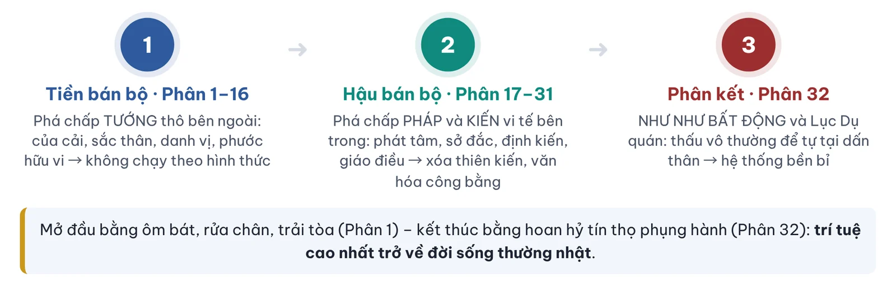
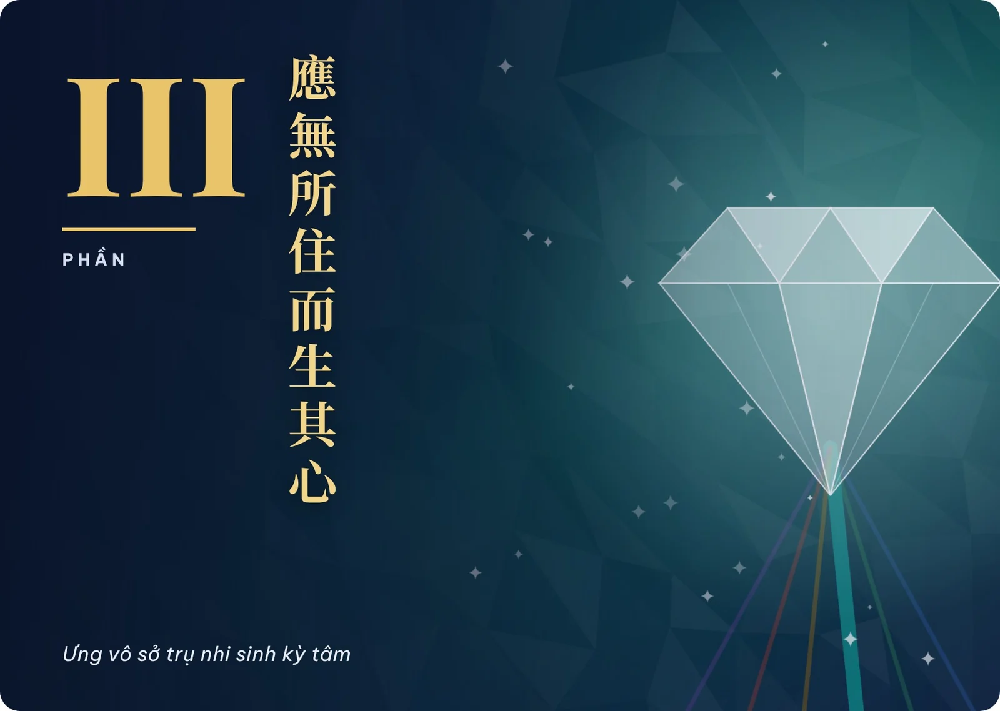
Phần thứ ba
TỪ TUỆ GIÁC BÁT-NHÃ ĐẾN KHOA HỌC AN TOÀN NGƯỜI BỆNH
Nhất hợp tướng và pho mát Thụy Sĩ · bốn tướng và thiên kiến nhận thức · SBAR và giao tiếp an toàn
Phần thứ ba là chiếc cầu nối giữa kinh điển và khoa học. Ba chương của phần này chọn ba điểm gặp gỡ sâu sắc nhất mà người viết tâm đắc qua nhiều năm vừa làm lâm sàng truyền nhiễm vừa làm quản lý chất lượng: (1) triết lý nhất hợp tướng của Phân 30 và mô hình pho mát Thụy Sĩ của James Reason; (2) bốn tướng của Kinh Kim Cương và các thiên kiến nhận thức mà khoa học chẩn đoán đã mô tả; (3) giáo lý về lời chân thật và công cụ giao tiếp SBAR. Mỗi điểm gặp gỡ đều được trình bày theo hai chiều: kinh văn soi sáng khoa học, và khoa học làm rõ kinh văn.
Chương 17
NHẤT HỢP TƯỚNG VÀ MÔ HÌNH PHO MÁT THỤY SĨ
Phân tích tam đoạn luận của Phân 30 “Nhất hợp lý tướng”
Trong toàn bộ 32 phân của Kinh Kim Cương, Phân 30 – Nhất hợp lý tướng phân (一合理相分) – là một trong những đoạn kinh văn hiển thị triết lý duyên khởi – tính Không ở cấp độ vũ trụ quan và vi mô sâu sắc nhất. Tại đây, Đức Phật đã dùng hai phạm trù đối sánh: Vi trần (hạt bụi cực vi – đơn vị nhỏ nhất cấu tạo nên vật chất) và Tam thiên đại thiên thế giới / Nhất hợp tướng (chỉnh thể cấu trúc vĩ mô toàn vẹn) để triển khai triệt để cú thức Tam đoạn luận Kim Cương (A → tức phi A → thị danh A).
1. Nguyên văn kinh văn và bản dịch
所以者何。佛說微塵眾。即非微塵眾。是名微塵眾。世尊。如來所說三千大千世界。則非世界。是名世界。何以故。若世界實有者。則是一合相。如來說一合相。則非一合相。是名一合相。
須菩提。一合相者。則是不可說。但凡夫之人。貪著其事。
Sở dĩ giả hà? Phật thuyết vi trần chúng, tức phi vi trần chúng, thị danh vi trần chúng. Thế Tôn! Như Lai sở thuyết tam thiên đại thiên thế giới, tắc phi thế giới, thị danh thế giới. Hà dĩ cố? Nhược thế giới thực hữu giả, tắc thị nhất hợp tướng. Như Lai thuyết nhất hợp tướng, tắc phi nhất hợp tướng, thị danh nhất hợp tướng.
Tu-bồ-đề! Nhất hợp tướng giả, tắc thị bất khả thuyết, đãn phàm phu chi nhân tham trước kỳ sự.
Vì cớ làm sao? Phật nói các vi trần, tức chẳng phải vi trần, tạm gọi là vi trần. Bạch Thế Tôn! Ba nghìn đại thiên thế giới mà Như Lai nói, thì chẳng phải thế giới, tạm gọi là thế giới. Vì cớ sao? Nếu thế giới là có thực, thì đó là một khối kết hợp (nhất hợp tướng). Như Lai nói nhất hợp tướng, thì chẳng phải nhất hợp tướng, tạm gọi là nhất hợp tướng.
Đức Phật dạy: “Này Tu-bồ-đề! Nhất hợp tướng vốn là điều không thể nói được; chỉ có kẻ phàm phu tham đắm vào sự việc ấy.”
2. Cấu trúc tam đoạn kép: từ vi mô đến vĩ mô
Phân 30 triển khai tam đoạn đồng thời trên hai bình diện: cực vi (vi trần) và chỉnh thể (thế giới / nhất hợp tướng).
Bảng 17.1. Cấu trúc tam đoạn kép của Phân 30: từ vi mô đến vĩ mô
| Tầng bậc | Bước 1: Khẳng định tục đế (A) | Bước 2: Phủ định tính Không (Phi A) | Bước 3: Diệu hữu quy ước (Thị danh A) |
|---|---|---|---|
| 1. Vi mô (vi trần – 微塵) | Thuyết vi trần: Thừa nhận có vô số hạt bụi nhỏ cấu thành vật chất. | Phi vi trần: Hạt vi trần không có tự tính độc lập, nếu đem chia chẻ mãi thì quy về hư không. | Thị danh vi trần: Mượn tạm danh từ “vi trần” để biểu thị đơn vị vật chất tương đối. |
| 2. Vĩ mô (thế giới – 世界) | Thuyết thế giới: Nhìn thấy có vũ trụ, thế giới bao la, kiên cố. | Phi thế giới: Thế giới chỉ là sự tụ hợp duyên sinh của vô lượng vi trần, tan hợp vô thường. | Thị danh thế giới: Tạm quy ước gọi là “thế giới” để định vị không gian sinh tồn. |
| 3. Bản thể luận (nhất hợp tướng – 一合相) | Thuyết nhất hợp tướng: Một khối thống nhất, một hệ thống toàn thể liên kết hữu cơ. | Phi nhất hợp tướng: Bản thể chỉnh thể không có thực ngã độc lập; “toàn thể” chỉ tồn tại nhờ các “bộ phận”. | Thị danh nhất hợp tướng: Đặt tên là “nhất hợp tướng” để chỉ trạng thái tương quan duyên khởi. |
3. Phân tích chiều sâu triết học của tam đoạn Phân 30
a. Phá tan ảo tưởng về “vật chất tuyệt đối” (cực vi vô tự tính)
Tư tưởng triết học Ấn Độ cổ đại thời bấy giờ (như phái Thắng luận – Vaiśeṣika) cho rằng: vạn vật chia nhỏ mãi sẽ đến một hạt cơ bản nhỏ nhất, vĩnh hằng bất biến gọi là Paramāṇu (nguyên tử cực vi).
- Đức Phật đưa ra “Phi vi trần” để đánh sập quan niệm này: Không có bất kỳ hạt vật chất nào mang tự tính độc lập, thường hằng. Hiện đại vật lý hạt cũng chứng minh: từ phân tử đến nguyên tử, qua proton/neutron, đến quark hay hàm sóng lượng tử, vật chất về bản chất là năng lượng dao động và quan hệ tương tác, rỗng không cố định.
b. Bản chất của “nhất hợp tướng” (một chỉnh thể hợp nhất)
“Nhất hợp tướng” nghĩa là sự hòa hợp cấu thành một khối.
- Thế giới được tạo bởi vi trần: Không có vi trần thì không có thế giới.
- Nhưng ngược lại: vi trần cũng không thể tự đứng một mình nếu không nằm trong tương quan của toàn thể thế giới.
- Khi nói “Phi nhất hợp tướng”, Phật phá vỡ cái bẫy quy giản luận (Reductionism) lẫn toàn thể luận cứng nhắc (Holism): Chỉnh thể không phải là một “thực thể tối cao độc lập”, mà là một mạng lưới nhân duyên tương hỗ tương tức (Indra's net).
c. “Đãn phàm phu chi nhân, tham trước kỳ sự” (căn nguyên trói buộc)
Sai lầm của tâm thức phàm phu là khi gom các yếu tố duyên hợp lại thành một cấu trúc (như một cơ thể con người, một danh xưng gia đình, một tổ chức, một quốc gia, một hệ thống quyền lực), ta lập tức gán cho nó một cái “Ngã” (tự ngã bất biến), rồi nảy sinh lòng bám chấp (tham trước), từ đó sinh ra bảo thủ, đối kháng, tranh đoạt và đau khổ khi cấu trúc ấy biến hoại tan rã.
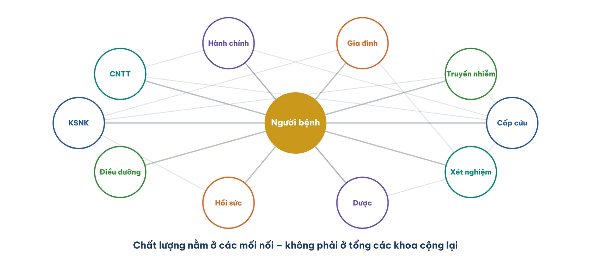
4. Bảng quy chiếu ứng dụng: từ triết lý đến quản trị và y học
Cú thức vi trần – nhất hợp tướng chính là nền tảng tư duy tương thích giữa tư duy hệ thống (systems thinking) và tính Không Bát-nhã:
Bảng 17.2. Quy chiếu ứng dụng cú thức “vi trần – nhất hợp tướng” vào quản trị và y học
| Lĩnh vực | Bước 1: Thiết lập Hệ thống (A) | Bước 2: Thấu suốt Tính Không (Phi A) | Bước 3: Ứng biến Trung đạo (Thị danh A) |
|---|---|---|---|
| Quản trị chất lượng bệnh viện (JCI / 5S / an toàn người bệnh) | Hệ thống và quy chuẩn:Xây dựng quy trình, bộ tiêu chuẩn, bảng kiểm an toàn người bệnh nghiêm ngặt (Nhất hợp tướng). Mỗi khâu kiểm tra là một mắt xích (Vi trần). | Phi hệ thống (Không chấp thủ):Nhận diện rõ quy trình giấy tờ không phải là mục đích tự thân. Quy trình luôn chứa những điều kiện tiềm ẩn (latent conditions) theo mô hình pho mát Thụy Sĩ, không sùng bái văn bản cứng nhắc. | Thị danh hệ thống (Thích ứng liên tục):Vận hành quy trình với kỷ luật tối đa, nhưng luôn sẵn sàng cải tiến liên tục (PDSA/Kaizen) khi thực tiễn lâm sàng thay đổi. Kỷ luật mà không giáo điều. |
| Lâm sàng và dịch tễ | Một ca bệnh / Ổ dịch:Xem xét người bệnh như một tổng thể hoàn chỉnh (Nhất hợp tướng) gồm các chỉ số tế bào, tải lượng virus, sinh hóa (Vi trần). | Phi định kiến (Vô chấp):Thấy rõ triệu chứng chỉ là biểu hiện duyên hợp; mầm bệnh biến chủng liên tục; không áp đặt thành kiến từ ca bệnh trước lên ca bệnh hiện tại. | Thị danh phác đồ:Cá thể hóa điều trị cho từng người bệnh dựa trên chứng cứ thực nghiệm cập nhật nhất, điều trị toàn diện cả thân lẫn tâm. |
| Tâm thế người lãnh đạo | Tổ chức và chức vị:Nắm giữ trọng trách, điều hành tổ chức, tập hợp sức mạnh của từng nhân sự, đội ngũ. | Vô ngã:Thấy rõ tổ chức thành công là nhờ sự duyên hợp của trăm nghìn mắt xích (nhân viên, đồng nghiệp, đối tác). Tâm không đọng lại vị kỷ kiêu mạn. | Phụng sự vô điều kiện:Dùng quyền lực và cơ cấu tổ chức như một phương tiện thiện xảo để phụng sự tha nhân, xây dựng an toàn người bệnh với tâm rỗng rang. |
Tóm lại, Tam đoạn luận trong Phân 30 không nhằm phủ nhận sự tồn tại của các thành tố vật chất hay hệ thống tổ chức, mà dạy ta cách thấu thị bản chất duyên hợp để không bị hình tướng trói buộc: Nhìn thấy cả vũ trụ trong một hạt bụi (Một là tất cả), và thấy hạt bụi rỗng rang trong lòng vũ trụ (Tất cả là một). Đó chính là tâm thái tự tại, trí tuệ đỉnh cao của bậc hành giả Bát-nhã giữa đời thường.
Sự tương đồng giữa nhất hợp tướng và mô hình pho mát Thụy Sĩ
Khi đặt triết lý Nhất hợp tướng (一合相) trong Phân 30 của Kinh Kim Cương bên cạnh mô hình pho mát Thụy Sĩ (Swiss Cheese Model) do James Reason đề xuất năm 1990 [40,120], ta nhận thấy sự tương đồng sâu sắc giữa tuệ giác Duyên khởi Bát-nhã và tư duy hệ thống hiện đại trong quản trị an toàn người bệnh.
Cả hai học thuyết đều hướng tới việc giải mã bản chất của một chỉnh thể phức tạp, phá vỡ định kiến cô lập từng hiện tượng đơn lẻ để nhìn thấu mạng lưới tương tác đa chiều bên trong.
1. Bảng đối chiếu khái niệm cốt lõi
Bảng 17.3. Đối chiếu khái niệm cốt lõi: nhất hợp tướng và mô hình pho mát Thụy Sĩ
| Tiêu chí | Nhất hợp tướng và vi trần (Kinh Kim Cương) | Mô hình pho mát Thụy Sĩ (James Reason) |
|---|---|---|
| Bản chất chỉnh thể | Nhất hợp tướng (Chỉnh thể duyên hợp): Toàn bộ thế giới không phải là một khối độc lập, bất biến mà được hợp thành từ vô số mắt xích vi tế. | Hệ thống phòng vệ đa tầng: Bệnh viện, quy trình cấp phát thuốc, phẫu thuật là một chuỗi phòng vệ liên hoàn gồm nhiều rào chắn tổ chức. |
| Thành tố vi mô | Vi trần (Hạt cực vi): Từng sát-na nhận thức, từng hạt bụi, từng chi tiết nhỏ vận hành theo quy luật duyên sinh. | Lát cắt và lỗ hổng (slices and holes): Từng bước kiểm tra, điều kiện làm việc, nhận thức cá nhân, thiết bị y tế và các điều kiện tiềm ẩn (latent conditions). |
| Bản chất sự cố | Do sự hội đủ của các duyên: không có sự vật nào tự sinh ra, mà do “trùng trùng duyên khởi” tương tác tạo thành quả. | Sự cố y khoa (adverse event) không do một lỗi đơn độc, mà xảy ra khi các lỗ hổng trên nhiều lát cắt tình cờ xếp thẳng hàng, tạo cơ hội cho mối nguy xuyên qua. |
| Gốc rễ sai lầm | “Đãn phàm phu chi nhân, tham trước kỳ sự”: Tâm lý chấp chặt vào cái vỏ ngoài toàn thể hoặc quy kết vào một đối tượng cá biệt. | Văn hóa đổ lỗi (blame culture): chỉ chăm chăm quy trách nhiệm cho cá nhân trực tiếp gây lỗi (lỗi hoạt động – active failure – ở tuyến đầu) mà bỏ qua thất bại của cả hệ thống ngầm bên dưới. |
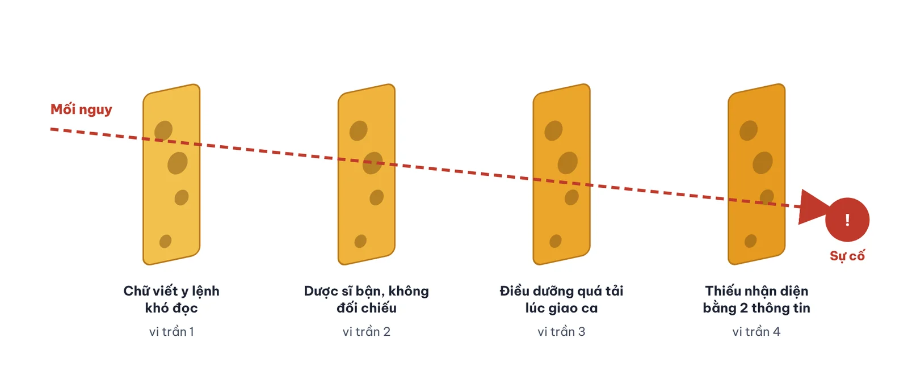
2. Ba điểm tương đồng căn bản
a. Mối quan hệ “một và tất cả” (vi trần tức thế giới)
- Trong Kim Cương: Kinh văn nhấn mạnh: nếu đập vỡ thế giới ra thành bụi thì thế giới không còn; nhưng nếu không có vô số vi trần tụ lại thì thế giới cũng không thành. Toàn thể và bộ phận nương tựa lẫn nhau (tương tức, tương nhập).
- Trong mô hình pho mát Thụy Sĩ: Một sự cố nghiêm trọng (như phẫu thuật nhầm bên hay sốc phản vệ do truyền nhầm thuốc) chính là “thế giới sự cố” được cấu thành từ hàng loạt “vi trần sai sót”:
- Chữ viết bác sĩ khó đọc (vi trần 1)
- Dược sĩ bận rộn không đối chiếu lại (vi trần 2)
- Điều dưỡng bị quá tải lúc giao ca (vi trần 3)
- Thiếu bước nhận diện người bệnh bằng 2 định danh (vi trần 4).
- Khi các lát cắt phòng vệ đều có lỗ thủng vi mô, quỹ đạo tai nạn xuyên thủng hệ thống. Không thể hiểu được “toàn thể” nếu không soi xét sự tương tác của từng “vi trần”.
b. “Phi nhất hợp tướng” – phá bỏ ảo tưởng về một hệ thống hoàn hảo tuyệt đối
- Trong Kim Cương: Đức Phật dạy: “Nhược thế giới thực hữu giả, tắc thị nhất hợp tướng. Như Lai thuyết nhất hợp tướng, tắc phi nhất hợp tướng, thị danh nhất hợp tướng.” Một hệ thống tưởng như vững chắc, bền vững muôn đời chỉ là giả danh; bản chất nó luôn biến chuyển, hàm chứa tính rỗng không và vô thường.
- Trong quản trị an toàn người bệnh: James Reason chỉ ra rằng: Không có hệ thống nào hoàn hảo 100%. Các lát pho mát phòng vệ (chính sách, quy trình JCI, bảng kiểm an toàn phẫu thuật của WHO, công nghệ cảnh báo) dù dày đặc đến đâu cũng luôn chứa các điều kiện tiềm ẩn (latent conditions) – những “lỗ hổng” nằm im trong thiết kế, quy trình, nhân lực – bên cạnh các lỗi hoạt động (active failures) của người ở tuyến đầu [40]. Người làm chất lượng nếu chấp chặt rằng “Bệnh viện đã có chứng chỉ quốc tế, quy trình chuẩn mực nên tuyệt đối an toàn” chính là đang mắc kẹt vào cái bẫy “tham trước nhất hợp tướng” — tự mãn và đánh mất sự cảnh giác chủ động.
c. Phá chấp “ngã – nhân” – chuyển dịch từ văn hóa đổ lỗi sang văn hóa công bằng (Just Culture)
- Kinh Kim Cương dạy lìa bốn tướng (ngã, nhân, chúng sinh, thọ giả): Khi một lỗi lầm xảy ra, nếu tâm thức vướng chấp vào “Ngã” (tôi đúng) và “Nhân” (người kia sai/anh ta gây họa), ta sẽ lập tức tìm kiếm một cá nhân cụ thể để trừng phạt nhằm xoa dịu trách nhiệm.
- Tư duy James Reason và an toàn người bệnh: con người ở tuyến đầu chỉ là mắt xích cuối cùng tiếp xúc với tai nạn (“đầu nhọn” – sharp end). Việc trừng phạt một điều dưỡng hay bác sĩ không giải quyết được lỗ hổng gốc rễ (“đầu tù” – blunt end: thiếu nhân lực, đào tạo kém, áp lực thời gian, thiết kế vỏ thuốc gây nhầm lẫn). Lìa chấp ngã chính là nền tảng của Văn hóa an toàn công bằng (Just Culture): thay vì hỏi “Ai đã làm sai?” (Nhân tướng), nhà quản trị nhìn vào bản chất duyên hợp để hỏi “Hệ thống đã thiếu sót điều kiện gì khiến lỗi lầm có thể xảy ra?”.
3. Quy trình thực hành: quán chiếu duyên khởi trong cải tiến chất lượng (HFMEA và RCA)
Vận dụng sự tương hợp này vào các công cụ phân tích sự cố (như phân tích nguyên nhân gốc – RCA, hoặc phân tích sai hỏng và tác động trong y tế – HFMEA):
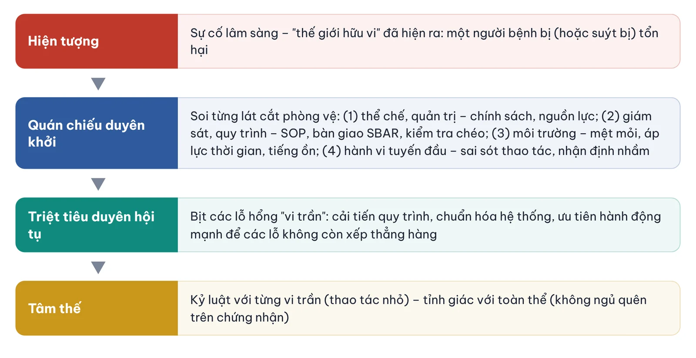
- Thực hành vi mô (chăm sóc từng vi trần): Kỷ luật tuân thủ từng thao tác nhỏ nhất (5 thời điểm vệ sinh tay, đọc lại y lệnh miệng, nhận diện đúng người bệnh). Một vi trần thanh tịnh góp phần làm cho cả “thế giới” an toàn.
- Tâm thế vĩ mô (Ứng vô sở trụ): Xem các bảng kiểm, chứng chỉ chất lượng chỉ là “chiếc bè” phương tiện (Thị danh quy trình). Người làm an toàn luôn duy trì sự tỉnh giác, thường trực rà soát và điều chỉnh liên tục, không để tâm ngủ quên trên bất kỳ tiêu chuẩn cố định nào.
TÌNH HUỐNGMột sự cố truyền máu dưới lăng kính “vi trần” (mô phỏng từ thực tế)
Một người bệnh được truyền nhầm một đơn vị khối hồng cầu cùng nhóm ABO nhưng của người bệnh giường bên – phát hiện sau 10 phút, ngừng truyền, người bệnh không bị tổn hại. Nhóm phân tích lần ra năm “vi trần”: (1) hai người bệnh cùng tên đệm và tên, nằm cạnh nhau; (2) túi máu của cả hai được lĩnh cùng một chuyến; (3) điều dưỡng đối chiếu tên trên túi máu với bảng tên đầu giường, không đối chiếu với vòng đeo tay; (4) bước kiểm tra hai người không thực hiện vì ca đêm chỉ có một điều dưỡng ở buồng; (5) phần mềm không có cảnh báo người bệnh trùng tên. Không “vi trần” nào tự nó gây sự cố; chúng hợp lại thành “thế giới sự cố”. Hành động khắc phục mạnh nhất không phải “nhắc nhở điều dưỡng”, mà là quét mã vạch vòng tay – túi máu tại giường và cảnh báo trùng tên trên hệ thống [43,49].
ĐIỂM THEN CHỐTĐiểm then chốt của Chương 17
- Phân 30: vi trần không có tự tính, thế giới chỉ là tập hợp duyên sinh, “nhất hợp tướng” cũng không phải một thực thể độc lập – bộ phận và toàn thể nương nhau mà có.
- Mô hình pho mát Thụy Sĩ: sự cố là kết quả của nhiều lỗ hổng xếp thẳng hàng ở nhiều lớp phòng vệ – một “nhất hợp tướng” của sai sót.
- “Đãn phàm phu chi nhân, tham trước kỳ sự”: chấp vào toàn thể (hệ thống đã hoàn hảo) hoặc chấp vào một vi trần (một người có lỗi) đều là mê lầm.
- Thực hành: kỷ luật với từng vi trần (thao tác nhỏ), tỉnh giác với toàn thể (không ngủ quên trên chứng nhận).
SUY NGẪMCâu hỏi suy ngẫm
1. Hãy chọn một sự cố gần đây của khoa và liệt kê ít nhất năm “vi trần” đã hợp lại tạo thành nó.
2. “Lát pho mát” nào của khoa anh/chị đang có lỗ hổng lớn nhất mà chưa ai gọi tên?
Chương 18
BỐN TƯỚNG VÀ THIÊN KIẾN NHẬN THỨC TRONG CHẨN ĐOÁN LÂM SÀNG
Hơn hai mươi lăm thế kỷ trước khi tâm lý học nhận thức ra đời, Kinh Kim Cương đã gọi tên bốn “tướng” che mắt con người: ngã tướng, nhân tướng, chúng sinh tướng, thọ giả tướng. Từ thập niên 1970, Tversky và Kahneman mở ra một lĩnh vực nghiên cứu mới về các lối tắt nhận thức (heuristics) và thiên kiến (biases) trong phán đoán của con người [52,119]. Từ đầu những năm 2000, Pat Croskerry và nhiều tác giả khác đưa các khái niệm ấy vào y khoa, chỉ ra rằng phần lớn sai sót chẩn đoán có liên quan đến nhận thức của người thầy thuốc [33]. Chương này đặt hai hệ thống ngôn ngữ ấy cạnh nhau – không để “khoa học hóa” kinh điển, mà để người thầy thuốc có thêm một tấm gương soi lại cách mình suy nghĩ bên giường bệnh.
Gánh nặng của sai sót chẩn đoán
Báo cáo Improving Diagnosis in Health Care của Viện Hàn lâm Khoa học, Kỹ thuật và Y học Hoa Kỳ (2015) kết luận rằng hầu hết mọi người sẽ trải qua ít nhất một sai sót chẩn đoán trong đời, đôi khi với hậu quả nghiêm trọng [68]. Ước tính trên ba nghiên cứu quan sát lớn cho thấy khoảng 5% người lớn đi khám ngoại trú ở Hoa Kỳ gặp sai sót chẩn đoán mỗi năm [121]. Phân tích 100 trường hợp sai sót chẩn đoán trong nội khoa của Graber và cộng sự ghi nhận yếu tố nhận thức góp phần vào 74% trường hợp và yếu tố hệ thống vào 65% – hai nhóm thường đan xen; trong các yếu tố nhận thức, “đóng cửa sớm” (premature closure – dừng suy nghĩ khi đã có một chẩn đoán có vẻ hợp lý) là phổ biến nhất [34].
Con số ấy nhắc ta rằng sai sót chẩn đoán phần lớn không đến từ thiếu kiến thức, mà từ cách tâm trí xử lý kiến thức dưới áp lực thời gian, mệt mỏi và cảm xúc – đúng địa hạt mà Kinh Kim Cương gọi là “tướng”.
Hai hệ thống tư duy và khoảnh khắc “dừng lại”
Kahneman mô tả hai hệ thống tư duy: hệ thống 1 – nhanh, tự động, dựa trên nhận dạng mẫu; hệ thống 2 – chậm, cân nhắc, tốn năng lượng [119]. Người thầy thuốc giàu kinh nghiệm dùng hệ thống 1 rất hiệu quả: nhìn một ban xuất huyết, nghe một tiếng thở rít, họ “biết” ngay. Nhưng chính sự nhanh nhạy ấy là nơi các thiên kiến trú ngụ. Norman và Eva lưu ý rằng không nên coi hệ thống 1 là “xấu” – phần lớn chẩn đoán đúng đến từ nó; vấn đề là biết khi nào cần chuyển sang hệ thống 2 [72].
Trong ngôn ngữ của Kinh Kim Cương, hệ thống 1 là nơi “tướng” sinh khởi tức thì – giống như ta thấy “cây bút” trước khi kịp hỏi vật ấy là gì (cấp độ 1, Chương 20). Câu kinh “nhược kiến chư tướng phi tướng” không yêu cầu ta ngừng nhận dạng mẫu, mà yêu cầu ta thấy được rằng mình đang nhận dạng – một năng lực mà khoa học gọi là siêu nhận thức (metacognition) và Epstein gọi là hành nghề chánh niệm [109].
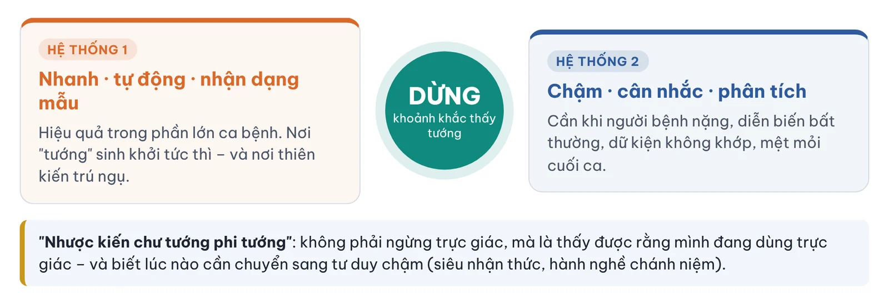
Bốn tướng và các thiên kiến nhận thức tương ứng
Lục Tổ Huệ Năng giải thích bốn tướng như các dạng chấp ngã vi tế [19]. Người viết ánh xạ mỗi tướng với một nhóm thiên kiến mà khoa học chẩn đoán đã mô tả. Sự ánh xạ này mang tính sư phạm – giúp ghi nhớ và tự soi xét – chứ không phải một phân loại học thuật chặt chẽ.
Căn cứ ngữ văn từ nguyên bản Phạn. Trong bản Phạn hiện hành, các “tướng” ở Phân 3, Phân 6, Phân 14 (ātma-saṃjñā, sattva-saṃjñā, jīva-saṃjñā, pudgala-saṃjñā) và “pháp tướng” ở Phân 6, Phân 31 (dharma-saṃjñā) đều dùng chữ saṃjñā, không phải lakṣaṇa – dấu hiệu, tướng trạng bên ngoài – như trong câu “phàm sở hữu tướng” của Phân 5. Ngài Huyền Trang dịch sát saṃjñā là 想 (tưởng) [1,2]. Thành Duy thức luận định nghĩa tưởng là tâm sở “lấy việc nắm bắt hình tướng của đối tượng làm tính, lấy việc đặt bày các danh ngôn làm nghiệp” (想謂於境取像為性，施設種種名言為業) – tức chức năng định danh, phân loại, gắn nhãn của nhận thức. Như vậy, bốn tướng và pháp tướng trước hết là những khuôn nhận thức (mental schema) mà tâm áp lên thực tại trước khi tiếp xúc trọn vẹn với sự thật; việc đối chiếu chúng với các thiên kiến nhận thức tuy là một ánh xạ sư phạm, nhưng có cơ sở ngữ văn ngay trong nguyên điển.
Bảng 18.1. Bốn tướng và các nhóm thiên kiến nhận thức trong chẩn đoán (ánh xạ sư phạm của người viết)
| Tướng | Bản chất chấp trước | Thiên kiến tương ứng | Biểu hiện bên giường bệnh |
|---|---|---|---|
| Ngã tướng | Chấp “tôi”, bảo vệ hình ảnh và quyết định của mình | Quá tự tin; thiên kiến xác nhận; hiệu ứng chi phí chìm; đóng cửa sớm | “Tôi đã chẩn đoán là viêm phổi” – bỏ qua dữ kiện không khớp |
| Nhân tướng | Chấp sự phân biệt ta – người, gán tính chất cố định cho người khác | Lỗi quy kết cơ bản; thiên kiến cảm xúc với người bệnh; tin quá mức hoặc nghi quá mức vào người chuyển bệnh | “Người bệnh này hay kêu ca” – đánh giá thấp triệu chứng thật |
| Chúng sinh tướng | Chấp vào loại, nhóm, khuôn mẫu | Thiên kiến đại diện; bỏ qua tỷ lệ nền; định kiến nhóm | “Người trẻ không thể nhồi máu cơ tim”; “say rượu thì lơ mơ là đúng” |
| Thọ giả tướng | Chấp vào sự liên tục theo thời gian, vào kinh nghiệm cũ | Neo vào thông tin đầu tiên; đà chẩn đoán; thiên kiến sẵn có (ca gần nhất); thiên kiến nguyên trạng | Chẩn đoán tuyến trước được chuyển nguyên qua nhiều ca trực; “ca tuần trước cũng thế” |
Phân 31 bổ sung một tầng tinh tế hơn: ngay cả pháp tướng – cái thấy đúng, kiến thức đúng – cũng không được chấp. Một phác đồ đúng, áp dụng như một khuôn đúc, có thể thành nguồn sai sót khi người bệnh không giống “người bệnh trung bình” của nghiên cứu. “Bất sinh pháp tướng” chính là thái độ coi mọi chẩn đoán là giả thuyết làm việc, luôn mở để kiểm chứng lại.
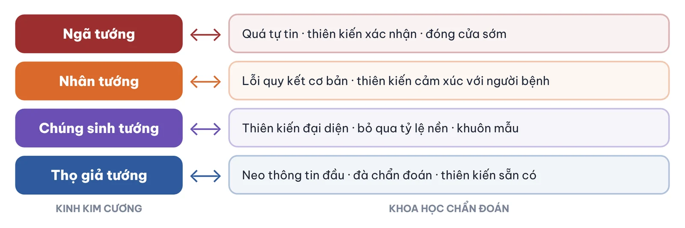
Những bẫy nhận thức thường gặp trong lâm sàng truyền nhiễm tại Việt Nam
Từ kinh nghiệm hơn hai mươi năm làm lâm sàng truyền nhiễm, người viết tổng hợp một số bẫy nhận thức hay gặp, kèm “câu hỏi lìa tướng” giúp thoát bẫy. Các ví dụ mang tính minh họa lâm sàng, không thay thế hướng dẫn chẩn đoán chuyên môn.
Bảng 18.2. Một số bẫy nhận thức thường gặp trong lâm sàng truyền nhiễm và câu hỏi giúp thoát bẫy
| Tình huống | Bẫy (tướng) | Câu hỏi lìa tướng |
|---|---|---|
| Sốt kéo dài đã dùng nhiều kháng sinh ở tuyến trước | Neo vào “đã dùng kháng sinh mạnh, chắc do virus” | Đã tìm vết loét sốt mò (nách, bẹn, thắt lưng) chưa? Đã nghĩ lao ngoài phổi, áp xe sâu, viêm nội tâm mạc, bệnh hệ thống chưa? |
| Mùa dịch sốt xuất huyết, người bệnh sốt kèm giảm tiểu cầu | Thiên kiến sẵn có: “mùa này thì là Dengue” | Có yếu tố gợi ý nhiễm Leptospira (lội nước, đau bắp chân, vàng da, suy thận), sốt mò, nhiễm khuẩn huyết không? |
| Người bệnh Dengue hết sốt, “trông khỏe hơn” | Đóng cửa sớm: “hết sốt là đỡ” | Đây có phải giai đoạn nguy hiểm? Hiệu áp, hematocrit, lượng nước tiểu, đau bụng, nôn thế nào? |
| Người bệnh say rượu, rối loạn ý thức | Chúng sinh tướng: “say thì lơ mơ” | Đã đo đường huyết, khám chấn thương đầu, nghĩ viêm màng não, hội chứng cai rượu chưa? |
| Người nhiễm HIV có số CD4 thấp, sốt, đau đầu nhẹ | Đánh giá thấp vì triệu chứng kín đáo | Đã nghĩ viêm màng não do Cryptococcus và chọc dịch não tủy đo áp lực chưa? |
| Người bệnh “hay kêu”, đã khám nhiều lần | Nhân tướng: thiên kiến cảm xúc | Nếu đây là lần đầu tôi gặp người bệnh này, tôi có làm khác không? |
| Viêm màng não ở người lớn nghe kém sau ăn tiết canh | Neo vào “viêm màng não do phế cầu” | Đã hỏi tiền sử tiếp xúc, ăn sản phẩm từ lợn chưa nấu chín – nghĩ Streptococcus suis chưa? |
| Chẩn đoán từ tuyến trước kèm theo người bệnh | Thọ giả tướng: đà chẩn đoán | Nếu tôi không đọc giấy chuyển viện, tôi sẽ chẩn đoán gì? |
| Người bệnh đái tháo đường sốt kèm viêm phổi, áp xe gan hoặc áp xe lách | Chúng sinh tướng: “áp xe là vi khuẩn thường gặp”, “tổn thương phổi mạn là lao” | Đã nghĩ bệnh Whitmore (Burkholderia pseudomallei) – cấy máu, mủ, đờm và báo phòng xét nghiệm nghi ngờ – và chọn kháng sinh bao phủ (ceftazidim hoặc carbapenem) chưa? |
Các chiến lược “lìa tướng” có bằng chứng
Croskerry và cộng sự đề xuất nhiều chiến lược giảm thiên kiến (debiasing); Ely, Graber và Croskerry phát triển các bảng kiểm chẩn đoán đơn giản [33,35]. Người viết sắp xếp lại chúng theo tinh thần Kinh Kim Cương:
- Khoảnh khắc dừng chẩn đoán (diagnostic time-out): trước khi chốt chẩn đoán ở người bệnh nặng hoặc diễn biến bất thường, dừng 60 giây và hỏi: “Điều gì nguy hiểm nhất không được bỏ sót? Dữ kiện nào chưa khớp?” – thực hành “nhược kiến chư tướng phi tướng”.
- Xem xét điều ngược lại (consider the opposite): chủ động tìm bằng chứng chống lại giả thuyết của mình – hàng phục ngã tướng.
- Hội chẩn và ý kiến thứ hai: mời người không bị “neo” vào thông tin ban đầu – phá thọ giả tướng.
- Chẩn đoán phân biệt có cấu trúc: dùng các bảng kiểm theo triệu chứng thay vì chỉ dựa vào trí nhớ – phá chúng sinh tướng.
- Nhận diện cảm xúc của chính mình đối với người bệnh (mệt mỏi, khó chịu, thương cảm quá mức) – phá nhân tướng.
- Theo dõi kết cục và phản hồi: biết chẩn đoán của mình đúng hay sai sau ra viện – vòng học hỏi giúp hiệu chỉnh trực giác.
THỰC HÀNHCông cụ “Bốn câu hỏi lìa tướng” – thẻ bỏ túi cho bác sĩ trực
Trước khi chốt chẩn đoán cho một người bệnh nặng, hoặc khi diễn biến không như dự kiến, hãy tự hỏi:
1. Ngã tướng: Tôi có đang bảo vệ chẩn đoán của mình chỉ vì đó là chẩn đoán của tôi?
2. Nhân tướng: Cảm xúc của tôi về người bệnh (hoặc về người chuyển bệnh) có đang chi phối đánh giá?
3. Chúng sinh tướng: Tôi đang nghĩ về người bệnh này hay về một loại người bệnh trong đầu tôi?
4. Thọ giả tướng: Tôi có đang bị neo vào thông tin đầu tiên, chẩn đoán tuyến trước hay ca bệnh gần nhất?
Và câu hỏi thứ năm của Phân 31: Nếu chẩn đoán này sai, điều gì nguy hiểm nhất tôi đang bỏ sót?
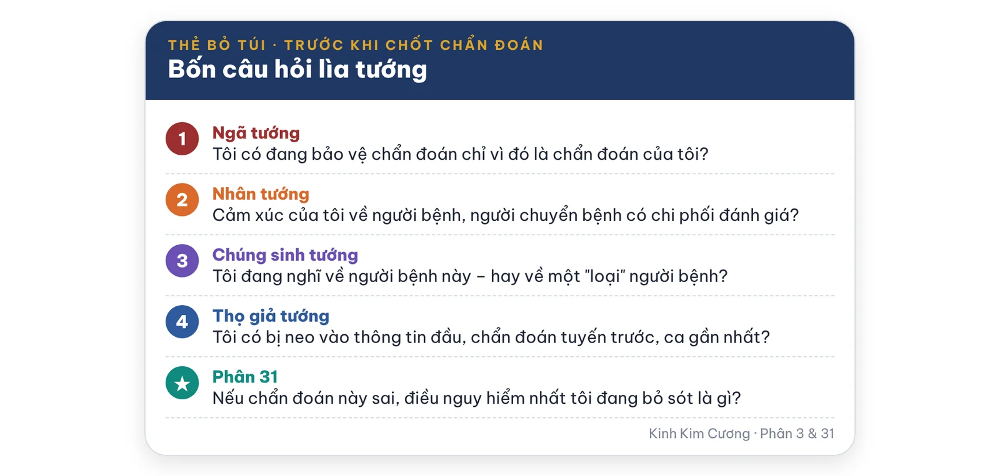
Bốn tướng trong phòng họp phân tích sự cố
Các thiên kiến không chỉ xuất hiện bên giường bệnh mà còn trong phòng họp quản lý chất lượng. Thiên kiến nhìn lại khiến người phân tích cho rằng người trong cuộc “lẽ ra phải thấy” [41]; thiên kiến kết cục khiến cùng một hành vi bị phán xét nặng hơn chỉ vì kết cục xấu hơn; lỗi quy kết cơ bản khiến ta giải thích sai sót của người khác bằng tính cách – “cẩu thả”, “thiếu ý thức” – còn sai sót của mình bằng hoàn cảnh [81]. Bốn tướng vì thế là bốn “bộ lọc” làm méo kết quả RCA – điều đã được trình bày chi tiết ở cấp độ 1 (Chương 20). Năm quy tắc nhân quả của RCA² chính là “giới luật” giúp người phân tích viết nguyên nhân mà không bị tướng chi phối [43].
ĐIỂM THEN CHỐTĐiểm then chốt của Chương 18
- Sai sót chẩn đoán phổ biến và phần lớn có yếu tố nhận thức; “đóng cửa sớm” là thiên kiến hay gặp nhất.
- Bốn tướng của Kinh Kim Cương là một khung ghi nhớ hữu ích cho bốn nhóm thiên kiến: bảo vệ cái tôi, định kiến với người khác, khuôn mẫu nhóm, neo vào quá khứ.
- “Thấy tướng là phi tướng” không phải là bỏ trực giác, mà là thấy được rằng mình đang dùng trực giác – và biết lúc nào cần dừng lại.
- Công cụ thực hành: bốn câu hỏi lìa tướng, khoảnh khắc dừng chẩn đoán, hội chẩn, theo dõi kết cục.
SUY NGẪMCâu hỏi suy ngẫm
1. Hãy nhớ lại một chẩn đoán sai (của chính anh/chị hoặc anh/chị chứng kiến). Tướng nào đã có mặt?
2. Khoa anh/chị có cơ chế nào để bác sĩ biết kết cục của những người bệnh mình đã chẩn đoán ở cấp cứu không?
3. Anh/chị sẽ dùng “Bốn câu hỏi lìa tướng” vào thời điểm nào trong ca trực tới?
Chương 19
LỜI CHÂN THẬT VÀ GIAO TIẾP AN TOÀN: MÔ HÌNH SBAR
Phân 14 của Kinh Kim Cương mô tả lời nói của Như Lai bằng năm phẩm chất: “Như Lai thị chân ngữ giả, thực ngữ giả, như ngữ giả, bất cuống ngữ giả, bất dị ngữ giả” – lời chân, lời thật, lời đúng như sự việc, lời không dối gạt, lời không sai khác. Trong bản Phạn, câu này dùng các từ bhūtavādī (nói đúng sự thật đã xảy ra), satyavādī (nói lời chân thật), tathāvādī (nói đúng như thực), ananyathāvādī (nói không đổi khác) và na vitathavādī (không nói sai lệch) [2] – nghĩa gốc của bhūta (dữ kiện có thật) và ananyathā (không đổi khác giữa các lần nói) đặc biệt gần với hai đòi hỏi của bàn giao an toàn: đúng dữ kiện và nhất quán. Ở cấp độ 3 (Chương 22), năm phẩm chất này được ánh xạ thành năm phẩm chất của dữ liệu chất lượng. Ở chương này, chúng trở thành năm phẩm chất của giao tiếp lâm sàng an toàn: thông tin đúng (chân), trung thực kể cả khi bất lợi cho mình (thật), đúng cấu trúc và định nghĩa (như), không làm nhẹ hay làm nặng tình hình (bất cuống), và nhất quán giữa người nói – người nghe – hồ sơ (bất dị).
KINH VĂNNăm lời chân thật (Phân 14)
如來是真語者、實語者、如語者、不誑語者、不異語者。
Như Lai thị chân ngữ giả, thực ngữ giả, như ngữ giả, bất cuống ngữ giả, bất dị ngữ giả.
Năm phẩm chất của một lời bàn giao an toàn: chính xác – trung thực – đúng cấu trúc – không thêm bớt – nhất quán.
Trong các tài liệu của Tổ chức Y tế Thế giới (WHO) và của Joint Commission International (JCI – Mục tiêu An toàn người bệnh Quốc tế số 2: Cải thiện giao tiếp hiệu quả), thất bại trong giao tiếp lâm sàng được ghi nhận là một trong những căn nguyên gốc hàng đầu của các biến cố bất lợi nghiêm trọng (sentinel events) [32,70,122].
Chiếu theo mô hình pho mát Thụy Sĩ, giao tiếp chính là lát cắt phòng vệ trung tâm kết nối giữa các thành viên đa chuyên khoa (bác sĩ – điều dưỡng – dược sĩ – cận lâm sàng). Khi lát cắt này xuất hiện lỗ hổng (thông tin đứt đoạn, mơ hồ, ngần ngại báo cáo do rào cản phân cấp), quỹ đạo tai nạn sẽ lập tức xuyên thủng toàn bộ hệ thống.
Công cụ SBAR (Situation – Background – Assessment – Recommendation) ra đời chính là giải pháp chuẩn hóa nhằm “bịt chặt” lỗ hổng vi trần này.
Cơ chế bịt “lỗ hổng pho mát” của mô hình SBAR
Bảng 19.1. Cơ chế “bịt lỗ hổng” giao tiếp của SBAR
| Lỗ hổng của giao tiếp truyền thống | Được bịt kín bằng cấu trúc SBAR |
|---|---|
| Dài dòng, lạc đề, thiếu trọng tâm | S – Tình huống: vào thẳng vấn đề cốt lõi trong 10–15 giây đầu |
| Thiếu dữ liệu nền, quên tiền sử dị ứng | B – Bối cảnh: cung cấp đúng bối cảnh lâm sàng then chốt |
| Chỉ báo sự việc, không đưa nhận định | A – Đánh giá: dấu hiệu sinh tồn và nhận định khách quan của người báo |
| Không rõ kỳ vọng, chờ đợi bị động | R – Đề xuất: đề nghị hành động cụ thể, có thời hạn, xác nhận lại |
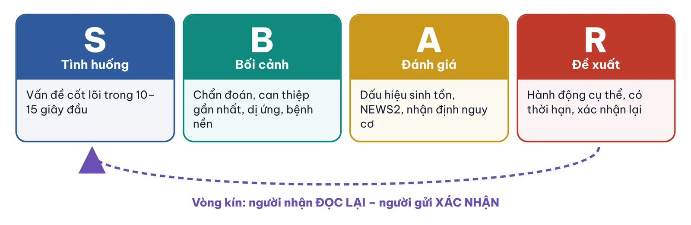
- Loại bỏ “mô hình tư duy phân tán” (fragmented mental models): Điều dưỡng và bác sĩ thường có phong cách giao tiếp khác nhau (điều dưỡng quen mô tả diễn biến chi tiết, bác sĩ cần kết luận súc tích). SBAR thiết lập một “ngôn ngữ chung”, giúp hai bên đồng quy về một bức tranh lâm sàng tức thì.
- Hạ thấp rào cản thứ bậc (flattening hierarchy): Cung cấp cấu trúc giúp nhân viên tuyến đầu (đặc biệt là điều dưỡng trẻ hoặc bác sĩ nội trú) tự tin lên tiếng khi phát hiện dấu hiệu cảnh báo sớm mà không sợ bị phán xét hay khiển trách.
Khung cấu trúc bốn bước SBAR chuẩn trong an toàn người bệnh
1. S – Tình huống (Situation)
Xác định ngay vấn đề cấp bách trong 10–15 giây đầu.
Nêu rõ: họ tên người gọi, vị trí công tác, khoa phòng; ít nhất hai thông tin định danh người bệnh (họ tên và năm sinh hoặc mã người bệnh – số giường chỉ là vị trí, không phải thông tin định danh); lý do gọi điện khẩn cấp hoặc vấn đề bất thường vừa ghi nhận. Khi phần nhận diện người gọi và người bệnh được tách thành một bước riêng ở đầu cuộc gọi, mô hình được gọi là ISBAR (Identify – Situation – Background – Assessment – Recommendation), như trình bày ở cuối chương và ở Biểu mẫu 2 (Phụ lục 3).
Ví dụ: “Chào Bác sĩ Nam, tôi là Điều dưỡng Lan tại Khoa Truyền nhiễm. Tôi gọi báo động về người bệnh Nguyễn Văn A, sinh năm 1981, giường số 08: người bệnh vừa tụt huyết áp đột ngột và thở rít.”
2. B – Bối cảnh (Background)
Chỉ cung cấp dữ liệu nền tảng liên quan trực tiếp đến vấn đề.
Nêu ngắn gọn: Lý do nhập viện, chẩn đoán chính, các can thiệp hoặc thuốc điều trị gần nhất, tiền sử dị ứng hoặc bệnh nền quan trọng.
Ví dụ: “Người bệnh nam 45 tuổi, nhập viện ngày thứ 2 do viêm phổi cộng đồng, không có tiền sử hen phế quản, chưa ghi nhận dị ứng thuốc. Cách đây 15 phút vừa được truyền tĩnh mạch liều kháng sinh đầu tiên (ceftriaxon).”
3. A – Đánh giá (Assessment)
Cung cấp chỉ số sinh tồn và nhận định lâm sàng hiện tại.
Báo cáo đầy đủ bộ chỉ số sinh tồn mới nhất (huyết áp, mạch, SpO₂, nhịp thở, nhiệt độ), tình trạng tri giác và nhận định sơ bộ của bản thân về nguy cơ.
Ví dụ: “Lúc phát hiện: mạch 120 lần/phút, huyết áp tụt còn 80/50 mmHg, SpO₂ 91% khi thở khí phòng, ban đỏ rải rác vùng ngực cổ, thở co kéo nhẹ. Tôi đánh giá người bệnh bị phản vệ độ II–III do kháng sinh.”
4. R – Đề xuất (Recommendation)
Nêu rõ mong muốn hành động và xác nhận y lệnh.
Đề xuất can thiệp ngay lập tức: yêu cầu bác sĩ có mặt trực tiếp, đề xuất dùng thuốc cấp cứu bước đầu hoặc xét nghiệm khẩn; áp dụng kỹ thuật đọc lại – xác nhận (read-back/closed-loop communication).
Ví dụ: “Tôi đã ngừng ngay truyền kháng sinh, đặt người bệnh nằm đầu thấp, cho thở oxy, và lúc 3 giờ 12 đã tiêm bắp liều adrenalin đầu tiên (nửa ống 1 mg/1 mL, tức 0,5 mg) từ hộp chống phản vệ tại giường. Tôi đang đo huyết áp 3–5 phút một lần để tiêm nhắc lại nếu huyết áp chưa lên. Đề nghị bác sĩ có mặt ngay tại giường.” Bác sĩ trả lời: “Tôi đến ngay. Nếu sau 5 phút huyết áp chưa lên, chị tiêm bắp nhắc lại adrenalin 0,5 mg và đặt thêm một đường truyền tĩnh mạch.” Điều dưỡng đọc lại: “Sau 5 phút nếu huyết áp chưa lên thì tiêm bắp nhắc lại adrenalin 0,5 mg, đặt thêm một đường truyền tĩnh mạch.” Bác sĩ xác nhận: “Đúng.”
Lưu ý: theo Thông tư 51/2017/TT-BYT, nhân viên y tế phát hiện phản vệ phải xử trí ngay theo phác đồ – ngừng thuốc, cho người bệnh nằm đầu thấp, tiêm bắp adrenalin, thở oxy, theo dõi huyết áp 3–5 phút một lần và tiêm nhắc lại adrenalin cho đến khi huyết áp ổn định – không chờ y lệnh [123].
Ma trận ứng dụng SBAR trong các kịch bản lâm sàng trọng yếu
Bảng 19.2. Ma trận ứng dụng SBAR trong các kịch bản lâm sàng trọng yếu
| Tình huống lâm sàng | Lỗ hổng tiềm ẩn | Ứng dụng chuẩn hóa SBAR |
|---|---|---|
| Bàn giao ca trực (Handover) | Bỏ sót các xét nghiệm chưa có kết quả, không nhắc nhở về nguy cơ ngã hoặc loét tì đè. | Dùng bảng kiểm SBAR trên phần mềm bệnh án điện tử (EMR) hoặc sổ giao ban: Chốt rõ các mục “Cần theo dõi sát” (A) và “Việc cần làm trong ca tới” (R). |
| Thông báo giá trị nguy hiểm (critical values) | Kỹ thuật viên xét nghiệm/X-quang báo kết quả qua loa, người nhận ghi chép nhầm lẫn. | Bắt buộc báo kết quả theo SBAR kèm đọc lại – xác nhận: đọc lại họ tên người bệnh, chỉ số bất thường (như kali 6,8 mmol/L), người nhận nhắc lại nguyên văn để xác thực. |
| Chuyển khoa / Chuyển viện (Transfer) | Người bệnh rời khoa điều trị mà hồ sơ thiếu tóm tắt diễn biến, thuốc đang truyền dở dang. | Phiếu chuyển tuyến/chuyển khoa định dạng SBAR đi kèm người bệnh, ký bàn giao tay đôi giữa điều dưỡng hộ tống người bệnh và điều dưỡng tiếp nhận. |
| Gọi Đội phản ứng nhanh (MET / RRT) | Điều dưỡng thấy người bệnh “trông không ổn” nhưng sợ báo sai, trì hoãn gọi hỗ trợ. | Kích hoạt hệ thống MEWS/NEWS (Thang cảnh báo sớm). Khi điểm số vượt ngưỡng, điều dưỡng kích hoạt MET qua SBAR mà không cần chờ bác sĩ điều trị cho phép. |
Góc nhìn Bát-nhã: “thị danh SBAR” trong quản trị chất lượng
Vận dụng tam đoạn Kim Cương (A – tức phi A – thị danh A, Chương 4) vào việc triển khai SBAR:
- Xây dựng khuôn mẫu (A): huấn luyện toàn viện tuân thủ triệt để cấu trúc SBAR để biến thành phản xạ tự nhiên của mỗi nhân viên y tế.
- Không máy móc giáo điều (phi A): SBAR là công cụ hỗ trợ tư duy, không phải là một bài đọc vẹt vô cảm. Trong tình huống ngừng tuần hoàn, việc kích hoạt báo động đỏ (Code Blue) cần sự quyết đoán trong vài giây chứ không phải đứng đọc rườm rà từng dòng chữ.
- Trung đạo linh hoạt (thị danh A): lấy an toàn tính mạng của người bệnh làm trung tâm tối thượng. Khi tâm thức người nhân viên y tế rỗng rang không còn vướng chấp “cái tôi” e ngại hay sĩ diện cấp bậc, lời nói giao tiếp qua SBAR sẽ đạt được sự chuẩn xác, từ tâm và hiệu quả bảo vệ cao nhất.
SBAR tại bệnh viện tuyến cuối: từ công cụ đến thói quen
Tại bệnh viện tuyến cuối, cấu trúc ISBAR (thêm bước Identify – nhận diện người gọi và người bệnh) được đưa vào các sáng kiến cải tiến của đơn vị Truyền nhiễm, tiêu biểu là “SEPSIS KHÔNG CHỜ”: dùng ISBAR khi điều dưỡng gọi bác sĩ lúc điểm NEWS2 vượt ngưỡng và khi chuyển người bệnh sang hồi sức [95]. Bằng chứng quốc tế cho thấy chuẩn hóa bàn giao có thể giảm đáng kể sai sót mà không làm tăng thời gian bàn giao – chương trình I-PASS tại chín bệnh viện nhi giảm 23% sai sót y khoa và 30% biến cố bất lợi có thể phòng ngừa [29].
Bảng 19.3. Lộ trình đưa SBAR/ISBAR thành thói quen của một khoa lâm sàng (gợi ý)
| Giai đoạn | Hoạt động |
|---|---|
| Tuần 1–2 | Thẻ ISBAR bỏ túi; mẫu ISBAR in sẵn cạnh điện thoại trực; 15 phút đóng vai tại giao ban |
| Tuần 3–6 | Bàn giao ca tại giường theo ISBAR cho người bệnh nặng; điều dưỡng trưởng quan sát và phản hồi |
| Tuần 7–12 | Đưa ISBAR vào phiếu chuyển khoa, chuyển viện; báo giá trị nguy hiểm bắt buộc đọc lại – xác nhận |
| Sau 3 tháng | Tracer bàn giao định kỳ; chỉ số: % cuộc gọi khẩn đủ 4 thành phần, % bàn giao có “việc cần làm trong ca tới” |
TÌNH HUỐNGMột cuộc gọi lúc 3 giờ sáng – trước và sau SBAR (mô phỏng từ thực tế)
Trước: “Alô bác sĩ ơi, giường 12 bà cụ hôm qua vào ấy, bà ấy mệt, con gái bà cứ gọi suốt, bác sĩ xuống xem giúp em…” – bác sĩ trực đang ở khoa khác hỏi lại ba lần mới hiểu, quyết định “để 30 phút nữa xuống”.
Sau: “Em là Hà, điều dưỡng khoa Truyền nhiễm. Bà Nguyễn Thị B, 78 tuổi, giường 12: (S) bà lơ mơ hơn, thở nhanh 28 lần/phút. (B) Bà vào viện hôm qua vì viêm đường mật, đang dùng kháng sinh. (A) Huyết áp 85/50, mạch 118, SpO₂ 92%, NEWS2 = 13; em lo bà đang sốc nhiễm khuẩn. (R) Em đề nghị bác sĩ xuống ngay trong 10 phút; em đã lấy đường truyền thứ hai và chuẩn bị cấy máu – bác sĩ có cho truyền dịch nhanh không ạ?” – bác sĩ có mặt sau 6 phút.
Cùng một điều dưỡng, cùng một tình trạng người bệnh; khác nhau ở cấu trúc của lời nói. SBAR là hình thức; “lời chân thật” là tinh thần – thấy đúng, nói đúng, đề nghị rõ.
ĐIỂM THEN CHỐTĐiểm then chốt của Chương 19
- Giao tiếp là lát cắt phòng vệ trung tâm trong mô hình pho mát Thụy Sĩ; SBAR là cách “bịt lỗ hổng” có cấu trúc.
- Năm lời chân thật của Phân 14 là năm phẩm chất của giao tiếp an toàn: chính xác, trung thực, đúng cấu trúc, không thêm bớt, nhất quán.
- SBAR cần đi kèm vòng xác nhận “đọc lại – xác nhận” và một văn hóa cho phép người ở vị trí thấp được đề xuất rõ ràng.
- “Thị danh SBAR”: tuân thủ cấu trúc nhưng không máy móc – trong ngừng tuần hoàn, kích hoạt báo động đỏ cần quyết đoán trong vài giây.
SUY NGẪMCâu hỏi suy ngẫm
1. Cuộc gọi khẩn gần nhất anh/chị nhận (hoặc thực hiện) có đủ bốn thành phần S – B – A – R không? Thiếu thành phần nào?
2. Ở khoa anh/chị, người ở vị trí thấp nhất có dám nói phần “R – đề xuất” không?
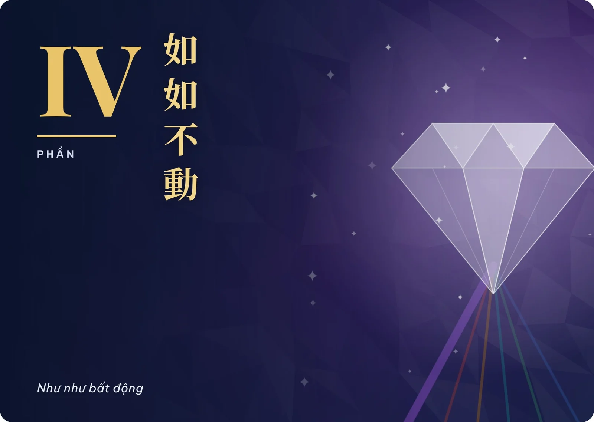
Phần thứ tư
SÁU CẤP ĐỘ BẢN LĨNH QUẢN LÝ CHẤT LƯỢNG VÀ AN TOÀN NGƯỜI BỆNH
Từ thô đến tinh · từ vỏ ngoài vào cốt lõi · từ công cụ đến bản lĩnh
Ba phần đầu của cuốn sách đã đi từ văn bản kinh đến nghĩa lý từng phân, rồi bắc cầu sang khoa học an toàn người bệnh. Phần thứ tư là phần “hành”: người viết hệ thống hóa chuỗi sáu bài giảng đã được xây dựng và giảng dạy cho mạng lưới quản lý chất lượng – an toàn người bệnh (QLCL – ATNB) của một bệnh viện tuyến cuối, mỗi bài 180 phút, đi theo một lộ trình sáu cấp độ từ thô đến tinh. Một số ý tưởng về cách đưa Kinh Kim Cương vào quản trị (câu chuyện cây bút, bốn quy luật của hạt giống, bốn bước gieo hạt) được tham khảo từ các sách của Geshe Michael Roach [124,125] – nhưng cấu trúc lộ trình, nội dung khoa học, công cụ và tình huống được xây dựng hoàn toàn trên nền thực tiễn bệnh viện Việt Nam và các chuẩn mực quốc tế về an toàn người bệnh.
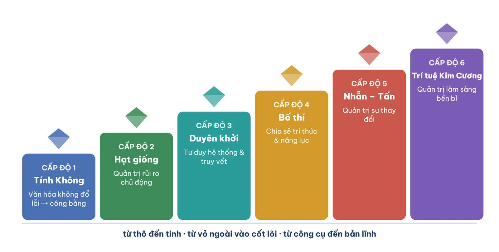
Logic của lộ trình sáu cấp độ
Thứ tự sáu cấp độ không ngẫu nhiên. Nó đi từ cách thấy (Tính Không – cấp độ 1) đến cách gieo hành vi hằng ngày (Hạt giống – cấp độ 2), rồi mở rộng sang cách kết nối các khâu trong hệ thống (Duyên khởi – cấp độ 3), cách trao tri thức và năng lực cho con người (Bố thí – cấp độ 4), cách bền bỉ dẫn dắt thay đổi (Nhẫn – Tấn – cấp độ 5), và sau cùng là cách ứng biến của trí tuệ vô trụ trong một hệ thống phức hợp (Trí tuệ Kim Cương – cấp độ 6). Tính Không xuất hiện hai lần: ở cấp độ 1 dưới dạng “thô” nhất – một cách nhìn sự cố không đổ lỗi; và ở cấp độ 6 dưới dạng “tinh” nhất – tâm “ưng vô sở trụ” của người lãnh đạo giữa biến động.
Bảng IV.1. Sáu cấp độ: phẩm chất Bát-nhã, năng lực quản trị và công cụ trọng tâm
| Cấp độ | Phẩm chất Bát-nhã | Năng lực QLCL – ATNB | Công cụ, mô hình trọng tâm |
|---|---|---|---|
| 1 | Tính Không | Văn hóa không đổ lỗi → văn hóa công bằng | Mô hình Reason, Just Culture, ma trận SAC, RCA², thứ bậc hành động |
| 2 | Hạt giống (nhân quả) | Quản trị rủi ro chủ động | HFMEA, ma trận điểm nguy cơ, Lean (8 lãng phí), 5S, sổ đăng ký rủi ro |
| 3 | Duyên khởi | Tư duy hệ thống và truy vết | Tảng băng hệ thống, Donabedian, tracer JCI, từ điển chỉ số |
| 4 | Bố thí | Chia sẻ tri thức, phát triển năng lực | Tam luân không tịch, SECI, khung năng lực, BEI, BARS, Kirkpatrick |
| 5 | Nhẫn – Tấn | Quản trị sự thay đổi | Lewin, Kotter, ADKAR, Rogers, đường cong thay đổi, lãnh đạo tinh gọn |
| 6 | Trí tuệ Kim Cương | Quản trị lâm sàng bền bỉ | Safety-II, năng lực phục hồi, HRO, FRAM, AAR, khung kim cương 6 mặt |
Cấu trúc thống nhất của mỗi cấp độ
Mỗi chương trong phần này giữ một cấu trúc bốn bước, phản ánh trục hiểu – thấy – làm – thành thói quen:
- Kinh văn – Thấy đúng: chọn ba đến năm đoạn kinh làm “la bàn” cho cách nghĩ của cấp độ.
- Khoa học và công cụ: bằng chứng, mô hình và công cụ quản trị đã được kiểm chứng quốc tế, mỗi khẳng định đều có nguồn.
- Thực hành tại bệnh viện tuyến cuối: tình huống mô phỏng từ thực tế bệnh viện Việt Nam (chi tiết đã được thay đổi, không nhằm vào cá nhân, khoa phòng hay cơ sở y tế cụ thể) và các sáng kiến có thật của đơn vị Truyền nhiễm.
- Gieo hạt bản lĩnh: bốn bước gieo hạt (theo Geshe Michael Roach) và bài tập thực hành 30 ngày với sổ 6 thời, vì không có thực hành có cấu trúc thì bài giảng chỉ là thông tin, không thành bản lĩnh [126]. Bốn bước gieo hạt mượn quy luật nhân quả làm điểm tựa thực hành cho người mới bắt đầu; để hạt giống ấy mang phẩm chất Bát-nhã, bước thứ tư (hoan hỷ) cần đi cùng tinh thần “ba luân thể không” của Phân 4 và “Bồ-tát bất thọ phúc đức” của Phân 28: giúp đồng nghiệp, giúp khoa bạn bằng trọn tâm sức mà không ngầm mặc cả sự đền đáp hay danh tiếng cho riêng mình.
LƯU ÝMột nguyên tắc học thuật xuyên suốt
Trong toàn bộ Phần thứ tư, kinh văn được dùng như la bàn cho cách nghĩ, khoa học được dùng như bằng chứng, còn thực tiễn khoa phòng là nơi kiểm chứng. Người học không cần chấp nhận các diễn giải siêu hình của bất kỳ truyền thống nào để vận dụng được bài học quản trị; ngược lại, người tu học cũng không cần “khoa học hóa” kinh điển mới thấy được giá trị của nó. Hai dòng tri thức gặp nhau ở chỗ cùng hướng về một mục đích: bớt khổ cho người bệnh và cho chính người thầy thuốc.
Chương 20
CẤP ĐỘ 1 – TÍNH KHÔNG VÀ CÂY BÚT: TỪ VĂN HÓA KHÔNG ĐỔ LỖI ĐẾN VĂN HÓA CÔNG BẰNG
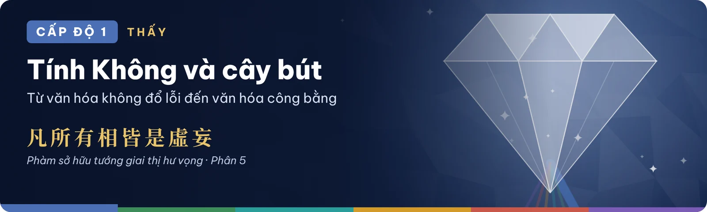
Cấp độ thứ nhất là cánh cửa đầu tiên và cũng là nền móng của toàn bộ lộ trình: thay đổi cách THẤY một sự cố y khoa. Nếu cách thấy sai, mọi công cụ phía sau – phân tích nguyên nhân gốc, phân loại mức độ, kế hoạch hành động – đều bị bẻ cong bởi cảm xúc đổ lỗi. Kinh Kim Cương là bộ kinh dạy “cắt đứt” các chấp trước; trong quản lý chất lượng, chấp trước nguy hiểm nhất là chấp vào “lỗi của một con người”.
ĐIỂM THEN CHỐTMục tiêu của cấp độ 1
1. Giải thích được Tính Không qua câu chuyện Cây bút và vận dụng để nhìn lại một sự cố y khoa.
2. Phân biệt mô hình con người và mô hình hệ thống (Reason); phân biệt sai sót – hành vi rủi ro – hành vi liều lĩnh (Just Culture).
3. Thực hành phân loại SAC và phân tích nguyên nhân gốc RCA² cho một sự cố nhầm thuốc nhìn giống – đọc giống (LASA).
4. Cam kết 30 ngày thực hành “nhìn sự cố bằng tuệ nhãn” tại khoa, phòng.
Khởi động: ba phút với một cây bút
Chương này không bắt đầu bằng lý thuyết mà bằng một trải nghiệm. Người đọc hãy cầm cây bút của mình trên tay, ngồi thẳng, thở chậm ba hơi, rồi hỏi thầm: “Vật này là gì?” – và để ý câu trả lời đến nhanh đến mức nào. Sau đó hãy tưởng tượng một em bé một tuổi, một chú chó, một người chưa từng thấy bút nhìn vào vật ấy. Họ thấy gì? Em bé thấy một đồ chơi để gõ, chú chó thấy một khúc gỗ để gặm, người chưa từng biết chữ thấy một que nhỏ vô dụng. Câu hỏi mang theo suốt chương này là: “Cái 'bút' nằm ở vật – hay ở người nhìn?”
Sự cố y khoa cũng vậy: ta thấy “lỗi của ai đó” trước khi kịp thấy điều gì đã thực sự xảy ra.
TÌNH HUỐNGTình huống mở đầu: “Ai có lỗi?” (mô phỏng từ thực tế)
Ca đêm, một khoa nội có 32 người bệnh và 2 điều dưỡng. Bốn giờ sáng, điều dưỡng cần một ống NaCl 0,9% để tráng đường truyền. Trong ngăn xe tiêm có ống KCl 10% vừa trúng thầu đợt mới – cùng cỡ, nắp trong, nhãn xanh gần giống ống NaCl. Điều dưỡng bơm được 2 ml thì người bệnh kêu buốt dọc tĩnh mạch; điều dưỡng lập tức dừng, báo bác sĩ, theo dõi điện tim. Người bệnh ổn định.
Giao ban sáng, câu đầu tiên vang lên trong phòng họp: “Ai trực? Phải kỷ luật để làm gương!”
Câu hỏi thảo luận: Phản ứng đầu tiên của anh/chị là gì? Nếu kỷ luật điều dưỡng này, ngày mai rủi ro có giảm không? Còn bao nhiêu xe tiêm khác trong bệnh viện đang có cặp ống giống nhau?
Kali clorid đậm đặc nằm trong danh mục thuốc nguy cơ cao của Viện Thực hành thuốc an toàn Hoa Kỳ (ISMP); tiêm tĩnh mạch nhanh có thể gây ngừng tim [127]. Cặp ống tiêm nhìn giống nhau là dạng sự cố LASA (look-alike, sound-alike) kinh điển, được WHO xếp vào trọng tâm của Thách thức toàn cầu về an toàn người bệnh lần thứ ba “Dùng thuốc không gây hại” [64,128]. Khi giảng, người viết thường mời ba – bốn học viên trả lời câu hỏi thứ nhất thật nhanh, ghi lên bảng các từ khóa: cẩu thả, thiếu kiểm tra, mệt mỏi, nhà thầu… Bảng từ khóa này được giữ lại đến cuối phần khoa học để phân loại thành hai cột: “tướng” (nhãn dán) và “điều kiện hệ thống”.
Kinh văn – thấy đúng
Viên ngọc cắt đứt mọi chấp
Tên Phạn của kinh là Vajracchedikā Prajñāpāramitā – trí tuệ đến bờ kia, sắc bén như kim cương. Ngài Cưu-ma-la-thập dịch kinh khoảng năm 402; ngài Huyền Trang dịch lại với tên Năng Đoạn Kim Cương – “kim cương có thể cắt đứt” [1,6]. Bản in khắc gỗ tìm thấy ở Đôn Hoàng, đề niên đại năm 868, hiện lưu tại Thư viện Anh, là cuốn sách in có ghi niên đại cổ nhất còn lại của nhân loại [14]. Kim cương cắt được mọi thứ nhưng không gì cắt được kim cương: trí tuệ cắt đứt định kiến nhưng không bị định kiến làm mẻ.
Phân 2 – hai câu hỏi của người làm chất lượng
世尊！善男子、善女人，發阿耨多羅三藐三菩提心，云何應住？云何降伏其心？
Thế Tôn! Thiện nam tử, thiện nữ nhân phát A-nậu-đa-la Tam-miệu Tam-bồ-đề tâm, vân hà ưng trụ? Vân hà hàng phục kỳ tâm?
Bạch Thế Tôn! Người phát tâm cầu giác ngộ vô thượng – tâm nên an trụ ở đâu? Và làm sao hàng phục được tâm mình?
Toàn bộ Kinh Kim Cương là câu trả lời cho hai câu hỏi của Tu-bồ-đề. Đây cũng chính là hai câu hỏi của người làm QLCL khi chuông điện thoại báo sự cố reo lúc nửa đêm: tâm trụ ở đâu – ở cơn giận, ở danh tiếng của khoa, hay ở người bệnh và hệ thống? Và hàng phục phản xạ đổ lỗi bằng cách nào? Một câu hỏi người viết thường đặt cho học viên: “Lần gần nhất nhận điện thoại báo sự cố, câu đầu tiên anh/chị nói là gì?” Câu trả lời trung thực cho câu hỏi ấy cho biết tâm mình đang trụ ở đâu.
Phân 5 – mọi tướng đều hư vọng
凡所有相，皆是虛妄。若見諸相非相，即見如來。
Phàm sở hữu tướng giai thị hư vọng. Nhược kiến chư tướng phi tướng, tức kiến Như Lai.
Phàm cái gì có tướng đều là hư vọng. Nếu thấy các tướng không phải là tướng (cố định), tức là thấy Như Lai – thấy sự thật như nó là.
“Tướng” (lakṣaṇa) là hình ảnh, khái niệm, nhãn mà tâm gắn lên đối tượng. “Hư vọng” không có nghĩa là không tồn tại, mà là không có tự tính cố định, không đứng một mình [4,19]. Áp vào ca KCl: “điều dưỡng cẩu thả” là một tướng – một nhãn dán trong đầu người nghe báo cáo. Sự thật của sự cố là một tổ hợp điều kiện: ca đêm kéo dài, hai ống giống nhau, ngăn kéo chung, ánh sáng yếu, thiếu bước kiểm tra kép thuốc nguy cơ cao. Khi thấy “tướng là phi tướng”, ta thôi tranh luận ai sai và bắt đầu hỏi điều gì đã khiến việc sai trở nên dễ dàng.
Lưu ý văn bản học về chữ “tướng”. Trong bản La-thập, chữ 相 (tướng) dịch hai thuật ngữ Phạn khác nhau. Ở Phân 5, “phàm sở hữu tướng” dịch từ lakṣaṇa – dấu hiệu, tướng trạng biểu hiện ra bên ngoài. Còn “ngã tướng, nhân tướng, chúng sinh tướng, thọ giả tướng” ở Phân 3, Phân 6, Phân 14 dịch từ saṃjñā (ātma-, pudgala-, sattva-, jīva-saṃjñā), được ngài Huyền Trang dịch sát là 想 (tưởng) [1,2] – chức năng tâm nắm bắt đặc điểm của đối tượng để định danh, phân loại, gắn nhãn. Như vậy, “điều dưỡng cẩu thả” vừa là một tướng được nhìn thấy, vừa là một tưởng – một nhãn dán do chính tâm người quan sát tạo ra; Chương 18 phân tích sâu hơn mối liên hệ này với các thiên kiến nhận thức.
Câu chuyện Cây bút – bài học đầu tiên về cách thấy
Câu chuyện cây bút do Geshe Michael Roach kể rất giản dị: con người nhìn vật thể ấy và thấy cây bút; con chó nhìn cùng vật thể ấy và thấy một món đồ gặm. Nếu “bút” là thuộc tính nằm sẵn trong vật thì con chó cũng phải thấy bút. Vậy “bút” đến từ phía người nhìn – từ những dấu ấn, kinh nghiệm, vai trò đã in vào tâm người nhìn [124,125]. Vật thể tự nó trung tính, mở – đó là cách nói giản dị nhất về Tính Không: không phải “không có gì”, mà là tiềm năng mở, chưa mang sẵn nghĩa.
Người viết lưu ý người đọc: chúng ta dùng câu chuyện như một mô hình nhận thức – rất gần với khái niệm “khung diễn giải” của tâm lý học nhận thức – và không cần chấp nhận các diễn giải siêu hình để áp dụng được bài học.
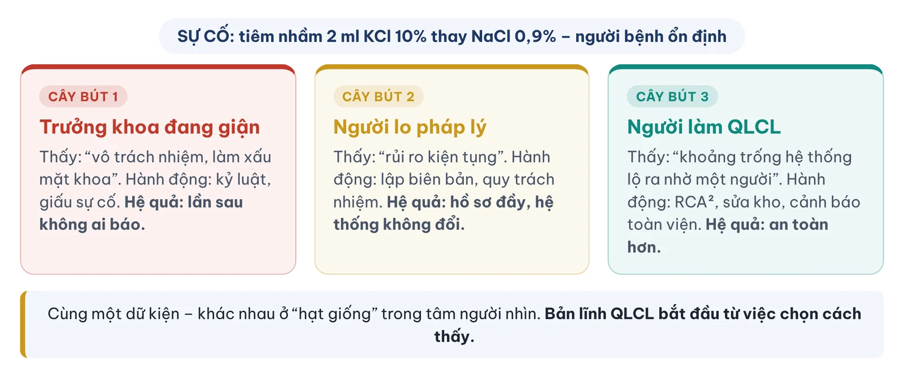
Cùng một ca KCl, ba người nhìn thấy ba “cây bút” khác nhau. Trưởng khoa đang giận thấy “vô trách nhiệm, làm xấu mặt khoa” – hành động là kỷ luật và giấu sự cố; hệ quả là lần sau không ai báo. Người lo pháp lý thấy “rủi ro kiện tụng” – hành động là lập biên bản, quy trách nhiệm; hệ quả là hồ sơ đầy mà hệ thống không đổi. Người làm QLCL thấy “một khoảng trống hệ thống vừa lộ ra nhờ một người” – hành động là phân tích RCA², sửa kho, cảnh báo toàn viện. Cả ba cách nhìn đều “có lý” trong vai trò của họ, nhưng chỉ cách thứ ba làm hệ thống an toàn hơn. Bản lĩnh QLCL bắt đầu từ việc chọn cách thấy.
Biện chứng Kim Cương áp vào khái niệm “sự cố”
Cấu trúc ba bước “A – tức phi A – thị danh A” lặp lại hàng chục lần trong kinh (xem Chương 4). Áp vào khái niệm sự cố:
Bảng 20.1. Biện chứng Kim Cương áp vào khái niệm “sự cố”
| Bước | Mệnh đề | Ý nghĩa trong quản lý chất lượng |
|---|---|---|
| A | Thấy “sự cố” | Gọi đúng tên, báo cáo đúng hạn – không né, không giấu |
| Tức phi A | Tức phi sự cố | Sự cố không có tự tính cố định: là tổ hợp điều kiện, có thể thay đổi |
| Thị danh A | Thị danh sự cố | Vẫn gọi tên để học, đo lường, theo dõi – nhưng không chấp vào tên gọi, không biến tên gọi thành bản án cho một người |
Nguyên lý này áp dụng cho mọi khái niệm quản lý: “Chất lượng tức phi chất lượng, thị danh chất lượng” – con số trên báo cáo không phải là chất lượng; nó chỉ là ngón tay chỉ trăng.
Phân 27 – không rơi vào đoạn diệt
發阿耨多羅三藐三菩提心者，於法不說斷滅相。
Phát A-nậu-đa-la Tam-miệu Tam-bồ-đề tâm giả, ư pháp bất thuyết đoạn diệt tướng.
Người phát tâm vô thượng bồ-đề không chủ trương rằng mọi pháp là đoạn diệt, là hư không trống rỗng.
Đây là đoạn kinh rất quan trọng để tránh hiểu lầm. Nhiều cán bộ quản lý nghe “không đổ lỗi” thì lo rằng sẽ không còn kỷ cương. Chính Kinh Kim Cương đã chặn trước cách hiểu đó: Tính Không không phải là “không có gì”; không đổ lỗi không phải là không trách nhiệm. Đây là cây cầu đi từ văn hóa không đổ lỗi (blame-free) sang văn hóa công bằng (Just Culture): có trách nhiệm, nhưng là trách nhiệm học hỏi và trách nhiệm giải trình công bằng.
Bốn tướng che mắt người phân tích sự cố
Phân 3 tuyên bố: “Nhược Bồ-tát hữu ngã tướng, nhân tướng, chúng sinh tướng, thọ giả tướng, tức phi Bồ-tát.” Lục Tổ Huệ Năng giải thích bốn tướng như các dạng chấp ngã [19]. Trong phòng họp phân tích sự cố, bốn tướng hiện hình thành bốn bộ lọc cảm xúc – nhận thức làm méo kết quả RCA:
Bảng 20.2. Bốn tướng trong phân tích sự cố và thiên kiến nhận thức tương ứng
| Tướng | Biểu hiện trong phòng họp sự cố | Tên gọi của tâm lý học nhận thức |
|---|---|---|
| Ngã tướng | Bảo vệ cái tôi, uy tín khoa mình: “khoa tôi không thể sai” | Thiên kiến tự phục vụ |
| Nhân tướng | Quy lỗi cho người khác: “tại dược, tại nhà thầu, tại điều dưỡng” | Lỗi quy kết cơ bản |
| Chúng sinh tướng | Định kiến nhóm: “điều dưỡng trẻ thì ẩu”, “ca đêm thì lơ là” | Khuôn mẫu, định kiến nhóm |
| Thọ giả tướng | Bám kinh nghiệm cũ: “30 năm nay vẫn làm thế, có sao đâu” | Neo kinh nghiệm, thiên kiến nguyên trạng |
Một bài tập nhanh hiệu quả: mỗi học viên nhớ lại cuộc họp phân tích sự cố gần nhất mình tham dự và đánh dấu tướng nào đã xuất hiện. Hiếm có cuộc họp nào vắng mặt cả bốn tướng. Chương 18 sẽ phân tích sâu sự tương ứng giữa bốn tướng và các thiên kiến nhận thức trong chẩn đoán lâm sàng.
Khoa học an toàn người bệnh – từ đổ lỗi đến học hỏi
Gánh nặng tổn hại do chăm sóc không an toàn
Theo WHO, khoảng 1/10 người bệnh bị tổn hại khi được chăm sóc y tế; hơn 3 triệu ca tử vong mỗi năm có liên quan đến chăm sóc không an toàn; hơn một nửa số tổn hại có thể phòng ngừa được, và khoảng một nửa số tổn hại phòng ngừa được có liên quan đến thuốc [84]. Tổng quan hệ thống của Panagioti và cộng sự cho thấy khoảng 1/20 người bệnh chịu tổn hại có thể phòng ngừa, trong đó thuốc là nguồn lớn nhất [83]. Báo cáo To Err Is Human của Viện Y học Hoa Kỳ ước tính 44.000–98.000 ca tử vong mỗi năm tại bệnh viện Mỹ do sai sót y khoa – điểm khởi đầu của phong trào an toàn người bệnh hiện đại [129].
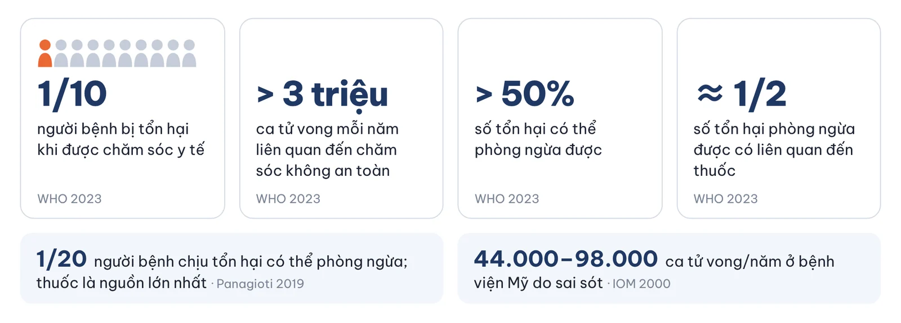
Thông điệp cốt lõi: phần lớn tổn hại không do người xấu gây ra, mà do hệ thống chưa được thiết kế để con người khó mắc lỗi.
TRÍCH DẪNTiếng nói chuyên gia
“Chúng ta không thể thay đổi thân phận con người, nhưng có thể thay đổi những điều kiện mà con người làm việc trong đó.” – James Reason, BMJ 2000 [40].
Liên hệ kinh: ta không đổi được “người nhìn thấy bút”, nhưng đổi được hạt giống – điều kiện – để lần sau họ thấy và làm đúng. Báo cáo Berwick (Anh, 2013) cũng khuyến nghị: hãy từ bỏ đổ lỗi như một công cụ quản lý và tin vào thiện chí của nhân viên [90].
Hai mô hình nhìn sai sót của con người
James Reason phân biệt hai cách tiếp cận sai sót: mô hình con người (person approach) và mô hình hệ thống (system approach) [40,75]. Lucian Leape, trong bài báo kinh điển trên JAMA năm 1994, đã chỉ ra rằng y khoa đã quá dựa vào sự hoàn hảo của cá nhân [130].
Bảng 20.3. Hai mô hình nhìn sai sót của con người (theo Reason)
| Mô hình con người | Mô hình hệ thống |
|---|---|
| Sai sót do cẩu thả, đãng trí, thiếu ý thức | Con người có thể sai; hệ thống phải lường trước |
| Biện pháp: nhắc nhở, kỷ luật, tập huấn lại, “viết kiểm điểm” | Tìm điều kiện tiềm ẩn: thiết kế, quy trình, nhân lực, văn hóa |
| Tập trung vào người cuối cùng chạm vào người bệnh | Xây nhiều lớp phòng vệ, giảm phụ thuộc vào trí nhớ |
| Hệ quả: che giấu, không học được gì | Hệ quả: báo cáo cởi mở, học hỏi toàn tổ chức |
Mô hình pho mát Thụy Sĩ: sự cố là “duyên hợp”
Trong mô hình pho mát Thụy Sĩ, mỗi lát pho mát là một lớp phòng vệ – lãnh đạo, cung ứng, quy trình, người làm trực tiếp. Mỗi lớp đều có lỗ hổng; sự cố xảy ra khi các lỗ hổng tình cờ xếp thẳng hàng [75,120]. Reason phân biệt lỗi hoạt động ở “đầu nhọn” (rút nhầm ống) với điều kiện tiềm ẩn nằm im nhiều năm ở “đầu tù” (đổi thầu không rà soát, kho xếp sai).
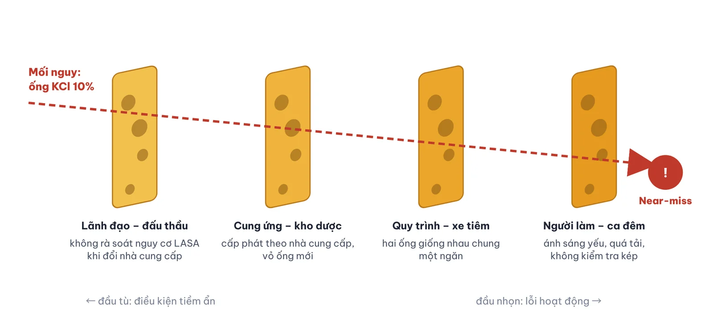
Áp vào ca KCl: lớp 1 – chính sách đấu thầu không rà soát nguy cơ LASA; lớp 2 – kho dược cấp phát theo nhà cung cấp; lớp 3 – xe tiêm để chung ngăn; lớp 4 – điều dưỡng ca đêm, ánh sáng yếu, không kiểm tra kép. Muốn chặn sự cố phải bịt lỗ hổng ở lớp sâu, không chỉ ở lớp cuối cùng. Đây chính là tinh thần “duyên khởi” sẽ được triển khai ở cấp độ 3 và Chương 17: không có một nguyên nhân duy nhất, sự cố là kết quả của nhiều duyên hội tụ.
Những “tướng” mà khoa học đã đặt tên
Tâm lý học nhận thức đã đặt tên cho nhiều “tướng” che mắt người phân tích:
- Thiên kiến nhìn lại (hindsight bias): biết kết cục rồi thì mọi dấu hiệu đều “hiển nhiên” – trước đó thì không. Fischhoff đã chứng minh thực nghiệm hiện tượng này từ năm 1975 [41].
- Thiên kiến kết cục (outcome bias): cùng một hành vi, bị phán xét nặng hơn chỉ vì kết cục xấu hơn.
- Lỗi quy kết cơ bản: giải thích hành vi người khác bằng tính cách, còn hành vi của mình bằng hoàn cảnh.
- Hệ thống tư duy nhanh: não dán nhãn trong tích tắc; cần chủ động dừng lại để “tư duy chậm” [119].
Dekker cảnh báo rằng người điều tra luôn đứng ở vị trí “biết trước kết cục”, nên rất dễ cho rằng người trong cuộc “lẽ ra phải thấy” [81]. Thiền “cây bút” ở đầu chương chính là luyện khoảnh khắc dừng lại trước khi dán nhãn. Khi dùng chương này để giảng dạy, có thể quay lại bảng từ khóa đã ghi ở đầu bài học: khoanh tròn những từ là nhãn (cẩu thả, lơ là) và gạch chân những từ là điều kiện (ca đêm, vỏ ống giống nhau, chung ngăn) – người học thường ngạc nhiên vì cột “nhãn” dài hơn hẳn.
Văn hóa công bằng: ba hành vi – ba cách ứng xử
Mô hình Just Culture của David Marx phân biệt ba loại hành vi và ba cách ứng xử tương ứng [71,81]:
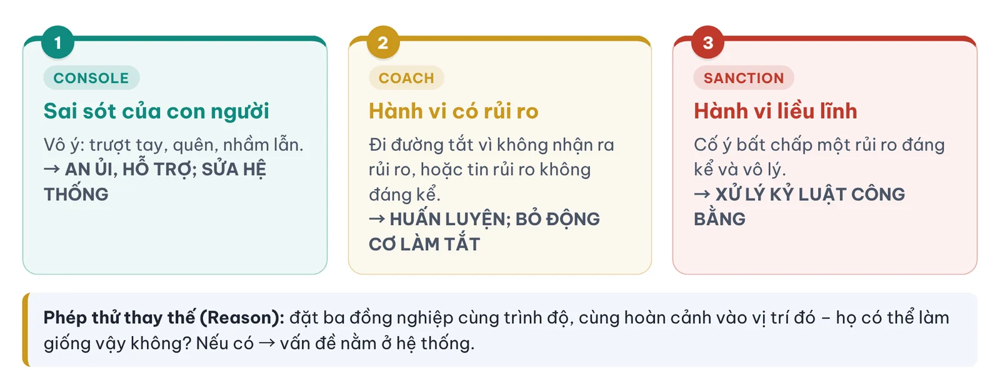
1. Sai sót của con người (human error) – vô ý: trượt, quên, nhầm → an ủi, hỗ trợ; sửa hệ thống.
2. Hành vi có rủi ro (at-risk behaviour) – đi đường tắt vì không nhận ra rủi ro, hoặc tin rằng rủi ro không đáng kể → huấn luyện; loại bỏ động cơ làm tắt.
3. Hành vi liều lĩnh (reckless behaviour) – cố ý bất chấp một rủi ro đáng kể và vô lý → xử lý kỷ luật công bằng.
Công cụ hỗ trợ quyết định là phép thử thay thế (substitution test) của Reason: đặt ba đồng nghiệp cùng trình độ, cùng hoàn cảnh vào vị trí đó – họ có thể làm giống vậy không? Nếu có, vấn đề nằm ở hệ thống [75]. Áp vào ca KCl: đây là sai sót vô ý trong một hệ thống có điều kiện tiềm ẩn rõ ràng → an ủi, hỗ trợ điều dưỡng và sửa hệ thống. Nếu điều dưỡng biết quy định kiểm tra kép thuốc nguy cơ cao nhưng bỏ qua vì “ai cũng bỏ” → đó là hành vi rủi ro → cần huấn luyện, và quan trọng hơn là tìm hiểu vì sao ai cũng bỏ.
Từ “không đổ lỗi” đến “công bằng”: hai bậc trưởng thành
Bảng 20.4. Hai bậc trưởng thành của văn hóa an toàn
| Không đổ lỗi (bậc vào cửa) | Văn hóa công bằng (bậc trưởng thành) |
|---|---|
| Mở cửa cho báo cáo: “báo cáo không bị phạt” | Phân biệt rõ ba hành vi, ứng xử nhất quán |
| Cần thiết để phá vỡ sự im lặng | Người lao động có trách nhiệm học hỏi và báo cáo |
| Nếu dừng ở đây: dễ bị hiểu là “vô trách nhiệm” | Tổ chức có trách nhiệm thiết kế hệ thống |
| — | Đúng tinh thần kinh: “bất thuyết đoạn diệt tướng” |
Tại Việt Nam, Thông tư 43/2018/TT-BYT đã quy định báo cáo sự cố tự nguyện và bắt buộc, khuyến khích báo cáo và bảo mật thông tin người báo cáo – đó là nền tảng “không đổ lỗi” [88]. Bước tiếp theo của các bệnh viện, nhất là các bệnh viện tuyến cuối, là thực thi văn hóa công bằng một cách nhất quán trong mọi hội đồng xem xét sự cố.
Nạn nhân thứ hai – người thầy thuốc sau sự cố
Albert Wu đặt khái niệm “nạn nhân thứ hai” (second victim) trên BMJ năm 2000: người thầy thuốc liên quan đến sự cố cũng là người chịu tổn thương [54]. Tổng quan hệ thống của Seys và cộng sự ghi nhận 10,4–43,3% nhân viên y tế trải qua sang chấn này [89]. Mô hình hỗ trợ ba tầng (tại khoa – đồng nghiệp được đào tạo – chuyên gia tâm lý) của chương trình forYOU tại Đại học Missouri là mô hình tham chiếu phổ biến [82]. Amy Edmondson chứng minh rằng an toàn tâm lý là điều kiện để nhóm làm việc học hỏi được từ sai sót [37].
Năm phút đầu tiên của người lãnh đạo sau sự cố quyết định người trong cuộc có còn dám báo cáo lần sau hay không. Vô úy thí – cho đi sự an toàn tâm lý – là món quà đầu tiên người quản lý trao cho nhân viên sau sự cố; khái niệm này được phát triển đầy đủ ở cấp độ 4.
Ma trận SAC – phân loại sự cố không cảm tính
Ma trận đánh giá mức độ an toàn (Safety Assessment Code – SAC) do Trung tâm An toàn người bệnh Quốc gia thuộc Bộ Cựu chiến binh Hoa Kỳ phát triển, được Bagian mô tả năm 2002 [131]. Hai trục của ma trận là mức độ hậu quả (thực tế hoặc tiềm tàng – “khả dĩ xấu nhất hợp lý”) và khả năng lặp lại.
Bảng 20.5. Ma trận SAC (theo Bagian 2002; RCA² 2015)
| Khả năng lặp lại \ Mức độ | Thảm họa | Nghiêm trọng | Trung bình | Nhẹ |
|---|---|---|---|---|
| Thường xuyên | 3 | 3 | 2 | 1 |
| Thỉnh thoảng | 3 | 2 | 1 | 1 |
| Không thường xuyên | 3 | 2 | 1 | 1 |
| Hiếm gặp | 3 | 2 | 1 | 1 |
SAC 3 → bắt buộc phân tích RCA²; SAC 2 → phân tích tại khoa hoặc hội đồng; SAC 1 → theo dõi xu hướng. Khi đối chiếu với Thông tư 43/2018, có thể quy chiếu các mức tổn thương tại Phụ lục I của Thông tư: NC0 – chưa xảy ra (mức A), NC1 – tổn thương nhẹ (mức B, C, D), NC2 – tổn thương trung bình (mức E, F), NC3 – tổn thương nặng (mức G, H, I) [88]. Điểm mấu chốt: với sự cố suýt xảy ra (near-miss), chấm theo hậu quả tiềm tàng hợp lý xấu nhất. Ca KCl nếu bơm hết có thể gây ngừng tim → mức “thảm họa” tiềm tàng → SAC 3, dù người bệnh không bị tổn hại. Chấm theo “may mắn” là một dạng chấp tướng.
Quy trình RCA² – sáu bước
RCA² (Root Cause Analysis and Action) của Quỹ An toàn người bệnh Quốc gia Hoa Kỳ (2015) nhấn mạnh chữ Action: phân tích tốt mà hành động yếu thì vô ích [43]. Bộ tiêu chuẩn JCI ấn bản thứ 8 yêu cầu bệnh viện có quy trình phân tích sự cố nghiêm trọng (sentinel event) và hành động khắc phục [49].
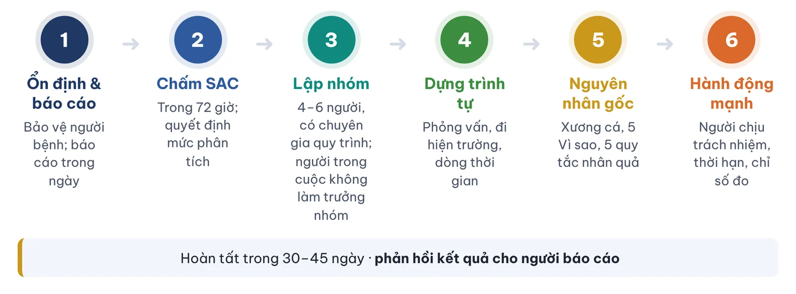
RCA² khuyến nghị hoàn tất trong 30–45 ngày và phản hồi kết quả cho người báo cáo – đó là “hạt giống” để họ tiếp tục báo cáo. Nhóm phân tích gồm 4–6 người, có chuyên gia về quy trình, và người trong cuộc không làm trưởng nhóm.
Năm quy tắc nhân quả – viết nguyên nhân không đổ lỗi
Năm quy tắc nhân quả do Trung tâm An toàn người bệnh Quốc gia (NCPS) thuộc Bộ Cựu chiến binh Hoa Kỳ (VA) phát triển, được RCA² kế thừa, là “giới luật” viết của người phân tích [43,131]:
1. Nêu rõ quan hệ nguyên nhân → kết quả (“vì…, nên…”).
2. Không dùng từ mơ hồ, phán xét: “cẩu thả”, “thiếu ý thức”, “kém”.
3. Mỗi sai sót của con người phải có nguyên nhân đi trước.
4. Mỗi vi phạm quy trình phải có nguyên nhân đi trước.
5. “Không làm” chỉ là nguyên nhân khi có nghĩa vụ phải làm từ trước.
Nếu báo cáo RCA có chữ “cẩu thả” là đã vi phạm quy tắc 2. Ví dụ viết lại: thay vì “Điều dưỡng cẩu thả lấy nhầm thuốc”, hãy viết: “Do hai ống KCl 10% và NaCl 0,9% có hình thức gần giống và được xếp chung một ngăn, trong điều kiện ánh sáng ca đêm yếu, nên khả năng lấy nhầm tăng lên, dẫn đến việc tiêm nhầm.”
Thứ bậc sức mạnh của hành động khắc phục
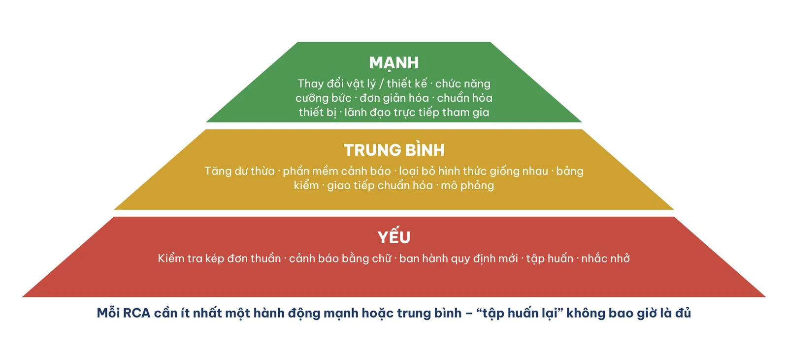
Thực tế ở nhiều bệnh viện, hơn một nửa hành động khắc phục rơi vào nhóm “yếu” (tập huấn, nhắc nhở, ban hành quy định). Mỗi RCA cần ít nhất một hành động mạnh hoặc trung bình – “tập huấn lại” không bao giờ là đủ [43]. Hành động mạnh thường đòi hỏi lãnh đạo bệnh viện vào cuộc vì liên quan đến mua sắm, thiết kế, công nghệ thông tin.
Thực hành tại bệnh viện tuyến cuối
Xương cá: vì sao ống KCl 10% đến được tay điều dưỡng?
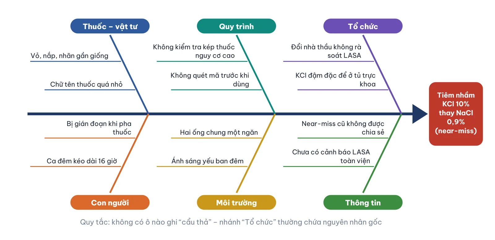
Quy tắc khi vẽ xương cá: không có ô nào được ghi “cẩu thả”. Nhánh “Tổ chức” là nhánh hay bị bỏ qua nhất nhưng thường chứa nguyên nhân gốc. KCl đậm đặc nằm trong danh mục thuốc nguy cơ cao, và nhiều tổ chức khuyến cáo không để ở tủ trực khoa lâm sàng nếu không thật cần thiết [127].
Năm lần “Vì sao?” – đi từ tướng đến gốc
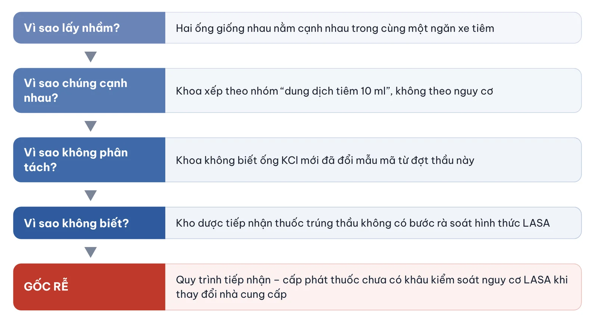
Công cụ 5 Whys đơn giản nhưng rất dễ dừng sớm ở “người”. Mỗi câu trả lời phải là một sự kiện kiểm chứng được (đã đi kho, đã xem biên bản tiếp nhận). Nguyên nhân gốc nằm ở tầng tổ chức – đúng như mô hình Reason: quy trình tiếp nhận – cấp phát thuốc chưa có khâu kiểm soát nguy cơ LASA khi thay đổi nhà cung cấp. Nếu chỉ kỷ luật điều dưỡng, ba mươi xe tiêm khác vẫn có cặp ống giống nhau.
Kế hoạch hành động – ưu tiên hành động mạnh
Bảng 20.6. Kế hoạch hành động sau RCA² ca KCl (mốc thời gian là ví dụ minh họa)
| Mức | Hành động | Đầu mối · Hạn | Chỉ số đo |
|---|---|---|---|
| Mạnh | Rút KCl đậm đặc khỏi tủ trực khoa thường; dùng dung dịch pha sẵn | Khoa Dược · 30 ngày | % khoa không còn KCl đậm đặc |
| Mạnh | Thêm bước rà soát LASA vào quy trình tiếp nhận thuốc trúng thầu | Khoa Dược · 60 ngày | Số đợt thầu được rà soát |
| Trung bình | Chữ Tall Man, nhãn cảnh báo đỏ, ngăn riêng có vạch màu | Điều dưỡng trưởng · 14 ngày | Tỷ lệ tuân thủ qua kiểm tra |
| Yếu | Bản tin an toàn “Bài học 1 trang” gửi toàn viện | Phòng QLCL · 7 ngày | Số khoa xác nhận đã đọc |
Mỗi hành động có đầu mối, hạn và chỉ số – đặc trưng của RCA². Chỉ số quá trình đi kèm chỉ số kết quả: số báo cáo near-miss LASA được kỳ vọng tăng trong ba tháng đầu do văn hóa báo cáo tốt lên, sau đó mới giảm.
Tình huống thứ hai tại đơn vị Truyền nhiễm: hai chế phẩm Amphotericin B
TÌNH HUỐNGSáng kiến “AMPHOTERICIN B AN TOÀN” (đơn vị Truyền nhiễm, 2026)
Tại đơn vị Truyền nhiễm, Amphotericin B được dùng thường xuyên trong điều trị viêm màng não do Cryptococcus, bệnh do Talaromyces marneffei và các nhiễm nấm xâm lấn khác. Hai chế phẩm có tên gọi gần giống nhau nhưng liều khác nhau 3–5 lần: Amphotericin B deoxycholate (liều thường dùng 0,7–1 mg/kg/ngày; quá liều hoặc truyền nhanh có thể gây độc tính thận cấp, hạ kali và magie máu nặng, loạn nhịp thất, ngừng tim) và Amphotericin B liposome (liều thường dùng 3–5 mg/kg/ngày). Nhầm chế phẩm đồng nghĩa với quá liều nguy hiểm tính mạng. Đây là cặp LASA có trong danh mục tên thuốc dễ nhầm lẫn của ISMP [64].
Sáng kiến “AMPHOTERICIN B AN TOÀN” đã được đơn vị đăng ký hội thi poster sáng kiến cải tiến ATNB cấp bệnh viện năm 2026, đang ở giai đoạn can thiệp đề xuất: kiểm tra đúng chế phẩm và chủ động theo dõi chức năng thận, điện giải.
Câu hỏi thảo luận: Áp dụng bốn tướng và thứ bậc hành động, hãy đề xuất một hành động “mạnh” cho nguy cơ này. Gợi ý: tách mã thuốc và giao diện kê đơn trên hệ thống thông tin bệnh viện (HIS), giới hạn liều tối đa tự động theo từng chế phẩm, nhãn khác màu, lưu kho ở hai vị trí tách biệt.
Bài tập nhóm: chấm SAC cho bốn sự cố
Nhóm 5–7 người, mỗi nhóm chấm mức độ × khả năng lặp lại cho bốn sự cố, chọn sự cố cần RCA², và viết một câu “nguyên nhân” theo năm quy tắc nhân quả:
- A. Người bệnh 82 tuổi ngã khi tự đi vệ sinh lúc 2 giờ sáng, gãy cổ xương đùi.
- B. Lấy máu nhầm người bệnh cùng tên, phát hiện trước khi truyền máu.
- C. Người bệnh sốc nhiễm khuẩn được dùng kháng sinh muộn 4 giờ do chờ cấp phát.
- D. Bỏ sót tiền sử dị ứng penicilin; người bệnh nổi mẩn nhẹ, tự hết.
ĐIỂM THEN CHỐTGợi ý đáp án
A – nghiêm trọng (gãy xương), thỉnh thoảng → SAC 2–3 tùy dữ liệu tần suất của khoa. B – near-miss nhưng hậu quả tiềm tàng thảm họa (truyền nhầm nhóm máu) → SAC 3. C – hậu quả tiềm tàng tử vong, có tính hệ thống → SAC 3. D – nhẹ, không thường xuyên → SAC 1, nhưng cần xem lại quy trình khai thác tiền sử dị ứng. Bài học: chấm theo hậu quả xấu nhất hợp lý, không theo sự may mắn.
Báo cáo nhiều không có nghĩa là kém an toàn
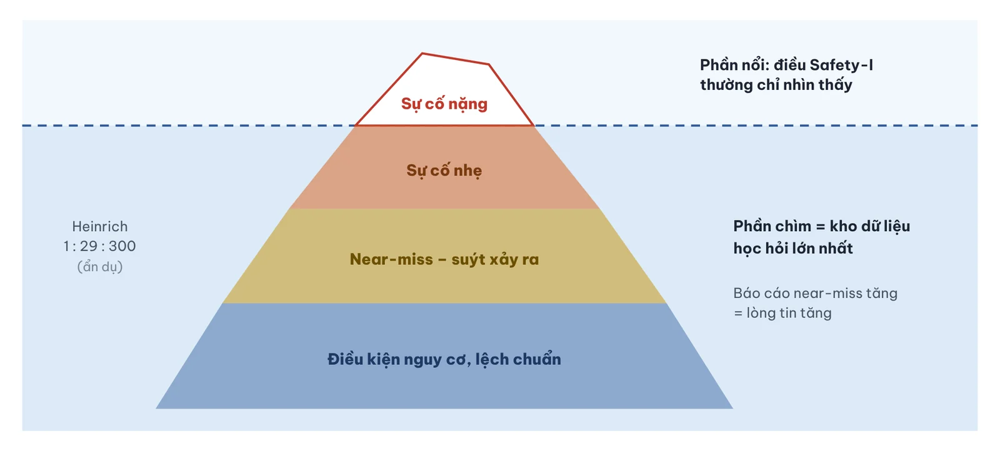
Tỷ lệ 1:29:300 của Heinrich (1931) xuất phát từ an toàn công nghiệp, ngày nay được dùng như một ẩn dụ hơn là tỷ lệ cố định [87]. Điểm cốt lõi là dữ liệu học hỏi nằm ở phần chìm. Kế hoạch hành động ATNB toàn cầu của WHO giai đoạn 2021–2030 đặt mục tiêu xây dựng hệ thống báo cáo và học hỏi từ sự cố ở mọi cơ sở y tế [85]. Báo cáo near-miss tăng là dấu hiệu lòng tin tăng. Ở một khoa “không có sự cố”, người quản lý cần hỏi: đó là im lặng hay an toàn?
Năm phút đầu tiên: ngôn ngữ của người lãnh đạo
Bảng 20.7. Ngôn ngữ của người lãnh đạo trong năm phút đầu tiên sau sự cố
| Câu nói gieo hạt sợ hãi | Câu nói gieo hạt học hỏi |
|---|---|
| “Ai làm? Ai trực?” | “Người bệnh hiện thế nào?” |
| “Sao lại có thể sai cái đơn giản thế?” | “Còn em/anh/chị có ổn không?” |
| “Viết kiểm điểm nộp tôi trước 10 giờ.” | “Điều gì khiến việc này dễ xảy ra?” |
| “Đừng để lọt ra ngoài.” | “Cảm ơn đã báo – mình cùng sửa hệ thống.” |
Một bài thực hành đóng vai hai phút: từng cặp, một người là điều dưỡng vừa báo sự cố, người kia là trưởng khoa chỉ được dùng bốn câu ở cột phải; sau đó đổi vai. Hầu hết học viên kể lại rằng chỉ cần nghe câu “Còn em có ổn không?” là cảm giác co rúm biến mất. Đây là hạt giống quan trọng nhất của người lãnh đạo: mỗi câu nói sau sự cố quyết định lần sau nhân viên có báo cáo hay không [37,82,90].
Gieo hạt bản lĩnh
Bốn bước gieo hạt
Bốn bước gieo hạt – thường được gọi vui là bốn bước “cà phê” – của Geshe Michael Roach gồm: (1) nói rõ điều mình mong muốn trong một câu; (2) chọn một người cũng đang mong muốn điều tương tự; (3) giúp họ đạt điều ấy – bằng thời gian, tri thức, nguồn lực; (4) “thiền cà phê” – hoan hỷ với việc thiện đã làm [124,125]. Về mặt khoa học, hành vi giúp đỡ củng cố bản sắc nghề nghiệp, và thực hành ghi nhận điều tốt cải thiện cảm xúc tích cực [132]. Diễn đạt bằng ngôn ngữ quản trị: muốn có văn hóa báo cáo, hãy là người đầu tiên giúp người khác xây văn hóa báo cáo.
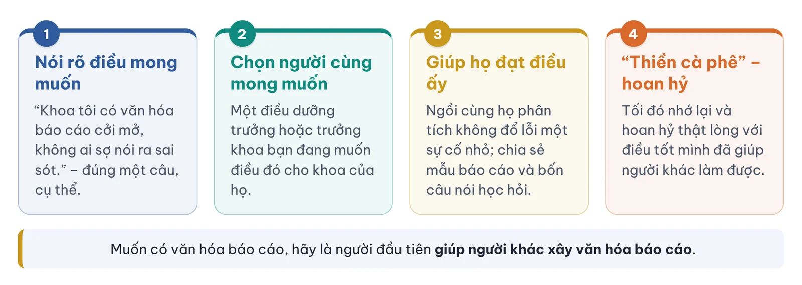
- Bước 1 – Nói rõ điều mong muốn: “Khoa tôi có văn hóa báo cáo cởi mở, không ai sợ nói ra sai sót.” Viết đúng một câu, cụ thể.
- Bước 2 – Chọn người cùng mong muốn: một điều dưỡng trưởng hoặc trưởng khoa bạn cũng đang muốn điều đó cho khoa của họ.
- Bước 3 – Giúp họ đạt điều ấy: ngồi cùng họ phân tích không đổ lỗi một sự cố nhỏ; chia sẻ mẫu báo cáo và bốn câu nói học hỏi.
- Bước 4 – Thiền cà phê, hoan hỷ: tối đó, trước khi ngủ, nhớ lại và hoan hỷ thật lòng với điều tốt mình đã giúp người khác làm được.
Thực hành 30 ngày và sổ 6 thời
“Sổ 6 thời” là công cụ tự theo dõi bắt nguồn từ thói quen tu tập “lục thời” (ngày ba thời, đêm ba thời), được Geshe Michael Roach giới thiệu lại cho người làm quản trị: chia ngày thành nhiều thời điểm để tự kiểm tra cam kết [124,125]. Mỗi ngày dừng sáu lần (đầu ca, giữa ca, cuối ca…), tự hỏi và đánh dấu vào sổ:
Bảng 20.8. Bốn câu hỏi của sổ 6 thời – cấp độ 1
| Câu hỏi | Nội dung tự kiểm |
|---|---|
| Thấy tướng | Hôm nay tôi đã dán nhãn ai trước khi hiểu bối cảnh? |
| Dừng lại | Tôi có hỏi “điều gì khiến việc này dễ xảy ra?” ít nhất một lần? |
| Vô úy thí | Tôi có cảm ơn một người đã báo sai sót hoặc near-miss? |
| Hoan hỷ | Một điều đi đúng trong khoa nhờ hệ thống tốt? |
Nghiên cứu của Lally và cộng sự cho thấy thời gian trung vị để một hành vi trở thành thói quen là 66 ngày (dao động 18–254 ngày) [126]: 30 ngày là khởi đầu, không phải kết thúc. Ngày thứ 30, học viên mang sổ đến cấp độ 2 để chia sẻ một thay đổi nhỏ thấy được ở chính mình.
SUY NGẪMCâu hỏi lượng giá
1. Theo Just Culture, điều dưỡng vô ý lấy nhầm ống do hai ống giống hệt nhau trong cùng ngăn nên được ứng xử thế nào? (Đáp án: an ủi, hỗ trợ và sửa hệ thống – Marx 2001.)
2. Hành động khắc phục nào thuộc nhóm MẠNH theo thứ bậc RCA²: tập huấn lại toàn khoa; ban hành quy định kiểm tra kép; rút KCl đậm đặc khỏi tủ trực và dùng dung dịch pha sẵn; dán thông báo nhắc nhở? (Đáp án: rút KCl đậm đặc – thay đổi vật lý, loại bỏ nguy cơ.)
3. Câu “Phàm sở hữu tướng giai thị hư vọng” gợi ý điều gì cho người phân tích sự cố? (Đáp án: nhãn “người có lỗi” là tướng; cần thấy các điều kiện đằng sau – nhưng theo Phân 27, không rơi vào đoạn diệt: vẫn báo cáo, đo lường.)
ĐIỂM THEN CHỐTThông điệp mang về
- Sự cố tự nó trung tính như cây bút – cách thấy quyết định ta trừng phạt hay học hỏi.
- Nhãn “cẩu thả” là tướng; đằng sau là các lớp phòng vệ có lỗ hổng (Reason).
- Không đổ lỗi ≠ không trách nhiệm: Just Culture phân biệt ba hành vi và ứng xử nhất quán.
- SAC chấm theo hậu quả xấu nhất hợp lý; RCA² đòi hỏi ít nhất một hành động mạnh.
- Bản lĩnh bắt đầu từ năm phút đầu tiên sau sự cố – và được gieo mỗi ngày bằng sổ 6 thời.
KINH VĂNKệ kết · Phân 32
一切有為法，如夢幻泡影，如露亦如電，應作如是觀。
Nhất thiết hữu vi pháp, như mộng huyễn bào ảnh, như lộ diệc như điện, ưng tác như thị quán.
Mọi pháp hữu vi như mộng, huyễn, bọt, bóng, như sương, như điện chớp – hãy quán chiếu như thế. Sự cố hôm nay cũng do duyên mà có, nên cũng do duyên mà sửa được.
Chương 21
CẤP ĐỘ 2 – HẠT GIỐNG NGHIỆP: QUẢN TRỊ RỦI RO CHỦ ĐỘNG
Nếu cấp độ 1 dạy cách THẤY sự cố, cấp độ 2 dạy cách GIEO: mỗi hành vi nhỏ hôm nay là một hạt giống của chất lượng – hoặc của sự cố – ngày mai. Trọng tâm chuyển từ phân tích nguyên nhân gốc sau khi đã “gặt quả” (RCA) sang các công cụ “chọn hạt trước khi gieo”: phân tích sai hỏng và tác động trong y tế (HFMEA), tinh gọn (Lean) và 5S.
ĐIỂM THEN CHỐTMục tiêu của cấp độ 2
1. Trình bày bốn quy luật của hạt giống và liên hệ với hành vi lâm sàng hằng ngày.
2. Chuyển từ phản ứng sau sự cố sang quản trị rủi ro chủ động; nhận diện tám lãng phí theo Lean.
3. Thực hiện HFMEA năm bước cho quy trình lấy máu xét nghiệm, hướng tới chuẩn ISO 15189.
4. Áp dụng 5S cho một khu vực trọng yếu và lập kế hoạch “một hạt mỗi ngày” trong 30 ngày.
Khởi động: hạt giống trong lòng bàn tay
Mở lòng bàn tay, tưởng tượng một hạt đậu nhỏ, thở chậm ba hơi. Nhớ lại một thao tác sáng nay: rửa tay, chào người bệnh, ký y lệnh… Hạt ấy sẽ thành gì nếu được lặp lại hàng nghìn lần mỗi ngày trong một bệnh viện tuyến cuối? Chọn một hạt anh/chị muốn gieo đúng hơn từ chiều nay. Không có hạt nào quá nhỏ trong bệnh viện: một lần bỏ rửa tay, một ống máu bị lắc mạnh – đều là hạt giống [124,133].
TÌNH HUỐNGTình huống mở đầu: “Kali 6,4” (mô phỏng từ thực tế)
Sáu giờ sáng, kết quả kali máu của một người bệnh nam 58 tuổi là 6,4 mmol/L. Người bệnh tỉnh, điện tim bình thường. Bác sĩ trực chỉ định xử trí tăng kali và lấy mẫu lại. Mẫu thứ hai: K⁺ 4,1 mmol/L. Rà soát cho thấy mẫu đầu bị tan máu – dùng kim nhỏ, ống máu bị lắc mạnh, để hai giờ ở phòng điều dưỡng trước khi vận chuyển. Người bệnh phải chịu một can thiệp không cần thiết; bệnh viện tốn thêm xét nghiệm.
Câu hỏi thảo luận: Có bao nhiêu “hạt giống” đã được gieo trước khi kết quả sai xuất hiện? Ai có thể dự báo rủi ro này từ trước? Vì sao RCA sau sự cố luôn đến quá muộn?
Tăng kali giả do tan máu là một trong những sai số tiền phân tích phổ biến nhất trong phòng xét nghiệm [134,135]. Các “hạt giống” học viên nêu ra được ghi lên bảng để dùng lại trong bài HFMEA ở phần thực hành.
Kinh văn – gieo đúng
Phân 1 – Bát-nhã nằm trong việc thường ngày
爾時，世尊食時，著衣持鉢，入舍衛大城乞食。於其城中，次第乞已，還至本處。飯食訖，收衣鉢，洗足已，敷座而坐。
Nhĩ thời Thế Tôn thực thời, trước y trì bát, nhập Xá-vệ đại thành khất thực. Ư kỳ thành trung, thứ đệ khất dĩ, hoàn chí bản xứ. Phạn thực ngật, thu y bát, tẩy túc dĩ, phu tọa nhi tọa.
Đến giờ ăn, Thế Tôn đắp y, ôm bát vào thành Xá-vệ khất thực, theo thứ lớp từng nhà; xong trở về chỗ cũ, ăn cơm, cất y bát, rửa chân, trải tòa mà ngồi.
Bộ kinh của trí tuệ cao nhất lại mở đầu bằng những việc bình thường nhất, được làm đúng thứ tự và trọn vẹn. Giáo sư Nam Hoài Cẩn nhấn mạnh: Bát-nhã không ở đâu xa – ở ngay việc mặc áo, ăn cơm, rửa chân [4]. “Thứ đệ khất” – khất thực theo thứ lớp, không chọn nhà giàu hay nghèo – chính là tinh thần công việc chuẩn (standard work): làm đúng trình tự, công bằng cho mọi người bệnh. “Tẩy túc” – rửa chân – một chi tiết vệ sinh nhỏ được kinh ghi lại trang trọng; người làm kiểm soát nhiễm khuẩn khó mà không liên tưởng tới vệ sinh tay đúng năm thời điểm [27].
Phân 6 – gieo căn lành từ vô lượng đời
當知是人，不於一佛二佛三四五佛而種善根，已於無量千萬佛所種諸善根。
Đương tri thị nhân, bất ư nhất Phật nhị Phật tam tứ ngũ Phật nhi chủng thiện căn, dĩ ư vô lượng thiên vạn Phật sở chủng chư thiện căn.
Nên biết người ấy không chỉ gieo căn lành ở một, hai, ba, bốn, năm đức Phật, mà đã gieo các căn lành nơi vô lượng nghìn vạn đức Phật.
“Chủng thiện căn” – gieo căn lành – là hình ảnh nông nghiệp. Lục Tổ giải: căn lành là tâm thanh tịnh, cung kính, không khinh mạn chúng sinh [19]. Một khoa an toàn hôm nay là kết quả của rất nhiều hạt lành đã được gieo từ lâu. Văn hóa an toàn không thể “mua” bằng một đợt đánh giá; nó là tích lũy của hàng nghìn hành vi nhỏ. Không có “đột phá” chất lượng nào không có gốc rễ tích lũy.
Bốn quy luật của hạt giống – và ngôn ngữ an toàn người bệnh
Bộ Bồ-đề đạo thứ đệ đại luận (Lam rim chen mo) của Tông-khách-ba trình bày bốn đặc tính của nghiệp: nghiệp chắc chắn, nghiệp tăng trưởng, chưa tạo thì không gặp, đã tạo thì không mất [133]. Geshe Michael Roach dùng bốn quy luật này làm nền cho cách tiếp cận quản trị của ông [124,125]. Ở đây, chúng ta dùng bốn quy luật như một khung đạo đức – hành vi; phần khoa học tương ứng là tâm lý học thói quen và lý thuyết hệ thống.
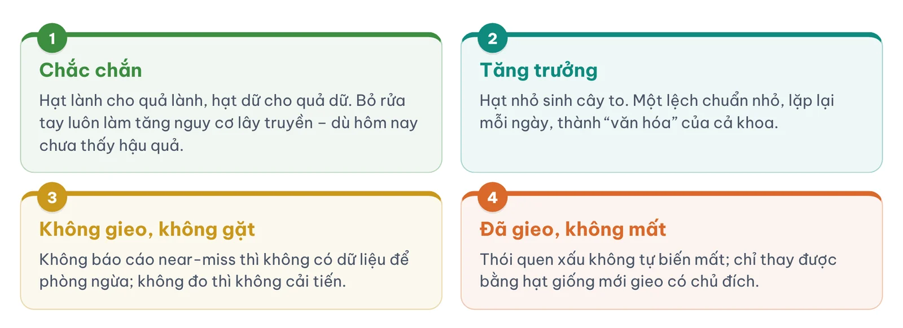
1. Chắc chắn – hạt lành cho quả lành, hạt dữ cho quả dữ. Bỏ rửa tay luôn làm tăng nguy cơ lây truyền, dù hôm nay chưa thấy hậu quả.
2. Tăng trưởng – hạt nhỏ sinh cây to. Một lệch chuẩn nhỏ, lặp lại hằng ngày, thành “văn hóa” của cả khoa.
3. Không gieo, không gặt – không báo cáo near-miss thì không có dữ liệu để phòng ngừa; không đo thì không cải tiến.
4. Đã gieo, không mất – thói quen xấu không tự biến mất; chỉ có thể thay bằng hạt giống mới, được gieo có chủ đích.
Hạt nhỏ sinh cây to – toán học của thói quen
Phép tính “tốt hơn 1% mỗi ngày” của James Clear (1,01³⁶⁵ ≈ 37,8) và chiều ngược lại (0,99³⁶⁵ ≈ 0,03) là một ẩn dụ, không phải định luật [136]; nhưng nghiên cứu của Lally và cộng sự trên 96 người tình nguyện cho thấy một thói quen mới hình thành sau trung vị 66 ngày (18–254 ngày) [126]. Thông điệp: cải tiến bền vững là chuyện tích lũy – đúng tinh thần “thiện căn” của Phân 6.
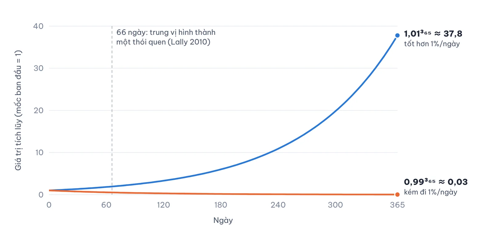
Lệch chuẩn bị bình thường hóa – hạt dữ nảy mầm
Nhà xã hội học Diane Vaughan đặt khái niệm “bình thường hóa lệch chuẩn” (normalization of deviance) khi phân tích thảm họa tàu con thoi Challenger năm 1986 [113]; John Banja đã áp dụng khái niệm này vào y tế [42]. Đây chính là “quy luật tăng trưởng” của hạt dữ.
Bảng 21.1. Hạt dữ lớn lên thế nào – và cách nhổ tận gốc
| Hạt dữ lớn lên thế nào | Nhổ tận gốc |
|---|---|
| Làm tắt một lần “vì bận” – không có hậu quả | Gọi tên lệch chuẩn – không xem là chuyện nhỏ |
| Lần sau làm tắt dễ hơn; người mới học theo | Hỏi vì sao làm tắt: quy trình có bất hợp lý? |
| Cái lệch trở thành “cách khoa mình vẫn làm” | Sửa hệ thống để làm đúng dễ hơn làm tắt |
| Đến khi sự cố xảy ra: “xưa nay vẫn thế mà” | Lãnh đạo đi hiện trường, quan sát thực tế |
Một câu hỏi luôn khiến hội trường im lặng: “Khoa anh/chị có lệch chuẩn nào đã 'bình thường' đến mức không ai còn nhận ra?” Ví dụ quen thuộc ở nhiều bệnh viện Việt Nam: ghi y lệnh miệng rồi “ký bù” cuối ca; dán nhãn ống máu tại quầy thay vì tại giường; đếm nhịp thở “ước lượng” thay vì đếm đủ một phút; để găng tay khi chuyển từ người bệnh này sang người bệnh khác.
Giới – Định – Tuệ trong một quy trình chuẩn
Phân 6 nói người “trì giới tu phúc” sẽ sinh tín tâm với kinh – giới là nền. Ba học Giới – Định – Tuệ ánh xạ vào ba điều kiện của một quy trình an toàn:
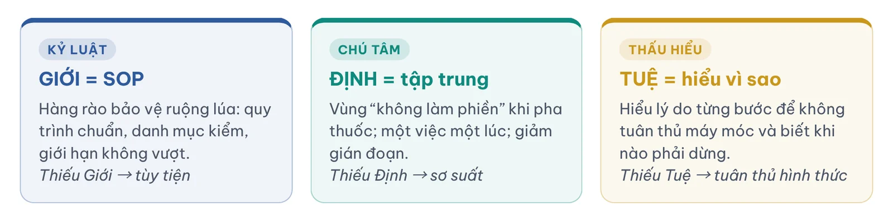
- Giới = SOP: hàng rào bảo vệ ruộng lúa – quy trình chuẩn, danh mục kiểm, giới hạn không vượt.
- Định = tập trung: vùng “không làm phiền” khi pha thuốc; một việc một lúc; giảm gián đoạn. Bằng chứng cho thấy gián đoạn trong khi chuẩn bị thuốc làm tăng sai sót, vì vậy nhiều bệnh viện áp dụng “vùng yên lặng” hoặc áo “xin đừng làm phiền” khi pha thuốc [128].
- Tuệ = hiểu vì sao: hiểu lý do của từng bước để không tuân thủ máy móc và biết khi nào phải dừng.
Thiếu Giới thì tùy tiện. Thiếu Định thì sơ suất. Thiếu Tuệ thì tuân thủ hình thức, gặp tình huống mới là lúng túng [58].
Những hạt giống được gieo trong một ca trực
Các hạt giống dưới đây tương ứng với các Mục tiêu an toàn người bệnh quốc tế (IPSG) của JCI – nhận diện người bệnh, giao tiếp hiệu quả, thuốc nguy cơ cao, phẫu thuật an toàn, nhiễm khuẩn, ngã [49,70]:
- Rửa tay đúng năm thời điểm – hạt giống của phòng ngừa nhiễm khuẩn [27].
- Nhận diện bằng hai thông tin trước mọi thủ thuật, thuốc, xét nghiệm.
- Đọc lại y lệnh miệng và kết quả nguy hiểm – “đọc lại, xác nhận”.
- Bàn giao theo cấu trúc ISBAR – không để rơi thông tin giữa hai ca [122].
- Báo cáo – một near-miss được báo là một sự cố được ngăn trước.
Mỗi hạt rất nhỏ, nhưng mỗi ngày được gieo hàng nghìn lần.
Khoa học và công cụ quản trị rủi ro chủ động
TRÍCH DẪNTiếng nói chuyên gia
“Chất lượng không đến từ kiểm tra, mà đến từ việc cải tiến chính quá trình sản xuất.” – W. Edwards Deming, Out of the Crisis (1986) [104].
Liên hệ: kiểm tra là đếm quả; cải tiến quá trình là chọn và chăm hạt giống. Đây là nguyên tắc thứ ba trong 14 nguyên tắc của Deming: chấm dứt phụ thuộc vào kiểm tra hàng loạt để đạt chất lượng.
Hai tư thế quản trị rủi ro
Bảng 21.2. Hai tư thế quản trị rủi ro
| Phản ứng – sau sự cố | Chủ động – trước sự cố |
|---|---|
| Công cụ chính: RCA | Công cụ chính: HFMEA, Lean, 5S |
| Học từ quả đã chín – đã có người bị tổn hại | Chọn hạt trước khi gieo – tìm điểm yếu của quy trình |
| Phụ thuộc vào báo cáo | Ưu tiên quy trình nguy cơ cao, khối lượng lớn |
| Dễ “chữa cháy” từng vụ | JCI ấn bản thứ 8: chương trình quản lý rủi ro, đánh giá chủ động định kỳ |
Hai tư thế bổ sung cho nhau. Chương trình quản lý rủi ro của một bệnh viện tuyến cuối, khi được hiệu chỉnh theo Bộ tiêu chuẩn JCI ấn bản thứ 8, cần có danh mục rủi ro ưu tiên và đánh giá rủi ro chủ động cho các quy trình nguy cơ cao [49].
Sai sót xét nghiệm nằm chủ yếu ngoài phòng xét nghiệm
Nghiên cứu của Carraro và Plebani tại một phòng xét nghiệm cấp cứu với 51.746 xét nghiệm cho thấy 61,9% sai sót nằm ở giai đoạn tiền phân tích, 15,0% ở giai đoạn phân tích và 23,1% ở giai đoạn hậu phân tích [135]. Lippi và cộng sự xác định tan máu là nguyên nhân hàng đầu khiến mẫu không đạt yêu cầu [134]. ISO 15189:2022 yêu cầu phòng xét nghiệm kiểm soát cả quá trình trước xét nghiệm [117].
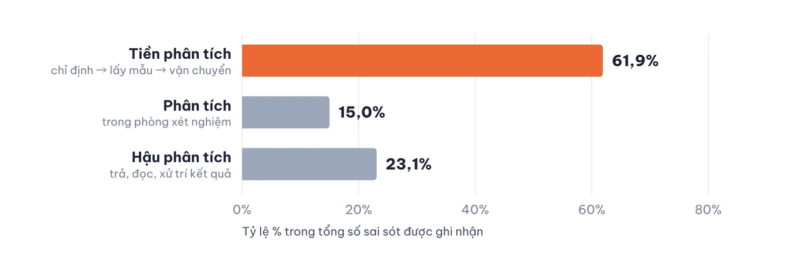
Thông điệp: chất lượng xét nghiệm là “duyên hợp” liên khoa – nơi điều dưỡng, người vận chuyển và khoa lâm sàng cùng tham gia. Đây là chiếc cầu nối sang cấp độ 3.
HFMEA – năm bước phân tích chủ động
HFMEA (Healthcare Failure Mode and Effect Analysis) được Trung tâm ATNB Quốc gia của Bộ Cựu chiến binh Hoa Kỳ phát triển, kết hợp FMEA kỹ thuật với HACCP và RCA [116]. Khác với FMEA cổ điển dùng chỉ số ưu tiên rủi ro (RPN) ba yếu tố, HFMEA dùng ma trận điểm nguy cơ (mức độ × xác suất) và cây quyết định.
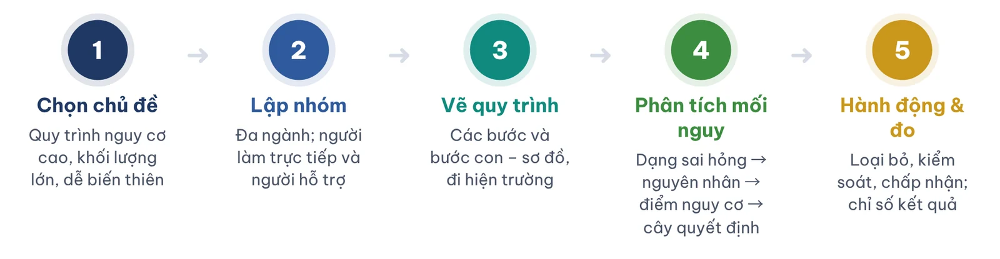
Bảng 21.3. Ma trận điểm nguy cơ (Hazard Score) trong HFMEA
| Xác suất \ Mức độ | Thảm họa (4) | Nặng (3) | Trung bình (2) | Nhẹ (1) |
|---|---|---|---|---|
| Thường xuyên (4) | 16 | 12 | 8 | 4 |
| Thỉnh thoảng (3) | 12 | 9 | 6 | 3 |
| Không thường (2) | 8 | 6 | 4 | 2 |
| Hiếm (1) | 4 | 3 | 2 | 1 |
Điểm nguy cơ ≥ 8 → đưa vào cây quyết định. Dưới 8 vẫn phải xét nếu là điểm yếu đơn lẻ (single point weakness) – hỏng một chỗ là hỏng cả hệ thống. Cây quyết định gồm bốn câu hỏi: điểm ≥ 8 hoặc là điểm yếu đơn lẻ? Đã có biện pháp kiểm soát hiệu quả chưa? Nguy cơ có hiển nhiên, dễ phát hiện trước khi gây hại không? Nếu phải hành động: loại bỏ, kiểm soát hay chấp nhận có lý do – kèm người phụ trách, thời hạn và chỉ số [116]. “Chấp nhận” cũng là một quyết định, nhưng phải được ghi rõ lý do.
Tám lãng phí theo Lean – trong bệnh viện
Tám lãng phí theo Lean (viết tắt DOWNTIME: Defects, Overproduction, Waiting, Non-utilized talent, Transportation, Inventory, Motion, Extra-processing) đều có mặt trong bệnh viện [58,137]. Lãng phí cũng là hạt giống của rủi ro: đi tìm vật tư lúc cấp cứu là mất thời gian vàng; ghi chép một thông tin nhiều lần là cơ hội sai lệch thông tin.
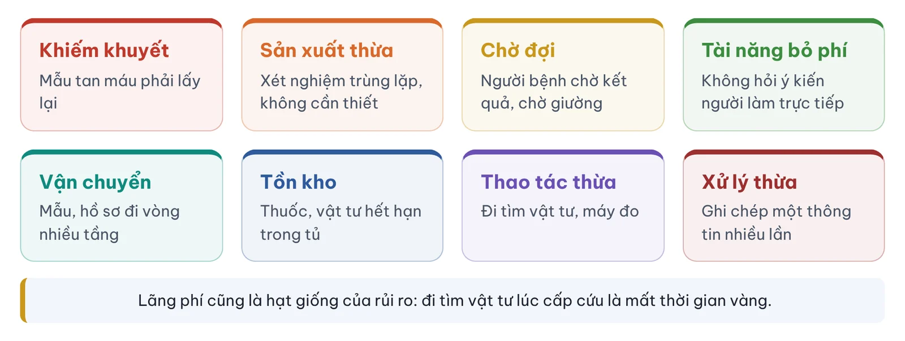
5S – chăm ruộng để hạt lành dễ mọc
5S của Hirano gồm Seiri, Seiton, Seiso, Seiketsu, Shitsuke; bản tiếng Việt thường dùng là Sàng lọc – Sắp xếp – Sạch sẽ – Săn sóc – Sẵn sàng [28]. 5S không phải phong trào dọn dẹp: đó là thiết kế môi trường để làm đúng trở thành cách dễ nhất. Liên hệ cấp độ 1: tách ngăn ống KCl và NaCl chính là 5S phục vụ an toàn người bệnh.
Thực hành tại bệnh viện tuyến cuối
HFMEA quy trình lấy máu xét nghiệm
Bước 3 – vẽ quy trình. Vẽ quy trình phải đi hiện trường, quan sát công việc thực tế (work-as-done), không chỉ đọc quy trình trên giấy. Quy trình lấy máu gồm bảy bước: chỉ định → nhận diện → chuẩn bị → lấy mẫu → dán nhãn → vận chuyển → tiếp nhận. Hai bước “lấy mẫu” và “vận chuyển” là nơi có dạng sai hỏng gây tan máu nhiều nhất [134,138].
Bước 4 – phân tích mối nguy (trích). Bảng dưới đây là ví dụ cho thực hành; mỗi khoa phải chấm theo dữ liệu thực tế của mình.
Bảng 21.4. Bước 4 HFMEA: phân tích mối nguy quy trình lấy máu (trích, điểm số minh họa)
| Dạng sai hỏng | Nguyên nhân | M × X | Điểm | Hành động |
|---|---|---|---|---|
| Tan máu do kỹ thuật | Kim quá nhỏ, hút mạnh qua catheter, lắc ống | 3 × 4 | 12 | Chuẩn hóa kim 21–22G; đảo nhẹ, không lắc; hạn chế lấy qua catheter |
| Mẫu chờ quá lâu | Gom mẫu theo đợt; thiếu người vận chuyển | 3 × 3 | 9 | Lịch vận chuyển cố định; ly tâm tách trong vòng 2 giờ |
| Sai thứ tự ống (nhiễm chéo K₂EDTA) | Chưa có hướng dẫn trực quan tại xe | 2 × 3 | 6 | Thẻ màu thứ tự ống tại xe lấy mẫu |
| Dán nhãn nhầm | Dán nhãn sau, tại quầy, nhiều mẫu cùng lúc | 4 × 2 | 8 | Dán tại giường; quét mã vạch hai chiều |
Kỹ thuật lấy mẫu tham chiếu CLSI GP41 (thứ tự ống, thời gian garô, đảo ống); xử lý mẫu tham chiếu CLSI GP44 (tách huyết thanh/huyết tương trong vòng hai giờ) [138,139]. “Dán nhãn nhầm” tuy chỉ 8 điểm nhưng là điểm yếu đơn lẻ có hậu quả thảm họa tiềm tàng (truyền máu nhầm) – luôn phải hành động. Dòng “sai thứ tự ống” cũng liên quan trực tiếp đến tình huống “Kali 6,4” ở đầu chương: khi máu được bơm vào ống nắp tím chứa K₂EDTA trước ống sinh hóa, muối kali-EDTA có thể nhiễm sang ống sinh hóa, gây tăng kali và hạ calci máu giả tạo – vì vậy chiếc thẻ màu thứ tự ống tại xe lấy mẫu theo CLSI GP41 trực tiếp ngăn một chỉ định xử trí tăng kali không cần thiết cho người bệnh [138].
Bước 5 – SOP chuẩn hóa và chỉ số đo lường. SOP lấy mẫu: thứ tự ống chuẩn, garô không quá một phút, kim phù hợp, đảo nhẹ theo loại ống. SOP vận chuyển: lịch cố định, hộp đựng chống rung, tránh nóng, bàn giao có ký nhận giờ. Chỉ số theo dõi: tỷ lệ mẫu tan máu theo khoa, tỷ lệ mẫu bị từ chối, thời gian từ lấy mẫu đến nhận mẫu (TAT). Dữ liệu tan máu theo từng khoa được gửi hằng tháng để mỗi khoa thấy “ruộng” của mình – không xếp hạng để phạt. Ngưỡng mục tiêu nên do khoa xét nghiệm xác lập từ dữ liệu nền của chính bệnh viện [117].
5S tại chỗ: xe cấp cứu của một khoa lâm sàng
Bảng 21.5. Xe cấp cứu trước và sau 5S
| Trước 5S | Sau 5S |
|---|---|
| Thuốc lẫn với vật tư hết hạn, không biết ai kiểm | Danh mục chuẩn toàn viện, ảnh chụp mẫu từng ngăn |
| Phải lục nhiều ngăn mới tìm được adrenalin | Thuốc cấp cứu ở ngăn trên cùng, theo thứ tự dùng |
| Mỗi khoa sắp xếp một kiểu | Niêm phong có số; kiểm tra mỗi ca, ký sổ |
| Kiểm tra “khi có đoàn” | Diễn tập định kỳ: đo thời gian lấy đủ thuốc |
Chỉ số gợi ý: thời gian lấy đủ bộ thuốc cấp cứu trong diễn tập (đo trước – sau), tỷ lệ xe cấp cứu đạt kiểm tra đột xuất. Chuẩn hóa giữa các khoa giúp nhân viên luân chuyển – kể cả giữa các cơ sở khác nhau của bệnh viện – vẫn tìm đúng thuốc trong vài giây. Theo Thông tư 51/2017/TT-BYT, hộp chống sốc phản vệ phải có sẵn tại các vị trí quy định; 5S biến yêu cầu pháp lý ấy thành một thói quen hằng ca [123].
Hạt giống chủ động tại đơn vị Truyền nhiễm: “DENGUE ĐÚNG PHA”
TÌNH HUỐNGSáng kiến “DENGUE ĐÚNG PHA” (đơn vị Truyền nhiễm, 2026)
Vấn đề: pha nguy hiểm của sốt xuất huyết Dengue (thường ngày thứ 3–7 của bệnh) dễ bị bỏ lỡ; người bệnh có thể được truyền dịch thiếu – hoặc ngược lại, quá tải dịch.
Hạt giống: một phiếu tích hợp tại giường gom bốn thông tin trên cùng một trang: ngày bệnh – huyết động – hematocrit – cân bằng dịch.
Tư thế: dự báo trước diễn biến theo pha, không đợi sốc rồi mới xử trí – đúng tinh thần hướng dẫn của WHO và Bộ Y tế [38,39].
Đo lường: đang xác lập số liệu nền T0; đánh giá sau 8 tuần theo chu trình PDSA [51].
Sáng kiến do đơn vị Truyền nhiễm đăng ký hội thi poster sáng kiến ATNB cấp bệnh viện năm 2026, hiện ở trạng thái can thiệp đề xuất, chưa có kết quả. Đây là ví dụ điển hình của quản trị rủi ro chủ động: thiết kế công cụ để nhận diện sớm pha nguy hiểm, thay vì phản ứng sau khi người bệnh đã sốc.
Bài tập nhóm: HFMEA thu nhỏ
Mỗi nhóm 5–7 người chọn một quy trình: truyền máu tại giường hoặc dùng insulin tĩnh mạch. Các bước: (1) vẽ 5–7 bước chính, từ chỉ định đến theo dõi sau dùng; (2) chọn hai bước có nguy cơ nhất, liệt kê hai dạng sai hỏng mỗi bước; (3) chấm điểm nguy cơ, đi qua cây quyết định, đề xuất hành động mạnh. Sản phẩm là một tờ A3 gồm sơ đồ quy trình, bốn dạng sai hỏng có điểm và hai hành động có chỉ số đo.
ĐIỂM THEN CHỐTGợi ý cho bài tập
Truyền máu: nhận diện người bệnh tại giường là điểm yếu đơn lẻ; kiểm tra túi máu bởi hai người; theo dõi sát 15 phút đầu. Insulin: nhầm đơn vị hoặc dùng chữ viết tắt “U”; pha sai nồng độ; không theo dõi glucose máu theo giờ. Nhắc lại thứ bậc hành động mạnh của cấp độ 1: bơm tiêm điện có thư viện thuốc với giới hạn cứng là hành động mạnh; “nhắc nhở cẩn thận” là hành động yếu.
Từ HFMEA đến sổ đăng ký rủi ro và KPI
Kết quả HFMEA không được nằm trong ngăn kéo. Chuỗi quản trị rủi ro gồm năm khâu: nhận diện (báo cáo sự cố, HFMEA, tracer, khiếu nại) → đánh giá (ma trận mức độ × khả năng; ưu tiên) → sổ đăng ký rủi ro (người chịu trách nhiệm, biện pháp, thời hạn) → theo dõi (chỉ số khoa → KPI cấp bệnh viện) → báo cáo (Hội đồng QLCL; điều chỉnh hằng năm).
Chương trình quản lý rủi ro và bộ KPI cấp bệnh viện xây dựng theo Thẻ điểm cân bằng là “ruộng chung” để mọi khoa gieo hạt [49].
Gieo hạt bản lĩnh
Áp dụng bốn bước gieo hạt cho cấp độ 2 [124,125,132]:
- Nói rõ điều mong muốn: “Khoa tôi không còn mẫu xét nghiệm bị trả lại vì tan máu.”
- Chọn người cùng mong muốn: điều dưỡng trưởng một khoa bạn, hoặc kỹ thuật viên phòng xét nghiệm, cũng muốn giảm mẫu bị trả.
- Giúp họ đạt điều ấy: cùng họ làm 5S xe lấy mẫu, chia sẻ thẻ thứ tự ống và bảng dữ liệu tan máu của khoa họ.
- Thiền cà phê – hoan hỷ: tối đó nhớ lại một việc cụ thể đã giúp, hoan hỷ thật lòng – không kể công.
Logic của bốn bước gieo hạt ở đây rất rõ: muốn khoa mình đạt điều gì, hãy giúp người khác đạt điều ấy trước. Về mặt quản trị, đây cũng là cách lan tỏa thực hành tốt giữa các khoa nhanh nhất.
Bảng 21.6. “Một hạt mỗi ngày” – kế hoạch thực hành 30 ngày
| Tuần | Hạt giống gieo có chủ đích (ghi vào sổ 6 thời) |
|---|---|
| Tuần 1 | Một hành vi chuẩn tự làm gương (rửa tay, nhận diện, đọc lại) |
| Tuần 2 | Một lệch chuẩn được gọi tên và hỏi “vì sao làm tắt?” |
| Tuần 3 | Một việc 5S nhỏ tại khu vực mình phụ trách |
| Tuần 4 | Một dạng sai hỏng mới được đưa vào sổ đăng ký rủi ro của khoa |
SUY NGẪMCâu hỏi lượng giá
1. Theo HFMEA, dạng sai hỏng nào PHẢI xem xét hành động dù điểm nguy cơ dưới 8? (Đáp án: dạng sai hỏng là điểm yếu đơn lẻ – DeRosier 2002.)
2. Theo Carraro và Plebani (2007), phần lớn sai sót xét nghiệm xảy ra ở giai đoạn nào? (Đáp án: tiền phân tích – 61,9%.)
3. “Lệch chuẩn bị bình thường hóa” tương ứng với quy luật nào của hạt giống? (Đáp án: hạt nhỏ sinh cây to – quy luật tăng trưởng; có thể thảo luận thêm quy luật “đã gieo, không mất”: thói quen không tự mất.)
ĐIỂM THEN CHỐTThông điệp mang về
- Chất lượng nằm trong việc thường ngày làm đúng thứ tự, trọn vẹn – như Thế Tôn khất thực, rửa chân, trải tòa.
- Bốn quy luật hạt giống: chắc chắn – tăng trưởng – không gieo không gặt – đã gieo không mất.
- Lệch chuẩn nhỏ được bình thường hóa là hạt dữ nguy hiểm nhất – gọi tên và sửa hệ thống.
- HFMEA chọn hạt trước khi gieo; điểm ≥ 8 hoặc điểm yếu đơn lẻ phải hành động.
- Lean và 5S thiết kế môi trường để làm đúng là cách dễ nhất.
KINH VĂNKệ kết · Pháp Bảo Đàn Kinh, phẩm Phó chúc
心地含諸種，普雨悉皆萌。頓悟華情已，菩提果自成。
Tâm địa hàm chư chủng, phổ vũ tất giai manh. Đốn ngộ hoa tình dĩ, bồ-đề quả tự thành.
Đất tâm chứa mọi hạt giống, gặp mưa khắp thảy đều nảy mầm. Hiểu thấu bản chất của hoa, quả bồ-đề tự thành tựu [18]. Mỗi khoa là một mảnh đất tâm – hãy chọn hạt mà gieo.
Chương 22
CẤP ĐỘ 3 – SỰ TƯƠNG LẬP (DUYÊN KHỞI): TƯ DUY HỆ THỐNG VÀ TRUY VẾT LÂM SÀNG
Cấp độ 1 dạy cách thấy, cấp độ 2 dạy cách gieo; cấp độ 3 dạy cách thấy mối nối. Không hạt giống nào mọc một mình – nó cần đất, nước, nắng. Không khoa nào an toàn một mình – an toàn của người bệnh là kết quả của vô số mắt xích. Cấp độ này phá vỡ tư duy “lô cốt” (silo) và đặt nền cho cách quản lý chất lượng theo hành trình người bệnh.
ĐIỂM THEN CHỐTMục tiêu của cấp độ 3
1. Trình bày nguyên lý duyên khởi, “nhất hợp tướng” và lưới Đế Thích; liên hệ với tư duy hệ thống.
2. Nhận diện tư duy “lô cốt” và quản lý chất lượng theo hành trình người bệnh.
3. Thực hiện truy vết (tracer) cá nhân và hệ thống theo phương pháp JCI.
4. Xây dựng phiếu từ điển chỉ số liên khoa đủ mười trường thông tin.
Khởi động: tờ bệnh án có đám mây
Nhìn một tờ bệnh án, hoặc một màn hình hệ thống thông tin bệnh viện (HIS). Thở chậm ba hơi. Thấy trong đó: bác sĩ ghi, điều dưỡng ký, kỹ thuật viên trả kết quả, dược sĩ duyệt… Thấy xa hơn: người lập trình phần mềm, người vận chuyển mẫu, cây làm ra giấy, mây làm ra mưa nuôi cây. Rồi hỏi: nếu rút một “duyên” ra, tờ bệnh án này còn không? Thiền sư Thích Nhất Hạnh gọi đó là tương tức – “nếu là thi sĩ, bạn sẽ thấy có một đám mây trôi trong tờ giấy này” [140]. Chuyển sang bệnh viện: mỗi kết quả điều trị chứa đựng hàng chục con người và khoa phòng.
TÌNH HUỐNGTình huống mở đầu: “Ai đã cứu người bệnh này?” (mô phỏng từ thực tế)
21 giờ, một người bệnh 67 tuổi sốt cao, lơ mơ, huyết áp 80/50 mmHg được đưa vào khoa Cấp cứu. Người bệnh được cấy máu, dùng kháng sinh, truyền dịch, dùng thuốc vận mạch; chuyển Hồi sức tích cực rồi về khoa Truyền nhiễm. Ngày thứ 10, người bệnh ra viện, cảm ơn “bác sĩ điều trị”.
Thực tế: hơn 15 vị trí công việc ở ít nhất 7 khoa, phòng đã chạm vào hành trình này.
Câu hỏi thảo luận: Hãy kể tên tất cả “duyên” trong hành trình. Mắt xích nào mà nếu chậm một giờ, kết cục có thể khác? Ai đang “sở hữu” chất lượng của cả hành trình?
Khi giảng, người viết cho các nhóm thi liệt kê trong ba phút: nhân viên tiếp đón, điều dưỡng phân loại, bác sĩ cấp cứu, kỹ thuật viên lấy mẫu, người vận chuyển mẫu, khoa Vi sinh, khoa Dược cấp phát, kho dịch truyền, hộ lý, người vận chuyển người bệnh, Hồi sức, Truyền nhiễm, Công nghệ thông tin, kỹ thuật khí y tế, Kiểm soát nhiễm khuẩn, Dinh dưỡng, Tài chính… Câu hỏi thứ ba là câu then chốt: thường không ai sở hữu cả hành trình [53,61].
Kinh văn – thấy mối nối
Công thức duyên khởi (Tạp A-hàm; Tương Ưng Bộ, SN 12.21)
此有故彼有，此生故彼生；此無故彼無，此滅故彼滅。
Thử hữu cố bỉ hữu, thử sinh cố bỉ sinh; thử vô cố bỉ vô, thử diệt cố bỉ diệt.
Cái này có thì cái kia có; cái này sinh thì cái kia sinh. Cái này không thì cái kia không; cái này diệt thì cái kia diệt.
Công thức duyên khởi xuất hiện nhiều lần trong kinh tạng Pāli (Tương Ưng Bộ, Nhân duyên tương ưng, SN 12.21) và Tạp A-hàm [141]. Đây là nền triết học của Kinh Kim Cương: vì mọi pháp do duyên sinh nên không có tự tính cố định – chính là Tính Không đã học ở cấp độ 1 [5]. Áp vào lâm sàng: kháng sinh được dùng trong một giờ vì nhận diện sớm có, tủ trực có thuốc, bàn giao có, người vận chuyển có. Thiếu một duyên – kết quả không còn.
Phân 30 – Nhất hợp lý tướng
若世界實有者。則是一合相。如來說一合相。則非一合相。是名一合相。
Nhược thế giới thực hữu giả, tắc thị nhất hợp tướng. Như Lai thuyết nhất hợp tướng, tắc phi nhất hợp tướng, thị danh nhất hợp tướng.
Nếu thế giới là có thực, thì đó là một khối kết hợp (nhất hợp tướng). Như Lai nói nhất hợp tướng, thì chẳng phải nhất hợp tướng, tạm gọi là nhất hợp tướng.
Phân 30 dùng ví dụ thế giới nghiền thành vi trần: thế giới không phải một khối duy nhất, vi trần cũng không phải thực thể độc lập [4,13]. “Bệnh viện” là một nhất hợp tướng: không có “khoa” nào tồn tại tách rời. Quản lý từng khoa riêng lẻ là quản lý những mảnh vi trần. Chất lượng không phải tổng các khoa cộng lại, mà là chất lượng của các mối nối giữa các khoa. Chương 17 sẽ phân tích sâu sự tương đồng giữa nhất hợp tướng và mô hình pho mát Thụy Sĩ.
Phân 18 – năm con mắt của người truy vết
Trong Phân 18 (Nhất thể đồng quán), Phật hỏi Tu-bồ-đề Như Lai có nhục nhãn, thiên nhãn, tuệ nhãn, pháp nhãn, Phật nhãn không – Tu-bồ-đề đều đáp “có” [6,19]. Người viết ánh xạ năm con mắt thành năm tầng nhìn của người làm tracer:
- Nhục nhãn – thấy hiện trường: điều đang diễn ra trước mắt.
- Thiên nhãn – thấy xa, thấy rộng: dữ liệu, xu hướng toàn viện.
- Tuệ nhãn – thấy tính Không: các điều kiện hệ thống đằng sau hiện tượng.
- Pháp nhãn – thấy phương pháp: công cụ cải tiến phù hợp.
- Phật nhãn – thấy toàn thể bằng từ bi: người bệnh và nhân viên.
Đánh giá viên mới thường chỉ dùng nhục nhãn – thấy lỗi tại chỗ. Đánh giá viên trưởng thành dùng đủ năm con mắt.
Lưới Đế Thích – mỗi viên ngọc phản chiếu tất cả
Ẩn dụ lưới ngọc của Đế Thích (Indra) trong Hoa Nghiêm tông, được Francis Cook trình bày trong Hua-yen Buddhism: The Jewel Net of Indra, là hình ảnh trực quan nhất cho tư duy hệ thống: mỗi mắt lưới có một viên ngọc; mỗi viên phản chiếu mọi viên khác [96,118].
Một khoa phản chiếu cả bệnh viện – văn hóa, quy trình, dữ liệu. Một điểm sáng cải tiến lan ra toàn lưới; một vết mờ cũng vậy.
TRÍCH DẪNTiếng nói chuyên gia
“Mọi hệ thống đều được thiết kế hoàn hảo để cho ra đúng kết quả mà nó đang có.” – Paul Batalden, Viện Cải tiến Chăm sóc sức khỏe (IHI) [142].
Long Thọ, Trung luận 24.18: “Cái gì duyên khởi, cái đó là Không; đó là giả danh, và cũng chính là trung đạo” – bản Hán của ngài La-thập chép 眾因緣生法，我說即是無，亦為是假名，亦是中道義 (Đại Chánh tạng, T30, số 1564; thường được dẫn với chữ 空 thay cho 無) [5]. Bốn vế duyên khởi – Không – giả danh – trung đạo soi sáng trực tiếp cấu trúc “A – tức phi A – thị danh A” của Kinh Kim Cương (Chương 4). Vì kết quả không cố định, đổi duyên thì đổi được quả. Đây là cầu nối triết học quan trọng: vì hệ thống không có tự tính cố định, nó có thể được thiết kế lại.
Khoa học hệ thống – từ lô cốt đến hành trình
Tư duy “lô cốt” và tư duy hệ thống
Peter Senge gọi tư duy hệ thống là “nguyên tắc thứ năm” tích hợp các nguyên tắc khác của tổ chức học tập [118]. Báo cáo Crossing the Quality Chasm của Viện Y học Hoa Kỳ chỉ ra rằng chất lượng kém phần lớn đến từ hệ thống rời rạc [57,143].
Bảng 22.1. Tư duy “lô cốt” và tư duy hệ thống – hành trình
| Lô cốt (silo) | Hệ thống – hành trình |
|---|---|
| “Khoa tôi đạt chỉ tiêu là xong” | Chất lượng đo theo hành trình người bệnh |
| Tối ưu từng phần, tổng thể kém đi | Có người “sở hữu” quy trình liên khoa |
| Lỗi nằm ở giao diện thì “không phải việc của ai” | Giao diện (bàn giao, chuyển khoa) là điểm ưu tiên |
| Họp riêng, dữ liệu riêng, định nghĩa riêng | Một từ điển chỉ số chung cho cả viện |
Ví dụ kinh điển: khoa Cấp cứu đạt chỉ tiêu “thời gian lưu dưới 4 giờ” bằng cách chuyển sớm người bệnh chưa ổn định – chỉ số khoa đẹp, hành trình xấu.
Tảng băng hệ thống – nhìn xuống bốn tầng
Mô hình tảng băng của tư duy hệ thống đặt câu hỏi từ trên xuống: sự kiện – chuyện gì xảy ra? (kháng sinh muộn hai giờ); khuôn mẫu – lặp lại khi nào? (ngoài giờ, cuối tuần); cấu trúc – điều gì tạo ra nó? (tủ trực thiếu thuốc, cơ chế phê duyệt); mô hình tư duy – niềm tin nào giữ nó? (“kháng sinh đắt thì phải duyệt trước”) [118,143]. Can thiệp ở tầng càng sâu, đòn bẩy càng lớn. Tầng “mô hình tư duy” chính là “hạt giống trong tâm” của câu chuyện cây bút ở cấp độ 1.
Donabedian – chuỗi duyên của chất lượng
Mô hình cấu trúc – quá trình – kết quả của Avedis Donabedian là nền của mọi bộ chỉ số chất lượng [98] – và đó chính là một chuỗi duyên khởi.
- Cấu trúc: nhân lực, thuốc tủ trực, máy cấy máu vận hành 24/7, phần mềm cảnh báo, quy định.
- Quá trình: sàng lọc bằng thang NEWS2, cấy máu trước kháng sinh, kháng sinh trong một giờ, bàn giao ISBAR [61,95].
- Kết quả: tử vong do sốc nhiễm khuẩn, thời gian nằm hồi sức, trải nghiệm người bệnh.
Bộ chỉ số phải có đủ ba tầng; chỉ đo kết quả mà không đo quá trình thì không biết duyên nào đứt.
Bàn giao – nơi các duyên dễ đứt nhất
Starmer và cộng sự triển khai chương trình bàn giao chuẩn I-PASS tại chín bệnh viện nhi: sai sót y khoa giảm 23% và biến cố bất lợi có thể phòng ngừa giảm 30%, không làm tăng thời gian bàn giao [29]. SBAR/ISBAR (Nhận diện – Tình huống – Bối cảnh – Đánh giá – Đề nghị) là cấu trúc giao tiếp chuẩn [122], được đơn vị Truyền nhiễm đưa vào sáng kiến “SEPSIS KHÔNG CHỜ”. Chương 19 trình bày chi tiết kỹ thuật SBAR.
Sốc nhiễm khuẩn: mỗi mắt xích chậm đều có giá
Kumar và cộng sự cho thấy mỗi giờ chậm dùng kháng sinh hiệu quả sau khi tụt huyết áp, tỷ lệ sống giảm trung bình 7,6% trong sáu giờ đầu [144]. Nghiên cứu của Seymour trên gần 50.000 người bệnh tại New York: mỗi giờ chậm hoàn thành gói điều trị ba giờ có tỷ suất chênh (OR) tử vong trong viện là 1,04 – tức nguy cơ tăng khoảng 4% cho mỗi giờ chậm trễ [145]. Chiến dịch Surviving Sepsis 2021 khuyến cáo dùng kháng sinh ngay, lý tưởng trong vòng một giờ khi nghi sốc nhiễm khuẩn hoặc khả năng nhiễm khuẩn huyết cao [61].
Thời gian vàng không thuộc về một khoa – nó được tạo ra, hoặc bị đánh mất, ở mọi giao diện.
Phương pháp truy vết (tracer) theo JCI
Phương pháp truy vết được The Joint Commission đưa vào khảo sát từ năm 2004 và là phương pháp đánh giá chủ đạo của JCI [49,53]. Có hai loại:
- Truy vết cá nhân: chọn một người bệnh, đi theo hành trình thực tế – đọc hồ sơ, phỏng vấn nhân viên và người bệnh, quan sát tại chỗ, đối chiếu tiêu chuẩn.
- Truy vết hệ thống: theo một hệ thống xuyên suốt – quản lý thuốc, kiểm soát nhiễm khuẩn, sử dụng dữ liệu, an toàn cơ sở vật chất.
Tracer không tìm “người sai” – tracer tìm mối nối yếu giữa các khoa. Bệnh viện chuẩn bị đánh giá JCI nên dùng tracer như công cụ cải tiến thường xuyên, không chỉ để “tập dượt” trước đoàn.
Sáu bước gồm: chọn người bệnh (nguy cơ cao, đi qua nhiều khoa) → đọc hồ sơ (dựng dòng thời gian, mốc giờ) → đi theo bước chân (đến từng điểm chạm, quan sát) → phỏng vấn (câu hỏi mở cho nhân viên, người bệnh) → đối chiếu (với tiêu chuẩn, quy trình, chỉ số) → phản hồi (phát hiện hệ thống; bắt đầu bằng những điều làm tốt – cầu nối sang Safety-II ở cấp độ 6).
Ngân hàng câu hỏi tracer – hỏi mở, hỏi hệ thống
Nguyên tắc: hỏi “cho tôi xem anh/chị làm thế nào” thay vì “anh/chị có làm không”. Không hỏi để bắt lỗi, hỏi để thấy duyên.
Bảng 22.2. Ngân hàng câu hỏi tracer theo hành trình sepsis (ví dụ)
| Điểm chạm | Câu hỏi mở |
|---|---|
| Cấp cứu | “Anh/chị nhận biết sepsis bằng công cụ gì? Khi điểm cao thì gọi ai?” |
| Dược | “Kháng sinh cấp cứu ngoài giờ lấy ở đâu? Mất bao lâu?” |
| Vi sinh | “Mẫu cấy máu ban đêm được nhận và ủ lúc mấy giờ?” |
| Hồi sức / Truyền nhiễm | “Khi nhận người bệnh, anh/chị biết những gì? Còn thiếu gì?” |
Từ điển chỉ số – mười trường bắt buộc
Không có từ điển chung, mỗi khoa tự định nghĩa “kháng sinh trong một giờ” theo cách khác nhau – số liệu không so sánh được. Mainz đã phân loại các chỉ số lâm sàng và đặt chuẩn cho việc định nghĩa chỉ số [105]. Bộ KPI cấp bệnh viện của một bệnh viện tuyến cuối cần được đi kèm từ điển chỉ số theo đúng các trường dưới đây [49].
Bảng 22.3. Mười trường bắt buộc của một phiếu từ điển chỉ số
| Trường | Nội dung |
|---|---|
| Tên và mã | Một tên, một mã thống nhất toàn viện |
| Cơ sở | Vì sao đo; bằng chứng khoa học |
| Loại | Cấu trúc / quá trình / kết quả |
| Tử số | Đếm cái gì – định nghĩa chính xác |
| Mẫu số | Trên tổng thể nào |
| Loại trừ | Những trường hợp không tính |
| Nguồn | HIS, sổ sách, quan sát trực tiếp |
| Tần suất | Cách lấy mẫu, chu kỳ đo |
| Mục tiêu | Ngưỡng, so sánh |
| Phụ trách | Ai thu thập, ai phân tích, ai phản hồi |
Phân 14 – năm lời chân thật và dữ liệu chất lượng
如來是真語者、實語者、如語者、不誑語者、不異語者。
Như Lai thị chân ngữ giả, thực ngữ giả, như ngữ giả, bất cuống ngữ giả, bất dị ngữ giả.
Như Lai là người nói lời chân, lời thật, lời như thị, lời không dối gạt, lời không sai khác.
Dữ liệu chất lượng là “lời nói” của hệ thống. Người viết ánh xạ năm lời chân thật thành năm phẩm chất của dữ liệu: chính xác (chân), trung thực (thật), đúng định nghĩa (như), không làm đẹp (bất cuống), nhất quán (bất dị) [19,105]. Khi số liệu được “làm đẹp” cho báo cáo, hệ thống nói dối chính mình – mọi quyết định sau đó đều lệch. Đây là giới luật của người quản lý dữ liệu.
Chỉ số tức phi chỉ số, thị danh chỉ số
Bảng 22.4. Biện chứng Kim Cương áp vào chỉ số chất lượng
| Bước | Ý nghĩa |
|---|---|
| Chỉ số | Cần đo để biết, để học, để báo cáo minh bạch |
| Tức phi chỉ số | Con số không phải là chất lượng; đo để đạt số thì số mất nghĩa |
| Thị danh chỉ số | Dùng chỉ số như ngón tay chỉ trăng; luôn có chỉ số cân bằng đi kèm |
“Khi một thước đo trở thành mục tiêu, nó không còn là thước đo tốt” – định luật Goodhart, theo cách diễn đạt của Marilyn Strathern [47]. Ví dụ: đặt mục tiêu “tỷ lệ tử vong thấp” mà không có chỉ số cân bằng thì có thể dẫn tới chuyển viện sớm người bệnh nặng. Thẻ điểm cân bằng của Kaplan và Norton ra đời chính để tránh tối ưu hóa một con số [146].
Thực hành tại bệnh viện tuyến cuối
Tracer mô phỏng: hành trình sốc nhiễm khuẩn
Dòng thời gian mô phỏng: phút 0 – cấp cứu chấm NEWS2 = 9, báo bác sĩ ngay (đạt); phút 20 – cấy máu hai bộ trước kháng sinh (đạt); phút 25 – y lệnh meropenem, cần phê duyệt; phút 95 – tủ trực không có thuốc, chờ phê duyệt ngoài giờ; giờ thứ 3 – mẫu cấy máu ban đêm chờ đến sáng mới được ủ; giờ thứ 4 – chuyển khoa với bàn giao miệng, thiếu thông tin giờ dùng kháng sinh. Tình huống được mô phỏng để thực hành, không phản ánh số liệu của một khoa cụ thể. Điểm học: mỗi khoa đều “đúng quy định của mình” – lỗi nằm ở giao diện. Điều này chỉ tracer theo hành trình mới thấy; kiểm tra từng khoa sẽ không thấy.
Từ phát hiện tracer đến giải pháp hệ thống
Bảng 22.5. Giải pháp hệ thống sau tracer sepsis
| Mắt xích | Giải pháp |
|---|---|
| Dược | Danh mục kháng sinh tủ trực cấp cứu; cho dùng liều đầu trước, duyệt sau |
| Vi sinh | Tủ ủ cấy máu tiếp nhận 24/7; theo dõi giờ nhận mẫu |
| Công nghệ | Cảnh báo sepsis trên HIS khi NEWS2 cao; đồng hồ đếm giờ kháng sinh |
| Điều dưỡng | Bàn giao ISBAR bắt buộc khi chuyển khoa, có giờ dùng kháng sinh |
| Hồi sức – Truyền nhiễm | Tiêu chí chuyển hồi sức thống nhất; khám chung khi cần |
| Quản lý | Một “chủ sở hữu” quy trình sepsis toàn viện; chỉ số chung |
Nguyên tắc “cho phép liều đầu, duyệt sau” với kháng sinh cấp cứu là thực hành phổ biến trong các chương trình quản lý sử dụng kháng sinh, vẫn bảo đảm kiểm soát nhờ duyệt trong 24–48 giờ [61,147]. Người sở hữu quy trình (process owner) là mảnh ghép còn thiếu trong mô hình lô cốt.
TÌNH HUỐNGSáng kiến “SEPSIS KHÔNG CHỜ” (đơn vị Truyền nhiễm, 2026)
Cảnh báo sớm: chấm NEWS2 có hệ thống; ngưỡng kích hoạt rõ ràng [95].
Bàn giao: ISBAR khi gọi bác sĩ và khi chuyển người bệnh [122].
Chuyển hồi sức: tiêu chí và đường dây chuyển kịp thời.
Trạng thái: can thiệp đề xuất; số liệu nền T0 sẽ được xác lập bằng rà soát 30 hồ sơ liên tiếp.
Đây là ví dụ một sáng kiến nối duyên liên khoa: không khoa nào làm một mình được.
Phiếu từ điển chỉ số – ví dụ điền đầy đủ
Bảng 22.6. Phiếu từ điển chỉ số: kháng sinh trong 60 phút cho người bệnh sốc nhiễm khuẩn (ví dụ minh họa)
| Trường | Nội dung |
|---|---|
| Tên | Tỷ lệ người bệnh sốc nhiễm khuẩn được dùng kháng sinh trong ≤ 60 phút |
| Loại · cơ sở | Quá trình · Surviving Sepsis Campaign 2021; Kumar 2006 |
| Tử số | Số người bệnh có liều kháng sinh đầu tiên trong ≤ 60 phút kể từ thời điểm nhận diện |
| Mẫu số | Tổng số người bệnh được nhận diện sốc nhiễm khuẩn tại cấp cứu và các khoa |
| Loại trừ | Đã dùng kháng sinh trước khi vào viện ≤ 6 giờ; chuyển viện trong vòng 1 giờ |
| Nguồn · tần suất | HIS (giờ y lệnh, giờ dùng thuốc) · hằng tháng, toàn bộ ca |
| Mục tiêu | Xác lập từ số liệu nền; theo dõi xu hướng tăng qua biểu đồ chạy |
| Phụ trách | Chủ quy trình sepsis + phòng QLCL; phản hồi các khoa liên quan |
“Thời điểm nhận diện” phải được định nghĩa rõ ràng (giờ NEWS2 vượt ngưỡng hoặc giờ bác sĩ chẩn đoán) – đó chính là “như ngữ”: đúng định nghĩa. Tiêu chí loại trừ trong bảng là ví dụ; mỗi bệnh viện cần thống nhất.
Bốn cơ chế phá lô cốt
- Giao ban an toàn liên khoa: 10–15 phút, cùng giờ mỗi ngày – rủi ro hôm nay, người bệnh nguy cơ cao đang chuyển khoa.
- Hội đồng chỉ số chung: một từ điển, một bảng điều khiển, cùng đọc biểu đồ hành trình mỗi tháng.
- Ngày đổi vai: điều dưỡng cấp cứu đi một ca ở hồi sức; dược sĩ đi buồng cùng bác sĩ.
- Phản hồi chéo khoa: sự cố ở giao diện được phản hồi cho cả hai phía; liên thông giữa các cơ sở của bệnh viện [69].
Với hai cơ sở, hành trình người bệnh còn kéo dài qua các địa điểm: chuẩn hóa quy trình, chỉ số và bàn giao liên cơ sở là “nối duyên” ở quy mô lớn.
Bài tập nhóm: tracer “Dengue nặng”
Người bệnh sốt xuất huyết Dengue ngày thứ 4, đau bụng, nôn, hematocrit tăng – từ phòng khám vào nội trú. Nhóm phân vai: người bệnh, điều dưỡng, bác sĩ, xét nghiệm, đánh giá viên. Dựng dòng thời gian sáu điểm chạm; viết hai câu hỏi tracer mở cho mỗi điểm; tìm hai mối nối yếu; liên hệ phiếu “DENGUE ĐÚNG PHA” và đề xuất một chỉ số. Dengue ngày 4 có dấu hiệu cảnh báo cần theo dõi sát theo hướng dẫn của WHO và Bộ Y tế [38,39]. Các mối nối hay yếu: chuyển từ phòng khám vào nội trú, thời gian trả kết quả hematocrit, bàn giao ca đêm về cân bằng dịch.
Gieo hạt bản lĩnh
Bốn bước gieo hạt áp dụng cho cấp độ 3 [124,125]:
- Nói rõ điều mong muốn: “Các khoa liên quan đến người bệnh của tôi phối hợp nhịp nhàng, không đổ cho nhau.”
- Chọn người cùng mong muốn: một khoa có giao diện trực tiếp với khoa mình (cấp cứu, dược, xét nghiệm) – họ cũng muốn bớt va chạm.
- Giúp họ đạt điều ấy: mời họ cùng làm một tracer; giúp họ đạt một chỉ số của chính họ; chia sẻ dữ liệu trước khi phê bình.
- Thiền cà phê – hoan hỷ: tối đó hoan hỷ với một mối nối đã được thắt chặt – nhớ tên người đã cùng mình làm.
Nguyên tắc gieo hạt: muốn được phối hợp thì hãy chủ động hỗ trợ đối tác trước. Đây cũng là chiến lược quản lý giao diện hiệu quả nhất.
Bảng 22.7. “Cảm ơn một duyên mỗi ngày” – sổ 6 thời của cấp độ 3
| Câu hỏi | Nội dung tự kiểm |
|---|---|
| Thấy duyên | Một người ở khoa khác đã góp vào kết quả của tôi hôm nay |
| Cảm ơn | Nói hoặc nhắn lời cảm ơn cụ thể – nêu rõ việc họ đã làm |
| Nối duyên | Một thông tin tôi chủ động chuyển cho khoa khác trước khi họ hỏi |
| Thấy mối nối yếu | Một giao diện cần cải tiến – ghi lại để đưa vào giao ban |
Nghiên cứu về lòng biết ơn cho thấy ghi nhận điều tốt có hệ thống cải thiện cảm xúc tích cực [132]; trong tổ chức, lời cảm ơn cụ thể là chất keo của các mối nối.
SUY NGẪMCâu hỏi lượng giá
1. Điểm khác biệt cốt lõi của tracer so với kiểm tra từng khoa là gì? (Đáp án: tracer đi theo hành trình, thấy lỗi ở giao diện giữa các khoa.)
2. Trường nào KHÔNG thuộc phiếu từ điển chỉ số chuẩn: tử số và mẫu số; tiêu chí loại trừ; tên người bị phạt khi không đạt; người phụ trách và tần suất? (Đáp án: tên người bị phạt – từ điển chỉ số định nghĩa cách đo, không gắn chỉ số với trừng phạt cá nhân.)
3. Câu “Mọi hệ thống đều được thiết kế hoàn hảo để cho ra đúng kết quả nó đang có” gần với nguyên lý nào? (Đáp án: duyên khởi – đổi duyên thì đổi quả.)
ĐIỂM THEN CHỐTThông điệp mang về
- “Cái này có thì cái kia có”: an toàn người bệnh là duyên hợp của nhiều khoa, không thuộc riêng ai.
- Bệnh viện là nhất hợp tướng – chất lượng nằm ở mối nối, không ở tổng các khoa.
- Tracer đi theo bước chân người bệnh để thấy mắt xích yếu; dùng đủ năm con mắt.
- Bàn giao chuẩn và thời gian vàng sepsis cho thấy cái giá của mỗi duyên bị đứt.
- Một từ điển chỉ số chung và dữ liệu “năm lời chân thật” là ngôn ngữ chung để phá lô cốt.
KINH VĂNLời quán chiếu · Hoa Nghiêm tông
一即一切，一切即一。
Nhất tức nhất thiết, nhất thiết tức nhất.
Một là tất cả, tất cả là một – mệnh đề tiêu biểu của Hoa Nghiêm tông (Pháp Tạng, Hoa Nghiêm nhất thừa giáo nghĩa phân tề chương; cũng thấy trong Tín Tâm Minh của Tam Tổ Tăng Xán) [96]. Một khoa phản chiếu cả bệnh viện; một người bệnh an toàn là thành quả của tất cả chúng ta.
Chương 23
CẤP ĐỘ 4 – BỐ THÍ BA-LA-MẬT: CHIA SẺ TRI THỨC VÀ XÂY DỰNG NĂNG LỰC ĐỒNG BỘ
Ba cấp độ đầu tập trung vào cách thấy, cách gieo, cách nối. Cấp độ 4 chuyển sang con người: người quản lý chất lượng trưởng thành không phải là người làm thay mọi việc, mà là người cho đi – công cụ, tri thức, sự an toàn tâm lý – để cả đội ngũ tự đứng được. Tinh thần của cấp độ này gói trong mấy chữ: trao quyền, không giấu nghề.
ĐIỂM THEN CHỐTMục tiêu của cấp độ 4
1. Giải thích bố thí vô trụ tướng, tam luân không tịch và ánh xạ ba loại bố thí vào quản trị nhân lực.
2. Thiết kế cơ chế trao quyền và học tập liên tục (vòng xoắn SECI, mạng lưới ATNB, “bài học một trang”).
3. Vận dụng khung năng lực bốn trụ và đánh giá hành vi bằng phỏng vấn sự kiện hành vi (BEI) và thang BARS.
4. Chuyển giao công cụ tự giám sát (biểu mẫu trực tuyến) để khoa tự đo, tự phân tích, tự cải tiến.
Khởi động: hai bàn tay mở
Đặt hai bàn tay ngửa trên đùi, thở chậm ba hơi. Nhớ lại một người đã dạy anh/chị một kỹ năng lâm sàng quan trọng – họ có giữ lại gì không? Nhớ một kỹ năng anh/chị đang giỏi mà chưa ai trong khoa làm được như mình. Rồi hỏi: nếu mai tôi vắng, kỹ năng ấy có còn ở lại với khoa không? Tay nắm chặt thì giữ được một nắm; tay mở ra thì nhận và trao được cả dòng chảy. Bài thực hành giúp học viên cảm nhận lòng biết ơn với người thầy, và nhận ra rằng tri thức ẩn của chính mình chỉ trở thành tài sản của khoa khi được trao lại.
TÌNH HUỐNGTình huống mở đầu: “Trưởng khoa siêu nhân” (mô phỏng từ thực tế)
Một trưởng khoa giỏi, tận tụy: tự kiểm tra hồ sơ, tự đi buồng soát vệ sinh tay, tự sửa từng lỗi. Khi ông có mặt, tỷ lệ tuân thủ vệ sinh tay rất cao, hồ sơ đẹp. Hai tuần ông đi công tác: tuân thủ giảm rõ, ba sự cố nhỏ không ai báo. Ông kiệt sức; điều dưỡng trưởng nói thật: “Chúng em quen chờ thầy nhắc.”
Câu hỏi thảo luận: Trưởng khoa đã “cho” điều gì – và giữ lại điều gì? Vì sao chất lượng không bền khi người giỏi vắng mặt? Nếu là anh/chị, sẽ trao gì cho điều dưỡng trưởng?
Hiện tượng tuân thủ tăng khi có người quan sát còn được gọi là hiệu ứng Hawthorne trong giám sát vệ sinh tay [148]. Điểm học cốt lõi: chất lượng dựa trên một người là chất lượng mong manh – thiếu cả ba nhu cầu tâm lý nền tảng của động lực nội tại là tự chủ, năng lực và gắn kết [107].
Kinh văn – cho đi không dính mắc
Phân 4 – diệu hạnh vô trụ
菩薩於法，應無所住，行於布施……若菩薩不住相布施，其福德不可思量。
Bồ-tát ư pháp, ưng vô sở trụ, hành ư bố thí… Nhược Bồ-tát bất trụ tướng bố thí, kỳ phúc đức bất khả tư lượng.
Bồ-tát đối với các pháp không nên dính mắc mà làm việc bố thí… Nếu bố thí không dính vào tướng, phúc đức ấy không thể nghĩ lường – như hư không mười phương.
Phân 4 là phân trung tâm về bố thí. Lục Tổ giải: bố thí mà mong báo đáp, mong danh tiếng là trụ tướng [15,19]. Trong quản lý: đào tạo để được tiếng là “thầy”, chia sẻ có điều kiện, giữ “bí quyết” để giữ vị thế – đều là trụ tướng. Trao công cụ, trao quyền, trao tri thức mà không giữ ý niệm “tôi là người dạy”, không đòi ghi công – hiệu quả lan ra vô lượng như hư không.
Tam luân không tịch – ba vòng đều rỗng rang
“Tam luân không tịch” (ba vòng đều không) là cách các nhà chú giải giải thích bố thí vô trụ tướng: không chấp người cho, người nhận và vật được cho [12,13]. Trong tổ chức, rào cản lớn nhất của chia sẻ tri thức chính là ba vòng này: sợ mất vị thế, coi thường người dưới, giữ tài liệu làm của riêng.
- Không thấy “tôi cho”: không kể công, không đòi đáp đền.
- Không thấy “người nhận thấp hơn”: dạy như học cùng.
- Không giữ “của tôi”: tài liệu, SOP, mẫu biểu thuộc về tổ chức.
Ba loại bố thí – ba món quà của người quản lý
Truyền thống Phật giáo phân biệt ba loại bố thí: tài thí (của cải), pháp thí (giáo pháp), vô úy thí (cho sự không sợ hãi) [133]. Người viết ánh xạ chúng vào quản trị nhân lực:
- Tài thí – nguồn lực: thời gian cho đào tạo, công cụ đo lường, biểu mẫu số, thiết bị, ngân sách cải tiến.
- Pháp thí – tri thức: kèm cặp tại giường, SOP rõ ràng, bài học từ sự cố, kỹ năng phân tích dữ liệu.
- Vô úy thí – an toàn tâm lý: được hỏi, được sai trong học tập, được lên tiếng mà không sợ.
Vô úy thí là nền: không có an toàn tâm lý thì tài thí và pháp thí không được đón nhận. Nghiên cứu của Edmondson cho thấy an toàn tâm lý của nhóm dự báo hành vi học hỏi – đó chính là vô úy thí trong ngôn ngữ khoa học tổ chức [37,103].
Phân 14 – người vào chỗ tối và người có mắt
若菩薩心住於法而行布施，如人入闇，則無所見；若菩薩心不住法而行布施，如人有目，日光明照，見種種色。
Nhược Bồ-tát tâm trụ ư pháp nhi hành bố thí, như nhân nhập ám, tắc vô sở kiến; nhược Bồ-tát tâm bất trụ pháp nhi hành bố thí, như nhân hữu mục, nhật quang minh chiếu, kiến chủng chủng sắc.
Bố thí mà tâm dính mắc như người vào chỗ tối, chẳng thấy gì; bố thí mà tâm không dính mắc như người có mắt dưới ánh mặt trời, thấy rõ mọi sắc màu.
Hình ảnh rất trực quan: dính mắc làm mù. Đào tạo “để có thành tích” thì không thấy người học cần gì. Người quản lý dính vào hình ảnh “tôi giỏi nhất” sẽ không nhìn thấy người khác có thể làm tốt hơn mình. Trao quyền với tâm rỗng rang thì thấy rõ năng lực, nhu cầu, tiềm năng của từng người.
Phân 23 – pháp bình đẳng, không có cao thấp
是法平等，無有高下，是名阿耨多羅三藐三菩提。以無我、無人、無眾生、無壽者，修一切善法。
Thị pháp bình đẳng, vô hữu cao hạ, thị danh A-nậu-đa-la Tam-miệu Tam-bồ-đề. Dĩ vô ngã, vô nhân, vô chúng sinh, vô thọ giả, tu nhất thiết thiện pháp.
Pháp này bình đẳng, không có cao thấp, nên gọi là vô thượng chánh đẳng chánh giác. Không chấp ngã, nhân, chúng sinh, thọ giả mà tu mọi việc thiện.
“Vô hữu cao hạ” là cơ sở cho văn hóa lên tiếng (speak up) và “quyền dừng lại” (stop the line). Trong an toàn người bệnh, tiếng nói không phân cấp bậc: điều dưỡng mới cũng có quyền dừng một thủ thuật không an toàn. Bố thí tối thượng của người lãnh đạo là trao cho cấp dưới quyền được nói “dừng lại” [37].
Phân 21 – nói pháp mà không có pháp để nói
說法者，無法可說，是名說法。
Thuyết pháp giả, vô pháp khả thuyết, thị danh thuyết pháp.
Người nói pháp không có pháp nào (cố định) để nói – đó mới gọi là nói pháp.
Người dạy giỏi không “rót” quy trình vào đầu người học, mà đặt câu hỏi để họ tự thấy: huấn luyện (coaching) thay cho ra lệnh [4]. Năm câu hỏi huấn luyện theo tinh thần “kata huấn luyện” của quản lý tinh gọn rất dễ dùng tại khoa: Em định đạt điều gì? Hiện tại đang ở đâu? Trở ngại là gì? Bước tiếp theo là gì? Khi nào ta cùng xem lại?
Cho đi bền vững – không phải cho đến kiệt sức
Adam Grant nhận thấy “người cho” có mặt ở cả nhóm thành công nhất lẫn nhóm kém nhất; khác biệt nằm ở chỗ người cho thành công là người cho có chiến lược, có ranh giới, còn người cho thất bại là người cho đến kiệt sức [149].
Bảng 23.1. Người cho quên mình và người cho có trí tuệ
| Người cho quên mình | Người cho có trí tuệ |
|---|---|
| Nhận hết việc, không biết từ chối | Cho đúng thứ người kia cần để tự lớn |
| Làm thay thay vì dạy cách làm | Đặt ranh giới; ưu tiên việc tạo đòn bẩy |
| Dễ kiệt sức; tổ chức phụ thuộc | Thành công cùng tập thể, bền lâu |
Phân 8 và Phân 11 so sánh phúc đức: bố thí bảy báu khắp tam thiên đại thiên thế giới không bằng thọ trì và vì người khác nói một bài kệ bốn câu. Pháp thí là món quà lớn nhất – vì nó giúp người nhận tự đứng được.
Khoa học năng lực và tri thức
Trao quyền có cơ sở khoa học: bốn nguồn tự tin
Albert Bandura mô tả bốn nguồn hình thành niềm tin vào năng lực bản thân (self-efficacy) [150]:
- Thành công trực tiếp: giao việc vừa sức, tăng dần – để người học tự làm được.
- Quan sát người mẫu: thấy đồng nghiệp ngang hàng làm được (đại sứ ATNB).
- Lời khích lệ cụ thể: ghi nhận hành vi đúng, đúng lúc, đúng người.
- Trạng thái an toàn: giảm căng thẳng, sợ hãi khi thực hành điều mới.
Thêm vào đó là ba nhu cầu tâm lý nền tảng của thuyết tự quyết: tự chủ – năng lực – gắn kết [107]. Trao quyền đúng nghĩa là tạo đủ các điều kiện này, không chỉ giao việc.
Vòng xoắn tri thức SECI trong khoa lâm sàng
Mô hình SECI của Nonaka và Takeuchi mô tả bốn chuyển hóa tri thức: Xã hội hóa – Ngoại hóa – Kết hợp – Nội hóa [103]. Phần lớn kinh nghiệm lâm sàng là tri thức ẩn; người giỏi nghỉ hưu mà chưa ngoại hóa – khoa mất tri thức.
- Xã hội hóa (ẩn → ẩn): kèm cặp tại giường, đi buồng cùng, quan sát người giỏi.
- Ngoại hóa (ẩn → hiện): viết bài học sự cố, SOP, “bài học một trang”.
- Kết hợp (hiện → hiện): thư viện SOP số, e-learning, bộ tài liệu chuẩn.
- Nội hóa (hiện → ẩn): thực hành đến thành thói quen, thành phản xạ.
Một câu hỏi cho mỗi khoa: kỹ năng nào của khoa anh/chị đang chỉ nằm trong đầu một người duy nhất? Ví dụ ở chuyên ngành truyền nhiễm: kỹ năng chọc dịch não tủy đo áp lực mở trong viêm màng não do Cryptococcus, kỹ năng đọc tiêu bản nhuộm mực tàu, kinh nghiệm nhận diện sớm sốc Dengue qua thay đổi áp lực mạch – nếu chưa được ngoại hóa thành tài liệu và kèm cặp có hệ thống, khoa có thể mất chúng sau một lần chuyển công tác.
Khung năng lực bốn trụ
- Năng lực cốt lõi: đạo đức nghề nghiệp, giao tiếp, ATNB cơ bản, kiểm soát nhiễm khuẩn.
- Năng lực quản lý: lập kế hoạch, dẫn dắt nhóm, ra quyết định dựa trên dữ liệu.
- Năng lực chức năng: QLCL, quản lý rủi ro, đào tạo – theo vị trí việc làm.
- Năng lực kỹ thuật: kỹ thuật chuyên môn lâm sàng, cận lâm sàng.
Khung năng lực bốn trụ (cốt lõi – quản lý – chức năng – kỹ thuật) có thể được triển khai đồng bộ với hệ thống KPI, kể cả KPI có hỗ trợ trí tuệ nhân tạo. Khung năng lực nối năng lực cá nhân với KPI: mỗi KPI cần biết năng lực nào tạo ra nó và ai đang thiếu. Gốc khoa học của tiếp cận năng lực là công trình của McClelland – đo năng lực thay vì đo trí thông minh – và mô hình năng lực vượt trội của Spencer và Spencer [99,110].
Năm bậc thành thạo – từ người mới đến chuyên gia
Mô hình Dreyfus, được Patricia Benner áp dụng cho điều dưỡng, mô tả năm bậc thành thạo [22,63]:
Bảng 23.2. Năm bậc thành thạo và kiểu “bố thí” phù hợp
| Bậc | Đặc điểm | Kiểu “bố thí” phù hợp |
|---|---|---|
| Người mới | Làm theo quy tắc, cần hướng dẫn từng bước | Quy tắc rõ, bảng kiểm, giám sát sát |
| Mới vững | Nhận ra tình huống lặp lại; còn cần hỗ trợ | Ví dụ tình huống, phản hồi ngay |
| Có năng lực | Tự lập kế hoạch, chịu trách nhiệm kết quả | Giao mục tiêu, trao công cụ đo |
| Thành thạo | Thấy toàn cảnh, nhận ra điều bất thường | Tình huống khó, vai trò kèm cặp |
| Chuyên gia | Trực giác dựa kinh nghiệm; biết khi nào phá lệ | Không gian sáng tạo, vai trò dẫn dắt |
Bậc “chuyên gia” hành động trực giác, nhuần nhuyễn – tiền đề của “hành động vô tác” ở cấp độ 6.
Phỏng vấn sự kiện hành vi (BEI)
Phỏng vấn sự kiện hành vi do McClelland phát triển và được Spencer và Spencer hệ thống hóa, dùng cấu trúc STAR: Tình huống – Nhiệm vụ – Hành động – Kết quả, hỏi sâu vào hành động thực của chính người đó [99,110]. Câu hỏi mẫu: “Hãy kể một lần anh/chị phát hiện nguy cơ ATNB mà người khác bỏ qua. Anh/chị đã làm gì, cụ thể ra sao?” Nguyên tắc: hành vi quá khứ là dự báo tốt nhất của hành vi tương lai – hỏi “đã làm gì”, không hỏi “sẽ làm gì”. Tránh câu hỏi giả định; đào sâu bằng: “Lúc đó anh/chị nghĩ gì? Nói gì? Làm gì tiếp theo?”
Thang BARS: năng lực “Thúc đẩy văn hóa an toàn”
Thang đánh giá neo hành vi (BARS) của Smith và Kendall gắn mỗi mức điểm với một hành vi quan sát được, giảm cảm tính khi đánh giá [71,100].
Bảng 23.3. Thang BARS cho năng lực “Thúc đẩy văn hóa an toàn” (ví dụ minh họa)
| Mức | Hành vi neo (quan sát được) |
|---|---|
| 5 | Dẫn dắt phân tích sự cố liên khoa; huấn luyện người khác dùng Just Culture |
| 4 | Chủ động khởi xướng cải tiến từ dữ liệu báo cáo của khoa |
| 3 | Báo cáo sự cố, near-miss đầy đủ; tham gia RCA khi được mời |
| 2 | Báo cáo khi được nhắc; còn dùng ngôn ngữ đổ lỗi |
| 1 | Che giấu hoặc không báo cáo sai sót đã biết |
Đánh giá đào tạo theo bốn cấp Kirkpatrick
Bốn cấp gồm: phản hồi (học viên thấy hữu ích, phù hợp?), học tập (kiến thức, kỹ năng tăng – lượng giá trước và sau), hành vi (áp dụng tại khoa – quan sát, BARS, sổ 6 thời), kết quả (chỉ số ATNB, KPI thay đổi) [73]. Đa số chương trình đào tạo chỉ đo cấp 1–2. Chuỗi sáu cấp độ trong cuốn sách này được thiết kế để đo đến cấp 3 (sổ 6 thời, quan sát hành vi) và cấp 4 (chỉ số khoa).
Thực hành tại bệnh viện tuyến cuối
Trao công cụ thay vì sửa lỗi: tự giám sát vệ sinh tay
Lời giải cho “trưởng khoa siêu nhân” không phải là “làm nhiều hơn”, mà là trao công cụ để điều dưỡng trưởng tự đánh giá, tự phân tích và tự quyết định cải tiến:
1. Thiết kế biểu mẫu: năm thời điểm vệ sinh tay của WHO; mỗi lần nhập mất khoảng một phút [27].
2. Đào tạo “đại sứ”: điều dưỡng trưởng và hai đại sứ mỗi khoa.
3. Quan sát: ví dụ 20 cơ hội mỗi tuần, luân phiên ca, luân phiên đối tượng (cỡ mẫu nên được khoa Kiểm soát nhiễm khuẩn thống nhất).
4. Tự phân tích: bảng điều khiển tự động; khoa họp 15 phút mỗi tuần.
5. Tự cải tiến: một chu trình PDSA mỗi tháng; chia sẻ trong mạng lưới [51].
Biểu mẫu tự giám sát có thể dựng nhanh bằng các công cụ biểu mẫu trực tuyến miễn phí, kèm một bảng điều khiển trực quan hóa dữ liệu. Ở đây hội tụ đủ ba loại bố thí: tài thí là biểu mẫu số miễn phí chạy trên điện thoại; pháp thí là 30 phút hướng dẫn cho đại sứ và kèm cặp hai tuần đầu; vô úy thí là cam kết dữ liệu để học, không dùng để phạt cá nhân – không ghi tên người được quan sát, chỉ ghi nhóm đối tượng. Kết quả: khoa sở hữu dữ liệu của mình, tự hỏi, tự sửa.
Bằng chứng: chương trình đa phương thức tại Geneva
Pittet và cộng sự triển khai chương trình vệ sinh tay toàn viện tại Bệnh viện Đại học Geneva giai đoạn 1994–1997: tỷ lệ tuân thủ tăng từ 48% lên 66%, tỷ lệ hiện mắc nhiễm khuẩn bệnh viện giảm từ 16,9% xuống 9,9%, lây truyền MRSA giảm một nửa [66]. Chìa khóa thành công: dung dịch sát khuẩn tay nhanh tại giường, phản hồi dữ liệu, và sự tham gia của chính nhân viên. Đây là nền của chiến lược đa phương thức của WHO [27].
Khung tự đánh giá vệ sinh tay của WHO chấm theo năm cấu phần – thay đổi hệ thống, đào tạo, đánh giá và phản hồi, nhắc nhở tại nơi làm việc, văn hóa an toàn – và xếp mức Không đạt – Cơ bản – Trung bình – Nâng cao [148]. Tự đánh giá hằng năm giúp khoa thấy mình ở mức nào và tự chọn ưu tiên – đó là trao quyền có cấu trúc. Tại Việt Nam, Thông tư 16/2018/TT-BYT quy định trách nhiệm của các khoa trong giám sát tuân thủ vệ sinh tay [46].
Lời giải cho “Trưởng khoa siêu nhân”
Bảng 23.4. Trước và sau khi trưởng khoa “bố thí” công cụ và quyền
| Trước: tự sửa mọi lỗi | Sau: trao công cụ và quyền |
|---|---|
| Trưởng khoa là “bộ cảm biến” duy nhất | Điều dưỡng trưởng và đại sứ tự đo, tự phản hồi |
| Dữ liệu nằm trong đầu một người | Bảng điều khiển chung, khoa họp 15 phút mỗi tuần |
| Chất lượng dao động theo lịch công tác | Trưởng khoa chuyển sang huấn luyện, gỡ rào cản |
| Trưởng khoa kiệt sức | Chất lượng ổn định kể cả khi vắng mặt |
Robert Greenleaf, người khởi xướng tư tưởng lãnh đạo phục vụ, cho rằng phép thử của người lãnh đạo là: những người được phục vụ có trưởng thành hơn, tự chủ hơn không [44]. David Mann bổ sung từ góc độ tinh gọn: công việc chuẩn của người lãnh đạo là huấn luyện và gỡ rào cản, không phải làm thay [94].
Năm kênh pháp thí tại bệnh viện tuyến cuối
- Mạng lưới QLCL – ATNB: mỗi khoa có đầu mối; sinh hoạt chuyên đề định kỳ.
- Bài học một trang: mỗi sự cố có giá trị học được chuyển thành một trang dễ đọc gửi toàn viện.
- Hội thi poster sáng kiến ATNB: một hội thi poster sáng kiến cải tiến an toàn người bệnh cấp bệnh viện có thể yêu cầu mọi đơn vị lâm sàng, cận lâm sàng đăng ký tối thiểu một poster và triển lãm nhân Ngày An toàn người bệnh Thế giới (17/9) – một “đàn pháp thí” quy mô toàn viện.
- Kèm cặp 1–1: người thành thạo kèm người mới; được ghi nhận trong đánh giá năng lực.
- Thư viện SOP số: một nguồn tài liệu chuẩn, kiểm soát phiên bản [49].
Bài tập nhóm: xây thang BARS
Chọn một năng lực: Báo cáo và học từ sự cố hoặc Bàn giao an toàn. Mỗi người viết ba hành vi thực tế đã thấy (tốt, trung bình, kém). Nhóm sắp xếp thành năm mức, mỗi mức một hành vi neo quan sát được; thử chấm hai tình huống giả định và kiểm tra hai người chấm có giống nhau không. Sản phẩm: thang BARS năm mức có hành vi neo, kèm một câu hỏi BEI để đánh giá năng lực đó [99,100]. Điểm học: hành vi neo phải quan sát được, không dùng tính từ mơ hồ (“tốt”, “tích cực”). Đây là cách “bố thí” tiêu chuẩn rõ ràng cho nhân viên – để họ biết chính xác thế nào là làm tốt.
Gieo hạt bản lĩnh
Bốn bước gieo hạt áp dụng cho cấp độ 4 [124,125]:
- Nói rõ điều mong muốn: “Khoa tôi có một đội ngũ tự chủ: tự đo, tự phân tích, tự cải tiến.”
- Chọn người cùng mong muốn: một đồng nghiệp trẻ (hoặc điều dưỡng trưởng khoa bạn) đang muốn trưởng thành trong QLCL.
- Giúp họ đạt điều ấy: dạy họ một kỹ năng bạn giỏi; trao mẫu biểu, dữ liệu; để họ trình bày kết quả thay bạn.
- Thiền cà phê – hoan hỷ: tối đó hoan hỷ với sự tiến bộ của họ – không nghĩ “nhờ tôi”.
Bước thứ tư chính là “tam luân không tịch” trong thực hành: hoan hỷ mà không kể công.
Bảng 23.5. Nhật ký ba loại bố thí – thực hành 30 ngày
| Mục | Câu hỏi tự kiểm mỗi ngày |
|---|---|
| Tài thí | Hôm nay tôi trao công cụ, thời gian, nguồn lực gì? |
| Pháp thí | Hôm nay tôi dạy, chia sẻ, ngoại hóa tri thức gì? |
| Vô úy thí | Hôm nay ai đã dám hỏi, dám nói sai nhờ tôi lắng nghe? |
| Không dính | Tôi có mong được ghi nhận không? Buông điều đó xuống. |
SUY NGẪMCâu hỏi lượng giá
1. Trong quản trị, “vô úy thí” tương ứng gần nhất với khái niệm nào: ngân sách đào tạo; an toàn tâm lý của nhóm; thưởng theo KPI; kỷ luật nghiêm minh? (Đáp án: an toàn tâm lý của nhóm – Edmondson 1999.)
2. Câu hỏi nào đúng tinh thần BEI: “Nếu gặp sự cố, anh/chị sẽ làm gì?”; “Anh/chị có thích làm QLCL không?”; “Hãy kể một lần anh/chị đã xử lý một near-miss – cụ thể đã làm gì?”; “Điểm mạnh của anh/chị là gì?” (Đáp án: câu thứ ba.)
3. Trong mô hình SECI, viết “bài học một trang” từ kinh nghiệm xử lý sự cố là giai đoạn nào? (Đáp án: Ngoại hóa – chuyển tri thức ẩn thành tri thức hiện.)
ĐIỂM THEN CHỐTThông điệp mang về
- Bố thí vô trụ tướng: trao công cụ, tri thức, quyền mà không giữ ý niệm “tôi là người cho”.
- Ba món quà của người quản lý: tài thí – pháp thí – vô úy thí; vô úy thí là nền.
- “Vô hữu cao hạ”: mọi người đều có quyền lên tiếng vì an toàn người bệnh.
- Năng lực cần được định nghĩa (khung năng lực bốn trụ), quan sát (BEI, BARS), đo đến hành vi và kết quả (Kirkpatrick).
- Chất lượng bền vững khi khoa tự đo, tự phân tích, tự cải tiến – không phụ thuộc một người giỏi.
KINH VĂNLời kinh quán chiếu · Phân 3
如是滅度無量無數無邊眾生，實無眾生得滅度者。
Như thị diệt độ vô lượng vô số vô biên chúng sinh, thực vô chúng sinh đắc diệt độ giả.
Độ vô lượng, vô số, vô biên chúng sinh như thế, mà thật không thấy có chúng sinh nào được độ. Dạy vô số người – mà không thấy mình là thầy.
Chương 24
CẤP ĐỘ 5 – NHẪN NHỤC VÀ TINH TẤN: QUẢN TRỊ SỰ THAY ĐỔI VÀ VƯỢT QUA SỨC Ì
Ở cấp độ 4, ta cho đi. Nhưng khi đưa cái mới vào một tổ chức lớn, ta sẽ gặp phản kháng – nhất là từ những đồng nghiệp giỏi, lâu năm, được kính trọng. Cấp độ 5 rèn nội lực: Nhẫn để không đối đầu, Tinh tấn để không bỏ cuộc. Mục tiêu là bao dung trước phản kháng, bền bỉ đến khi cái mới trở thành thói quen.
ĐIỂM THEN CHỐTMục tiêu của cấp độ 5
1. Giải thích nhẫn nhục ba-la-mật (Phân 14 – vua Ca-lợi) và tinh tấn; phân biệt nhẫn chủ động với chịu đựng thụ động.
2. Vận dụng các mô hình Lewin, Kotter, ADKAR, Rogers để triển khai chuẩn mới (JCI ấn bản thứ 8, ISO 15189 cho phòng xét nghiệm, bảng kiểm an toàn phẫu thuật).
3. Thực hành lãnh đạo tinh gọn: đi hiện trường, công việc chuẩn của lãnh đạo, giao ban theo tầng.
4. Duy trì kết quả bằng biểu đồ chạy và giữ sức bền cho chính người làm thay đổi.
Khởi động: STOP – khoảng dừng trước phản kháng
STOP là một kỹ thuật chánh niệm ngắn được dùng trong nhiều chương trình đào tạo chánh niệm cho nhân viên y tế [80,109]:
- S – Dừng: nhớ lại lần gần nhất bị phản đối gay gắt khi đề xuất cải tiến.
- T – Thở: ba hơi thở chậm; cảm nhận nóng mặt, tim đập, bàn tay.
- O – Quan sát: người kia đang lo điều gì? Mất thời gian, mất uy tín, sợ sai?
- P – Tiếp tục: chọn một câu trả lời mở thay cho câu trả lời phòng thủ.
Giữa lời phản đối và câu trả lời của ta có một khoảng trống – nhẫn nhục sống trong khoảng trống ấy.
TÌNH HUỐNGTình huống mở đầu: “30 năm chưa mổ nhầm” (mô phỏng từ thực tế)
Bệnh viện triển khai Bảng kiểm an toàn phẫu thuật, bắt buộc “Time-out” trước khi rạch da. Một phẫu thuật viên kỳ cựu phản đối: “Tôi mổ 30 năm chưa nhầm bên nào. Rườm rà, mất thời gian!” Người trẻ trong ê-kíp ngại nhắc; hồ sơ “đủ chữ ký” nhưng Time-out không thật sự diễn ra. Cán bộ QLCL bị gọi là “người đi bắt lỗi”.
Câu hỏi thảo luận: Phản ứng đầu tiên của anh/chị là gì – đối đầu hay né tránh? Phẫu thuật viên ấy đang thật sự lo điều gì? Làm sao để “bắt buộc” trở thành “tự giác”?
Lưu ý hiện tượng “tuân thủ trên giấy”: hồ sơ đủ chữ ký nhưng Time-out không thực sự diễn ra – chỉ quan sát trực tiếp mới phát hiện được [31,76].
Kinh văn – Nhẫn và Tấn
Phân 14 – vua Ca-lợi và nhẫn nhục ba-la-mật
如我昔為歌利王割截身體，我於爾時，無我相、無人相、無眾生相、無壽者相……若有我相、人相、眾生相、壽者相，應生瞋恨。
Như ngã tích vi Ca-lợi vương cát tiệt thân thể, ngã ư nhĩ thời vô ngã tướng, vô nhân tướng, vô chúng sinh tướng, vô thọ giả tướng… Nhược hữu ngã tướng, nhân tướng, chúng sinh tướng, thọ giả tướng, ưng sinh sân hận.
Như xưa kia ta bị vua Ca-lợi cắt xẻ thân thể, lúc ấy ta không có tướng ngã, tướng nhân, tướng chúng sinh, tướng thọ giả… Nếu còn tướng ngã, tướng nhân, tướng chúng sinh, tướng thọ giả, ắt đã sinh lòng sân hận.
Câu chuyện tiền thân: Đức Phật khi làm tiên nhân tu hạnh nhẫn nhục bị vua Ca-lợi cắt xẻ thân thể mà không sinh sân hận. Điểm then chốt của Kinh Kim Cương: nhẫn được vì vô ngã tướng, không phải vì cố nén [4,19]. Nhẫn không phải nghiến răng chịu đựng, mà là không đặt cái tôi vào giữa cuộc tranh luận – nên không có gì để bị tổn thương. Ứng dụng: khi bị gọi là “người đi bắt lỗi”, nếu ta không đồng nhất mình với vai trò bị công kích, ta có thể lắng nghe thay vì phản công.
Nhịn không phải là Nhẫn ba-la-mật
Bảng 24.1. Nhịn (chịu đựng thụ động) và Nhẫn (bao dung chủ động)
| Nhịn – chịu đựng thụ động | Nhẫn – bao dung chủ động |
|---|---|
| Im lặng, tránh va chạm, bỏ qua sai lệch | Lắng nghe đến tận nỗi lo của người phản đối |
| Tích tụ ấm ức, rồi bùng nổ hoặc buông xuôi | Giữ vững nguyên tắc an toàn, mềm về cách làm |
| Người bệnh vẫn ở trong rủi ro | Kiên trì dùng dữ liệu, câu chuyện, đồng thiết kế |
Nhẫn là sức mạnh: mềm như nước với con người, vững như kim cương với nguyên tắc. Cần cảnh báo rõ: nhịn để tránh va chạm khi người bệnh đang có nguy cơ là một thất bại về đạo đức, không phải là đức nhẫn [79].
Ba loại nhẫn – ba sức bền của người làm chất lượng
Truyền thống Đại thừa – Tịch Thiên trong chương 6 Nhập Bồ-tát hạnh và Tông-khách-ba trong Lam rim – phân ba loại nhẫn: nhẫn chịu oán hại, nhẫn chịu khổ, nhẫn quán sát pháp [79,133]. Ánh xạ vào QLCL:
- Nhẫn trước sự chống đối: không sân hận khi bị công kích, bị gọi là “bắt lỗi”; tách người khỏi vấn đề.
- Nhẫn trước khó khăn: an nhiên với thiếu nhân lực, thiếu nguồn lực, tiến độ chậm; vẫn làm phần mình.
- Nhẫn trước sự thật: dám nhìn số liệu xấu, kết quả đánh giá kém, lỗi của chính mình – không né tránh.
Loại thứ ba thường bị quên: có những người làm QLCL “nhẫn” được với người khác nhưng không nhẫn được với số liệu xấu của chính khoa mình.
Phân 16 – năng tịnh nghiệp chướng
若為人輕賤，是人先世罪業，應墮惡道，以今世人輕賤故，先世罪業則為消滅。
Nhược vi nhân khinh tiện, thị nhân tiên thế tội nghiệp ưng đọa ác đạo, dĩ kim thế nhân khinh tiện cố, tiên thế tội nghiệp tắc vi tiêu diệt.
Nếu bị người khinh chê, thì người ấy do tội nghiệp đời trước lẽ ra phải đọa vào đường ác; nhưng vì đời này bị người khinh chê, nên tội nghiệp đời trước liền được tiêu diệt.
Lục Tổ giải: “Ước lý mà nói, đời trước tức là niệm vọng tâm trước, đời nay tức là niệm giác tâm sau; lấy niệm giác sau khinh niệm vọng trước, vọng không đứng được” [19]. Lời chê bai là cơ hội để niệm giác soi lại cách mình làm – không để nó thành vết thương. Ứng dụng: lời phản đối thường chứa thông tin thật về điểm bất hợp lý của thiết kế – bảng kiểm quá dài, thời điểm Time-out chưa hợp lý, mẫu biểu trùng lặp.
TRÍCH DẪNTiếng nói chuyên gia
“Lấy đâu ra đủ da để phủ kín mặt đất? Chỉ cần một đôi dép da dưới chân, là như cả mặt đất đã được phủ.” – Tịch Thiên (Śāntideva), Nhập Bồ-tát hạnh, chương 5 (diễn ý) [79].
Ta không thể làm mọi người hết phản đối; ta có thể thay đổi cách mình đón nhận và đáp lại sự phản đối.
Tinh tấn – niềm vui trong việc thiện
Tịch Thiên định nghĩa tinh tấn là “hoan hỷ trong việc thiện” – vui vẻ, không phải gồng gánh [79]. Luận Đại thừa phân ba loại tinh tấn [133]:
- Tinh tấn giáp trụ: mặc “áo giáp” quyết tâm từ đầu – biết sẽ khó, sẽ lâu, vẫn chọn đi.
- Tinh tấn tích lũy thiện pháp: làm từng việc nhỏ đúng mỗi ngày – gom thiện pháp thành thói quen.
- Tinh tấn lợi ích hữu tình: động lực đến từ người bệnh và đồng nghiệp – không vì thành tích.
Nghiên cứu của Duckworth về “grit” – sự kiên trì và đam mê với mục tiêu dài hạn – cho thấy đây là yếu tố dự báo thành tựu độc lập với trí thông minh [151].
Bốn lực nuôi tinh tấn – và lực thứ tư thường bị quên
Chương 7 Nhập Bồ-tát hạnh nêu bốn lực hỗ trợ tinh tấn – trong nguyên bản Phạn là chanda (nguyện), sthāma (kiên định), rati (hoan hỷ) và mukti (buông nghỉ) [79]:
- Nguyện: biết rõ vì sao mình làm – một người bệnh cụ thể, một sự cố không muốn lặp lại.
- Kiên định: đã cam kết thì đi đến cùng; chia mục tiêu lớn thành bước nhỏ.
- Hoan hỷ: ăn mừng thắng lợi nhỏ; ghi nhận người cùng làm.
- Nghỉ ngơi: biết dừng đúng lúc để hồi phục – nghỉ không phải là bỏ cuộc.
Lực thứ tư rất hiện đại: người làm thay đổi kiệt sức thì thay đổi dừng lại. Phân tích gộp của West và cộng sự trên Lancet chứng minh các can thiệp giảm kiệt sức có hiệu quả [30].
Lục Tổ giảng Phân 3 – niệm niệm bất thoái (Kim Cương kinh giải nghĩa)
前念清淨，後念清淨，名為菩薩。念念不退，雖在塵勞，心常清淨，名摩訶薩。
Tiền niệm thanh tịnh, hậu niệm thanh tịnh, danh vi Bồ-tát. Niệm niệm bất thoái, tuy tại trần lao, tâm thường thanh tịnh, danh Ma-ha-tát.
Niệm trước trong sạch, niệm sau trong sạch, gọi là Bồ-tát. Niệm niệm không lui sụt, dù ở giữa bụi bặm nhọc nhằn mà tâm vẫn thường trong sạch, gọi là Đại Bồ-tát.
Đây là lời giảng của Lục Tổ về câu “Chư Bồ-tát Ma-ha-tát ưng như thị hàng phục kỳ tâm” ở Phân 3, chép trong Kim Cương kinh giải nghĩa (Vạn Tục tạng, X24, số 459) [19]. “Tuy tại trần lao” – giữa ca trực quá tải, giữa phản đối và giấy tờ – tâm vẫn không lui sụt: đó là tinh tấn của người làm chất lượng.
Khoa học quản trị sự thay đổi
Lewin: ba pha của mọi thay đổi
Kurt Lewin mô tả ba pha: rã đông (làm rõ vì sao phải đổi – dữ liệu, câu chuyện, nguy cơ), chuyển đổi (thử cách làm mới, hỗ trợ, gỡ rào cản) và tái đông (chuẩn hóa, đo lường, neo vào thói quen và hệ thống) [152]. Mô hình đơn giản này giải thích hai thất bại điển hình: thay đổi bằng mệnh lệnh mà bỏ qua “rã đông” (ra văn bản luôn), và thay đổi không bền vì bỏ qua “tái đông” (đánh giá xong là thôi).
Kotter: tám bước – và cảnh báo về “con số 70%”
Bảng 24.2. Tám bước dẫn dắt thay đổi của Kotter
| Bước | Nội dung |
|---|---|
| 1–2 | Tạo cảm giác cấp bách · Lập liên minh dẫn dắt có uy tín |
| 3–4 | Xây tầm nhìn, chiến lược · Truyền thông liên tục, bằng hành động |
| 5–6 | Trao quyền, gỡ rào cản · Tạo thắng lợi ngắn hạn, công bố rộng |
| 7–8 | Củng cố, mở rộng thay đổi · Neo cách làm mới vào văn hóa |
Con số “70% thay đổi thất bại” được trích dẫn rộng rãi; tuy nhiên, Hughes đã rà soát và kết luận không có bằng chứng thực nghiệm vững chắc cho tỷ lệ này [153,154]. Đây là một bài học nhỏ về “nhẫn trước sự thật”: không lặp lại một con số chỉ vì nó phổ biến – hãy đo chính thay đổi của mình.
ADKAR: chẩn đoán sức ì ở từng con người
Mô hình ADKAR của Hiatt mô tả thay đổi ở cấp cá nhân qua năm thành tố [155]. Nguyên tắc: tìm điểm nghẽn – thành tố đầu tiên chưa đạt – và can thiệp đúng chỗ.
Bảng 24.3. ADKAR: câu hỏi chẩn đoán và can thiệp gợi ý
| Thành tố | Câu hỏi chẩn đoán | Can thiệp gợi ý |
|---|---|---|
| Nhận thức | Họ có biết vì sao phải đổi? | Dữ liệu sự cố, near-miss của chính khoa |
| Mong muốn | Họ có muốn đổi không? | Chạm vào giá trị nghề: “bảo vệ người bệnh và chính anh” |
| Kiến thức | Họ có biết cách làm? | Hướng dẫn ngắn, mô phỏng, video mẫu |
| Khả năng | Họ làm được trong thực tế? | Gỡ rào cản thời gian, thiết bị; kèm cặp |
| Củng cố | Điều gì giữ thay đổi? | Phản hồi, ghi nhận, đưa vào chuẩn và KPI |
Với phẫu thuật viên kỳ cựu, điểm nghẽn thường là Mong muốn, không phải Kiến thức. Đào tạo thêm cho người đã biết chỉ làm tăng kháng cự.
Rogers: lan tỏa đổi mới qua năm nhóm người
Everett Rogers mô tả sự lan tỏa đổi mới qua năm nhóm: người đổi mới (2,5%), người tiên phong (13,5%), số đông sớm (34%), số đông muộn (34%) và người chậm trễ (16%) [156].
Chiến lược: bắt đầu với nhóm tiên phong – người có uy tín chuyên môn; đừng dồn sức thuyết phục nhóm chậm trễ trước. Khi vượt qua ngưỡng số đông sớm, thay đổi tự lan. Với Time-out: tìm một phẫu thuật viên kỳ cựu được kính trọng thuộc nhóm tiên phong làm “người dẫn đường”; khi người uy tín làm, người khác làm theo.
Đường cong thay đổi – đồng hành qua từng chặng
Phỏng theo mô hình cảm xúc của Kübler-Ross, đường cong thay đổi gồm bốn chặng: phủ nhận (“không cần thiết” → cung cấp thông tin, lắng nghe); kháng cự, thất vọng (→ nhẫn: thừa nhận cảm xúc, không tranh thắng); thử nghiệm (→ hỗ trợ, cho phép sai trong học tập); hội nhập (→ ghi nhận, chuẩn hóa, lan tỏa) [153,155].
Bằng chứng: Bảng kiểm an toàn phẫu thuật của WHO
Nghiên cứu của Haynes và cộng sự tại tám bệnh viện ở tám thành phố trên thế giới, với gần 8.000 ca phẫu thuật, cho thấy sau khi áp dụng Bảng kiểm an toàn phẫu thuật của WHO, tỷ lệ tử vong giảm từ 1,5% xuống 0,8% và tỷ lệ biến chứng giảm từ 11,0% xuống 7,0% [31].
Tuy nhiên, Bosk và cộng sự cảnh báo: bảng kiểm hiệu quả vì nó thay đổi văn hóa và giao tiếp của ê-kíp; áp đặt như thủ tục giấy tờ sẽ không có tác dụng [77] – chính là tình huống “đủ chữ ký mà không có Time-out”.
Tinh tấn có hệ thống: chương trình Keystone
Pronovost và cộng sự triển khai chương trình Keystone tại 103 đơn vị hồi sức tích cực ở bang Michigan: tỷ lệ nhiễm khuẩn huyết liên quan catheter giảm từ trung bình 7,7 xuống 1,4 trên 1.000 ngày-catheter sau 16–18 tháng [25]. Phân tích “Explaining Michigan” của Dixon-Woods cho thấy thành công đến từ cơ chế xã hội – cộng đồng thực hành, áp lực đồng đẳng tích cực, tính chính danh – nhiều hơn là từ bản thân bảng kiểm [26]. Kiên trì 18 tháng – đúng nghĩa tinh tấn.
Lãnh đạo tinh gọn: công việc chuẩn của người dẫn dắt
David Mann mô tả bốn yếu tố của hệ thống quản lý tinh gọn: công việc chuẩn của lãnh đạo, kiểm soát trực quan, giao ban hằng ngày và kỷ luật [94]. Liker nhấn mạnh “tôn trọng con người” là một trong hai trụ cột của mô hình quản lý tinh gọn [58,101].
- Đi hiện trường (gemba): đến nơi công việc diễn ra; quan sát, hỏi, lắng nghe.
- Công việc chuẩn của lãnh đạo: lịch cố định – giao ban, đi buồng, xem biểu đồ.
- Quản lý trực quan: bảng chỉ số tại khoa; ai nhìn cũng hiểu.
- Giao ban theo tầng: khoa → trung tâm → bệnh viện trong một buổi sáng.
- Giải quyết vấn đề A3: một trang – vấn đề, gốc rễ, giải pháp, đo lường.
- Tôn trọng con người: người làm trực tiếp là chuyên gia về công việc của họ.
Duy trì sau đánh giá: đọc biểu đồ chạy
Quy tắc đọc biểu đồ chạy theo Perla, Provost và Murray: dịch chuyển khi có ≥ 6 điểm liên tiếp cùng một phía đường trung vị; xu hướng khi có ≥ 5 điểm liên tục tăng hoặc giảm; ngoài ra còn quy tắc về số lần chạy quá ít hoặc quá nhiều và điểm bất thường rõ rệt [51,97]. Phản ứng với tín hiệu sụt giảm bằng đi hiện trường và hỗ trợ, không bằng phạt. Biểu đồ chạy là công cụ của “niệm niệm bất thoái”: nhìn dữ liệu hằng tuần, không đợi đến đợt đánh giá sau.
Người dẫn dắt thay đổi cũng cần được chăm sóc
Phân tích gộp của West và cộng sự cho thấy tỷ lệ kiệt sức chung giảm từ 54% xuống 44% sau các can thiệp cá nhân và tổ chức [30]. Chương trình giao tiếp chánh niệm của Krasner cho bác sĩ chăm sóc ban đầu giúp giảm kiệt sức, tăng thấu cảm [80]. Người làm QLCL thường bị quên trong các chương trình chăm sóc nhân viên – trong khi họ chính là người phải “nhẫn” nhiều nhất. Shanafelt và Noseworthy đã đề xuất chín chiến lược cấp tổ chức để giảm kiệt sức cho bác sĩ, trong đó vai trò của lãnh đạo trực tiếp là then chốt [93].
Thực hành tại bệnh viện tuyến cuối
Biến Time-out bắt buộc thành tự giác: sáu bước
1. Lắng nghe: gặp riêng; hỏi điều họ lo – không tranh luận.
2. Nỗi đau chung: chia sẻ near-miss thật – suýt sai vị trí, thiếu máu dự trù, bỏ sót dị ứng.
3. Đồng thiết kế: rút gọn bảng kiểm cho phù hợp với bệnh viện – càng ngắn càng tốt. WHO khuyến khích điều chỉnh bảng kiểm cho phù hợp từng cơ sở [76].
4. Người tiên phong: phẫu thuật viên uy tín làm trước, nói trước [156].
5. Quan sát và phản hồi: quan sát trực tiếp; biểu đồ hằng tuần – cách duy nhất để đo tuân thủ thực chất [77].
6. Ghi nhận: công khai cảm ơn ê-kíp làm tốt.
Ngôn ngữ của nhẫn: từ đối đầu đến mời hợp tác
Bảng 24.4. Câu nói tạo kháng cự và câu nói mời hợp tác
| Câu nói tạo kháng cự | Câu nói mời hợp tác |
|---|---|
| “Quy định bắt buộc, anh phải làm.” | “Anh thấy bước nào rườm rà nhất? Mình sửa cùng.” |
| “Đoàn JCI sẽ trừ điểm khoa mình.” | “Tháng trước có một near-miss suýt sai vị trí – anh xem giúp.” |
| “Ai cũng làm được, sao anh không làm?” | “Anh có thể làm mẫu cho các bạn trẻ không?” |
Thực hành theo cặp ba phút: người A đóng vai phẫu thuật viên kỳ cựu, người B chỉ dùng ba câu ở cột phải; sau đó đổi vai [37,155].
Tám bước Kotter cho lộ trình chuẩn JCI ấn bản thứ 8
Bảng 24.5. Gợi ý vận dụng tám bước Kotter cho lộ trình JCI ấn bản thứ 8 tại một bệnh viện tuyến cuối (gợi ý thảo luận)
| Bước | Gợi ý hành động |
|---|---|
| 1. Cấp bách | Dữ liệu sự cố, near-miss nội viện; so sánh với chuẩn quốc tế |
| 2. Liên minh | Ban chỉ đạo; hội đồng thẩm định tài liệu theo từng chương tiêu chuẩn |
| 3. Tầm nhìn | Lộ trình JCI ấn bản thứ 8 gắn với chương trình QLRR và bộ KPI 2026–2028 |
| 4. Truyền thông | Bản tin, mạng lưới, câu chuyện người bệnh – nói bằng hành động |
| 5. Gỡ rào cản | Tài liệu chuẩn, CNTT hỗ trợ, đào tạo theo vị trí việc làm |
| 6. Thắng nhanh | Ưu tiên chương Mục tiêu an toàn người bệnh quốc tế (IPSG); công bố khoa đạt |
| 7. Củng cố | Tracer định kỳ, mở rộng sang các chương khác |
| 8. Neo văn hóa | Đưa vào đánh giá năng lực, tuyển dụng, KPI |
Logic tám bước cũng áp dụng được cho lộ trình ISO 15189 tại khoa xét nghiệm [49,153].
Neo thay đổi: nhịp tinh tấn của khoa
- Mỗi ngày: giao ban an toàn 10 phút – rủi ro hôm nay.
- Mỗi tuần: lãnh đạo khoa đi hiện trường; cập nhật biểu đồ.
- Mỗi tháng: đọc biểu đồ chạy; thực hiện một chu trình PDSA.
- Mỗi quý: tracer chéo khoa; báo cáo Hội đồng QLCL.
Nhịp đều quan trọng hơn cường độ: tinh tấn là “niệm niệm bất thoái”, không phải chiến dịch [51,94,97].
Đóng vai: ADKAR với người đồng nghiệp kỳ cựu
Nhóm ba người, đổi vai ba lượt: cán bộ QLCL, đồng nghiệp kỳ cựu phản đối, quan sát viên. Chủ đề: Time-out, nhận diện người bệnh bằng hai thông tin, hoặc lộ trình ISO 15189 tại khoa xét nghiệm. Năm phút đối thoại: cán bộ QLCL dùng STOP, lắng nghe, tìm thành tố ADKAR đang nghẽn. Quan sát viên ghi câu nói mời hợp tác, câu nói tạo kháng cự và điểm nghẽn ADKAR. Kinh nghiệm qua nhiều lớp học: đa số điểm nghẽn nằm ở “Mong muốn” – cần chạm vào giá trị nghề nghiệp, không phải nhồi thêm kiến thức [80,155].
Gieo hạt bản lĩnh
Bốn bước gieo hạt áp dụng cho cấp độ 5 [124,125,132]:
- Nói rõ điều mong muốn: “Những thay đổi tôi đề xuất được đồng nghiệp đón nhận và duy trì.”
- Chọn người cùng mong muốn: một đồng nghiệp ở khoa khác cũng đang vất vả triển khai một chuẩn mới.
- Giúp họ đạt điều ấy: ngồi nghe họ kể về sự phản đối họ gặp; giúp họ một biểu đồ, một câu nói, một người tiên phong.
- Thiền cà phê – hoan hỷ: tối đó hoan hỷ với nỗ lực của họ và của chính mình – kể cả khi chưa thành công.
Bảng 24.6. Nhật ký Nhẫn – Tấn – thực hành 30 ngày
| Mục | Câu hỏi tự kiểm mỗi ngày |
|---|---|
| STOP | Hôm nay tôi đã dừng – thở – quan sát trước một lời phản đối? |
| Nghe nỗi lo | Điều người phản đối thực sự lo là gì? |
| Một bước nhỏ | Tôi đã tiến một bước nhỏ nào cho thay đổi đang theo đuổi? |
| Nghỉ đúng lúc | Tôi đã nạp lại năng lượng bằng cách nào? |
SUY NGẪMCâu hỏi lượng giá
1. Theo Kinh Kim Cương, vì sao tiên nhân nhẫn nhục không sinh sân hận khi bị vua Ca-lợi cắt xẻ thân thể? (Đáp án: vì không có tướng ngã, nhân, chúng sinh, thọ giả – nhẫn đến từ vô ngã tướng, không phải từ kìm nén.)
2. Một phẫu thuật viên hiểu rõ quy trình Time-out nhưng không muốn làm. Theo ADKAR, điểm nghẽn ở đâu? (Đáp án: Mong muốn – cần can thiệp vào giá trị, câu chuyện, người tiên phong; không phải đào tạo thêm.)
3. Trên biểu đồ chạy, dấu hiệu nào cho thấy một “dịch chuyển” thật sự? (Đáp án: ≥ 6 điểm liên tiếp cùng một phía đường trung vị.)
ĐIỂM THEN CHỐTThông điệp mang về
- Nhẫn là bao dung chủ động nhờ vô ngã tướng – không phải nhịn, càng không phải buông nguyên tắc an toàn.
- Tinh tấn là hoan hỷ trong việc thiện, được nuôi bằng nguyện – kiên định – hoan hỷ – nghỉ ngơi.
- Thay đổi cần rã đông và tái đông; chẩn đoán từng người bằng ADKAR; bắt đầu từ nhóm tiên phong.
- Bảng kiểm phẫu thuật và chương trình Keystone thành công nhờ văn hóa và kiên trì, không nhờ tờ giấy.
- Duy trì bằng nhịp ngày – tuần – tháng – quý và biểu đồ chạy: “niệm niệm bất thoái”.
KINH VĂNLời kinh quán chiếu · Phân 14
忍辱波羅蜜，如來說非忍辱波羅蜜，是名忍辱波羅蜜。
Nhẫn nhục ba-la-mật, Như Lai thuyết phi nhẫn nhục ba-la-mật, thị danh nhẫn nhục ba-la-mật.
Nhẫn nhục ba-la-mật, Như Lai nói chẳng phải nhẫn nhục ba-la-mật, nên gọi là nhẫn nhục ba-la-mật. Nhẫn thật sự là khi không còn thấy “tôi đang nhẫn”.
Chương 25
CẤP ĐỘ 6 – TRÍ TUỆ KIM CƯƠNG: QUẢN TRỊ LÂM SÀNG BỀN BỈ
Cấp độ 6 là cấp độ tinh nhất, cốt lõi nhất. Tính Không trở lại, nhưng không còn ở mức “cách nhìn một sự cố” như cấp độ 1, mà ở mức trí tuệ vô trụ: hành động chuẩn mực một cách tự nhiên, linh hoạt giữa biến động mà không rời nguyên tắc. Về khoa học, đây là bước chuyển từ Safety-I (cố gắng bảo đảm không có gì sai) sang Safety-II (bảo đảm mọi việc luôn đi đúng trong mọi hoàn cảnh biến động) – nền tảng của quản trị lâm sàng bền bỉ (resilient clinical governance). Đây cũng là chương tổng kết toàn bộ hành trình sáu cấp độ.
ĐIỂM THEN CHỐTMục tiêu của cấp độ 6
1. Giải thích “ưng vô sở trụ nhi sinh kỳ tâm” và “như như bất động”; liên hệ với hành động vô tác của chuyên gia.
2. Phân biệt Safety-I và Safety-II; công việc tưởng tượng và công việc thực tế; nguyên lý đánh đổi hiệu quả – kỹ lưỡng (ETTO).
3. Vận dụng bốn năng lực phục hồi, năm nguyên tắc của tổ chức tin cậy cao (HRO) và tư duy hệ thống thích ứng phức hợp.
4. Thiết kế khung quản trị lâm sàng bền bỉ cho khoa, bệnh viện và cam kết 90 ngày.
Khởi động: thiền núi – như như bất động
Ngồi vững như một ngọn núi: chân chạm đất, lưng thẳng, vai buông. Hình dung bốn mùa đi qua núi: mưa bão, nắng gắt, sương mù, tuyết phủ. Núi không chống lại thời tiết – nhưng núi vẫn là núi. Liên tưởng: một ca trực quá tải, một đợt dịch – điều gì trong tôi vẫn là núi? “Bất thủ ư tướng, như như bất động” – không bám vào hình tướng biến đổi, nên không bị lay động. Epstein, trong bài “Mindful practice” trên JAMA, mô tả người thầy thuốc chánh niệm là người quan sát được chính mình trong lúc hành nghề – nền tảng cho phán đoán tốt dưới áp lực [109].
TÌNH HUỐNGTình huống mở đầu: 14 ngày cách ly toàn viện (tổng hợp từ các sự kiện thực tế trong đại dịch COVID-19)
Trong đại dịch COVID-19, một số bệnh viện tuyến cuối đã trở thành ổ dịch và phải cách ly toàn viện. Hãy hình dung một bệnh viện như vậy: chỉ trong vài ngày, hàng chục ca bệnh liên quan được ghi nhận; hàng chục nghìn lượt người từng đến viện trong giai đoạn nguy cơ phải được rà soát, theo dõi. Trong 14 ngày cách ly, hàng trăm người bệnh nặng và người bệnh lọc máu chu kỳ vẫn phải được tiếp tục điều trị; nhân viên ở lại viện, vừa chăm sóc người bệnh vừa tham gia sàng lọc, truy vết. Khi ổ dịch được kiểm soát, bệnh viện dỡ bỏ cách ly và hoạt động trở lại.
Câu hỏi thảo luận: Điều gì đã đi sai? Điều gì đã giữ hệ thống không sụp đổ? Nếu chỉ nhìn bằng Safety-I, ta sẽ học được gì – và bỏ lỡ gì?
Nhiều đồng nghiệp trong ngành đã trực tiếp trải qua những sự kiện như thế này. Mục đích của tình huống là học hỏi hệ thống, không quy lỗi.
Kinh văn – trí tuệ vô trụ
Phân 10 – ưng vô sở trụ nhi sinh kỳ tâm
不應住色生心，不應住聲香味觸法生心，應無所住而生其心。
Bất ưng trụ sắc sinh tâm, bất ưng trụ thanh hương vị xúc pháp sinh tâm, ưng vô sở trụ nhi sinh kỳ tâm.
Không nên dính vào sắc mà sinh tâm, không dính vào thanh, hương, vị, xúc, pháp mà sinh tâm – hãy để tâm sinh khởi mà không trụ vào đâu.
Đây là câu kinh khiến Lục Tổ Huệ Năng đại ngộ khi Ngũ Tổ Hoằng Nhẫn giảng Kinh Kim Cương lúc canh ba (Pháp Bảo Đàn Kinh, phẩm Hành do) [18]. “Vô sở trụ” không phải là vô tâm, mà là tâm sáng, linh hoạt, không bị đóng khung. Tâm không trụ vào kế hoạch cũ, vào thành tích, vào nỗi sợ – nên thấy rõ tình huống đang thực sự diễn ra và đáp ứng đúng lúc. Người chỉ huy trong khủng hoảng không bám cứng vào kịch bản đã viết, cũng không hoảng loạn.
Phân 9 – nhất tướng vô tướng
世尊！我若作是念：我得阿羅漢道，世尊則不說須菩提是樂阿蘭那行者。
Thế Tôn! Ngã nhược tác thị niệm: “Ngã đắc A-la-hán đạo”, Thế Tôn tắc bất thuyết Tu-bồ-đề thị nhạo A-lan-na hạnh giả.
Bạch Thế Tôn! Nếu con nghĩ “ta đã chứng A-la-hán”, thì Thế Tôn đã chẳng nói Tu-bồ-đề là người ưa hạnh vô tranh, tịch tĩnh.
Một bệnh viện nghĩ “ta đã an toàn, ta đã đạt chuẩn” là bắt đầu mất an toàn. Tổ chức tin cậy cao luôn bận tâm với thất bại dù đang thành công – đó là nguyên tắc đầu tiên trong năm nguyên tắc của Weick và Sutcliffe [69]. Đạt chứng nhận (JCI, ISO) là một “quả”; nếu trụ vào quả, hệ thống dừng học.
Phân 6 – ví dụ chiếc bè
知我說法，如筏喻者；法尚應捨，何況非法。
Tri ngã thuyết pháp như phạt dụ giả; pháp thượng ưng xả, hà huống phi pháp.
Nên biết pháp ta nói như chiếc bè qua sông; đến pháp còn phải buông, huống chi là phi pháp.
Dùng bè để qua sông, qua rồi không vác bè lên bờ. Đây là nền triết học cho Safety-II: quy trình là chiếc bè đưa người bệnh qua sông an toàn; khi bối cảnh đổi, biết điều chỉnh bè – nhưng không bao giờ buông mục đích là an toàn người bệnh [19,65]. Cần cảnh báo: “buông bè” không có nghĩa là bỏ quy trình tùy tiện – xem phân biệt công việc tưởng tượng và công việc thực tế ở phần khoa học.
Phân 32 – không chấp tướng, như như bất động
云何為人演說？不取於相，如如不動。
Vân hà vị nhân diễn thuyết? Bất thủ ư tướng, như như bất động.
Làm sao vì người mà diễn nói? Không chấp vào tướng, như như bất động.
Đây là câu kết của phần chính văn Kinh Kim Cương, ngay trước bài kệ “nhất thiết hữu vi pháp”. “Như như” là chân như – sự vật như nó là. Bất động không phải là đứng yên, mà là không bị lay động [4]. Người lãnh đạo chất lượng giữa khủng hoảng: hành động linh hoạt bên ngoài, bất động bên trong – không bị cuốn theo hoảng loạn hay áp lực thành tích.
Hành động vô tác – chuẩn mực tự nhiên như hơi thở
Bảng 25.1. Hành động khiên cưỡng và hành động vô tác
| Hành động khiên cưỡng | Hành động vô tác |
|---|---|
| Làm đúng vì sợ bị kiểm tra | Chuẩn mực đã thành phản xạ của chuyên gia |
| Chuẩn mực là gánh nặng bên ngoài | Tâm hoàn toàn có mặt với người bệnh |
| Gặp tình huống mới thì lúng túng hoặc làm liều | Biết khi nào linh hoạt, khi nào phải dừng |
Khoa học gọi trạng thái này bằng nhiều tên: trực giác chuyên gia của bậc thành thạo cao nhất trong mô hình Dreyfus [22], trạng thái dòng chảy (flow) của Csikszentmihalyi [157], hành nghề chánh niệm của Epstein [109]. Vô tác không có nghĩa là không làm, mà là làm không gượng ép.
Ba phẩm chất kim cương của hệ thống bền bỉ
Hình ảnh kim cương (vajra) trong tên kinh gợi ba phẩm chất: cứng nhất, sắc nhất, trong nhất [1,6]. Một hệ thống bền bỉ vừa có “lõi cứng” (nguyên tắc không đổi), vừa có “mặt sắc” (trí tuệ), vừa có “độ trong” (minh bạch) [158].
- Cứng – bất hoại: nguyên tắc cốt lõi không thương lượng – nhận diện người bệnh, vệ sinh tay, kiểm soát nhiễm khuẩn, quyền dừng lại.
- Sắc – cắt được mọi thứ: thấy xuyên bản chất – dữ liệu trung thực, phân tích hệ thống, không bị tướng che.
- Trong – khúc xạ ánh sáng: minh bạch, học hỏi liên tục; tách ánh sáng thành sáu sắc màu của sáu cấp độ.
Khoa học phục hồi và quản trị lâm sàng
Safety-I và Safety-II – hai cách hiểu về an toàn
Bảng 25.2. Safety-I và Safety-II (theo Hollnagel, Wears, Braithwaite 2015)
| Khía cạnh | Safety-I | Safety-II |
|---|---|---|
| An toàn là | Càng ít điều sai càng tốt | Càng nhiều điều đi đúng càng tốt |
| Quản lý | Phản ứng khi có sự cố | Chủ động tiên liệu diễn biến |
| Con người | Nguồn sai sót, rủi ro | Nguồn linh hoạt, khả năng phục hồi |
| Điều tra | Tìm nguyên nhân của điều sai | Hiểu vì sao thường đi đúng |
| Đánh giá rủi ro | Tìm yếu tố góp phần gây sai | Hiểu biến thiên trong điều kiện thực |
Safety-II không thay thế Safety-I – nó mở rộng tầm nhìn từ phần nhỏ “điều sai” sang phần lớn “điều đúng” [65,102]. Phân bố kết quả trong một hệ thống y tế cho thấy phần lớn kết quả là chấp nhận được hoặc tốt; chỉ một phần nhỏ là sự cố. Braithwaite gọi đó là “lật ngược an toàn người bệnh” [115].
Công việc tưởng tượng và công việc thực tế
Bảng 25.3. Công việc tưởng tượng (WAI) và công việc thực tế (WAD)
| Công việc tưởng tượng (Work-as-Imagined) | Công việc thực tế (Work-as-Done) |
|---|---|
| Quy trình viết trong phòng họp | Điều chỉnh liên tục để kịp người bệnh |
| Giả định đủ người, đủ thời gian, đủ thuốc | Đánh đổi hiệu quả – kỹ lưỡng (ETTO) |
| Lệch khỏi quy trình = vi phạm | Khoảng cách WAI–WAD là nguồn học, không chỉ là lỗi |
Hollnagel mô tả nguyên lý ETTO: con người liên tục đánh đổi giữa hiệu quả và kỹ lưỡng [159]. Câu hỏi của người quản lý trưởng thành là: “Thực tế anh/chị làm thế nào để việc này chạy được?” Khi WAI và WAD cách xa, quy trình cần được viết lại cùng người làm thực tế – nhưng các “nguyên tắc kim cương” vẫn không được nới.
Bốn năng lực phục hồi của một hệ thống y tế
Hollnagel mô tả bốn năng lực (potentials) của một hệ thống có khả năng phục hồi [65,158]:
- Đáp ứng: biết làm gì khi biến cố đến – kịch bản, nguồn lực dự phòng, quyền quyết định.
- Giám sát: biết nhìn vào đâu – chỉ số sớm, giường trống, nhân lực, thuốc.
- Học hỏi: biết điều gì đã xảy ra – cả thành công lẫn thất bại.
- Tiên liệu: biết điều gì có thể đến – mùa dịch, xu hướng, rủi ro mới.
Thiếu một năng lực, hệ thống chỉ “chịu đựng” chứ không “phục hồi”.
Năm nguyên tắc của tổ chức tin cậy cao
Weick và Sutcliffe nghiên cứu các tổ chức vận hành trong môi trường nguy cơ cao mà hiếm khi thất bại – hàng không, điện hạt nhân, tàu sân bay – và ngày càng nhiều bệnh viện [69]:
1. Bận tâm với thất bại: tín hiệu nhỏ được coi trọng.
2. Không đơn giản hóa: nghi ngờ lời giải thích dễ dãi.
3. Nhạy với vận hành: biết hiện trường đang diễn ra gì.
4. Cam kết phục hồi: lỗi xảy ra thì khoanh vùng, hồi phục nhanh.
5. Tôn trọng chuyên môn: trong khủng hoảng, quyết định chuyển đến người hiểu rõ nhất, không nhất thiết người có chức vụ cao nhất.
Bệnh viện là hệ thống thích ứng phức hợp
Plsek và Greenhalgh đề xuất quản lý hệ thống phức hợp bằng “đặc tả tối thiểu” (minimum specifications) thay vì kế hoạch chi tiết cứng nhắc [160,161]:
Bảng 25.4. Bệnh viện là hệ thống thích ứng phức hợp
| Đặc điểm của hệ thống | Cách quản trị phù hợp |
|---|---|
| Tác nhân tự điều chỉnh: mỗi người, mỗi khoa phản ứng theo hiểu biết riêng | Tầm nhìn đủ rõ – không cần kế hoạch chi tiết hoàn hảo cho mọi tình huống |
| Tương tác phi tuyến: thay đổi nhỏ có thể gây hệ quả lớn và ngược lại | Vài quy tắc tối thiểu – để đội ngũ tự sáng tạo cách làm phù hợp |
| Tự tổ chức, đột sinh: trật tự mới nổi lên từ tương tác, không chỉ từ mệnh lệnh | Tự do trong khung – nguyên tắc kim cương không thương lượng |
FRAM – nhìn sự biến thiên của từng chức năng
Phương pháp phân tích cộng hưởng chức năng (FRAM) của Hollnagel mô hình hóa hệ thống theo chức năng; mỗi chức năng có sáu khía cạnh: I – đầu vào, O – đầu ra, P – điều kiện tiên quyết, R – nguồn lực, C – kiểm soát, T – thời gian [162]. Theo FRAM, sự cố là cộng hưởng của những biến thiên nhỏ, bình thường – không nhất thiết có “lỗi”. Phương pháp dùng được để hiểu cả lúc đi đúng lẫn lúc đi sai, phù hợp phân tích các quy trình phức tạp như truyền máu khẩn cấp hay chuyển người bệnh giữa hai cơ sở.
Quản trị lâm sàng – khung cho chất lượng xuất sắc
Scally và Donaldson định nghĩa quản trị lâm sàng (clinical governance) là khung qua đó tổ chức chịu trách nhiệm cải tiến liên tục chất lượng dịch vụ và bảo vệ chuẩn mực cao của chăm sóc [49,163].
Các trụ cột gồm: hiệu quả lâm sàng (thực hành dựa trên bằng chứng, phác đồ), đánh giá lâm sàng (audit, chỉ số, tracer), quản lý rủi ro (báo cáo, RCA, HFMEA), đào tạo (khung năng lực, kèm cặp), sự tham gia của người bệnh (tiếng nói, trải nghiệm, đồng thuận), thông tin (dữ liệu trung thực, minh bạch), nhân lực (tuyển chọn, sức khỏe nhân viên) – và văn hóa (công bằng, học hỏi, tin cậy), ô được người viết bổ sung để nối với cấp độ 1.
Học từ điều làm tốt – không chỉ từ sự cố
Kelly, Blake và Plunkett mô tả chương trình “Learning from Excellence” tại một khoa hồi sức nhi: song song với báo cáo sự cố, nhân viên báo cáo những hành vi xuất sắc cụ thể; kết quả là tinh thần được cải thiện và cách làm hay được lan tỏa [86].
Bảng 25.5. Chỉ báo cáo sự cố và thêm báo cáo điều xuất sắc
| Chỉ báo cáo sự cố | Thêm báo cáo điều xuất sắc |
|---|---|
| Thấy phần nhỏ của công việc | Ghi nhận hành vi xuất sắc cụ thể |
| Nhân viên gắn “báo cáo” với “bị xét” | Lan tỏa cách làm hay giữa các khoa |
| Thiếu dữ liệu về cách làm hay | Tăng tinh thần, củng cố văn hóa báo cáo |
Gợi ý: mỗi khoa, mỗi tháng có ít nhất một “báo cáo xuất sắc” song song với báo cáo sự cố. Đây là Safety-II trong thực hành hằng ngày – đồng thời chính là “hoan hỷ” trong bước thứ tư của bốn bước gieo hạt.
Thực hành tại bệnh viện tuyến cuối
Bệnh viện tuyến cuối trong một đợt dịch COVID-19
Diễn tiến điển hình gồm năm giai đoạn: giai đoạn nguy cơ – khi ca bệnh chưa được nhận diện, hàng chục nghìn lượt người đã ra vào bệnh viện; sàng lọc diện rộng – lấy mẫu xét nghiệm cho hàng nghìn người trong vài ngày; cách ly toàn viện nhưng vẫn duy trì điều trị người bệnh nặng và lọc máu; kiểm soát ổ dịch nhờ truy vết trên phạm vi rộng; và dỡ cách ly, hoạt động trở lại sau khoảng 14 ngày. Một hệ thống không “không có lỗi” – nhưng đã hấp thụ cú sốc, tiếp tục chăm sóc và phục hồi.
Một sự kiện – hai lăng kính
Bảng 25.6. Một sự kiện – hai lăng kính
| Lăng kính Safety-I | Lăng kính Safety-II |
|---|---|
| Lây nhiễm qua điểm nào? Nhà thầu dịch vụ nào? | Điều gì giúp vẫn lọc máu cho hàng trăm người bệnh? |
| Khâu sàng lọc, phân luồng nào bị hở? | Ai đã tự tổ chức lại ca kíp, hậu cần? Bằng cách nào? |
| Cần siết quy định gì? | Năng lực nào cần giữ lại cho lần sau? |
Bài học trọn vẹn cần cả hai lăng kính – đúng tinh thần “tức phi sự cố, thị danh sự cố”. Ở nhiều ổ dịch trong bệnh viện, chuỗi lây truyền đi qua những nhóm ít được chú ý như nhân viên dịch vụ thuê ngoài (ăn uống, vệ sinh, vận chuyển); lăng kính Safety-I vì thế dẫn đến các cải tiến về phân luồng, sàng lọc và quản lý nhà thầu dịch vụ – một yêu cầu của chương GLD trong Bộ tiêu chuẩn JCI [49]. Lăng kính Safety-II giữ lại năng lực thích ứng: điều phối nhân lực, hậu cần, thông tin.
Từ bài học đến hệ thống – những lớp phòng vệ mới
- Phân luồng, sàng lọc: ngay từ cổng; khai báo y tế; khu cách ly tạm.
- Nhà thầu dịch vụ: đưa vào hệ thống kiểm soát nhiễm khuẩn, đào tạo, giám sát như nhân viên. Bệnh viện cần có quy định quản lý hợp đồng dịch vụ ngoài theo Bộ tiêu chuẩn JCI ấn bản thứ 8 [49].
- Kiểm soát nhiễm khuẩn: các cấu phần cốt lõi theo WHO; Thông tư 16/2018/TT-BYT [45,46].
- Dự phòng nhân lực: danh sách điều động, đào tạo chéo, ca kíp linh hoạt.
- Truyền thông: một nguồn tin chính thức, nhanh, minh bạch.
- Chăm sóc nhân viên: hỗ trợ tâm lý, nghỉ ngơi, quan tâm gia đình nhân viên.
Đường cong phục hồi: chịu đựng, hồi phục hay vươn lên
Ba kiểu đáp ứng sau cú sốc: mong manh (sụp và không hồi phục), chống chịu (hồi phục chậm, về gần mức cũ), phục hồi (hồi nhanh và học được, vượt mức cũ). Khác biệt nằm ở bốn năng lực có sẵn trước biến cố [115,158].
Mùa dịch Dengue tại đơn vị Truyền nhiễm: bốn năng lực phục hồi
Bảng 25.7. Bốn năng lực phục hồi trong mùa dịch sốt xuất huyết Dengue
| Năng lực | Hành động |
|---|---|
| Tiên liệu | Dự báo theo mùa; kịch bản giường, dịch truyền, nhân lực theo từng mức độ |
| Giám sát | Bảng theo dõi hằng ngày: ca nặng, giường trống, hematocrit, cân bằng dịch |
| Đáp ứng | Mở khu tăng cường; điều động nhân lực; phiếu “DENGUE ĐÚNG PHA” |
| Học hỏi | Rà soát sau hành động (AAR) sau đỉnh dịch; cập nhật kịch bản năm sau |
Nguyên tắc kim cương không đổi dù quá tải: nhận diện người bệnh, kiểm soát nhiễm khuẩn, theo dõi đúng pha [39,158]. Khi người bệnh tăng đột biến, thiếu nhân lực, vật tư, một hệ thống mang “trí tuệ kim cương” tự thích ứng, điều chỉnh luồng công việc mà vẫn giữ các nguyên tắc cốt lõi.
Rà soát sau hành động (AAR) – bốn câu hỏi
Rà soát sau hành động có nguồn gốc từ quân đội Hoa Kỳ và được dùng rộng rãi trong y tế sau các đợt dịch, diễn tập, ca cấp cứu lớn [164]. AAR ngắn (30–60 phút), không đổ lỗi, thực hiện ngay sau sự kiện – học khi trí nhớ còn tươi.
1. Dự kiến điều gì? – kế hoạch, kịch bản ban đầu.
2. Thực tế ra sao? – dòng thời gian, dữ liệu, trải nghiệm.
3. Vì sao khác? – cả điều đi đúng và điều đi sai.
4. Lần sau làm gì? – giữ, bỏ, thử – có người phụ trách, có hạn.
Giao ban an toàn 10 phút theo tinh thần Safety-II
Kết hợp giao ban an toàn (safety huddle) với câu hỏi Safety-II và nguyên tắc HRO “nhạy với vận hành”, mỗi khoa có thể bắt đầu ngay tuần sau [69,94,102]:
- Hôm qua: điều gì đã đi đúng nhờ ai đó linh hoạt? Ghi nhận họ.
- Hôm nay: người bệnh nguy cơ, thiếu hụt nguồn lực, việc bất thường?
- Thích ứng: ta điều chỉnh gì – và nguyên tắc nào tuyệt đối giữ?
- Tín hiệu yếu: có điều gì “kỳ lạ” cần để mắt?
Khung kim cương 6 mặt: quản trị lâm sàng bền bỉ
Sáu cấp độ được tổng hợp thành một khung quản trị lâm sàng bền bỉ. Mỗi mặt của viên kim cương ứng với một cấp độ: một triết lý, một bộ công cụ, một thói quen [65,163].
Bảng 25.8. Khung kim cương 6 mặt – bản lĩnh QLCL – ATNB
| Mặt | Nội dung trọng tâm |
|---|---|
| 1 · Tính Không | Văn hóa công bằng; RCA²; hành động mạnh |
| 2 · Hạt giống | HFMEA, Lean, 5S; sổ đăng ký rủi ro |
| 3 · Duyên khởi | Tracer theo hành trình; từ điển chỉ số |
| 4 · Bố thí | Khung năng lực, BARS; khoa tự đo, tự cải tiến |
| 5 · Nhẫn – Tấn | Quản trị thay đổi; biểu đồ chạy; nhịp đều |
| 6 · Trí tuệ | Safety-II; bốn năng lực phục hồi; HRO |
Sáu mặt của một viên kim cương – thiếu một mặt, ánh sáng không trọn. Người viết đề nghị các khoa dùng khung này để tự đánh giá hằng năm.
Bài tập nhóm: kế hoạch ứng phó đợt tăng đột biến
Kịch bản: số người bệnh truyền nhiễm tăng gấp đôi trong hai tuần, thiếu 20% điều dưỡng. Với mỗi năng lực (tiên liệu, giám sát, đáp ứng, học hỏi), viết hai hành động cụ thể; liệt kê ba nguyên tắc kim cương không được nới dù quá tải; chọn hai chỉ số giám sát hằng ngày và người chịu trách nhiệm [69,158]. Gợi ý nguyên tắc kim cương: nhận diện người bệnh; vệ sinh tay và kiểm soát nhiễm khuẩn; quyền dừng lại khi không an toàn.
Bản lĩnh Kim Cương – tổng kết hành trình
Tự đánh giá bản lĩnh theo sáu cấp độ
Người đọc tự chấm 1–5 cho mỗi cấp độ theo hành vi thực tế 30 ngày qua; chọn hai mặt yếu nhất làm trọng tâm 90 ngày; nhờ một đồng nghiệp chấm chéo – để thấy “tướng” mình không thấy. Chấm chéo chính là áp dụng tinh thần “phi tướng”: người khác thấy được điều ta tự che [73].
Bốn bước gieo hạt ở quy mô tổ chức
- Nói rõ điều mong muốn: “Bệnh viện của chúng ta an toàn, bền bỉ và là nơi nhân viên hạnh phúc khi làm việc.”
- Chọn người cùng mong muốn: một bệnh viện bạn (tuyến tỉnh, bệnh viện vệ tinh) cũng đang muốn điều đó.
- Giúp họ đạt điều ấy: chia sẻ công cụ, tài liệu, kinh nghiệm của sáu cấp độ – không giữ lại, không kể công.
- Thiền cà phê – hoan hỷ: mỗi tối hoan hỷ với một tiến bộ nhỏ của họ – và của chính chúng ta.
Với vai trò tuyến cuối, đầu ngành, bệnh viện có điều kiện “pháp thí” cho mạng lưới bệnh viện vệ tinh và tuyến dưới – đó là bốn bước gieo hạt ở quy mô lớn nhất [124,125].
Cam kết 90 ngày của người mang “trí tuệ kim cương”
Bảng 25.9. Cam kết 90 ngày
| Giai đoạn | Cam kết |
|---|---|
| Ngày 1–30 | Giao ban Safety-II mỗi ngày; một báo cáo “điều xuất sắc” mỗi tuần |
| Ngày 31–60 | Một AAR sau một sự kiện lớn; viết lại một quy trình cùng người làm thực tế |
| Ngày 61–90 | Tự đánh giá khung 6 mặt cho khoa; chia sẻ kết quả với mạng lưới |
| Mỗi ngày | Sổ 6 thời: một khoảnh khắc “như như bất động” giữa áp lực |
Chín mươi ngày vượt ngưỡng trung vị 66 ngày hình thành thói quen [102,126,164].
SUY NGẪMCâu hỏi lượng giá
1. Theo Safety-II, câu hỏi quan trọng khi điều tra một quy trình là gì? (Đáp án: Vì sao quy trình này thường đi đúng?)
2. Ví dụ “chiếc bè” (Phân 6) gợi ý điều gì cho quản lý quy trình? (Đáp án: quy trình là phương tiện phục vụ mục đích an toàn; điều chỉnh có trí tuệ mà không rời mục đích và các nguyên tắc cốt lõi.)
3. Nguyên tắc HRO nào tương ứng với ý “không nghĩ ta đã chứng đắc” (Phân 9)? (Đáp án: bận tâm với thất bại.)
ĐIỂM THEN CHỐTThông điệp của sáu cấp độ
- Thấy sự cố không qua tướng đổ lỗi (cấp 1) và gieo hạt chuẩn mực mỗi ngày (cấp 2).
- Nối các duyên bằng tracer và dữ liệu trung thực (cấp 3); cho đi công cụ, tri thức, sự an toàn tâm lý (cấp 4).
- Bền bỉ với nhẫn và tinh tấn khi dẫn dắt thay đổi (cấp 5).
- Trí tuệ kim cương: linh hoạt bên ngoài, bất động bên trong; học cả từ điều đúng (cấp 6).
- Bản lĩnh QLCL – ATNB không phải đích đến mà là thực hành mỗi ngày: “niệm niệm bất thoái”.
KINH VĂNLời kinh quán chiếu · Phân 32 – khép lại hành trình sáu cấp độ
不取於相，如如不動。……一切有為法，如夢幻泡影……
Bất thủ ư tướng, như như bất động. … Nhất thiết hữu vi pháp, như mộng huyễn bào ảnh…
Không chấp vào tướng, như như chẳng động. Mọi pháp hữu vi như mộng, huyễn, bọt, bóng – chỉ tâm an toàn và trí tuệ của người thầy thuốc là viên kim cương còn lại.
Phần thứ năm
HÀNH TRÌ – ĐƯA KINH VÀO TỪNG CA TRỰC
Thời khóa 6 – 12 – 21 · sổ 6 thời · lộ trình 90 ngày · tự đánh giá
Một bộ kinh dạy “vô trụ” không thể chỉ được hiểu bằng trí óc. Lục Tổ Huệ Năng dạy trong Pháp Bảo Đàn Kinh (phẩm Bát-nhã): “Thử tu tâm hành, bất tại khẩu niệm” (此須心行，不在口念) – điều này cần ở tâm thực hành, không ở miệng tụng niệm; miệng niệm mà tâm không hành thì như huyễn, như hóa, như sương, như điện [18]. Khoa học hành vi nói cùng một điều bằng ngôn ngữ khác: kiến thức chỉ trở thành năng lực khi được thực hành có cấu trúc đủ lâu để thành thói quen [73,126]. Phần thứ năm vì thế là phần ngắn nhất nhưng có lẽ quan trọng nhất của cuốn sách: những thực hành cụ thể để đưa tuệ giác Kim Cương vào nhịp sống hằng ngày của người thầy thuốc và người quản lý.
Chương 26
THỰC HÀNH HẰNG NGÀY CỦA NGƯỜI THẦY THUỐC – NGƯỜI QUẢN LÝ
Thời khóa hành trì ba thời: 6 giờ – 12 giờ – 21 giờ
Qua nhiều năm tu học và hành nghề, người viết duy trì một thời khóa giản dị gồm ba thời trong ngày, phù hợp với nhịp làm việc của người làm y tế và quản lý. Mỗi thời chỉ cần 10–15 phút; điều quan trọng không phải là độ dài mà là sự đều đặn. Tên ba thời được mượn từ ba khoảng thời gian trong ngày ở Phân 15 – sơ nhật phân, trung nhật phân, hậu nhật phân, tức sáng, trưa, chiều theo cách chia ngày của Ấn Độ cổ – rồi chuyển vào ba mốc 6 giờ, 12 giờ, 21 giờ cho hợp nhịp sống của người thầy thuốc; vì vậy “thời hậu nhật phân” lúc 21 giờ là một cách gọi linh hoạt (theo cách chia cổ, giờ này thuộc sơ dạ phân – đầu hôm).
Bảng 26.1. Thời khóa hành trì hằng ngày cho người làm công tác y tế và quản lý
| Thời điểm | Thời khóa | Pháp môn hành trì và ứng dụng lâm sàng – quản trị |
|---|---|---|
| 06 giờ sáng | Thời sơ nhật phân | Định tâm và phát nguyện trước ca trực: đọc tụng một phân Kinh Kim Cương; quán chiếu “Ưng vô sở trụ nhi sinh kỳ tâm”. Rũ bỏ định kiến hôm qua, chuẩn bị tâm thế bình đẳng, vô ngã trước khi giao ban lâm sàng và đi buồng bệnh. |
| 12 giờ trưa | Thời trung nhật phân | Tỉnh giác và giải tỏa áp lực giữa ngày: quán chiếu “Quá khứ tâm bất khả đắc, hiện tại tâm bất khả đắc, vị lai tâm bất khả đắc”. Buông xả căng thẳng của các ca bệnh nặng buổi sáng; ăn cơm trong chánh niệm như Đức Phật “phạn thực ngật, thu y bát, tẩy túc dĩ”. |
| 21 giờ tối | Thời hậu nhật phân | Phản tỉnh và Lục Dụ quán cuối ngày: kiểm điểm công việc điều trị và quản lý chất lượng trong ngày bằng tinh thần “thực vô sở đắc” và bài kệ Lục Dụ “Nhất thiết hữu vi pháp, như mộng huyễn bào ảnh”; ghi sổ 6 thời; hoan hỷ với một điều tốt đã làm và một điều tốt người khác đã làm. |
LƯU ÝBa “chiếc neo” giữa ca trực
Những ngày trực không thể giữ đúng giờ, người viết dùng ba “chiếc neo” ngắn gắn với các việc vốn phải làm: (1) Rửa tay chánh niệm – mỗi lần vệ sinh tay (20–30 giây) là một lần trở về hơi thở, thầm niệm “phàm sở hữu tướng giai thị hư vọng” để tháo nhãn vừa dán lên người bệnh trước; (2) Ba hơi thở trước cửa buồng bệnh – trước khi bước vào buồng người bệnh nặng hoặc gặp gia đình đang bức xúc; (3) Một câu kết ca – trước khi rời khoa, thầm nói “thu y bát, tẩy túc dĩ” và để lại ca bệnh ở bệnh viện. Ba neo này không tốn thêm thời gian, nhưng biến những thao tác lặp lại thành những khoảnh khắc tỉnh thức.
Bốn thực hành thiền ngắn cho nhân viên y tế
Các thực hành dưới đây đều được dùng ở phần khởi động của chuỗi sáu cấp độ (Phần thứ tư). Chúng ngắn (3–4 phút), không đòi hỏi tư thế đặc biệt, có thể thực hiện tại phòng giao ban hoặc phòng nghỉ trực. Các nghiên cứu về chương trình chánh niệm cho thầy thuốc cho thấy lợi ích đối với kiệt sức và sự thấu cảm [30,80].
Bảng 26.2. Bốn thực hành thiền ngắn và mục đích ứng dụng
| Thực hành | Cách làm | Mục đích |
|---|---|---|
| Thiền cây bút (3 phút) | Cầm một vật quen thuộc, thở chậm ba hơi, hỏi “vật này là gì?”, rồi tưởng tượng người khác nhìn nó | Nhận ra tốc độ “dán nhãn” của tâm; nền của văn hóa không đổ lỗi |
| Hạt giống trong lòng bàn tay (3 phút) | Mở bàn tay, nhớ một thao tác nhỏ sáng nay, hình dung nó lặp lại hàng nghìn lần | Thấy sức mạnh tích lũy của hành vi nhỏ; nền của quản trị rủi ro chủ động |
| STOP (1–3 phút) | Dừng – Thở – Quan sát – Tiếp tục, trước một phản ứng cảm xúc | Tạo khoảng trống giữa kích thích và phản ứng; nền của đức nhẫn |
| Thiền núi (4 phút) | Ngồi vững như núi, hình dung bốn mùa đi qua mà núi vẫn là núi | Nuôi sự vững chãi “như như bất động” giữa khủng hoảng |
Sổ 6 thời – công cụ tự theo dõi
Sổ 6 thời là công cụ tự theo dõi được dùng xuyên suốt sáu cấp độ: chia ngày thành nhiều thời điểm (đầu ca, giữa ca, cuối ca, trưa, chiều, tối) để tự kiểm tra cam kết [125]. Mỗi cấp độ có bốn câu hỏi riêng. Bảng dưới đây tổng hợp để người đọc chọn bộ câu hỏi phù hợp với giai đoạn của mình.
Bảng 26.3. Bộ câu hỏi sổ 6 thời theo sáu cấp độ
| Cấp độ | Bốn câu hỏi tự kiểm |
|---|---|
| 1 · Tính Không | Thấy tướng (tôi đã dán nhãn ai?) · Dừng lại (tôi có hỏi “điều gì khiến việc này dễ xảy ra?”) · Vô úy thí (tôi có cảm ơn người báo sai sót?) · Hoan hỷ (một điều đi đúng nhờ hệ thống tốt?) |
| 2 · Hạt giống | Một hành vi chuẩn tự làm gương · Một lệch chuẩn được gọi tên · Một việc 5S nhỏ · Một dạng sai hỏng đưa vào sổ rủi ro |
| 3 · Duyên khởi | Thấy duyên (ai ở khoa khác đã góp vào kết quả của tôi?) · Cảm ơn cụ thể · Nối duyên (thông tin tôi chủ động chuyển) · Thấy mối nối yếu |
| 4 · Bố thí | Tài thí hôm nay · Pháp thí hôm nay · Vô úy thí hôm nay · Không dính (tôi có mong được ghi nhận không?) |
| 5 · Nhẫn – Tấn | STOP trước một lời phản đối · Nghe nỗi lo của người phản đối · Một bước nhỏ cho thay đổi · Nghỉ đúng lúc |
| 6 · Trí tuệ | Một điều đi đúng nhờ ai đó linh hoạt · Một nguyên tắc kim cương đã giữ · Một tín hiệu yếu đã để ý · Một khoảnh khắc “như như bất động” |
Lộ trình 90 ngày: từ hiểu đến thói quen
Nghiên cứu của Lally và cộng sự cho thấy thời gian trung vị để một hành vi mới trở thành tự động là 66 ngày, dao động rất rộng từ 18 đến 254 ngày [126]. Vì vậy, người viết đề nghị lộ trình tự thực hành 90 ngày – vượt ngưỡng trung vị – gồm ba chặng, mỗi chặng 30 ngày.
Bảng 26.4. Lộ trình tự thực hành 90 ngày
| Chặng | Trọng tâm | Việc làm cụ thể |
|---|---|---|
| Ngày 1–30 | Thấy và gieo (cấp độ 1–2) | Thời khóa ba thời; sổ 6 thời bộ câu hỏi cấp độ 1; mỗi tuần một “bài học một trang” từ một sự cố nhỏ; một việc 5S |
| Ngày 31–60 | Nối và trao (cấp độ 3–4) | Một tracer theo hành trình người bệnh; một lời cảm ơn liên khoa mỗi ngày; trao một công cụ tự đo cho một đồng nghiệp |
| Ngày 61–90 | Bền và tuệ (cấp độ 5–6) | Nhật ký Nhẫn – Tấn; giao ban Safety-II mỗi ngày; một AAR sau một sự kiện lớn; tự đánh giá khung 6 mặt và chia sẻ với mạng lưới |
Phiếu tự đánh giá bản lĩnh theo khung kim cương 6 mặt
Phiếu dưới đây dùng cho cá nhân hoặc khoa, phòng tự đánh giá ở đầu lộ trình và sau 90 ngày. Mỗi mặt chấm từ 1 (chưa có) đến 5 (đã thành thói quen, lan tỏa cho người khác), dựa trên hành vi thực tế trong 30 ngày qua, không dựa trên ý định. Nên nhờ một đồng nghiệp chấm chéo – người khác thấy được “tướng” mà ta tự che.
Bảng 26.5. Phiếu tự đánh giá theo khung kim cương 6 mặt (chấm 1–5)
| Mặt | Hành vi neo ở mức 5 (đã thành thói quen) | Tự chấm | Chấm chéo |
|---|---|---|---|
| 1 · Tính Không | Phản ứng đầu tiên với mọi sự cố là hỏi về người bệnh và về điều kiện hệ thống; báo cáo RCA của tôi không có từ ngữ đổ lỗi; luôn có ít nhất một hành động mạnh | ||
| 2 · Hạt giống | Tôi làm gương các hành vi an toàn cơ bản mỗi ngày; chủ động phân tích rủi ro trước khi triển khai quy trình mới; khu vực tôi phụ trách duy trì 5S | ||
| 3 · Duyên khởi | Tôi định kỳ làm tracer theo hành trình; chỉ số tôi phụ trách có từ điển đầy đủ; tôi chủ động nối thông tin với khoa khác | ||
| 4 · Bố thí | Tôi trao công cụ, tri thức và an toàn tâm lý; người tôi kèm cặp tự đo, tự cải tiến được khi tôi vắng mặt | ||
| 5 · Nhẫn – Tấn | Tôi giữ bình tĩnh trước phản đối, giữ vững nguyên tắc; tôi duy trì cải tiến bằng nhịp ngày – tuần – tháng – quý và biểu đồ chạy | ||
| 6 · Trí tuệ | Tôi học cả từ điều làm tốt; tôi điều chỉnh linh hoạt trong khủng hoảng mà không nới các nguyên tắc kim cương; tôi giữ được sự vững chãi bên trong |
Đưa thực hành vào sinh hoạt khoa, phòng
Thực hành cá nhân bền hơn khi được nâng đỡ bởi một nhóm. Người viết gợi ý ba hình thức đơn giản mà nhiều khoa có thể bắt đầu ngay:
- Mười phút đầu giao ban thứ hai hằng tuần: một người đọc một câu kinh trong mười kinh văn cốt lõi hoặc một nguyên tắc tương ứng trong mười nguyên tắc hành nghề (Chương 5) và kể một tình huống trong tuần mà câu kinh ấy “hiện ra”; sau đó cả khoa chuyển sang giao ban chuyên môn.
- Vòng tròn sổ 6 thời hằng tháng: 30 phút, mỗi người chia sẻ một dòng trong sổ 6 thời; không nhận xét, không phán xét – chỉ lắng nghe và hoan hỷ.
- Hồ sơ “điều xuất sắc” của khoa: song song với sổ sự cố, một cuốn sổ ghi lại những hành vi xuất sắc cụ thể của đồng nghiệp – Safety-II trong thực hành và “thiền cà phê” của cả tập thể [86].
ĐIỂM THEN CHỐTĐiểm then chốt của Chương 26
- Kinh Kim Cương cốt ở tâm hành, không ở khẩu tụng: hiểu phải đi cùng thực hành có cấu trúc.
- Thời khóa ba thời (6 – 12 – 21 giờ) và ba “chiếc neo” giữa ca trực giúp đưa tỉnh thức vào nhịp làm việc.
- Sổ 6 thời, lộ trình 90 ngày và phiếu tự đánh giá 6 mặt biến bài học thành thói quen có thể đo được.
- Thực hành bền hơn khi được nâng đỡ bởi tập thể khoa, phòng.
Chương 27
LỜI KẾT: VIÊN KIM CƯƠNG TRONG TAY NGƯỜI THẦY THUỐC
Hơn ba mươi năm nghiên cứu, đọc tụng và chiêm nghiệm Kinh Kim Cương, hơn hai mươi năm công tác trong chuyên ngành Truyền nhiễm song hành với công tác quản lý chất lượng, người viết càng ngày càng thấy rõ một điều giản dị: bộ kinh này không dạy ta trốn khỏi đời, mà dạy ta sống trọn vẹn với đời mà không bị đời trói buộc.
Đức Phật trong Kinh Kim Cương không xuất hiện giữa hào quang và hoa trời. Ngài đắp y, ôm bát, đi khất thực theo thứ lớp từng nhà, về ăn cơm, cất bát, rửa chân, trải tòa ngồi. Người thầy thuốc của chúng ta cũng vậy: mặc áo blouse, sát khuẩn tay, khám từng người bệnh theo thứ tự, ghi bệnh án, bàn giao ca, rửa tay, trở về nhà. Bát-nhã – trí tuệ đến bờ kia – không nằm ở đâu xa ngoài những việc ấy.
Ba câu kinh có lẽ đủ cho cả một đời hành nghề. “Phàm sở hữu tướng giai thị hư vọng” – để không bị triệu chứng bề mặt, nhãn chẩn đoán, hồ sơ đẹp hay nhãn đổ lỗi che mắt. “Ưng vô sở trụ nhi sinh kỳ tâm” – để giữ một tâm không kẹt mà vẫn sống động, đủ sáng để thấy dấu hiệu nhỏ và đủ mềm để ứng biến. “Nhất thiết hữu vi pháp, như mộng huyễn bào ảnh, như lộ diệc như điện, ưng tác như thị quán” – để đứng vững trước lằn ranh sinh tử, không ngủ quên trên thành tích, và kiên trì xây dựng những hệ thống bền bỉ cho người bệnh.
Sáu cấp độ bản lĩnh trong cuốn sách – Tính Không, Hạt giống, Duyên khởi, Bố thí, Nhẫn – Tấn, Trí tuệ – thực ra chỉ là sáu mặt cắt của một viên kim cương duy nhất: một tâm thanh tịnh làm việc thiện một cách bền bỉ, thông minh và không dính mắc. Viên kim cương ấy không thuộc về riêng ai; nó có sẵn trong mỗi người thầy thuốc, mỗi điều dưỡng, mỗi kỹ thuật viên, mỗi cán bộ quản lý. Việc của chúng ta chỉ là mài cho nó sáng – mỗi ngày một chút, mỗi ca trực một chút, “niệm niệm bất thoái”.
Người viết xin khép lại cuốn sách bằng chính lời kết của bộ kinh: đại chúng nghe Phật nói kinh xong, “giai đại hoan hỷ, tín thọ phụng hành” – tất cả đều rất hoan hỷ, tin nhận và vâng làm. Mong rằng mỗi người đọc, sau khi gấp cuốn sách lại, cũng mang theo một niềm hoan hỷ nhỏ và một việc làm cụ thể cho ca trực ngày mai.
KINH VĂNHồi hướng
一切有為法，如夢幻泡影，如露亦如電，應作如是觀。
Nhất thiết hữu vi pháp, như mộng huyễn bào ảnh, như lộ diệc như điện, ưng tác như thị quán.
Nguyện đem chút công phu biên soạn này hồi hướng cho người bệnh, cho các đồng nghiệp đang ngày đêm bảo vệ sự sống, và cho tất cả những ai đang tìm một con đường làm việc tận tâm mà tâm vẫn an.
Người viết kính chúc quý thầy thuốc và quý hành giả luôn giữ vững ngọn đèn tuệ giác Kim Cương Bát-nhã – ứng dụng viên dung giữa y thuật tinh thông, quản trị chuẩn mực và tâm từ bi vô lượng trên hành trình bảo vệ sự sống và phụng sự con người.
Hà Nội, mùa thu năm 2026
ThS. BS. Nguyễn Quốc Thái
PHỤ LỤC 1. BẢNG TRA NHANH BA MƯƠI HAI PHÂN
Bảng tra dưới đây tóm tắt mỗi phân bằng một câu kinh cốt lõi (phiên âm rút gọn) và hai hướng ứng dụng chính. Người đọc có thể dùng bảng như một “mục lục theo chủ đề” khi cần tìm một câu kinh phù hợp cho buổi sinh hoạt chuyên đề hoặc một tình huống quản lý cụ thể.
Bảng PL1.1. Bảng tra nhanh 32 phân: câu kinh cốt lõi và ứng dụng
| Phân | Câu kinh cốt lõi | Ứng dụng lâm sàng – y đức | Ứng dụng QLCL – ATNB |
|---|---|---|---|
| 1 | Thứ đệ khất dĩ… tẩy túc dĩ, phu tọa nhi tọa | Công bằng với mọi người bệnh; làm trọn từng việc nhỏ | Công việc chuẩn, 5S, bàn giao gọn |
| 2 | Vân hà ưng trụ? Vân hà hàng phục kỳ tâm? | Tự phản biện chẩn đoán; giữ tâm giữa áp lực cấp cứu | Văn hóa lên tiếng; an toàn tâm lý |
| 3 | Thực vô chúng sinh đắc diệt độ giả | Y đức vô ngã trong dịch bệnh | RCA không đổ lỗi; lãnh đạo phục vụ |
| 4 | Ưng vô sở trụ, hành ư bố thí | Chữa bệnh không vì phong bì | Chất lượng thực chất, không bệnh thành tích |
| 5 | Phàm sở hữu tướng giai thị hư vọng | Không để triệu chứng bề mặt đánh lừa | Tracer, nhìn qua “tướng hồ sơ” |
| 6 | Như phạt dụ giả; pháp thượng ưng xả | Phác đồ là chiếc bè, cá thể hóa điều trị | Quy trình phục vụ người bệnh, tinh gọn |
| 7 | Vô hữu định pháp | Y học cá thể hóa, phác đồ thay thế | Safety-II, năng lực thích ứng |
| 8 | Kỳ phúc thắng bỉ | Chữa thân và trị tâm | Đầu tư đào tạo hơn thiết bị |
| 9 | Ngã bất tác thị niệm: ngã đắc… | Tâm thế “người mới bắt đầu” | Không tự mãn sau chứng nhận |
| 10 | Ưng vô sở trụ nhi sinh kỳ tâm | Không trụ chẩn đoán tuyến trước | 5S thực chất, không trang nghiêm hình thức |
| 11 | Vô vi phúc thắng | Vô úy thí cho người bệnh mạn tính | Đào tạo liên tục, chia sẻ tri thức |
| 12 | Đương tri thử xứ… như Phật tháp miếu | Nêu gương bằng hành vi | Nguyên tắc an toàn cốt lõi không thương lượng |
| 13 | Phật thuyết Bát-nhã Ba-la-mật, tức phi Bát-nhã Ba-la-mật… | Thọ trì bảng kiểm đúng tinh thần | Không chấp danh xưng chứng nhận |
| 14 | Nhẫn nhục… vô ngã tướng | Bình tĩnh trước thân nhân bức xúc | Tách con người khỏi lỗi hệ thống; dữ liệu trung thực |
| 15 | Hà đảm Như Lai A-nậu-đa-la… | Gánh vác cả việc nhỏ (chống loét, rửa tay) | Tôn vinh văn hóa an toàn |
| 16 | Dĩ kim thế nhân khinh tiện cố… | Bình thản trước phán xét | Near-miss là “khinh báo”; lời chê là dữ liệu |
| 17 | Thực vô hữu pháp phát… tâm | Buông tâm lý đấng cứu thế; nạn nhân thứ hai | Lãnh đạo khiêm nhường (bậc 5) |
| 18 | Quá khứ tâm… hiện tại tâm… vị lai tâm bất khả đắc | Năm con mắt chẩn đoán; phòng kiệt sức | Dữ liệu thời gian thực |
| 19 | Phúc đức vô cố, Như Lai thuyết đắc phúc đức đa | Y đức vô vụ lợi | Giá trị vô hình của phòng ngừa |
| 20 | Bất ưng dĩ cụ túc sắc thân kiến | Không định kiến qua vẻ ngoài người bệnh | Vượt “hội chứng 5 sao” |
| 21 | Thuyết pháp giả, vô pháp khả thuyết | Dạy bằng câu hỏi, tình huống | Lắng nghe tuyến đầu |
| 22 | Vô hữu thiểu pháp khả đắc | Buông “bác sĩ toàn năng” | Chất lượng là tiến trình; KPI trung thực |
| 23 | Thị pháp bình đẳng, vô hữu cao hạ | Mọi sinh mệnh bình đẳng | Văn hóa công bằng nhất quán; Kaizen |
| 24 | Phúc trí vô tỷ | Kỹ năng giao tiếp, thông báo tin xấu | Đào tạo kỹ năng mềm có cấu trúc |
| 25 | Thực vô hữu chúng sinh Như Lai độ giả | Người bệnh là đối tác | Người bệnh tham gia ATNB |
| 26 | Nhược dĩ sắc kiến ngã… | Không để “tướng lâm sàng” đánh lừa | Cảnh giác “ảo ảnh hồ sơ chuẩn” |
| 27 | Ư pháp bất thuyết đoạn diệt tướng | Không bỏ nguyên tắc nền tảng | Không đổ lỗi ≠ không trách nhiệm |
| 28 | Bồ-tát bất thọ phúc đức | Không tham ân nghĩa | Không tranh công; ghi nhận đúng người |
| 29 | Vô sở tòng lai, diệc vô sở khứ | Bình tĩnh chủ động trong báo động đỏ | Ổn định hệ thống để ứng phó bất định |
| 30 | Nhất hợp tướng, tắc phi nhất hợp tướng | Tư duy hệ thống trong sinh lý bệnh | Phá lô cốt; pho mát Thụy Sĩ |
| 31 | Bất sinh pháp tướng | Phá thiên kiến xác nhận, đà chẩn đoán | RCA không định kiến |
| 32 | Nhất thiết hữu vi pháp, như mộng huyễn bào ảnh, như lộ diệc như điện, ưng tác như thị quán; bất thủ ư tướng, như như bất động | Điềm tĩnh trước lằn ranh sinh tử | Quản trị lâm sàng bền bỉ |
PHỤ LỤC 2. THUẬT NGỮ ĐỐI CHIẾU PHẬT HỌC – QUẢN LÝ CHẤT LƯỢNG
Bảng PL2.1. Thuật ngữ Phật học và khái niệm tương ứng trong quản lý chất lượng – an toàn người bệnh (đối chiếu sư phạm)
| Thuật ngữ | Nghĩa trong kinh | Khái niệm đối chiếu trong QLCL – ATNB |
|---|---|---|
| Tướng (相 · lakṣaṇa; saṃjñā) | Dấu hiệu, hình tướng bên ngoài (lakṣaṇa); khái niệm, nhãn mà tâm gắn lên đối tượng (saṃjñā – Huyền Trang dịch là tưởng 想) | Nhãn chẩn đoán, nhãn đổ lỗi, “tướng hồ sơ” |
| Bốn tướng (四相) | Ngã, nhân, chúng sinh, thọ giả tướng (ātma-, pudgala-, sattva-, jīva-saṃjñā) | Bốn nhóm thiên kiến nhận thức |
| Vô tướng (無相) | Thấy tướng không có tự tính cố định | Thấy điều kiện hệ thống đằng sau sự cố |
| Vô trụ (無住) | Tâm không dính mắc vào đâu | Linh hoạt, không neo vào giả thuyết đầu |
| Diệu hữu (妙有) | Cái “có” mầu nhiệm của hành động không dính mắc | Hành động chuẩn mực tự nhiên (vô tác) |
| Tính Không (空性 · śūnyatā) | Các pháp không có tự tính độc lập | Hệ thống có thể thiết kế lại |
| Duyên khởi (緣起 · pratītyasamutpāda) | Cái này có thì cái kia có | Tư duy hệ thống; Donabedian; tracer |
| Nhất hợp tướng (一合相 · piṇḍagrāha) | Toàn thể do duyên hợp | Hệ thống thích ứng phức hợp; pho mát Thụy Sĩ |
| Vi trần (微塵) | Hạt bụi cực nhỏ, không tự tính | Thao tác nhỏ, mắt xích vi mô trong quy trình; lỗ hổng tiềm ẩn |
| Chân đế – Tục đế (真諦 – 俗諦) | Chân lý tối hậu – chân lý quy ước | Bản chất – quy chuẩn, chỉ số |
| Phương tiện (方便 · upāya) | Cách thức thiện xảo phù hợp hoàn cảnh | Quy trình, công cụ, phác đồ |
| Chiếc bè (筏喻 · phạt dụ) | Pháp là phương tiện qua sông | Quy trình phục vụ mục đích an toàn |
| Đoạn diệt (斷滅) | Chấp “không có gì” | Hiểu sai “không đổ lỗi” thành “không trách nhiệm” |
| Bố thí (布施 · dāna) | Cho đi | Trao công cụ, tri thức, quyền |
| Tài thí – Pháp thí – Vô úy thí (財施 – 法施 – 無畏施) | Cho của cải – cho giáo pháp – cho sự không sợ hãi | Nguồn lực – tri thức – an toàn tâm lý |
| Tam luân không tịch (三輪空寂) | Người cho, người nhận, vật cho đều rỗng rang | Chia sẻ tri thức không giữ vị thế |
| Trì giới (持戒 · śīla) | Giữ giới luật | Tuân thủ SOP, nguyên tắc cốt lõi |
| Nhẫn nhục ba-la-mật (忍辱波羅蜜 · kṣānti-pāramitā) | Nhẫn đến bờ kia nhờ vô ngã | Bao dung chủ động trước phản kháng thay đổi |
| Tinh tấn (精進 · vīrya) | Hoan hỷ trong việc thiện | Kiên trì cải tiến, nhịp đều |
| Thiền định (禪定 · dhyāna) | Tâm an định | Tập trung, giảm gián đoạn |
| Bát-nhã (般若 · prajñā) | Trí tuệ thấy thực tướng | Tư duy hệ thống, phán đoán lâm sàng trưởng thành |
| Ngũ nhãn (五眼) | Nhục, thiên, tuệ, pháp, Phật nhãn | Năm tầng nhìn của người truy vết |
| Tam tâm bất khả đắc (三心不可得) | Tâm ba thời không nắm bắt được | Chánh niệm, phòng kiệt sức |
| Như như bất động (如如不動) | Không bị lay động bởi tướng | Năng lực phục hồi, lãnh đạo trong khủng hoảng |
| Lục Dụ (六喻) | Mộng, huyễn, bọt, bóng, sương, điện | Vô thường; không ngủ quên trên thành tích |
| Hạt giống (chủng tử 種子 · bīja) | Dấu ấn hành vi trong tâm | Thói quen, văn hóa, lệch chuẩn bình thường hóa |
| Hoan hỷ (歡喜) | Vui với điều thiện | Ghi nhận, học từ điều làm tốt (Safety-II) |
PHỤ LỤC 3. BIỂU MẪU THỰC HÀNH
Các biểu mẫu dưới đây có thể sao chép để dùng tại khoa, phòng. Người dùng được khuyến khích điều chỉnh cho phù hợp với đơn vị mình – đúng tinh thần “chiếc bè”.
Biểu mẫu 1. Một trang sổ 6 thời
Mẫu dưới đây dùng bốn cột của cấp độ 1. Khi thực hành các cấp độ khác, thay tiêu đề bốn cột bằng bốn câu hỏi tương ứng ở Bảng 26.3 (Bộ câu hỏi sổ 6 thời theo sáu cấp độ, Chương 26).
| Thời điểm | Thấy tướng | Dừng lại | Vô úy thí | Hoan hỷ |
|---|---|---|---|---|
| Đầu ca | ||||
| Giữa ca | ||||
| Cuối ca | ||||
| Trưa | ||||
| Chiều | ||||
| Tối (21 giờ) |
Biểu mẫu 2. Phiếu gọi khẩn theo ISBAR
| Thành phần | Nội dung cần nói |
|---|---|
| I – Nhận diện | Tôi là … (chức danh, khoa). Người bệnh … (hai thông tin định danh: họ tên và năm sinh hoặc mã người bệnh; số giường) |
| S – Tình huống | Vấn đề hiện tại là … (một câu, trong 10–15 giây) |
| B – Bối cảnh | Chẩn đoán, lý do vào viện, can thiệp/thuốc gần nhất, dị ứng, bệnh nền liên quan |
| A – Đánh giá | Mạch …, huyết áp …, nhịp thở …, SpO₂ …, nhiệt độ …, ý thức …, điểm NEWS2 …; tôi nghĩ người bệnh đang … |
| R – Đề xuất | Tôi đề nghị … trong … phút. Tôi đã làm … |
| Đọc lại – xác nhận | Người nhận y lệnh đọc lại nguyên văn: thuốc, liều, đường dùng, thời điểm; người ra y lệnh xác nhận “Đúng”. Ghi giờ gọi, người nhận, y lệnh đã xác nhận |
Biểu mẫu 3. Tóm tắt phân tích nguyên nhân gốc và hành động (RCA²) một trang
| Mục | Nội dung |
|---|---|
| Mô tả sự cố (không nêu tên cá nhân) | |
| Phân loại SAC (mức độ × khả năng lặp lại) | |
| Dòng thời gian tóm tắt | |
| Nguyên nhân gốc và các yếu tố hệ thống góp phần (viết theo 5 quy tắc nhân quả) | |
| Hành động mạnh (ít nhất 1) – đầu mối – hạn – chỉ số | |
| Hành động trung bình/yếu – đầu mối – hạn – chỉ số | |
| Phản hồi cho người báo cáo (ngày, hình thức) | |
| “Bài học một trang” chia sẻ toàn viện (ngày) |
Biểu mẫu 4. Phiếu từ điển chỉ số
| Trường | Nội dung |
|---|---|
| Tên và mã chỉ số | |
| Cơ sở, bằng chứng | |
| Loại (cấu trúc / quá trình / kết quả) | |
| Tử số | |
| Mẫu số | |
| Tiêu chí loại trừ | |
| Nguồn dữ liệu | |
| Tần suất, cách lấy mẫu | |
| Mục tiêu, ngưỡng | |
| Người thu thập – phân tích – phản hồi |
Biểu mẫu 5. Rà soát sau hành động (AAR) 30–60 phút
| Câu hỏi | Ghi chép của nhóm |
|---|---|
| 1. Chúng ta đã dự kiến điều gì? | |
| 2. Thực tế đã diễn ra thế nào? (cả điều đi đúng và điều đi sai) | |
| 3. Vì sao có khác biệt? | |
| 4. Lần sau: giữ gì – bỏ gì – thử gì? (người phụ trách, thời hạn) |
TÀI LIỆU THAM KHẢO
Tài liệu tham khảo được trình bày theo kiểu Vancouver, đánh số theo thứ tự xuất hiện lần đầu trong sách.
- Huyền Trang, dịch. Năng Đoạn Kim Cương phần (Đại Bát-nhã Ba-la-mật-đa kinh, hội thứ 9, quyển 577) 能斷金剛分. In: Đại Chánh Tân Tu Đại Tạng Kinh. Vol. 7, No. 220. Tokyo: Taishō Issaikyō Kankōkai; 1924–1934.
- Conze E, editor and translator. Vajracchedikā Prajñāpāramitā. Serie Orientale Roma XIII. Roma: Istituto Italiano per il Medio ed Estremo Oriente; 1957.
- Giang Vị Nông 江味農. Kim Cương kinh giảng nghĩa 金剛經講義 (5 quyển). Thượng Hải; [khoảng thập niên 1940]. Bản điểm hiệu hiện đại: Dư Tấn, Nguyễn Thiêm Du, điểm hiệu. Hoàng Sơn thư xã; 2006.
- Nam Hoài Cẩn 南懷瑾. Kim Cương kinh thuyết thập ma 金剛經說什麼. Đài Bắc: Lão Cổ Văn hoá; 1992.
- Garfield JL. The Fundamental Wisdom of the Middle Way: Nāgārjuna's Mūlamadhyamakakārikā. New York: Oxford University Press; 1995.
- Cưu-ma-la-thập (Kumārajīva), dịch. Kim Cương Bát-nhã Ba-la-mật kinh 金剛般若波羅蜜經 [khoảng năm 402]. In: Takakusu J, Watanabe K, editors. Đại Chánh Tân Tu Đại Tạng Kinh (Taishō Tripiṭaka). Vol. 8, No. 235. Tokyo: Taishō Issaikyō Kankōkai; 1924–1934.
- Bồ-đề-lưu-chi (Bodhiruci), dịch. Kim Cương Bát-nhã Ba-la-mật kinh 金剛般若波羅蜜經 [năm 509]. In: Đại Chánh Tân Tu Đại Tạng Kinh. Vol. 8, No. 236. Tokyo: Taishō Issaikyō Kankōkai; 1924–1934.
- Chân Đế (Paramārtha), dịch. Kim Cương Bát-nhã Ba-la-mật kinh 金剛般若波羅蜜經 [năm 562]. In: Đại Chánh Tân Tu Đại Tạng Kinh. Vol. 8, No. 237. Tokyo: Taishō Issaikyō Kankōkai; 1924–1934.
- Đạt-ma-cấp-đa (Dharmagupta), dịch. Kim Cương Năng Đoạn Bát-nhã Ba-la-mật kinh 金剛能斷般若波羅蜜經. In: Đại Chánh Tân Tu Đại Tạng Kinh. Vol. 8, No. 238. Tokyo: Taishō Issaikyō Kankōkai; 1924–1934.
- Nghĩa Tịnh (Yijing), dịch. Phật thuyết Năng Đoạn Kim Cương Bát-nhã Ba-la-mật-đa kinh 佛說能斷金剛般若波羅蜜多經 [năm 703]. In: Đại Chánh Tân Tu Đại Tạng Kinh. Vol. 8, No. 239. Tokyo: Taishō Issaikyō Kankōkai; 1924–1934.
- Müller FM, translator. The Vagrakkhedikâ or Diamond-Cutter. In: Cowell EB, Müller FM, Takakusu J, translators. Buddhist Mahâyâna Texts. Sacred Books of the East, Vol. 49. Oxford: Clarendon Press; 1894.
- Red Pine. The Diamond Sutra: The Perfection of Wisdom. Washington (DC): Counterpoint; 2001.
- Thích Nhất Hạnh. The Diamond That Cuts Through Illusion: Commentaries on the Prajñaparamita Diamond Sutra. Berkeley (CA): Parallax Press; 1992.
- British Library. The Diamond Sutra: the world's earliest dated printed book (Or.8210/P.2), Đôn Hoàng, năm 868 [Internet]. London: British Library; [trích dẫn 18/10/2026]. Có tại: https://www.bl.uk/collection-items/the-diamond-sutra
- Thiều Chửu (Nguyễn Hữu Kha). Giảng nghĩa Kinh Kim Cương 金剛經講義 (dựa theo giảng lục của Thái Hư Đại sư); kèm Diễn âm Kinh Kim Cương Thọ Mệnh. Hà Nội: Hội Phật giáo Bắc Kỳ – Đuốc Tuệ; 1939.
- Đoàn Trung Còn, dịch giải. Kim-Cang Kinh. Sài Gòn: Phật học Tòng thơ; 1943.
- Thiên Thân (Vasubandhu), tạo luận; Bồ-đề-lưu-chi, dịch. Kim Cương Bát-nhã Ba-la-mật kinh luận 金剛般若波羅蜜經論. In: Đại Chánh Tân Tu Đại Tạng Kinh. Vol. 25, No. 1511 (luận của Bồ-tát Vô Trước, Đạt-ma-cấp-đa dịch, là No. 1510). Tokyo: Taishō Issaikyō Kankōkai; 1924–1934.
- Huệ Năng; Tông Bảo biên tập. Lục Tổ Đại sư Pháp Bảo Đàn Kinh 六祖大師法寶壇經. In: Đại Chánh Tân Tu Đại Tạng Kinh. Vol. 48, No. 2008. Tokyo: Taishō Issaikyō Kankōkai; 1924–1934.
- Huệ Năng (khẩu thuật), Tang Trường Phong (chú thích). Lục Tổ giảng Kim Cương kinh 六祖講金剛經 (Kim Cương kinh khẩu quyết). Bắc Kinh: Trung Quốc Phụ nữ xuất bản xã; 2011. Nguyên bản cổ: Kim Cương kinh giải nghĩa 金剛經解義 và Kim Cương kinh khẩu quyết 金剛經口訣. In: Vạn Tân Toản Đại Nhật Bản Tục Tạng Kinh. Vol. 24, No. 459, 460.
- Minh Thành Tổ (Vĩnh Lạc Hoàng đế), ngự chế tự. Kim Cương Bát-nhã Ba-la-mật kinh tập chú 金剛般若波羅蜜經集註 (Tân san Kim Cương kinh bách gia tập chú đại thành 新刊金剛經百家集註大成). Bản khắc gỗ; 1423.
- Tinh Vân 星雲. Kim Cương kinh giảng thoại 金剛經講話. Cao Hùng: Phật Quang xuất bản xã; 1997.
- Dreyfus SE, Dreyfus HL. A Five-Stage Model of the Mental Activities Involved in Directed Skill Acquisition. Berkeley (CA): Operations Research Center, University of California; 1980.
- Watson B, translator. The Vimalakirti Sutra. New York: Columbia University Press; 1997. Bản Hán: Cưu-ma-la-thập, dịch. Duy-ma-cật sở thuyết kinh 維摩詰所說經. In: Đại Chánh Tân Tu Đại Tạng Kinh. Vol. 14, No. 475.
- Bát-lạt-mật-đế (Pramiti), dịch. Đại Phật Đảnh Như Lai Mật Nhân Tu Chứng Liễu Nghĩa Chư Bồ-tát Vạn Hạnh Thủ-lăng-nghiêm kinh 大佛頂首楞嚴經, quyển 1. In: Đại Chánh Tân Tu Đại Tạng Kinh. Vol. 19, No. 945. Tokyo: Taishō Issaikyō Kankōkai; 1924–1934.
- Pronovost P, Needham D, Berenholtz S, Sinopoli D, Chu H, Cosgrove S, et al. An intervention to decrease catheter-related bloodstream infections in the ICU. N Engl J Med. 2006;355(26):2725–32.
- Dixon-Woods M, Bosk CL, Aveling EL, Goeschel CA, Pronovost PJ. Explaining Michigan: developing an ex post theory of a quality improvement program. Milbank Q. 2011;89(2):167–205.
- World Health Organization. WHO Guidelines on Hand Hygiene in Health Care. Geneva: WHO; 2009.
- Hirano H. 5 Pillars of the Visual Workplace: The Sourcebook for 5S Implementation. Portland (OR): Productivity Press; 1995.
- Starmer AJ, Spector ND, Srivastava R, West DC, Rosenbluth G, Allen AD, et al. Changes in medical errors after implementation of a handoff program. N Engl J Med. 2014;371(19):1803–12.
- West CP, Dyrbye LN, Erwin PJ, Shanafelt TD. Interventions to prevent and reduce physician burnout: a systematic review and meta-analysis. Lancet. 2016;388(10057):2272–81.
- Haynes AB, Weiser TG, Berry WR, Lipsitz SR, Breizat AH, Dellinger EP, et al. A surgical safety checklist to reduce morbidity and mortality in a global population. N Engl J Med. 2009;360(5):491–9.
- World Health Organization. WHO Patient Safety Curriculum Guide: Multi-professional Edition. Geneva: WHO; 2011.
- Croskerry P. The importance of cognitive errors in diagnosis and strategies to minimize them. Acad Med. 2003;78(8):775–80.
- Graber ML, Franklin N, Gordon R. Diagnostic error in internal medicine. Arch Intern Med. 2005;165(13):1493–9.
- Ely JW, Graber ML, Croskerry P. Checklists to reduce diagnostic errors. Acad Med. 2011;86(3):307–13.
- Cosby KS, Croskerry P. Profiles in patient safety: authority gradients in medical error. Acad Emerg Med. 2004;11(12):1341–5.
- Edmondson A. Psychological safety and learning behavior in work teams. Adm Sci Q. 1999;44(2):350–83.
- Bộ Y tế. Quyết định số 2760/QĐ-BYT ngày 04/7/2023 ban hành Hướng dẫn chẩn đoán, điều trị sốt xuất huyết Dengue. Hà Nội: Bộ Y tế; 2023.
- World Health Organization; TDR. Dengue: Guidelines for Diagnosis, Treatment, Prevention and Control. New ed. Geneva: WHO; 2009.
- Reason J. Human error: models and management. BMJ. 2000;320(7237):768–70.
- Fischhoff B. Hindsight ≠ foresight: the effect of outcome knowledge on judgment under uncertainty. J Exp Psychol Hum Percept Perform. 1975;1(3):288–99.
- Banja J. The normalization of deviance in healthcare delivery. Bus Horiz. 2010;53(2):139–48.
- National Patient Safety Foundation. RCA²: Improving Root Cause Analyses and Actions to Prevent Harm. Boston (MA): NPSF; 2015.
- Greenleaf RK. Servant Leadership: A Journey into the Nature of Legitimate Power and Greatness. New York: Paulist Press; 1977.
- World Health Organization. Guidelines on Core Components of Infection Prevention and Control Programmes at the National and Acute Health Care Facility Level. Geneva: WHO; 2016.
- Bộ Y tế. Thông tư số 16/2018/TT-BYT ngày 20/7/2018 quy định về kiểm soát nhiễm khuẩn trong các cơ sở khám bệnh, chữa bệnh. Hà Nội: Bộ Y tế; 2018.
- Strathern M. 'Improving ratings': audit in the British University system. Eur Rev. 1997;5(3):305–21.
- Bộ Y tế. Quyết định số 6858/QĐ-BYT ngày 18/11/2016 ban hành Bộ tiêu chí chất lượng bệnh viện Việt Nam. Hà Nội: Bộ Y tế; 2016.
- Joint Commission International. Joint Commission International Accreditation Standards for Hospitals. 8th ed. Oak Brook (IL): Joint Commission Resources; 2024.
- Moen RD, Norman CL. Circling back: clearing up myths about the Deming cycle and seeing how it keeps evolving. Qual Prog. 2010;43(11):22–8.
- Langley GJ, Moen RD, Nolan KM, Nolan TW, Norman CL, Provost LP. The Improvement Guide: A Practical Approach to Enhancing Organizational Performance. 2nd ed. San Francisco: Jossey-Bass; 2009.
- Tversky A, Kahneman D. Judgment under uncertainty: heuristics and biases. Science. 1974;185(4157):1124–31.
- Joint Commission Resources. Tracer Methodology: Tips and Strategies for Continuous Systems Improvement. 2nd ed. Oak Brook (IL): JCR; 2008.
- Wu AW. Medication errors: the second victim. BMJ. 2000;320(7237):726–7.
- Na-liên-đề-da-xá (Narendrayaśas), dịch. Đại Phương Đẳng Đại Tập kinh 大方等大集經, quyển 55: Nguyệt Tạng phần 月藏分. In: Đại Chánh Tân Tu Đại Tạng Kinh. Vol. 13, No. 397. Tokyo: Taishō Issaikyō Kankōkai; 1924–1934.
- Ñāṇamoli B, Bodhi B, translators. The Middle Length Discourses of the Buddha: A Translation of the Majjhima Nikāya. Boston (MA): Wisdom Publications; 1995. MN 22: Alagaddūpama Sutta.
- Institute of Medicine. Crossing the Quality Chasm: A New Health System for the 21st Century. Washington (DC): National Academy Press; 2001.
- Graban M. Lean Hospitals: Improving Quality, Patient Safety, and Employee Engagement. 3rd ed. Boca Raton (FL): CRC Press; 2016.
- International Organization for Standardization. ISO 9001:2015 Quality management systems – Requirements. Geneva: ISO; 2015.
- Rhodes A, Evans LE, Alhazzani W, Levy MM, Antonelli M, Ferrer R, et al. Surviving Sepsis Campaign: international guidelines for management of sepsis and septic shock: 2016. Intensive Care Med. 2017;43(3):304–77.
- Evans L, Rhodes A, Alhazzani W, Antonelli M, Coopersmith CM, French C, et al. Surviving Sepsis Campaign: international guidelines for management of sepsis and septic shock 2021. Crit Care Med. 2021;49(11):e1063–e1143.
- World Health Organization. Guidelines for Diagnosing, Preventing and Managing Cryptococcal Disease Among Adults, Adolescents and Children Living with HIV. Geneva: WHO; 2022.
- Benner P. From novice to expert. Am J Nurs. 1982;82(3):402–7.
- Institute for Safe Medication Practices. ISMP List of Confused Drug Names [Internet]. Horsham (PA): ISMP; 2023 [trích dẫn 18/10/2026]. Có tại: https://www.ismp.org/recommendations/confused-drug-names-list
- Hollnagel E. Safety-I and Safety-II: The Past and Future of Safety Management. Farnham: Ashgate; 2014.
- Pittet D, Hugonnet S, Harbarth S, Mourouga P, Sauvan V, Touveneau S, et al. Effectiveness of a hospital-wide programme to improve compliance with hand hygiene. Lancet. 2000;356(9238):1307–12.
- Suzuki S. Zen Mind, Beginner's Mind. New York: Weatherhill; 1970.
- National Academies of Sciences, Engineering, and Medicine. Improving Diagnosis in Health Care. Washington (DC): National Academies Press; 2015.
- Weick KE, Sutcliffe KM. Managing the Unexpected: Sustained Performance in a Complex World. 3rd ed. Hoboken (NJ): Wiley; 2015.
- Joint Commission International. International Patient Safety Goals (IPSG). In: Joint Commission International Accreditation Standards for Hospitals. 8th ed. Oak Brook (IL): Joint Commission Resources; 2024.
- Marx D. Patient Safety and the “Just Culture”: A Primer for Health Care Executives. New York: Columbia University; 2001.
- Norman GR, Eva KW. Diagnostic error and clinical reasoning. Med Educ. 2010;44(1):94–100.
- Kirkpatrick DL, Kirkpatrick JD. Evaluating Training Programs: The Four Levels. 3rd ed. San Francisco: Berrett-Koehler; 2006.
- World Health Organization. The role of HIV viral suppression in improving individual health and reducing transmission: policy brief. Geneva: WHO; 2023.
- Reason J. Managing the Risks of Organizational Accidents. Aldershot: Ashgate; 1997.
- World Health Organization. WHO Guidelines for Safe Surgery 2009: Safe Surgery Saves Lives. Geneva: WHO; 2009.
- Bosk CL, Dixon-Woods M, Goeschel CA, Pronovost PJ. Reality check for checklists. Lancet. 2009;374(9688):444–5.
- Cowell EB, editor; Francis HT, Neil RA, translators. The Jātaka, or Stories of the Buddha's Former Births. Vol. III. Cambridge: Cambridge University Press; 1897. No. 313: Khantivādi-Jātaka.
- Śāntideva. The Way of the Bodhisattva (Bodhicaryāvatāra). Padmakara Translation Group, translators. Rev. ed. Boston: Shambhala; 2006.
- Krasner MS, Epstein RM, Beckman H, Suchman AL, Chapman B, Mooney CJ, et al. Association of an educational program in mindful communication with burnout, empathy, and attitudes among primary care physicians. JAMA. 2009;302(12):1284–93.
- Dekker S. Just Culture: Restoring Trust and Accountability in Your Organization. 3rd ed. Boca Raton (FL): CRC Press; 2016.
- Scott SD, Hirschinger LE, Cox KR, McCoig M, Hahn-Cover K, Epperly KM, et al. Caring for our own: deploying a systemwide second victim rapid response team. Jt Comm J Qual Patient Saf. 2010;36(5):233–40.
- Panagioti M, Khan K, Keers RN, Abuzour A, Phipps D, Kontopantelis E, et al. Prevalence, severity, and nature of preventable patient harm across medical care settings: systematic review and meta-analysis. BMJ. 2019;366:l4185.
- World Health Organization. Patient safety [Internet]. Fact sheet. Geneva: WHO; 2023 Sep 11 [trích dẫn 18/10/2026]. Có tại: https://www.who.int/news-room/fact-sheets/detail/patient-safety
- World Health Organization. Global Patient Safety Action Plan 2021–2030: Towards Eliminating Avoidable Harm in Health Care. Geneva: WHO; 2021.
- Kelly N, Blake S, Plunkett A. Learning from excellence in healthcare: a new approach to incident reporting. Arch Dis Child. 2016;101(9):788–91.
- Heinrich HW. Industrial Accident Prevention: A Scientific Approach. New York: McGraw-Hill; 1931.
- Bộ Y tế. Thông tư số 43/2018/TT-BYT ngày 26/12/2018 hướng dẫn phòng ngừa sự cố y khoa trong các cơ sở khám bệnh, chữa bệnh. Hà Nội: Bộ Y tế; 2018.
- Seys D, Wu AW, Van Gerven E, Vleugels A, Euwema M, Panella M, et al. Health care professionals as second victims after adverse events: a systematic review. Eval Health Prof. 2013;36(2):135–62.
- National Advisory Group on the Safety of Patients in England. A Promise to Learn – A Commitment to Act: Improving the Safety of Patients in England. London: Department of Health; 2013.
- Collins J. Good to Great: Why Some Companies Make the Leap… and Others Don't. New York: HarperBusiness; 2001.
- Maslach C, Leiter MP. Understanding the burnout experience: recent research and its implications for psychiatry. World Psychiatry. 2016;15(2):103–11.
- Shanafelt TD, Noseworthy JH. Executive leadership and physician well-being: nine organizational strategies to promote engagement and reduce burnout. Mayo Clin Proc. 2017;92(1):129–46.
- Mann D. Creating a Lean Culture: Tools to Sustain Lean Conversions. 3rd ed. Boca Raton (FL): CRC Press; 2015.
- Royal College of Physicians. National Early Warning Score (NEWS) 2: Standardising the Assessment of Acute-Illness Severity in the NHS. London: RCP; 2017.
- Cook FH. Hua-yen Buddhism: The Jewel Net of Indra. University Park (PA): Pennsylvania State University Press; 1977.
- Perla RJ, Provost LP, Murray SK. The run chart: a simple analytical tool for learning from variation in healthcare processes. BMJ Qual Saf. 2011;20(1):46–51.
- Donabedian A. The quality of care: how can it be assessed? JAMA. 1988;260(12):1743–8.
- Spencer LM, Spencer SM. Competence at Work: Models for Superior Performance. New York: Wiley; 1993.
- Smith PC, Kendall LM. Retranslation of expectations: an approach to the construction of unambiguous anchors for rating scales. J Appl Psychol. 1963;47(2):149–55.
- Liker JK. The Toyota Way: 14 Management Principles from the World's Greatest Manufacturer. New York: McGraw-Hill; 2004.
- Hollnagel E, Wears RL, Braithwaite J. From Safety-I to Safety-II: A White Paper. The Resilient Health Care Net: University of Southern Denmark, University of Florida, and Macquarie University; 2015.
- Nonaka I, Takeuchi H. The Knowledge-Creating Company: How Japanese Companies Create the Dynamics of Innovation. New York: Oxford University Press; 1995.
- Deming WE. Out of the Crisis. Cambridge (MA): MIT Center for Advanced Engineering Study; 1986.
- Mainz J. Defining and classifying clinical indicators for quality improvement. Int J Qual Health Care. 2003;15(6):523–30.
- Quốc hội nước CHXHCN Việt Nam. Luật Khám bệnh, chữa bệnh số 15/2023/QH15 ngày 09/01/2023. Hà Nội; 2023.
- Ryan RM, Deci EL. Self-determination theory and the facilitation of intrinsic motivation, social development, and well-being. Am Psychol. 2000;55(1):68–78.
- Baile WF, Buckman R, Lenzi R, Glober G, Beale EA, Kudelka AP. SPIKES—A six-step protocol for delivering bad news: application to the patient with cancer. Oncologist. 2000;5(4):302–11.
- Epstein RM. Mindful practice. JAMA. 1999;282(9):833–9.
- McClelland DC. Testing for competence rather than for “intelligence”. Am Psychol. 1973;28(1):1–14.
- Bộ Y tế. Thông tư số 46/2018/TT-BYT ngày 28/12/2018 quy định hồ sơ bệnh án điện tử. Hà Nội: Bộ Y tế; 2018.
- Đại Bảo Tích kinh 大寶積經, quyển 112: Phổ Minh Bồ-tát hội 普明菩薩會 (hội thứ 43; tương đương Kāśyapaparivarta; thất dịch – khuyết danh dịch giả, phụ Tần lục). In: Đại Chánh Tân Tu Đại Tạng Kinh. Vol. 11, No. 310. Tokyo: Taishō Issaikyō Kankōkai; 1924–1934.
- Vaughan D. The Challenger Launch Decision: Risky Technology, Culture, and Deviance at NASA. Chicago: University of Chicago Press; 1996.
- Gaba DM, Howard SK, Fish KJ, Smith BE, Sowb YA. Simulation-based training in anesthesia crisis resource management (ACRM): a decade of experience. Simul Gaming. 2001;32(2):175–93.
- Braithwaite J, Wears RL, Hollnagel E. Resilient health care: turning patient safety on its head. Int J Qual Health Care. 2015;27(5):418–20.
- DeRosier J, Stalhandske E, Bagian JP, Nudell T. Using health care Failure Mode and Effect Analysis: the VA National Center for Patient Safety's prospective risk analysis system. Jt Comm J Qual Improv. 2002;28(5):248–67.
- International Organization for Standardization. ISO 15189:2022 Medical laboratories – Requirements for quality and competence. Geneva: ISO; 2022.
- Senge PM. The Fifth Discipline: The Art and Practice of the Learning Organization. New York: Doubleday; 1990.
- Kahneman D. Thinking, Fast and Slow. New York: Farrar, Straus and Giroux; 2011.
- Reason J. Human Error. Cambridge: Cambridge University Press; 1990.
- Singh H, Meyer AN, Thomas EJ. The frequency of diagnostic errors in outpatient care: estimations from three large observational studies involving US adult populations. BMJ Qual Saf. 2014;23(9):727–31.
- Haig KM, Sutton S, Whittington J. SBAR: a shared mental model for improving communication between clinicians. Jt Comm J Qual Patient Saf. 2006;32(3):167–75.
- Bộ Y tế. Thông tư số 51/2017/TT-BYT ngày 29/12/2017 hướng dẫn phòng, chẩn đoán và xử trí phản vệ. Hà Nội: Bộ Y tế; 2017.
- Roach M. The Diamond Cutter: The Buddha on Managing Your Business and Your Life. New York: Doubleday; 2000.
- Roach M, McNally C, Gordon M. Karmic Management: What Goes Around Comes Around in Your Business and Your Life. New York: Doubleday; 2009.
- Lally P, van Jaarsveld CHM, Potts HWW, Wardle J. How are habits formed: modelling habit formation in the real world. Eur J Soc Psychol. 2010;40(6):998–1009.
- Institute for Safe Medication Practices. ISMP List of High-Alert Medications in Acute Care Settings. Horsham (PA): ISMP; 2024.
- World Health Organization. Medication Without Harm – Global Patient Safety Challenge on Medication Safety. Geneva: WHO; 2017.
- Kohn LT, Corrigan JM, Donaldson MS, editors. To Err Is Human: Building a Safer Health System. Washington (DC): National Academy Press; 2000.
- Leape LL. Error in medicine. JAMA. 1994;272(23):1851–7.
- Bagian JP, Gosbee J, Lee CZ, Williams L, McKnight SD, Mannos DM. The Veterans Affairs root cause analysis system in action. Jt Comm J Qual Improv. 2002;28(10):531–45.
- Emmons RA, McCullough ME. Counting blessings versus burdens: an experimental investigation of gratitude and subjective well-being in daily life. J Pers Soc Psychol. 2003;84(2):377–89.
- Tsong-kha-pa. The Great Treatise on the Stages of the Path to Enlightenment (Lam rim chen mo). Vol. 1. Cutler J, Newland G, editors. Ithaca (NY): Snow Lion; 2000.
- Lippi G, Blanckaert N, Bonini P, Green S, Kitchen S, Palicka V, et al. Haemolysis: an overview of the leading cause of unsuitable specimens in clinical laboratories. Clin Chem Lab Med. 2008;46(6):764–72.
- Carraro P, Plebani M. Errors in a stat laboratory: types and frequencies 10 years later. Clin Chem. 2007;53(7):1338–42.
- Clear J. Atomic Habits: An Easy & Proven Way to Build Good Habits & Break Bad Ones. New York: Avery; 2018.
- Womack JP, Jones DT. Lean Thinking: Banish Waste and Create Wealth in Your Corporation. New York: Simon & Schuster; 1996.
- Clinical and Laboratory Standards Institute. GP41: Collection of Diagnostic Venous Blood Specimens. 7th ed. Wayne (PA): CLSI; 2017.
- Clinical and Laboratory Standards Institute. GP44-A4: Procedures for the Handling and Processing of Blood Specimens for Common Laboratory Tests. 4th ed. Wayne (PA): CLSI; 2010.
- Thích Nhất Hạnh. The Heart of Understanding: Commentaries on the Prajñaparamita Heart Sutra. Berkeley (CA): Parallax Press; 1988.
- Thích Minh Châu, dịch. Kinh Tương Ưng Bộ (Saṃyutta Nikāya), tập II – Thiên Nhân duyên (SN 12.21). TP. Hồ Chí Minh: Viện Nghiên cứu Phật học Việt Nam; 1993.
- Institute for Healthcare Improvement. Like magic? (“Every system is perfectly designed…”). IHI Improvement Blog. Boston (MA): IHI; 2015 Aug 21.
- Meadows DH. Thinking in Systems: A Primer. White River Junction (VT): Chelsea Green; 2008.
- Kumar A, Roberts D, Wood KE, Light B, Parrillo JE, Sharma S, et al. Duration of hypotension before initiation of effective antimicrobial therapy is the critical determinant of survival in human septic shock. Crit Care Med. 2006;34(6):1589–96.
- Seymour CW, Gesten F, Prescott HC, Friedrich ME, Iwashyna TJ, Phillips GS, et al. Time to treatment and mortality during mandated emergency care for sepsis. N Engl J Med. 2017;376(23):2235–44.
- Kaplan RS, Norton DP. The Balanced Scorecard: Translating Strategy into Action. Boston (MA): Harvard Business School Press; 1996.
- Bộ Y tế. Quyết định số 5631/QĐ-BYT ngày 31/12/2020 ban hành tài liệu Hướng dẫn thực hiện quản lý sử dụng kháng sinh trong bệnh viện. Hà Nội: Bộ Y tế; 2020.
- World Health Organization. Hand Hygiene Self-Assessment Framework 2010. Geneva: WHO; 2010.
- Grant A. Give and Take: A Revolutionary Approach to Success. New York: Viking; 2013.
- Bandura A. Self-efficacy: toward a unifying theory of behavioral change. Psychol Rev. 1977;84(2):191–215.
- Duckworth AL, Peterson C, Matthews MD, Kelly DR. Grit: perseverance and passion for long-term goals. J Pers Soc Psychol. 2007;92(6):1087–101.
- Lewin K. Frontiers in group dynamics: concept, method and reality in social science; social equilibria and social change. Hum Relat. 1947;1(1):5–41.
- Kotter JP. Leading Change. Boston (MA): Harvard Business School Press; 1996.
- Hughes M. Do 70 per cent of all organizational change initiatives really fail? J Change Manag. 2011;11(4):451–64.
- Hiatt JM. ADKAR: A Model for Change in Business, Government and Our Community. Loveland (CO): Prosci; 2006.
- Rogers EM. Diffusion of Innovations. 5th ed. New York: Free Press; 2003.
- Csikszentmihalyi M. Flow: The Psychology of Optimal Experience. New York: Harper & Row; 1990.
- Hollnagel E, Braithwaite J, Wears RL, editors. Resilient Health Care. Farnham: Ashgate; 2013.
- Hollnagel E. The ETTO Principle: Efficiency-Thoroughness Trade-Off. Farnham: Ashgate; 2009.
- Plsek PE, Greenhalgh T. Complexity science: the challenge of complexity in health care. BMJ. 2001;323(7313):625–8.
- Braithwaite J, Churruca K, Long JC, Ellis LA, Herkes J. When complexity science meets implementation science: a theoretical and empirical analysis of systems change. BMC Med. 2018;16(1):63.
- Hollnagel E. FRAM: The Functional Resonance Analysis Method – Modelling Complex Socio-technical Systems. Farnham: Ashgate; 2012.
- Scally G, Donaldson LJ. Clinical governance and the drive for quality improvement in the new NHS in England. BMJ. 1998;317(7150):61–5.
- Morrison JE, Meliza LL. Foundations of the After Action Review Process. Special Report 42. Alexandria (VA): U.S. Army Research Institute for the Behavioral and Social Sciences; 1999.